Victor Dibia
2025-11-01
撰写这本书的过程，本身就是对技术领域中演进最快的方向之一的一次探索。我想先从我与 AI 智能体的个人经历谈起。
2022 年初，生成式人工智能（Generative AI）模型的核心能力开始崭露头角，在开箱即用地解决各种文本生成任务（例如问答、摘要和代码生成）方面展现出惊人的潜力。显而易见，创造新型应用、解决新任务的潜力是巨大的。当时我在微软研究院（Microsoft Research）的人机体验（Human/AI Experiences，HAX）小组工作，与 GitHub 合作改进早期版本 GitHub Copilot 的离线评估——GitHub Copilot 可以说是第一个在集成开发环境（Integrated Development Environment，IDE）中实时、大规模地为开发者提供大型代码补全的现代大型语言模型（Large Language Model，LLM）实例。我们的工作指出需要细粒度的指标（Dibia et al. 2022）来更好地衡量代码正确性，并对 Copilot 的用户体验提出了改进建议。早期结果表明，Copilot 实际上让开发者的生产力翻了一番（Peng et al. 2023）！
不久之后，我在 2022 年 7 月创建了 LIDA（Dibia 2023）——最早使用语言模型进行自动数据可视化的系统之一，比 ChatGPT 公开发布还早几个月。该系统展示了没有任何可视化技能的用户如何制作出高质量的可视化作品，以及即便是专家也能大幅缩短制作时间。LIDA 实现为一个 4 阶段流水线：数据摘要器、可视化目标生成器、可视化代码生成器（带代码执行、错误纠正和重试），以及可选的信息图生成器。LIDA 的理念如今已融入微软的多款产品（Excel、Fabric、Purview 及内部工具）。自此以后，探索智能体——不仅能够生成产物，还能采取行动（调用 API、执行代码等）的 AI 模型——已成为标准实践。
构建流水线有助于提升可靠性（因为每个步骤都可以独立测试），但它也需要付出努力，并且假设正确的任务分解是已知的、具备实现每个步骤的专业能力，且任务本身是静态和可预测的。对于许多复杂的现实世界任务——需要规划、多元专业能力或在动态环境中适应的任务——这些假设往往并不成立。这些观察引出了一个重要的问题：我们如何创建能够独立适应动态环境、并泛化解决多种不同类型任务的系统？
当时，微软研究院的一些同事正在探索基于对话的多智能体系统，这似乎是扩展或泛化 LIDA 那种刚性流水线的一种自然方式。其整体前景十分诱人：定义一个个独立的智能体，赋予它们模型和工具的访问权限，让它们通过对话自我组织来解决一般性问题。更妙的是，仅仅通过改进底层模型，这些系统就能在多个任务类别上不断进步。
作为这项工作的一部分，我们围绕这一概念构建了一个框架——AutoGen（Wu et al. 2023），于 2023 年 5 月发布。我们识别出对话式和迭代式推理能力能够提升系统性能的用例，但也吸取了沉痛的可靠性教训。其中包括：智能体不遵循指令（早期模型过于礼貌，会在多个回合中没完没了地互相道谢！）；规划与审慎的工具选择对性能的重要性（参见 Magentic One 项目（Fourney et al. 2024））；如何为这类系统构建有效的开发者工具（Dibia et al. 2024；Mozannar et al. 2025；Epperson et al. 2025）；以及与自主智能体相关的安全挑战。
通过这些工作，我有幸为数十个微软内部团队以及客户——包括财富 500 强（Fortune 500）企业——提供在生产环境中实施多智能体系统的咨询。此外，我还在开源 AutoGen 社区中回答了初创公司的数百个问题。这段经历让我获得了独特的视角：多智能体系统的构建模块是什么，团队通常在哪些地方遇到困难，以及他们最需要什么样的实用指导。
在收获五万 GitHub star、经历一次重大的 API 重新设计、解决数千个开源 Issue、发表多篇研究论文（Fourney et al. 2024；Mozannar et al. 2025；Dibia et al. 2024）之后，AutoGen 帮助塑造了 AI 智能体的格局，并完善了我们对多智能体系统设计模式的集体理解。随着项目的成熟，它演进为 Microsoft Agent Framework——一个生产就绪的继任者，在 AutoGen 的经验之上增强了可靠性、更好的工具和企业级特性。
围绕自主多智能体系统——构建应用的一种方式（当然不是唯一方式）——的兴奋情绪已经在整个行业中爆发。今天，市面上已有十多个多智能体框架（CrewAI、OpenAI Agents SDK、Google Agent Development Kit、Pydantic AI 等等），伴随着令人眼花缭乱的各种热词和概念，我们将在本书中逐一探讨——从智能体、多智能体系统、智能体中间件、记忆和工具等基础构建模块，到计算机使用、OpenTelemetry Gen-AI 语义约定和分布式智能体协议等高级能力。人人都想使用这项技术，但如何把它做好，却鲜有清晰的答案。
尘埃落定之际，清晰的模式正在浮现，可以指导我们开发有效的多智能体系统——无论你构建的是简单的智能体交互，还是复杂的编排工作流。本书专注于识别这些模式，并为有效应用它们提供实用指导。
以我的经验来看，善意的 AI 实践者分为两个阵营。第一类人盯着 AI 今天做不到的事情，将其斥之为炒作。第二类人探索 AI 今天能做到的事情，承认其局限性，同时专注于解决真实的问题。
当我第一次向研究人员展示早期 LIDA 原型时，一位研究人员指着一个可视化错误，基于当时 20% 的错误率断言 AI 不适合做数据可视化。一个月后，随着提示词的改进和新版 OpenAI 模型的发布，错误率下降到 3%——突然间，人们的反应截然不同。与此同时，看过同样演示的产品团队立即开始试验，并发布了随模型更新而不断改进的功能。
其中的启示是：采取务实的工程方法。当今最好的 AI 系统将传统软件工程实践——恰当的任务分解、系统化评估和优化——与 AI 能力相结合。本书既探讨今天可用的实际应用，也探讨自主 AI 的长期愿景，为你在这一快速演进的领域中高效构建打下基础。
本书从第一性原理出发，教你构建有效的多智能体系统，无论你选择何种工具或框架。你不仅将了解这些系统如何工作，还将了解它们为什么有效——包括如何将业务问题转化为多智能体架构。
关于范围的一点说明：虽然本书聚焦于多智能体系统，但它们并非每个问题的正确解决方案。通读全书，你不仅会获得构建复杂智能体系统的技能，还会获得判断力——识别出什么时候更简单的方法更适合你。
本书涵盖：
读完本书，你将知道如何为任何任务选择合适的多智能体架构，以及如何（如果你选择这样做的话）从零构建自己的系统。
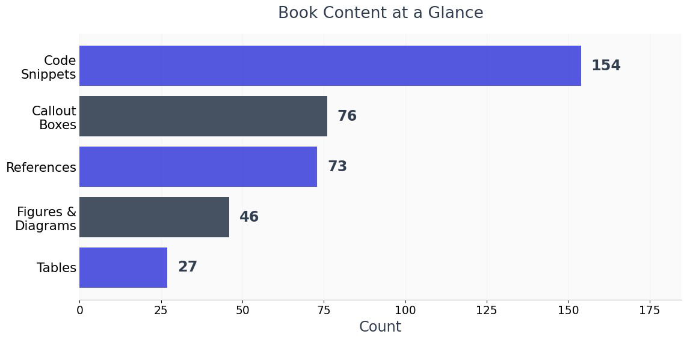
图 1：按类型划分的本书内容构成。
本书共 15 章，包含 54,940 个单词、154 个代码片段、46 幅插图、27 张表格、76 个提示框和 73 条参考文献（图 1）。
本书面向构建 AI 驱动系统的技术实践者——无论你是刚开始接触智能体，还是正在将其部署到生产环境。
主要读者：
如果你有以下情况，将从本书中获得最大价值：
构建有效的多智能体系统大约 40% 是理论（理解模型、评估、转化业务问题），60% 是系统工程（架构、代码、部署、扩展）。本书反映了这种平衡，既提供概念基础，也提供动手实现的指导。
与其他多智能体系统资料相比，本书采用了独特的方法：
为了从本书中获得最大收益，你应当具备：
本书采取基础优先的方法，引导你从零实现核心多智能体概念。作为其中的一部分，我们将从零构建一个多智能体库——picoagents，并用它来实现一组复杂的用例。你将学会构建：
通过自己实现这些基础构建模块，你将深入理解多智能体系统中涉及的设计决策与权衡。你将学会如何以及何时使用现有框架，以及如何架构出完全满足你需求的系统。PicoAgents 反映了 AutoGen、Microsoft Agent Framework、Google ADK 和 Pydantic AI 等生产级框架中同样存在的基础原则和架构模式。理解这些核心概念，将使你能够高效地使用任何多智能体框架。
本书分为四个部分，按照 理论 → 构建 → 优化 → 应用 的递进方式，系统地培养你在多智能体系统方面的专长：
第一部分建立你理解多智能体系统所需的理论基础。这一部分纯粹是概念性的，聚焦于核心原则，不涉及实现细节：
第二部分带你从理论走向实践，教你从第一性原理构建多智能体系统。这一动手实践部分与框架无关，聚焦于核心实现概念：
第三部分通过系统化的评估、优化、安全和伦理框架，解决让多智能体系统可靠且负责任地运行的关键挑战：
最后一部分通过全面的真实世界案例研究将一切融会贯通，展示完整的实现：
本书中的所有代码示例都可在配套的 GitHub 仓库中获取：
https://github.com/victordibia/designing-multiagent-systems
该仓库包含：
可运行的代码参考
在本书中，你会看到类似这样的特殊"可运行的代码"（Working Code）提示框，它们指向配套仓库中完整、可运行的示例。这些示例演示了概念的实际运作，并为你自己的实现提供了基础。请留意这个图标，找到这些实用的代码参考。
在本书中，你会看到对相关研究论文的引用，以及许多在博客文章、会议演讲和开源项目中探讨过的概念。在可能的情况下，均引用了原始来源——建议深入研读这些材料，以获得更深的理论理解和不同的视角。
AI 智能体领域正在快速演进，本书的写作也考虑到了这一点。请参阅后记，了解配套数字平台（提供季度更新、完整的应用示例和部署指南——单独提供）以及免费的开源资源。所有读者都可以关注本书的 GitHub 页面获取代码更新。
注意：如果你发现任何问题或有任何建议，请在本书的 GitHub 仓库中提交 Issue。
写作本书的过程中，得到了无数同事、朋友和更广泛 AI 社区的交流、协作与洞见的滋养。本书站在众多研究者和实践者的肩膀上，他们的贡献在全书各处被引用和致谢。我对他们的洞见和慷慨分享知识深表感激。
我对人机交互、AI 智能体和多智能体编排模式的理解，也深受与微软研究院人机体验（HAX）小组成员交流与协作的深刻影响：Saleema Amershi、Adam Fourney、Gagan Bansal、Jingya Chen、Suff Syed 和 Hussein Mozannar——感谢你们的多次合作！我同样感激 MSR AI Frontiers 实验室的负责人——Ece Kamar 和 Ahmed Awadallah——他们是我了不起的导师，并鼓励我写作本书。我还要感谢 Mike Kistler、Caitie McCaffrey、Maria Naggaga Nakanwagi——我们关于 MCP、A2A 的多次交流极大地影响了我撰写第 12 章分布式智能体协议的方式。
特别感谢微软研究院可视化小组的 Gonzalo Ramos、Steven Druker、Dan Marshall、Dave Brown 和 Nathalie Riche，我与他们分享了早期的兴奋，并在面向数据可视化的生成式 AI 想法上进行了合作。感谢众多审阅者抽出时间对本书早期草稿提供反馈，包括 Tamer Abuelsaad、Becky Whitney、Valliappa Lakshmanan、David Adamo、Piali Choudhury、Sasa Junosovic、Andrew Reed、Shipi Dhanorkar、Ade Famoti、Adewale Akinfaderin、Justin Norman、Ryan Sweet、Elisa Piccin、Tara Walker、Edidiong-Abasi Anwanane、Innocent Dibia、Raimondas Lencevicius 以及其他许多人。感谢 Happy Thorp 在编辑和校对方面的帮助。
我深深感激 AutoGen 社区——从 Chi Wang 和 Qingyun Wu（他们发起了 AutoGen 项目）到 Jack Gerrits 和 Eric Zhu（他们挺身而出协助领导项目、带来了工程严谨性并帮助项目取得成功）。本书中传达的许多实现想法（例如任务取消、组件序列化、记忆接口等）都源于与 Jack 和 Eric 的多次设计讨论。感谢所有分享想法、报告问题、提供反馈和贡献代码的贡献者、早期采用者和社区成员。更广泛的开源 AI 社区在塑造本书思想方面发挥了重要作用——通过无数次讨论、GitHub 上的数千个 Issue 和众多的社区电话会议。谢谢你们！
最后，我要感谢我的家人。这本书既是我的，也是你们的——感谢我的父母 Juliana、Paulinus、Karine 和 Norayr，为这段旅程奠定了根基；感谢我的妻子 Hermine，感谢她一路上的支持和出色的反馈；感谢我的小儿子 Liam，他的拥抱在困难时刻给了我所需的能量。谢谢你们！
Victor Dibia
本章涵盖：
如今的生成式人工智能（Generative AI，GenAI）模型已经展现出非凡的能力，能够在它们训练所用的海量数据中建模复杂的关系。例如，GPT-4、Claude、Gemini 等模型——也称为大型语言模型（Large Language Model，LLM）（Vaswani et al. 2017）——在文本处理任务上表现出色，例如：摘要段落、提取实体、生成代码等。凭借这些模型的能力，它们如今已被直接应用于各种行业的应用中以解决任务。例如，LLM 已被集成到生成营销文案、审查法律文件合规性、为聊天机器人和虚拟助手提供高级自然语言理解，以及协助研究人员进行科学发现的产品中。无论是个人用户还是企业，采用速度都在快速增长。一份近期报告指出，如今 75% 的知识工作者已经在工作中使用 AI（Microsoft AI Blog 2024），并且越来越多的初创公司正在构建利用这些模型解决现实问题的应用。
量化向 AI 智能体的转变
人们普遍承认，对 AI 智能体的兴趣正在快速增长，但到底增长了多少？为了用具体数据回答这个问题，第 14 章演示了如何构建一个多智能体工作流，分析来自 Y Combinator——北美最大的初创公司孵化器之一——的初创公司数据。
我们将设计的工作流分析了 5,622 家 YCombinator 公司的描述。我们发现，构建 AI 智能体的初创公司从 2020 年的 6.1% 增长到 2025 年的 47.7%——短短五年间增长了 7.8 倍。这种快速增长标志着行业看到了机会所在：从 AI 辅助工具迈向能够处理复杂、多步骤任务的完全自主系统。
这一分析本身就体现了我们将在第 2 章探讨的多智能体工作流模式，完整实现在第 14 章中详细说明。如果你对方法感兴趣，随时可以跳到后面阅读！
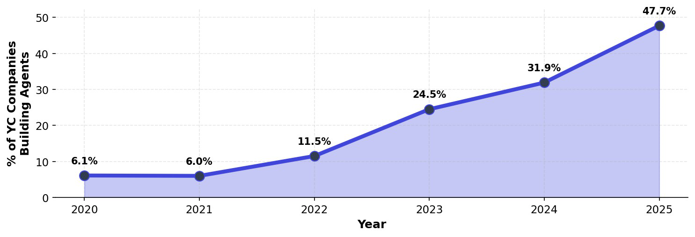
图 1.1：构建 AI 智能体的 Y Combinator 初创公司增长情况（2020-2025）。这一显著趋势展示了行业向自主智能体式 AI 系统的转变。
然而，随着任务变得更加复杂——那些长时间运行、涉及多个步骤、需要考虑多种视角、需要在动态解空间中探索的任务——仅靠这些模型就不够了。为了说明这一递进过程，并强调对不同类型 AI 系统的需求，请看表 1.1 中所示的示例任务，它们代表了三种截然不同的复杂度级别：
表 1.1：任务复杂度级别：模型级任务只需要信息检索，智能体级任务需要规划和工具使用，多智能体任务则需要多元专业能力和迭代开发。
| 复杂度级别 | 任务示例 | 描述 |
|---|---|---|
| 模型级 | "埃菲尔铁塔有多高？" | 直接从训练数据中检索信息 |
| 智能体级 | "告诉我英伟达（NVIDIA）今天的股价。" | 需要当前数据、规划和工具使用 |
| 多智能体 | "构建一个移动应用，帮助用户查看股价、购买股票并报税。" | 涉及多个领域的专业能力和迭代开发 |
定义：智能体、多智能体系统和工具
智能体：一种能够推理、使用工具行动、沟通和适应的 AI 系统
多智能体系统：多个智能体协同工作，各自具备专门的能力
工具：扩展智能体能力的外部能力，如 API、代码执行、网络搜索
表 1.1 中的任务 1 可以通过从模型训练数据或网络搜索引擎等现有系统中检索一般性知识来可靠地解决。这代表了模型可以完成的事情——无需规划、工具或适应的直接信息检索。
然而，任务 2 揭示了仅靠模型变得不足的地方。"英伟达今天的股价"代表着 LLM 在训练期间不太可能见过的信息；因此，它生成的结果很可能是错误的（幻觉）。任务 2 需要理解查询、规划（例如，将任务分解为获取当前股票数据、分析数据以回答问题等步骤）、行动（使用网络搜索或 API 等工具执行每个步骤）以及呈现最终结果。这正是我们需要智能体的地方——一个将模型的推理能力与使其能够代表我们行动的工具相结合的系统。当前的生成式 AI 应用通过构建包含 LLM 的预定义解决方案流水线来探索这种方法，LLM 驱动工具采取行动。
任务 3 代表的复杂度级别超出了即便是能干的单个智能体也无法有效处理的范围。它涉及多种类型的专业能力（界面设计、Android 开发、API 使用、集成测试等），并且需要一个迭代式解决方案：采取行动，由产生的结果决定走向解决方案的后续步骤（例如，检索合适的 SDK 文档、为应用中的每个模块编写多个版本、测试它们以识别错误、修复和集成，直到打造出一个可运行的应用）。这正是多个智能体变得必不可少的地方——每个智能体带来专门的能力，同时协作解决超出任何单一系统范围的任务。
在本书中，我们将专注于探索如何通过开发在多个智能体之间实现规划、行动和沟通元素的应用来应对这些复杂任务。反过来，这些应用有望催生全新且通用的数字界面、解决新类别的任务，或以减少人类劳作和付出的方式完成现有任务。
这种潜力超越了通用的任务自动化。当智能体理解用户上下文（当前活动、环境、近期交互）和偏好（明确定义的设置和行为模式）时，它们可以提供高度个性化的协助，处理诸如安排会议、起草邮件回复、预订航班、进行电商购物和报税等任务。
要释放这种潜力，我们需要理解基础构建模块：到底是什么让一个系统成为"智能体"？我们如何构建多个智能体有效协作的系统？让我们从审视这些核心概念开始。
从模型到智能体再到多智能体系统的演进过程如图 1.2 所示。
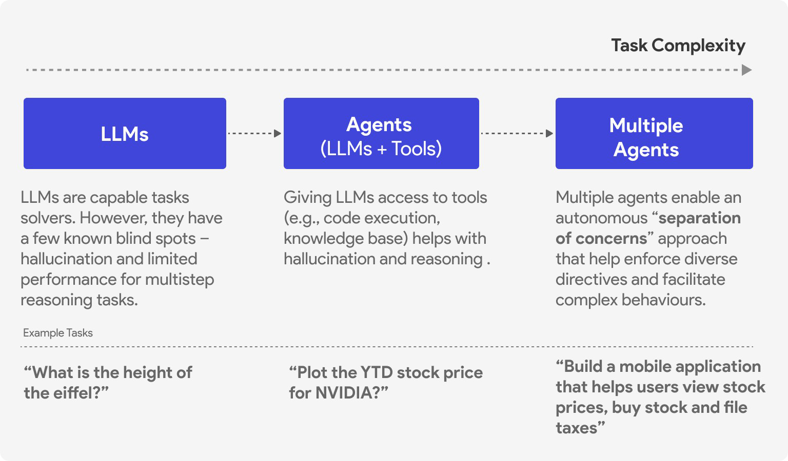
图 1.2：生成式 AI 模型（例如大型语言模型）可以处理广泛的任务，包括回答常识性问题、翻译文本、摘要段落、生成代码等。然而，随着任务变得更加复杂，需要推理、规划和行动，这些模型的局限性便显现出来。我们可以通过让 LLM 访问工具——使它们能够代表我们作为智能体行动——以及支持多个智能体之间的协作，来解决这些日益复杂的任务。
单智能体 vs 多智能体：一条模糊的边界
在实践中，"单个智能体"和"多智能体系统"之间的边界往往是模糊的。一个智能体使用的工具本身可能就是智能体（我们将在第 4 章 4.11 节探讨），或者在用户眼中表现为一个智能体的东西，其内部可能协调着多个协同工作的专门子智能体。
在本书中，我们展示显式的多智能体架构——智能体之间的协调是可见的、有意图的——因为这些模式最能清晰地体现设计原则。然而，我们探讨的编排模式、评估方法和伦理考量广泛适用于任何自主的智能体式系统，无论其架构呈现为"一个"智能体还是"多个"智能体。
生成式模型是深度神经网络的一个子集，擅长识别数据集中的复杂模式，从而使它们能够生成新的、相似的数据点。这些模型与判别式模型截然不同，后者专注于区分数据类型或对它们进行分类。生成式模型可以在各种模态的数据上进行训练。例如，在人类书面语言文本上训练的模型（如 GPT 系列）被称为大型语言模型（LLM）；在图像上训练的模型（如 DALL-E 系列）被称为图像生成模型（Image Generation Model，IGM）；而在两者上训练的模型（如 GPT4-V）通常被称为大型多模态模型（Large Multimodal Model，LMM）。本书将专注于生成文本输出的生成式模型，包括大型语言模型和大型多模态模型。
训练生成式模型的基本概念相对简单。以 LLM 为例，这些模型被训练来预测序列中的下一个词，或者填补文本中被掩蔽或隐藏的部分——即序列预测（sequence prediction）。通过将这一训练目标应用于足够大的数据集，模型学会了通过文本所描绘的世界的表示。反过来，模型可以利用这些表示生成连贯、相关且上下文恰当的文本。
为了应用这些模型解决任务，早期的工作专注于将多种任务框架化为序列预测问题。例如，为了对文本进行分类，先提供分类问题的描述，随后给出标签列表和一个提示词，询问："\<问题> \<标签> 所提供的标签中哪个是正确类别？"。类似地，为了摘要给定的段落，给出结构为"\<段落> 上述段落的摘要是……"的提示词，引导模型生成该段落的摘要。事实证明，将任务框架化为序列预测问题，使模型能够利用训练期间获得的知识来完成其初始训练目标之外的广泛任务（例如，语言翻译、情感分析、问答、对话生成、命名实体识别、句法解析、代码合成、改写、语法纠正等）。这一背景对于理解这些模型应用于复杂任务时的能力和局限性十分重要。例如，这些模型展现的推理能力（如 2 个苹果 + 10 个苹果 = 12 个苹果）通常局限于训练数据中充分覆盖的场景，而无法固有地泛化到罕见或未见过的场景（如求解三进制下的线性方程）。
创建能够提高任务成功完成概率的序列的做法，被称为提示词工程（prompt engineering）。少样本提示（few-shot prompting）（Brown et al. 2020）——在序列中包含任务及其解决方案的示例，思维链提示（chain-of-thought prompting）（J. Wei et al. 2022）——包含分解为求解步骤的任务示例，以及 ReAct 提示（Yao et al. 2022）——将推理和行动结合在语言模型中，已成为领先的提示词工程方法。除了提示词工程之外，在特定任务的指令数据和显式收集的人类反馈数据上微调模型（Ouyang et al. 2022）已被证明可以增强模型对齐（alignment）——即旨在确保生成输出与人类意图、偏好和价值观一致的工作。
最后，虽然可以指示 LLM 生成解决任务的文本序列，但它们一次能处理的文本量是固定的，受到所谓的上下文窗口（context window）的约束。上下文窗口大小定义了模型在单个输入和输出序列中能够处理的最大 Token（词或词片段）数量。这一限制由模型的架构决定，特别是其计算和内存约束。理解上下文窗口对开发者至关重要，因为它影响输入数据的结构方式和任务的框架方式。截断、滑动窗口技术、摘要、分块和优化的提示词工程等策略，对于在这些约束内有效运行、在各种应用中最大化模型潜力同时平衡计算资源至关重要。
像 GPT-4 或 Claude 这样的最先进模型，由于其计算需求和专有性质，主要通过基于云的 API 访问。包括 OpenAI、Anthropic、谷歌（Google）和微软 Azure 在内的模型提供商通过软件开发工具包（Software Development Kit，SDK）提供 API 级访问。典型的工作流程包括创建开发者账户、配置计费（大多数提供商提供按使用量计费的价格和免费层级），以及生成用于身份验证的 API 密钥。
在本书中，我们出于务实的原因统一采用 OpenAI API 规范：它已成为被多家提供商采用的事实标准。OpenAI SDK 原生支持 OpenAI 的服务和 Azure OpenAI——微软托管的 OpenAI 模型企业级部署，提供额外的安全、合规和区域可用性保证。这种标准化意味着为 OpenAI API 编写的代码只需极少改动即可在 Together AI、Anyscale 等提供商乃至本地模型部署上运行。
对于本地开发和隐私敏感的应用，vLLM（vLLM Team 2023）等工具支持自托管开源模型，同时保持 OpenAI API 兼容性。这种架构模式——不同提供商遵循通用的 API 规范——使我们构建的多智能体系统能够与底层模型提供商无关，无论是基于云的还是本地部署的。
虽然单个智能体可以有效地处理检索当前股价之类的任务，但即便是能干的智能体在面对高度复杂的挑战时也会遇到根本性的局限。考虑表 1.1 中的任务 3："构建一个移动应用，帮助用户查看股价、购买股票并报税。"尝试完成此任务的单个智能体需要理解多个领域的应用需求、设计用户界面和用户体验、编写 Android 开发代码、集成股票市场 API、实现报税功能，并处理测试、调试和部署。
图 1.3 展示了这一多领域任务的复杂性。
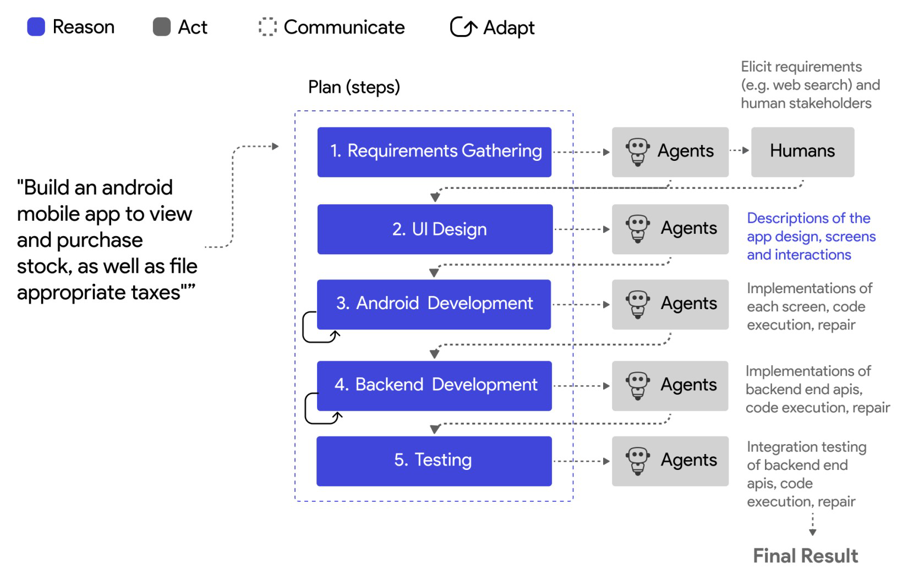
图 1.3：考虑以下复杂任务——"构建一个用于查看和购买股票、以及申报相应税费的应用"。为完成这样的任务，多智能体应用必须制定计划（例如，收集需求、设计界面、编写 Android 代码等），可选择地将计划中的步骤委托给具有专门相关能力的各种实体（智能体和人类），有效沟通并适应（从错误中恢复、探索新方法）以解决任务。
即使能够访问强大的模型和全面的工具，单个智能体也面临若干挑战。所需的海量上下文很快就会超出实际限制——现有研究（Liu et al. 2024）表明，虽然 LLM 可以处理越来越长的文本，但它们倾向于关注文本开头和结尾的指令，而忽视中间的数据。更根本的是，这一任务需要多种类型的专业能力，很难在单个智能体的指令中有效编码。
促使采用多智能体方法的复杂任务通常表现出四个关键特征，如图 1.4 所示。虽然任何一个特征的出现都会增加任务的复杂性，但往往是这些特征的组合才为多智能体系统带来最大的机会。
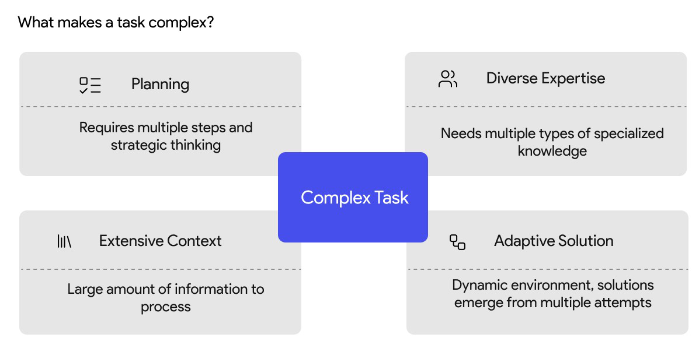
图 1.4：复杂任务表现出四个关键特征，使它们适合多智能体系统：规划（需要多个步骤和战略思维）、多元专业能力（需要不同领域的专门知识）、海量上下文（处理大量信息）和适应性解决方案（解决方案通过多次尝试涌现）。当任务组合多个特征时，其复杂性会越来越高，使其成为多智能体方法的理想候选。
复杂任务往往需要一个高层次的计划，其中包括将任务分解为必须成功完成的步骤。给定一些上下文，计划规定了一组应当执行的动作，以实现某个目标成功状态。这是机器人规划文献中一个众所周知且被广泛研究的属性，我们将在本书中借鉴该领域的概念。
将复杂任务分解为多个步骤，往往会得到可以从特定专业能力中受益的步骤。例如，考虑应用开发任务，其目标是构建一个用于查看和购买股票并报税的移动应用。这一任务可以分解为分析应用需求、设计用户界面、实现所需功能、集成股票数据和报税所需的 API，以及测试和部署应用等步骤。反过来，这些任务映射为可以由专门智能体（例如，UX 智能体、Android 应用智能体等）承担的特定角色，每个智能体拥有专门的知识和技能。
专业能力的分离实现了关注点分离（separation of concerns）的方法，这是单智能体系统遵循通用指令集时难以实现的。从应用开发的角度看，创建具有明确指令的智能体提供了一种有用的抽象，可以将职责清晰地映射到特定实体，实现应用的领域驱动设计（domain-driven design）。
复杂任务往往需要处理海量的上下文才能解决。例如，在我们的应用开发任务中，智能体可能进行网络搜索查询并请求人类反馈以汇集需求，通过多个回合来组装正确的初始上下文。如此冗长的指令或上下文对单智能体系统构成重大挑战。现有研究（Liu et al. 2024）表明，虽然 LLM 可以处理越来越长的文本，但它们倾向于关注文本开头和结尾的指令，而忽视中间的数据。这一观点也受到认知科学理论的启发，例如认知负荷理论（cognitive load theory）（Sweller 1988），该理论认为人脑的工作记忆容量有限。当面对冗长或说明不足的指令时，这种容量会不堪重负，导致理解力和表现下降。
多智能体的视角可以通过选择性上下文供给（selective context provisioning）来帮助解决这一局限——即只将与任务相关的可用上下文部分（例如，迄今为止所执行操作的历史）提供给专注于该任务的智能体。通过结构化指令和管理上下文，最大限度地减少不必要的认知负荷，我们可以显著提高 AI 系统的任务表现。
复杂任务往往处于动态环境中，在采取某些行动之前，确切的解决方案是未知或不确定的。例如，特定的数据源可能在某一时刻不可用，需要探索其他数据源，或者每个行动可能产生意想不到的副作用等。例如，在应用开发任务中，对 API 的初始请求可能失败（例如，由于网络问题、参数格式错误或 API 的一般性变更），要求智能体根据反馈（例如，从 API 请求收到的错误消息，或寻求人类的明确帮助）以不同的参数重试请求来适应。在这些情况下，解决方案从适应中涌现——在智能体解决任务的过程中，围绕某个初始计划、行动和结果进行迭代推理。
这一属性也受到元认知（metacognition）研究洞见的启发，元认知研究认为，智能体对自己认知过程的觉察和调节可以显著影响问题解决过程。元认知技能——对今天的单智能体系统来说仍具挑战——使智能体能够实时反思、评估和调整其策略，从而在多智能体协作的涌现框架内产生更具适应性、可能更具创新性的解决方案。
鉴于这些适应性需求，编写确定性流水线（例如，特定的提示词、工具）变得更加困难，因此需要能够自我编排（具有一定自主性）的智能体来解决任务。
表 1.2 展示了一些复杂任务的示例，以及它们如何映射到各项复杂任务属性。
表 1.2：复杂任务示例及其定义特征：规划、多元专业能力、海量上下文和适应性解决方案。
| 任务 | 规划 | 多元专业能力 | 海量上下文 | 适应性解决方案 |
|---|---|---|---|---|
| Web 应用开发 | 需求、设计、合规、API | 开发者、设计师、安全、数据专家 | 遗留系统、文档、工作流、标准 | 安全更新、反馈、变更 |
| 财务报告 | 数据收集、分析、报告 | 分析师、统计师、撰稿人、领域专家 | 市场数据、工具、标准、趋势 | 新数据源、反馈、市场变化 |
| 报税 | 数据收集、分析、申报、合规 | 税务顾问、分析师、法务、辖区专家 | 记录、税法、法规、结构 | 法律变更、查询、更正 |
| 演示设计 | 内容审查、设计、交互性 | 设计师、编辑、演示专家 | 内容、受众、目标、指南 | 反馈、内容更新、格式变更 |
此外，我们对 YCombinator 真实世界数据的分析揭示，2025 年构建 AI 智能体的 Y Combinator 初创公司中，47.7% 聚焦于以下领域：生产力（25.5%）、软件（18.4%）、金融（15.6%）、健康（11.6%）和电商（6.8%），在这些领域中规划与多元专业能力至关重要。详见第 14 章的深入分析。
反思这些模式，可以为我们理解何时以及为何多智能体方法有益提供背景。当任务复杂、动态且需要多元专业能力时，多智能体方法可以提供有效管理这些任务所需的适应性和协作式问题解决能力。近期研究也强调了多智能体方法的益处。例如，（Du et al. 2023）发现"心智社会"（society of mind）方法（Minsky 1986）——一种提出人类智能源于多个简单智能体协同交互的理论——在多个智能体经过多轮对话辩论结果时，可以改善推理和事实准确性。类似地，（Liang et al. 2023）证明，使用具有独立角色的多个智能体（例如，执行任务的智能体和评判任务质量的智能体）可以提高生成结果的多样性和质量。
智能体的定义在 AI 文献中各不相同，从机器人学的早期概念到近期围绕 AI 模型驱动实体的想法。一个很好的起点是 Russell 和 Norvig 的经典著作（Russell and Norvig 2020），他们将智能体定义为任何通过传感器感知环境、并通过执行器作用于环境的实体，通过将感知映射到行动的智能体函数（agent function）运作。这一经典定义强调由逻辑推理驱动的感知-行动循环。
为了说明这种经典方法，考虑一台机器人吸尘器：它通过传感器感知环境（检测障碍物、灰尘量、电池状态），应用逻辑规则（如果检测到障碍物，转弯；如果检测到灰尘，加大吸力；如果电池电量低，返回充电座），并通过执行器行动（用于移动的电机、吸力机构、刷子旋转）。智能体函数遵循预定的逻辑：障碍物 → 避开，灰尘 → 清洁，低电量 → 充电。这创建了一个连续的感知-行动循环，每个传感器读数都会触发特定的程序化响应。
我们可以在此基础上构建，并将其扩展到生成式 AI 时代。虽然经典智能体通过预定义函数运作，生成式 AI 智能体保持同样的感知-行动循环，但增加了高级能力：由大型语言模型驱动的复杂推理、动态工具使用、自然语言沟通，以及基于结果的适应性行为。这些增强的能力使它们特别适合我们在本书中探讨的协作式问题解决。
在本书中，我们将智能体定义为能够推理、行动、沟通和适应以解决问题的实体。考虑我们的英伟达股价示例（表 1.1 中的任务 2）：一个有效的智能体必须理解信息请求、推理如何获取当前股票数据、使用合适的工具（网络搜索或金融 API）采取行动，并在初始方法失败时适应。这种适应可能包括尝试替代数据源或调整查询策略。
智能体的核心组件如图 1.5 所示。
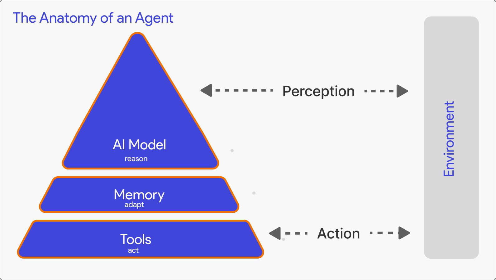
图 1.5：智能体是一个软件实体，拥有核心组件——一个支持推理的生成式 AI 模型、使智能体能够行动的工具，以及使智能体能够回忆和复用信息的记忆。
智能体拥有四项基本能力，使其区别于基础模型或传统程序：
推理（Reason）：智能体可以通过对可用上下文应用规则或逻辑来合成新信息。这种推理可以是演绎、归纳或溯因式的，可以由生成式 AI 模型、自定义处理函数或两者的组合驱动。在我们的股价示例中，推理包括理解"今天的英伟达"需要当前市场数据，而不是来自训练数据的历史信息。
行动（Act）：智能体可以采取具体行动来影响环境或收集信息。这超越了生成文本响应——智能体可以执行代码、调用 API、搜索网络或与外部系统交互。对于股价任务，行动意味着实际调用金融数据 API 或执行网络搜索以检索当前定价信息。
沟通（Communicate）：智能体可以与用户、其他智能体和外部系统有效交换信息。这包括理解自然语言输入、组织恰当的响应，以及知道何时以及如何请求额外信息或澄清。
适应（Adapt）：智能体可以根据反馈、变化的条件或新信息修改其方法。如果初始 API 调用因速率限制而失败，有效的智能体可能会等待并重试、切换到替代数据源，或根据收到的错误消息调整其方法。
智能体通过图 1.6 所示的基本行动-感知循环运作。与生成单次响应的模型不同，智能体通过迭代循环工作——采取行动、感知结果，并根据结果适应，直到任务解决。多智能体系统建立在这一原理之上，多个智能体运行协调的行动-感知循环，以解决超出任何单个智能体能力的复杂任务。
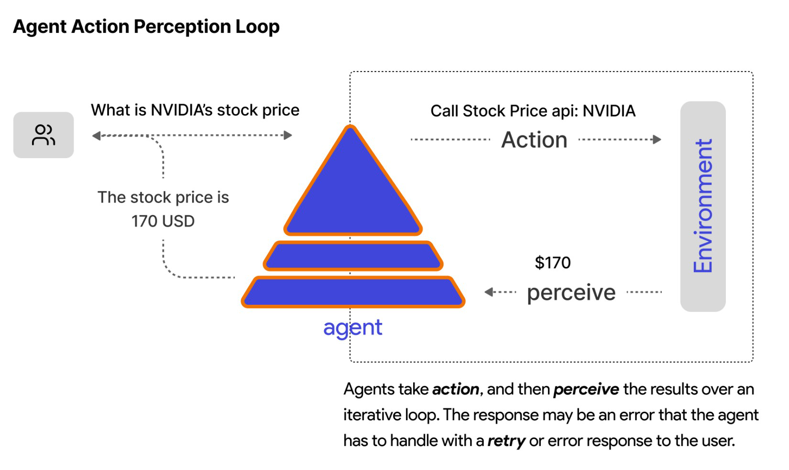
图 1.6：智能体行动-感知循环：智能体通过迭代循环运作，在其中采取行动（例如调用 API）、感知结果（处理响应），并根据结果调整方法。成功时，智能体提供自然语言响应；出错时，它们可能以不同的参数重试，或告知用户局限性。
这些能力由图 1.5 所示的三个核心组件协同工作实现：
支持决策和规划的推理引擎。这通常是一个大型语言模型（LLM）或大型多模态模型（LMM），能够理解上下文、生成计划并确定适当的行动。模型充当智能体的"大脑"，处理输入并决定下一步做什么。
为了让智能体成功完成任务，它们必须对任务状态进行推理，并确定要采取的适当行动。这一核心决策能力可以由生成式 AI 模型、预定义逻辑或显式的人类输入驱动。除了生成式 AI 模型之外，智能体还可以利用自定义逻辑（例如，基于某些启发式规则，在每次收到消息时调用 API 的逻辑），或显式的人类输入来驱动其行动和推理。智能地组合多种驱动因素的实现——使用生成式 AI 模型对任务状态进行推理，并请求即时（just-in-time）的人类输入提供反馈——可以显著提高智能体响应的质量和适应性。
工具（也称为技能或插件）是为执行特定任务而设计的逻辑的具体实现。它们是智能体对任务采取行动的主要方法。工具可以分为两类：通用工具和领域专用工具。
通用工具支持广泛的能力，例如代码执行器，它允许智能体完成任何可表达为代码的任务；或者 UI 界面驱动器，它允许智能体执行表述为一系列 UI 交互的任务。相比之下，领域专用工具旨在解决特定任务或一组相关任务（例如，使用特定参数调用天气 API）。为智能体提供工具访问权限，可以显著影响智能体能够处理的任务范围（多样性）和复杂性。
为了让智能体有效执行任务并不断改进，它们需要记忆——回忆和复用过去交互信息的能力。这使智能体能够从经验中学习，并将教训应用于未来的任务。
短期记忆充当当前任务的工作记忆，跟踪近期行动、对话历史以及完成眼前目标所需的临时信息。在多智能体系统中，短期记忆通常包括共享上下文，以便智能体能够有效协调。
长期记忆存储积累的知识、成功的策略和学到的模式，这些在跨任务和会话之间持续存在。这使智能体能够随着时间建立专业能力，并将过去的经验应用于新情况。
除了这些时间维度上的区分，记忆系统还在控制权归属上有所不同。应用管理的记忆由开发者控制——信息由应用代码基于预定义策略自动存储和检索。智能体管理的记忆赋予智能体直接控制权——它们通过工具明确决定存储什么、何时检索信息，以及如何组织其知识库。在构建需要积极整理自身知识的智能体时，应用控制与智能体控制的记忆之间的这一区别非常重要。我们将在 4.8 节探讨这些记忆架构及其权衡。
这些组件在一个连续的循环中协同工作：模型对当前状态进行推理并确定要采取的行动，选择并使用合适的工具执行该行动，观察结果，用新信息更新记忆，并为下一步调整其方法。
对话式编程
上述行动-感知循环引出一个实际问题：我们如何在代码中实现这种迭代的推理和行动？
一种强大的方法是对话式编程（conversational programming），其中智能体循环中的每一步——推理、行动和处理结果——都表示为对话中的消息。这与经过聊天微调的模型自然契合，这些模型的设计目的就是处理对话历史并生成上下文恰当的响应。
这种范式使智能体能够无缝融合自然语言交互与代码执行或 API 调用等具体行动，并构成了 AutoGen（Wu et al. 2023）等多智能体框架的基础——在这些框架中，智能体通过消息传递进行协调——这是我们将在后续章节详细探讨的模式。
虽然智能体和模型都能处理自然语言并生成响应，但智能体在超越文本生成、与世界交互的能力方面有着根本的不同：
我们的英伟达股价示例（表 1.1 中的任务 2）完美地说明了这一区别：模型可能会基于其训练数据生成一个听起来合理但可能错误的股价，而智能体会认识到需要当前信息，使用合适的工具获取实时数据，并提供准确、最新的响应。
这种超越文本生成、进入行动和适应的能力，正是智能体成为应对复杂现实世界任务的强大工具的原因——这些任务需要的不仅仅是信息合成。
在智能体定义的基础上，我们将多智能体系统定义为：涉及一组智能体的应用，每个智能体具有不同的能力和专门的目标，协同解决任务。虽然这些智能体可以体现在物理机器人中，但本书聚焦于主要存在于数字世界的智能体。
如图 1.7 所示，多智能体系统可以通过两种截然不同的方法组织。
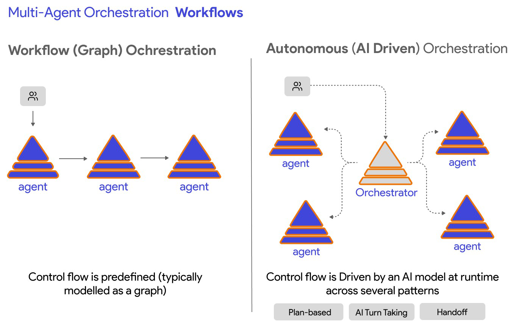
图 1.7：多智能体编排的两种方法：预定义工作流（左）与 AI 驱动的自主编排（右）。关键区别在于控制流是预先确定的，还是在运行时从 AI 驱动的决策中动态涌现。
多智能体系统
多智能体系统（或多智能体应用）是协同解决任务的智能体的集合。每个智能体保持特定的能力——推理、行动和沟通——并可以适应任务或环境的变化。多智能体系统的关键区别特征是其编排机制：决定智能体如何沟通、何时行动，以及它们在任务执行期间如何共享数据和控制流的模式。
编排
在本书中，我们将反复使用"编排"（orchestration）一词，因此很有必要定义我们所指的含义。编排指使多个智能体能够有效协作实现共同目标的机制和模式。这涵盖两个主要方面——它们如何共享信息，以及谁控制执行流（它们行动的顺序）。
虽然学术文献和新兴实践有时将"协调"（coordination）和"编排"互换使用，但我们在全书中使用"编排"作为主要术语，以与行业标准及 AI/ML 框架中的常用用法保持一致。
如图 1.7 所示，多智能体系统可以通过两种截然不同的方法组织。多智能体工作流（左）使用预定义的控制流，智能体遵循既定的顺序和交接，创建可预测且可靠的过程。自主多智能体系统（右）使用 AI 驱动的编排，控制流在运行时动态确定，能够对复杂或不可预测的任务做出适应性响应。虽然两种方法都使用具有相同核心结构的智能体——模型、记忆和工具——但它们在编排决策的制定方式上有着根本的区别。
多智能体系统可以通过两种根本不同的方法组织，每种方法适合不同类型的问题：
多智能体工作流（确定性编排）：这些系统遵循预定义的协作模式，每个智能体都有明确指定的角色、职责和交接点。编排逻辑被显式编程，创建可预测且可重复的过程。例如，文档处理工作流可能有专门从事文本提取、分析和格式化的智能体，按预定顺序工作，每个阶段都有明确的输入和输出。
自主多智能体编排（AI 驱动编排）：这些系统使用 AI 模型驱动编排决策，允许智能体动态协商职责，并根据任务要求和中间结果调整其协作。编排从智能体交互中涌现，而不是预先编程的。这种方法对于最佳解决策略无法预先确定、必须通过探索和适应逐步形成的复杂任务特别有价值。
这两种方法之间的选择直接影响系统行为：工作流提供可预测性和可靠性，而自主系统提供适应性和创新性。我们将在第 2 章详细探讨每种方法中的具体模式，包括工作流的顺序和监督者模式，以及自主系统的群聊和交接模式。
一个适应性多智能体应用示例
考虑这个场景：你需要创建一个应用，以最优价格预订前往特定目的地的航班。然而，你的目标航空公司 specialairlines.com 不提供 API——只有为人类用户设计的网页界面和移动应用。
这带来了几个超越简单查找和预订航班的挑战：
界面导航：系统必须理解界面内容（HTML 元素、视觉布局），确定适当的动作（点击按钮、填写表单），并验证成功（检查确认消息）。每个动作都会改变界面状态，影响后续可能的动作。
动态适应：系统必须通过迭代式问题解决来处理界面变化（按钮位置变动、表单字段更新）并从错误中恢复（预订失败、网络问题）。
多智能体编排：成功需要专门智能体之间的协作——也许是负责界面交互的导航智能体、负责交易的支付智能体，以及负责验证的监控智能体——以及在需要协助时与人类用户沟通。
这一场景说明了一种解决方案无法预先确定、必须通过一系列适应性行动涌现的任务。它体现了需要跨多个智能体进行推理、行动、适应和沟通的复杂问题——超出当前单智能体系统能力的任务，是多智能体方法的理想候选。
多个因素凸显了多智能体生成式 AI 应用在今天的重要性，包括 AI 推理能力的进步、通过时间套利获得的经济机会、自我改进的系统、应对复杂任务的机会、对可靠自动化日益增长的需求、平台经济学，以及对伦理 AI 部署日益增长的需求。这些因素共同强调了多智能体系统在应对当代挑战中的重要意义。
多智能体系统的大前提并不新鲜。这一主题已被广泛研究，既从理解人类如何协作解决任务的角度（集体智能、众包），也从人工智能体如何与自身和人类协作的角度（机器人规划、机器人导航、人机协作、群体智能等）。然而，人工智能体的发展一直受到限制，因为缺乏一个能够适应上下文、综合应对任务的计划并推动执行此类计划所需行动的推理引擎（或人工大脑）。生成式 AI 模型近期在展示出的推理能力上的进步——如 GPT-3.5 和 GPT-4——改变了这一现状，如今提供了一个关键组件，使创建真正自主多智能体系统的新实验和进展成为可能。
多智能体系统通过时间套利（time arbitrage）提供令人信服的经济优势。虽然智能体完成一项任务在绝对时间上可能比人类更长，但考虑到人类注意力的价值，经济学上有利于委托。例如，一项耗费你 30-100 美元时间（按你的时薪价值计算 1 小时）的任务，让智能体花 2-3 小时完成可能只需 1-2 美元。随着生成式 AI 推理成本持续下降，而人类时间变得更加宝贵，这一等式只会越来越有利。
与传统软件需要工程努力来改进不同，多智能体系统可以自动从底层 AI 模型的进步中受益。这创造了一个独特的机会：以最小的额外投入，构建价值随时间复利增长的系统。
注意
在我的职业生涯中，我多次见到将能力委托给 AI 智能体的系统，其性能随着底层模型的改进而提升。一个很好的例子是我在 LIDA（Dibia 2023）上的工作——一个基于工作流的多智能体系统，用于从数据自动生成可视化。该系统初始版本使用 OpenAI 的 davinci 模型系列构建，在初始评估框架上的错误率为 20%。仅仅切换到几个月后发布的 GPT-3.5 turbo，错误率就全面从 20% 降至 3%。随着新的先进模型不断出现，我至今仍能看到这类系统级的改进。
如今许多重复性问题难以自动化，或难以用可靠的软件工具支持。现有研究表明，一些自动化挑战源于这些任务需要隐性知识（tacit knowledge）——一种难以言说或编码、但更容易通过经验或实践传递的知识形式。然而，由编码了海量知识、并能与人类和其他智能体协作的 LLM 所赋能的智能体群体，为应对这些复杂任务提供了新的机会。这种方法可以帮助自动化以前被认为不可行的任务，从而减少人力投入和潜在的错误。
企业和个人都在寻求能够自主执行复杂任务、同时保持高可靠性和安全性的 AI 解决方案。人类仍应留在监督回路中，确保自动化解决方案可靠、安全地带来成本和精力的节省。多智能体系统可以为复杂的现实世界自动化挑战提供所需的可靠性和适应性。
多智能体系统实现了"超级应用"（everything app）经济学——通过集成而非专门的点状解决方案创造价值。这可以捕获用户偏好、跨领域学习并降低切换成本。同一个系统可以处理多样化的任务，无需用户进行专门配置或具备领域知识。平台经济学的收益包括：通过集成创造价值，作为平台节省时间并避免切换成本，以及能够捕获用户偏好、学习并随着时间推移变得更有价值。
随着 AI 部署的扩展和生成式 AI 模型应用于各种问题领域，对负责任、安全和以人为中心的多智能体框架的需求变得越来越关键。确保在 AI 开发和部署中满足伦理考量，有助于建立对这些系统的信任，并减少潜在的负面后果。
分布式智能体：跨越多个组织边界的智能体
根据工程师的背景不同，"多智能体系统"一词可能唤起不同的心智模型。对一些人来说，重点是在单个应用/线程/进程内、具有相似权限结构而协作的软件实体。对另一些人来说，重点是分布式智能体互联网（internet of agents），其中智能体主要互不知晓（需要某种发现协议）、权限（安全与访问）明显不同，且通信必须在大规模下同时支持同步和异步模式。
在本书中，我们将主要聚焦第一种场景。虽然第二种很重要，但过早聚焦分布式智能体往往是过度设计——复杂性的增加——并且有标准方法可以帮助我们在需求出现时过渡到分布式设置。在 AutoGen 0.4 版本的重写/重新设计中，我们专门提供了可以是单进程或分布式的运行时（runtime）概念，允许开发者创建可以在任一模式下运行的智能体，而无需更改智能体逻辑本身。我们发现绝大多数用例都很好地由单进程/线程应用满足。
具体而言，在后面的章节（参见第 12 章）中，我们将讨论用于分布式智能体间通信的新兴协议、设计选择，以及如何将现有智能体适配到分布式环境中工作。
构建 AI 应用需要从一系列架构谱系中选择合适的复杂度级别：用于文本生成的简单模型、用于行动的单智能体、用于结构化确定性协作的多智能体工作流，以及用于探索式问题解决的自主多智能体系统。虽然自主多智能体系统提供最复杂的能力，但它们引入了重大挑战，包括不可预测的结果、跨模型版本的可复现性问题、更高的出错概率，以及额外的成本和延迟。
图 1.8 所示的决策框架通过一系列关于任务需求的逻辑递进式问题，帮助你选择合适的架构。
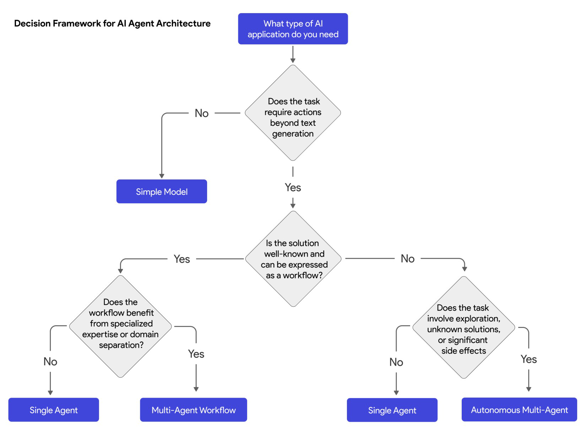
图 1.8：基于任务需求选择合适 AI 智能体架构的决策框架。
架构的选择遵循基于任务特征的逻辑递进。
从根本问题开始：你的任务是否需要超越文本生成的行动？ 如果你的任务只涉及文本处理、分析或生成——例如回答训练数据中的问题、文档摘要或根据规格生成代码——那么直接调用 AI 模型生成响应就足够了。
对于需要行动的任务，下一个考虑是你的解决方案方法是否广为人知、可以表达为工作流。当你清楚了解所需步骤及其执行方式时，你是在单智能体和多智能体工作流之间做选择。
如果你的工作流受益于专门的专业能力——任务的不同部分需要不同的领域知识——那么多智能体工作流是合适的。当专门智能体之间的协作模式已被充分理解，且每个智能体的角色和交接遵循既定流程时，这种方法效果最好。例如，金融分析流水线需要独立的市场数据、风险评估和投资组合优化智能体按确定的顺序工作。然而，如果任务可以由一种专业能力有效处理，那么配备必要工具的单智能体更高效。
对于解决方案方法不明确的任务，你根据所需的探索程度在单智能体和自主多智能体系统之间做选择。如果任务涉及已知的动作序列，但需要相对简单的行动-感知循环——例如带结果验证的 API 调用——单智能体是合适的。然而，当解决方案通过探索和动态的智能体交互涌现、当智能体必须独立定义和改进、当智能体必须根据中间结果调整协作、或当性能通过从成功与失败中迭代学习而提升时，自主多智能体系统变得必要。例如，需求和实现方法通过实验逐步演进的应用开发。
一个指导原则：选择能有效满足你需求的最简单架构。 每个复杂度级别在提供更强能力和适应性的同时，都会引入额外的复杂性、开发时间和潜在故障点。如有疑问，从简单开始，随着你对任务真实需求的深入理解，再演进你的架构。
这些原则得到了 10.6 节综合评估结果的验证。当跨多种任务类型比较直接模型调用、带工具的单智能体和多智能体系统时，数据证实：直接模型调用在简单推理任务上表现出色（9.7/10 分，Token 效率比多智能体高 24 倍），而多智能体系统只有在任务需要工具协调或专门专业能力时才物有所值。例如，需要网络搜索的研究任务中，直接模型得分为 3.2/10，而支持工具的智能体得分为 9.0/10——展示了架构复杂性何时变得必要。
太棒了！如果你读到这里，你大概已经迫不及待要动手构建你的第一个智能体了。从第 4 章开始，我们将一起从零构建一个名为 picoagents 的多智能体库。
作为快速预览，让我们先看看我们将构建的一些功能，并借此机会一步步创建一个简单的诗人-评论家协作系统，运行你的第一个多智能体应用。我们将定义两个智能体——一个写俳句的诗人和一个对诗歌质量提供反馈的评论家。其思路是：评论家的反馈可以迭代改进诗人的输出。
在编写和运行任何代码之前，我们需要做的第一件事是确保 Python 环境设置正确。幸运的是，我们只需要做一次，之后可以复用同一环境运行本书的所有示例。
我总是建议使用虚拟环境来管理依赖——这意味着我们要确保安装所需版本的 Python，并且所有安装的库都与同一台机器上的其他项目隔离。你可以使用 venv（Python 内置）或 conda（如果你更喜欢）来创建。这里我们使用 venv 以求简单。
# 创建并激活虚拟环境
python -m venv multiagent_env
source multiagent_env/bin/activate
# Windows 上：multiagent_env\Scripts\activate
pip install picoagents # 从 PyPI 安装
让我们从必要的导入开始（Agent 和 OpenAIChatCompletionClient 类）。
import asyncio
from picoagents import Agent
from picoagents.llm import OpenAIChatCompletionClient
import os
现在，我们需要设置语言模型客户端。这里我们将通过 OpenAIChatCompletionClient 类使用 OpenAI 的 GPT-4.1-mini 模型。如果我们想使用 Azure OpenAI 服务，也可以使用其他模型客户端，例如 AzureOpenAIChatCompletionClient——或者任何符合预期接口的其他模型客户端。
# 设置语言模型客户端
client = OpenAIChatCompletionClient(
model="gpt-4.1-mini",
api_key=os.getenv("OPENAI_API_KEY")
)
请注意，你需要直接传入 API 密钥，或将其设置为名为 OPENAI_API_KEY 的环境变量（推荐）。
接下来，让我们创建一个相当简单任务的单个智能体——生成一首俳句（一种 5-7-5 音节结构的诗）：
# 创建一位俳句诗人
poet = Agent(
name="poet",
description="Haiku poet.",
instructions="You are a haiku poet.",
model_client=client
)
虽然我们的目标是构建多智能体系统，但在构建过程中测试每个组件总是一个好主意。让我们测试我们的诗人智能体：
# 测试诗人
async def test_poet():
response = await poet.run("Write a haiku about cherry blossoms in spring")
print(f"Poet says: {response}")
asyncio.run(test_poet())
运行此代码产生类似如下的输出：
[user] 12:09:14 | Write a haiku about cherry blossoms in spring
[poet] 12:09:16 | Petals softly fall,
Whispers drift on warm spring breeze,
Life wakes in colors.
[usage] duration: 2.0s, tokens: in:26, out:20 | finish: stop
输出显示对话历史（用户请求和智能体响应），随后是用量统计。run() 方法在返回之前等待完整响应。如需智能体工作时的实时更新，可以改用 run_stream()——我们将在第 4 章详细探讨流式传输。
让我们创建一个诗歌评论家来提供反馈：
# 创建一位诗歌评论家
critic = Agent(
name="critic",
description="Poetry critic who provides constructive feedback on haikus.",
instructions="You are a haiku critic. \
When you see a haiku, provide 2-3 specific, actionable \
suggestions for improvement. . Be constructive and brief. \
If satisfied with the haiku, respond with 'APPROVED'",
model_client=client
)
同样，我们也可以测试我们的评论家智能体：
# 测试评论家
async def test_critic():
haiku = ("Cherry blossoms fall\n"
"Petals dancing in spring breeze\n"
"Nature's gentle song")
response = await critic.run(f"Please critique this haiku: {haiku}")
print(f"Critic says: {response}")
asyncio.run(test_critic())
现在是激动人心的部分——让我们使用轮询编排（round-robin orchestration）让它们协作（一种简单的模式：智能体在共享对话中轮流处理任务，直到满足终止条件）：
from picoagents.orchestration import RoundRobinOrchestrator
from picoagents.termination import MaxMessageTermination, TextMentionTermination
# 创建终止条件
termination = (MaxMessageTermination(max_messages=8) |
TextMentionTermination(text="APPROVED"))
# 创建编排器
orchestrator = RoundRobinOrchestrator(
agents=[poet, critic],
termination=termination,
max_iterations=4
)
现在，让我们用一个任务运行编排器：
# 运行编排
async def run_orchestration():
task = "Write a haiku about cherry blossoms in spring"
stream = orchestrator.run_stream(task)
async for message in stream:
print(f"{message}")
asyncio.run(run_orchestration())
RoundRobinOrchestrator 管理一个轮流发言的循环，而终止条件确保对话恰当地结束——这里是达到最大消息数，或评论家以特定文本批准了俳句。
上述代码的输出如下：
🎯 Task: Write a haiku about cherry blossoms in spring
🔄 Poet and Critic collaboration:
[user]: 22:58:25
==================================================
Write a haiku about cherry blossoms in spring
[poet]: 22:58:27
==================================================
Petals drift like dreams,
Whispers of a fleeting past,
Spring's soft blush unfolds.
[critic]: 22:58:28
==================================================
1. Consider incorporating a more vivid description of the cherry
blossoms to strengthen the imagery—what do they look or smell like?...
APPROVED
🏁 RoundRobinOrchestrator: duration: 3.6s, tokens: in:232, out:121,
calls: 2 . Stop reason: Text mention found: 'APPROVED'
恭喜——你刚刚构建并运行了你的第一个多智能体应用！
可运行的代码：第一个多智能体系统
这个俳句系统的完整可运行示例位于 examples/orchestration。使用 python round-robin.py 运行它，或添加 --web 标志启动 Web UI。
通过控制台输出观察智能体协作很有帮助，但直观地看到交互会让调试和理解变得容易得多。PicoAgents 包含一个 Web 界面，让你通过浏览器与多智能体系统交互。
要用 Web 界面启动俳句系统，用 serve() 函数包装编排器：
from picoagents.webui import serve
# 使用我们上面创建的编排器
serve(entities=[orchestrator], port=8070, auto_open=True)
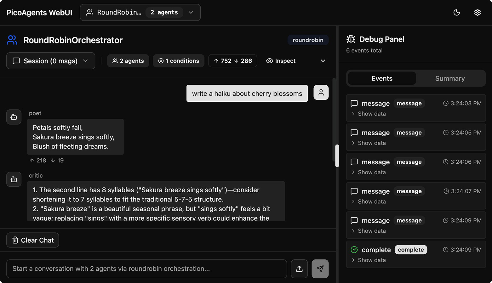
图 1.9：PicoAgents Web UI，显示诗人与评论家智能体的轮询编排器。界面展示参与的智能体、终止条件、对话流，以及用于检查智能体交互的调试面板。
这一行代码启动一个带有完整界面的 Web 服务器，你可以在其中看到诗人与评论家智能体之间对话的展开、检查单个消息，并实时探索编排模式（图 1.9）。
Web UI 提供了几个有用的功能：查看智能体之间的消息历史、检查工具调用和响应、监控终止条件，以及调试多智能体交互。我们将在第 8 章探讨如何从零构建类似的集成智能体和编排器的 Web 界面。
根据你对 AI 模型的专业程度，你可能会问——Agent 类是如何实现的？RoundRobinOrchestrator 如何工作？什么是 model_client？终止条件如何工作？别担心——我们将探索所有这些组件——我们将在第 4 章及后续章节中从零构建它们。
总而言之，以下是本章的关键要点：
本章涵盖：
作为一名软件工程师，你在职业生涯中很可能遇到过各种模式。无论是在计算机科学课程中学习单例（singleton）和观察者（observer）等设计模式，还是在准备面试时发现双指针和滑动窗口等算法模式，其底层原则始终一致：通过实验和实践，我们的领域识别出最有效的方法，并将这些洞见固化为可复用的解决方案。
模式为管理复杂性提供了结构，防止我们对已经充分理解的问题重复发明解决方案。多智能体系统也不例外。在第 1 章中，我们将智能体定义为能够推理、行动、沟通和适应以解决任务的实体，并探讨了使用多个智能体处理具有规划需求、多元专业能力需求和适应性解决方案的复杂任务的益处。本章探讨为有效协调多个智能体而涌现的编排模式。
多智能体编排的架构深刻影响系统行为。选择不当的模式可能导致无限循环、成本过高，或在现实条件下崩溃的脆弱解决方案。相反，某些模式会产生固有更可靠（但更受限）的系统，而另一些模式则支持可优雅适应复杂任务的可扩展系统。重要的是，智能体在处理任务，选择正确的任务管理模式——即何时暂停、委托给人类或重试——对于防止失控执行和确保智能体保持生产力至关重要。
本章提出一种多智能体设计模式的分类法，沿从显式控制到涌现行为的谱系组织。图 2.1 提供了这一谱系的视觉概览。
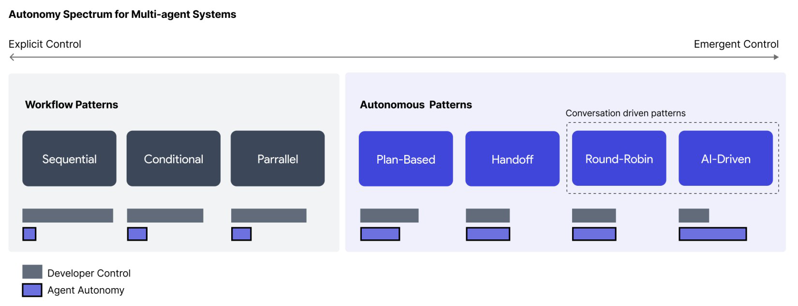
图 2.1：多智能体编排模式的自主性谱系，展示从显式工作流控制到涌现式自主协调的递进。
如果你阅读多篇关于智能体应当如何编排的文章，会遇到各种术语，如"顺序模式""监督者模式""分层模式"和"群体模式"。虽然这些描述各不相同，但底层模式可以沿一个基本谱系分类：授予智能体确定其编排的自主性水平。
谱系的一端是工作流模式——开发者显式定义执行路径和控制流。另一端是自主模式——智能体通过运行时推理和沟通确定编排。理解这一谱系至关重要，因为每种方法在可预测性和灵活性之间提供了不同的权衡。
多智能体协调建立在数十年分布式系统研究的基础上。Apache Airflow、Temporal 和 Prefect 等传统工作流引擎，通过基于 DAG 的依赖管理和健壮的状态同步，仍然是实现工作流模式的绝佳基础。然而，AI 智能体引入了根本性差异：使用自然语言而非规则/启发式进行语义推理、基于中间结果适应的动态规划、需要新错误检测方法的概率性输出，以及基于 Token 的经济学——通信成本随对话长度而增长。这些差异在自主模式中最为明显，AI 驱动的协调实现了超越传统工作流系统的能力。
在深入每种模式之前，先看看本章概念如何映射到后续章节中的具体实现（见表 2.1）。这一路线图帮助你在阅读本书的过程中将理论模式与可运行代码联系起来。
表 2.1：模式到实现的映射，展示本章的理论概念如何与后续章节中的具体代码相连接。
| 模式类别 | 具体模式 | 实现章节 | 关键类/概念 |
|---|---|---|---|
| 工作流 | 顺序 | 第 6 章 | Workflow、FunctionStep、.chain() |
| 工作流 | 条件 | 第 6 章 | 带条件的 Edge、分支逻辑 |
| 工作流 | 并行 | 第 6 章 | DAG 执行、扇出/扇入 |
| 自主 | 轮询 | 第 7 章 | RoundRobinOrchestrator |
| 自主 | AI 驱动 | 第 7 章 | 带 LLM 选择器的 AIOrchestrator |
| 自主 | 基于计划 | 第 7 章 | 带显式计划的 PlanBasedOrchestrator |
| 自主 | 交接 | 第 7 章 | 点对点委托模式 |
本章阅读导航
- 理论优先的读者：按顺序阅读所有模式小节，构建完整的心智模型，然后带着完整的背景进入实现章节。
- 边构建边学习的读者：阅读每个模式小节后，立即探索相应的实现章节，看到概念的实际运作。
- 作为参考的读者：按需使用表 2.1 在理论模式及其代码实现之间跳转。
本章其余部分探讨每种模式的特征、权衡和用例。阅读时请记住：工作流模式成为 picoagents.workflow 模块（通过计算图实现显式控制），而自主模式成为 picoagents.orchestration 模块（通过智能体推理实现涌现式控制）。
工作流模式提供开发者定义的执行路径，具有可预测的行为。一种常见的、新兴的实践是借鉴图论的概念，将多智能体编排建模为计算图，其中节点代表计算单元（单个函数、智能体，甚至智能体团队），边定义节点之间的控制流。
这种方法中的关键概念包括：
反过来，图方法带来了几个关键益处：执行路径在运行前的验证、智能体交互的可视化（便于推理系统行为），以及确定性的执行行为。
顺序工作流是实现线性执行的编排模式，每个节点的输出馈入下一个节点（A -> B -> C），确保有序处理并具有可预测的执行时序。例如，图 2.2 所示的新闻摘要流水线：
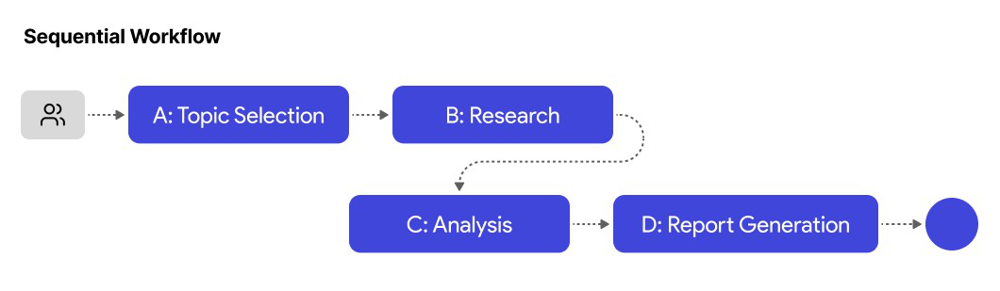
图 2.2：顺序工作流模式，展示从用户请求到主题选择、研究、分析再到报告生成的线性执行流。
每个步骤必须在下一步开始前完成，确保信息的有序处理。顺序工作流非常适合具有自然顺序依赖的任务，一个阶段的输出成为下一阶段的基本输入。它们提供可预测的执行时序和清晰的错误隔离——如果一个阶段失败，你确切知道故障发生在哪里。在第 6 章中，你将使用 workflow.chain(step_a, step_b, step_c) 实现此模式，按顺序连接步骤。
条件工作流是使用基于逻辑的边来确定下一节点的编排模式，基于条件实现分支执行路径和动态路由。一个经典示例是图 2.3 所示的代码开发：
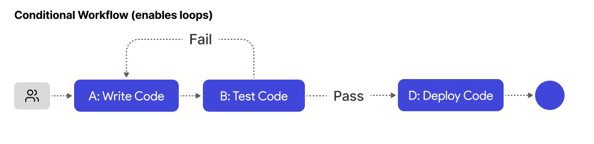
图 2.3：条件工作流模式，展示分支逻辑：代码测试可以要么通过（进入部署），要么失败（回到代码编写）。
这种模式自然扩展到监督者式工作流——条件工作流的一种变体，中央控制节点评估请求，并根据任务特征将任务路由到专门智能体。考虑一个将咨询路由到相应部门的客户服务系统：
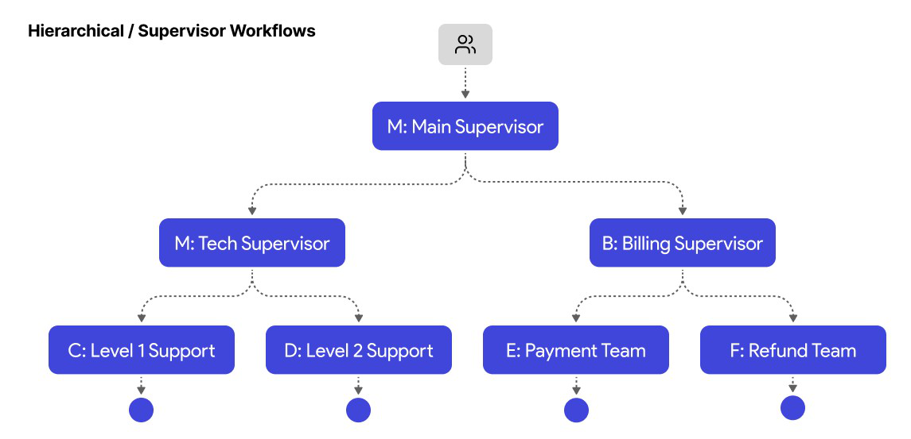
图 2.4：监督者工作流模式，展示一个控制节点根据咨询类型将任务路由到专门智能体。
监督者评估每个传入请求，并委托给合适的专门智能体，结果回流进行最终处理。在第 6 章中，条件路由使用带条件的 Edge 对象，基于验证结果实现分支：
workflow.add_edge(
"validate",
"process",
condition={
"type": "output_based",
"field": "is_valid",
"value": True
}
)
当每个节点本身包含一个工作流时，我们就得到了分层模式，可以构建多级支持台等复杂系统。主监督者委托给部门监督者，后者再管理其专门团队——创建多层编排以处理复杂的组织工作流。
并行工作流是使用有向无环图（Directed Acyclic Graph，DAG）实现独立任务并发执行的编排模式，具有拆分工作的扇出（fan-out）阶段和合并结果的扇入（fan-in）阶段。该模式有一个扇出阶段（拆分工作）和扇入阶段（合并结果）：
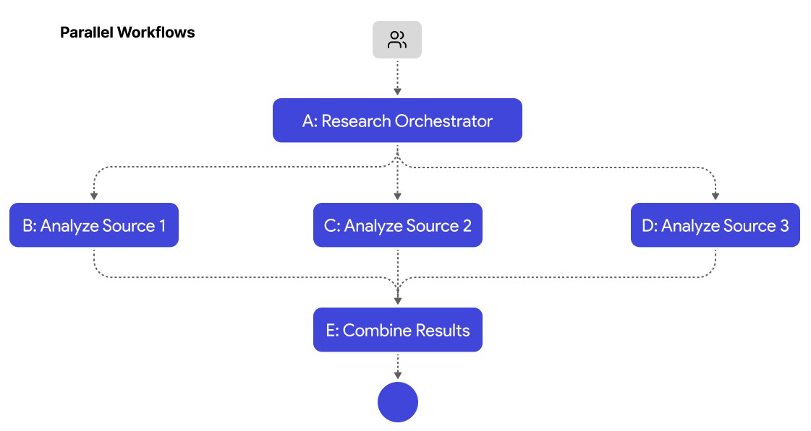
图 2.5：并行工作流模式，展示独立任务的并发执行及扇出和扇入阶段。
并行执行非常适合可以无副作用并行化的工作，例如处理多个数据源或运行独立的分析。当单个任务耗时且可以同时运行时，此模式提供显著的性能收益。然而，它需要在扇入阶段仔细编排，确保所有并行分支在继续之前完成。第 6 章中的实现使用带自动扇入检测的 DAG 执行——当多条边以"always"条件指向同一步骤时，运行器会等待所有依赖完成。
工作流模式的主要优势是可靠性——你确切知道将会发生什么以及何时发生。然而，这种可预测性以牺牲灵活性为代价。工作流模式难以应对需要动态适应的任务，或最优动作序列无法预先确定的任务。
从实现的角度看，存在构建阶段（图被构造）和运行阶段（图被执行）的概念。有经验的读者可能会观察到，这些工作流模式与数据处理和软件开发中广泛使用的著名流水线模式在根本上相似。除了融入智能计算（例如节点中的 LLM 或嵌套工作流）之外，核心概念基本保持不变。这种相似性实际上是有利的——它使我们能够利用软件工程、扩展和测试中的现有思想来构建可靠的多智能体系统。
然而，这种方法依赖于几个假设：问题的解决方案是已知的，即正确的任务分解已被识别；必要的资源（如时间和开发者专业能力）可用于创建适当的动作序列；任务本身是静态和可预测的，无需实时调整或变更。在许多动态的现实世界场景中，这些假设往往不成立——任务参数可能变化，解决方案需要固定预定义流水线无法提供的灵活性和适应性。此外，许多团队可能缺乏为广泛任务制定特定解决方案所需的资源。
当这些假设不成立时——任务动态、解决方案未知或资源有限——自主模式提供了另一种方法，将控制权从开发者转移到智能体自身。
自主模式基于任务状态和智能体推理实现运行时确定的执行。这里的一个关键思想是：控制流由 AI 模型驱动，因此在运行时动态确定。智能体不是遵循规定的路径，而是通过沟通和对当前任务上下文的共同理解进行编排。这些模式存在于一个控制谱系上，从结构化编排到完全涌现的行为。
智能体层层嵌套
一条重要的设计原则同时适用于工作流和自主模式：任何"智能体"本身在内部都可能是一个多智能体系统。这些复合智能体向更广泛的系统呈现为单一实体，而其内部对话和编排保持私有。
例如，在基于计划的编排中呈现为单一"编码智能体"（Coder agent）的实体，其内部可能使用顺序工作流（研究→编码→测试步骤）。类似地，交接模式中的"研究团队"（Research Team）智能体可能在内部通过 AI 驱动的对话协调专家。标记为"法律审查"（Legal Review）的工作流节点，其内部可能是一个并行工作流，同时将文档分发给多个审查者。
这种分层方法提供了清晰的边界，并减少了整体系统中的通信噪声。它还允许你在不同的抽象层使用不同的编排模式——为每一层的特定协调需求选择正确的模式，而不是在所有地方强制使用单一模式。
基于计划的编排模式是一种自主模式，使用单一的编排器智能体通过显式的计划创建、动态任务分配和集中式进度监控来管理整个任务执行。这个智能体充当"项目经理"，创建计划、分配工作、审查进度，并在专门智能体之间进行编排。
控制流特征：
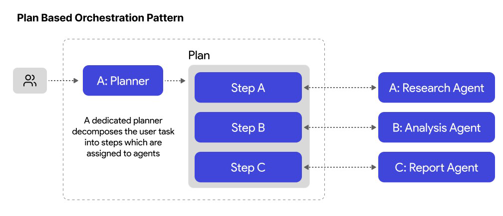
图 2.6：基于计划的编排模式，展示单个编排器管理跨多个智能体的任务执行。
考虑一个软件开发任务：编排器创建开发计划，将研究分配给智能体 A，监控输出，然后仅将智能体 A 研究中的相关上下文交给智能体 B 进行编码。这种选择性信息共享有助于防止上下文过载并保持专注。
编排模式擅长复杂任务分解和资源管理。它们可以在保持监督的同时高效地编排多样化的专家。然而，它们造成了单点故障，并可能在编排器的推理能力上成为瓶颈。
在第 7 章中，PlanBasedOrchestrator 使用 LLM 生成的计划和自动步骤评估实现此模式：
from picoagents.orchestration import PlanBasedOrchestrator
orchestrator = PlanBasedOrchestrator(
agents=[researcher, coder, reviewer],
termination=MaxMessageTermination(20),
model_client=model,
max_step_retries=2
)
result = await orchestrator.run_stream(
"Build a data analysis tool"
)
编排器自主创建执行计划（第 1 步：研究，第 2 步：编码，第 3 步：审查），在进行下一步之前评估每个步骤的成功，并根据失败分析用增强的指令重试失败的步骤。这种自动化的规划和恢复使该模式对瞬态故障具有韧性，同时保持监督。
用基于计划的编排应对复杂任务
2023 年 11 月，一群来自 HuggingFace 和 Meta 的研究人员发表了一篇论文，介绍了 GAIA 基准（Mialon et al. 2023）。其核心目的是引入需要推理、多模态处理、网页浏览和通用工具使用能力等能力的任务——这些任务对人类来说概念上简单，但对最先进的 AI 而言具有挑战性。当时，我有幸与同事 Adam Fourney 合作，他领导了一个项目，目标是用 AutoGen 设计一个在 GAIA 上表现出色的多智能体系统。经过多次迭代并在排行榜上夺得第一名之后，我们得出了一个设计，并发表在题为"Magentic-One：使用 LLM 构建多智能体系统完成复杂任务"的论文中（Fourney et al. 2024）。Magentic-One 使用一种多智能体架构，一个领导智能体 Orchestrator 通过显式的任务台账和进度台账（Task and Progress Ledgers）指挥另外四个智能体解决任务，在多个具有挑战性的智能体式基准上取得了与最先进水平统计上可比的表现。类似地，Anthropic 的 Research 系统（Hadfield et al. 2025）采用编排器-工作者模式，领导智能体协调流程，同时委托给并行运行的专门子智能体，领导智能体根据查询复杂度动态生成 1-10 个以上的子智能体，相较单智能体方法实现了 90.2% 的性能提升。
虽然编排模式保持集中式控制，交接模式则在保持结构化编排的同时，将决策分散到各个智能体。
交接模式是自主模式，使智能体能够以有限的局部知识运行，同时通过点对点委托实现协调行为。智能体基于对任务的理解和对其他可用智能体的了解，就何时以及向谁转移控制做出局部决策。
控制流特征：
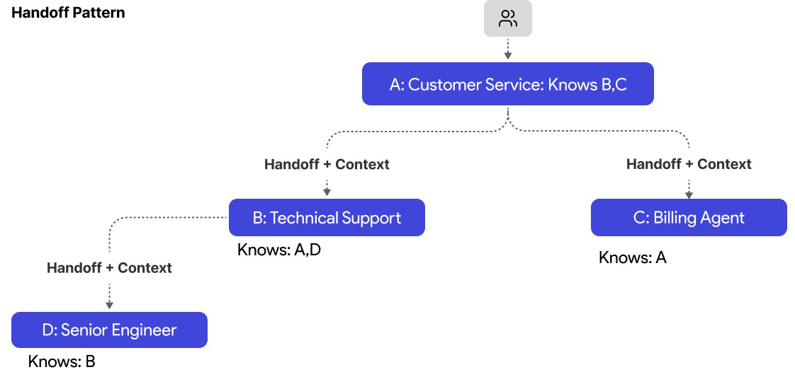
图 2.7：交接模式，展示智能体根据任务需求转移控制和上下文。
一个客户服务场景说明了这一模式：客户服务智能体可以根据问题类型交接给技术专家或计费智能体。技术专家又可以交接给高级工程师，或将控制权返回给客户服务。每个智能体基于其对情况的局部评估做出交接决策，并传递相关上下文。
交接模式提供可扩展性和专门化，同时避免中心瓶颈。它们对于交接标准可以清晰建立的明确领域特别有效。从实现角度看，这种模式相对简单——智能体可以表示为工具；例如，智能体 A 将智能体 B 和 D 视为可用工具，交接即成为工具调用。然而，它们需要仔细设计，以防止智能体卡住或无效循环。
沿着自主性谱系继续前进，对话驱动模式甚至移除了结构化交接的约束，允许编排通过共享对话自然涌现。
在对话驱动模式（也称为群聊模式）中，所有智能体参与共享对话，编排通过对话中的轮流发言涌现，而非显式计划或结构化交接。轮流发言是智能体依次轮流向共享对话贡献内容的机制。这种方法映照了人类团队协作——每个人都能看到讨论，并在适当时贡献。
为什么对话驱动模式天然有效
大多数现代 AI 模型都为"聊天补全"（chat completions）而训练——通过阅读消息历史并生成恰当的响应，在对话中轮流发言。这使得 LLM 固有地非常适合对话驱动的协调，因为它们可以自然地参与多轮对话，并根据对话上下文确定适当的贡献。
实现简单性：编排机制本质上是"所有智能体向同一个共享对话列表追加消息"——与复杂的工作流图相比，只需极少的编排逻辑。
自动改进：随着上游 AI 模型能力增强，系统性能自动提升，无需更改代码即可获得"免费升级"。
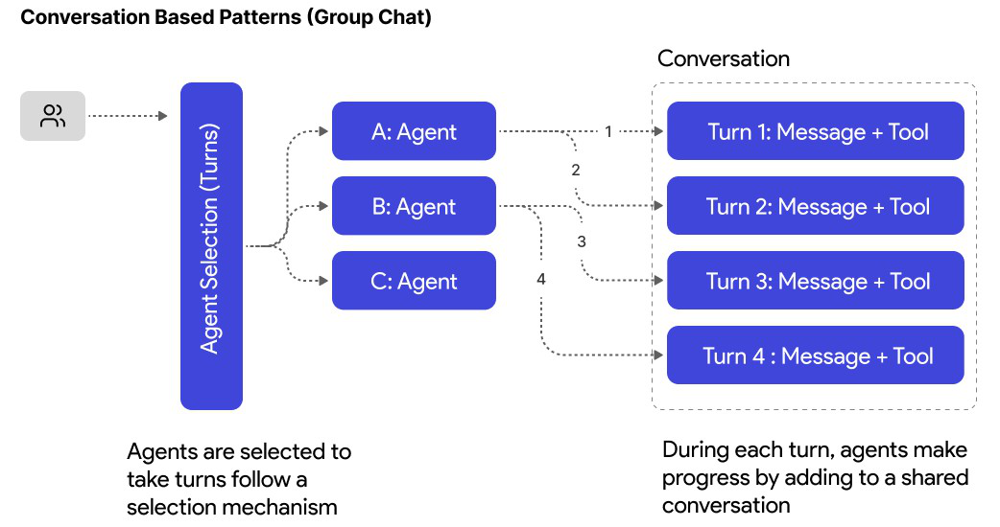
图 2.8：在对话驱动模式中，智能体主要通过向共享对话追加内容进行协作。
控制流特征：
在轮询对话模式中，智能体按固定的重复顺序轮流发言，直到满足某个终止条件。对话以循环方式流动，每个智能体在将发言权传给下一个智能体之前贡献自己的输入。
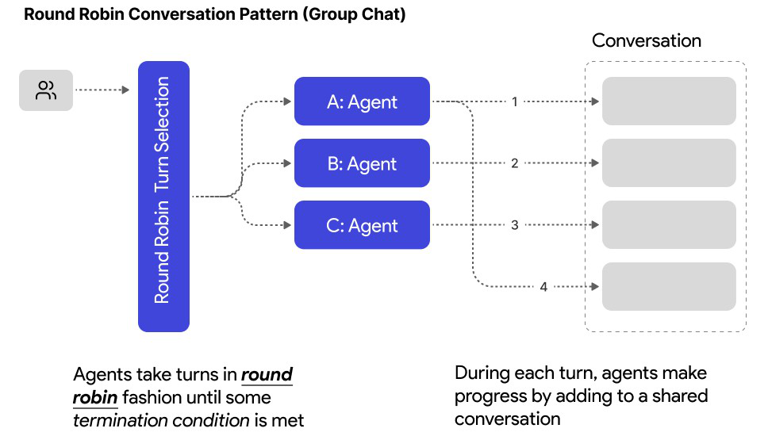
图 2.9：在轮询对话模式中，智能体按固定顺序轮流发言。
在第 7 章中，RoundRobinOrchestrator 通过按顺序循环智能体实现此模式：
from picoagents.orchestration import RoundRobinOrchestrator
from picoagents.termination import MaxMessageTermination
orchestrator = RoundRobinOrchestrator(
agents=[researcher, writer, critic],
termination=MaxMessageTermination(12) # 12 条消息后停止
)
async for message in orchestrator.run_stream("Research solar energy trends"):
print(message) # researcher -> writer -> critic -> researcher -> ...
在 AI 驱动对话模式中，LLM 或其他 AI 模型基于当前对话上下文选择下一个发言的智能体。这种选择可以基于任务状态、智能体专长或其他动态因素。轮次选择机制本身可以是另一个 LLM 提示词，评估对话历史并决定下一个该谁发言。
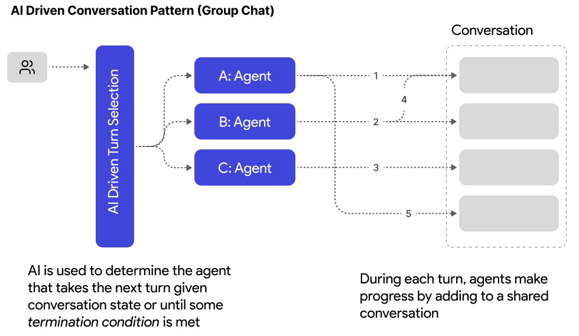
图 2.10：在 AI 驱动对话模式中，LLM 基于上下文动态选择下一个智能体。
例如，考虑一个研究任务：Research 智能体收集信息，Writer 撰写内容，Critic 提供反馈。在轮询选择中，每个智能体按预定顺序轮流。在 AI 驱动选择中，LLM 选择器基于当前对话状态确定下一个发言者："研究已完成，所以 Writer 应该起草内容"或"草稿需要改进，所以 Critic 应该提供反馈。"
在第 7 章中，AIOrchestrator 使用 LLM 智能地选择下一个发言者：
from picoagents.orchestration import AIOrchestrator
orchestrator = AIOrchestrator(
agents=[researcher, writer, critic],
model_client=model, # 用于智能体选择
termination=MaxMessageTermination(12)
)
async for message in orchestrator.run_stream("Write article on AI trends"):
print(message)
LLM 分析对话上下文和智能体能力，动态选择下一个发言者。例如，研究完成后，LLM 选择 writer 起草内容；草稿完成后，选择 critic 提供反馈。与固定轮流相比，这种自适应选择实现了更自然的协作。
对话驱动模式的优势在于其透明性和涌现式协作。所有智能体保持共享上下文，并可以自然地在他人的贡献之上构建。借助 AI 驱动的选择，复杂行为有机地涌现——例如，当代码执行结果出现在对话历史中后，Coder 智能体可能被再次选中，从而无需显式编程即可实现自然的重试循环、分支逻辑和就地探索。
与单智能体模式的联系
对话驱动模式通过轮流发言和共享对话历史，天然实现了 ReAct（Yao et al. 2022）和 Reflexion（Shinn et al. 2023）等著名的单智能体研究模式。
ReAct 创建了思考-行动-观察（Thought-Action-Observation）循环，其中推理轨迹指导行动计划。在回答复杂问题时，智能体在思考（"我需要搜索 X"）、行动（搜索维基百科）和观察结果以规划下一步之间交替。
Reflexion 将失败转化为作为情景记忆存储的语言反馈。当任务失败时，智能体生成解释错误和纠正措施的反思——例如"我错误地假设锅在炉灶上。下次我应该先确认它的位置"——然后在后续尝试中应用这些教训。
在对话驱动模式中，这些行为自然涌现：专门智能体（Thinker、Actor、Observer）通过轮流发言实现思考-行动-观察循环，而对话历史中的过往错误实现了 Reflexion 式的学习。对话本身成为情景记忆，同时支持推理循环和从失败中学习。
然而，对话驱动模式面临显著的局限。Token 用量随对话长度线性增长，使其对长时间任务代价高昂。上下文窗口可能溢出，导致智能体丢失重要的早期上下文。正如 Cognition 的研究（Yan 2025）所强调的，基于同一对话工作的智能体仍可能因对彼此推理的不完全理解而做出"相互冲突的决策"，尽管可见性是共享的，仍可能导致零散的结果。
可运行的代码：编排模式
探索所讨论模式的完整实现：
- 轮询与 AI 驱动：orchestration/ - 轮询轮流与智能体智能选择
- 基于计划：orchestration/plan-based.py - 带动态规划的集中式编排器
- 工作流模式：workflows/ - 顺序、条件和并行执行
在探索了从显式工作流控制到涌现式自主行为的完整协调模式谱系之后，我们现在可以比较它们的特征，并理解如何为特定用例选择正确的方法。
在探索了多智能体编排模式的完整谱系之后，我们现在可以从四个关键维度比较每种方法：控制流（执行如何在智能体之间移动）、自主性（系统能多灵活地探索开发者未显式编程的解决路径）、控制（开发者对系统行为拥有多少可预测的控制）、复杂性（所需的实现和运维复杂性）。
表 2.2 总结了各模式之间的权衡。注意控制和自主性如何反向变化：工作流以灵活性为代价提供可预测性，而对话驱动模式支持探索但行为确定性较低。
表 2.2：多智能体编排模式的比较分析，展示控制流机制、智能体自主性、开发者控制和实现复杂性之间的权衡。
| 模式 | 控制流 | 自主性 | 控制 | 复杂性 |
|---|---|---|---|---|
| 顺序工作流 | 线性序列（A->B->C） | 低 | 高 | 低 |
| 条件工作流 | 条件路由 | 低 | 高 | 低-中 |
| 并行工作流 | 并发执行 | 低 | 高 | 中 |
| 基于计划的编排 | 动态编排 | 中 | 高 | 中 |
| 交接 | 点对点委托 | 中 | 中 | 低 |
| 轮询对话 | 固定轮转 | 低 | 高 | 低 |
| AI 驱动对话 | 上下文驱动的选择 | 高 | 低 | 中 |
与其问"哪种模式最好？"，不如问"我的任务需要什么？"不同的任务有根本不同的需求。步骤已知的数据流水线需要可预测性；开放式研究任务需要探索。让模式匹配任务的内在特征。
任务特征：
系统需求：
实现考虑：
大多数生产系统受益于混合方法，基于任务分解组合多种模式：
关键原则是模式与任务的对齐：让编排模式匹配每个任务的内在特征和系统的可靠性需求，而不是将所有编排强行套入单一模式类型。
除编排模式之外，成功的多智能体系统还需要显式的任务管理策略，以确保富有成效的结果并防止失控执行。这些横切关注点同时适用于工作流和自主模式。
任务管理模式解决了超越编排分类法的关键运维问题。虽然工作流模式通常将一些任务管理逻辑嵌入其图结构中，但自主模式特别受益于显式的任务管理策略。
有效的终止策略防止无限循环和过度的资源消耗：
例如，一项研究任务可能在 10 次迭代后终止，或者当 LLM 判定质量阈值已达到时终止，以先到者为准。
复杂或敏感的任务往往需要人类监督。两种主要方法可实现有效的人类委托：
基于 LLM 的委托依赖智能体推理来确定升级需求。智能体评估风险、复杂性和置信度等因素，决定何时需要人类输入。例如："这条客户投诉提到了潜在的法律诉讼，可能影响我们的声誉——升级给人类审查。"
基于规则的委托使用代码中定义的显式触发器。这些提供基于硬阈值的确定性、可审计的升级：超过 10,000 美元的金融交易、涉及医疗或法律领域的请求，或连续三次任务完成失败。
本章涵盖：
构建多智能体系统（或任何软件工具）的最终目标，是为用户解决特定问题。该系统可以作为组件被开发者利用（如软件开发者通过 SDK 或 API 等）来创建更大的系统，也可以被终端用户直接用于完成特定任务。无论目标用户是谁，开发具有最佳用户体验的系统都至关重要——系统要有效，即帮助用户以最小的摩擦或努力完成任务；并且令人愉悦，使其引人入胜、使用起来令人开心。为了实现这一点，我们必须理解用户及其行为、动机、态度和目标，然后设计满足这些需求的系统。
多智能体系统代表了从界面设计到委托设计（delegation design）的根本转变——一种 UX 范式，用户向自主系统提供开放式任务指令，而不是直接操纵特定的界面控件。传统应用提供直接操纵——点击"发送邮件"执行一个可预测的、程序员定义的例程。多智能体系统的运作方式不同，通过三个关键属性：自主性（AI 模型从庞大的动作空间中决定动作）、后果（基于 AI 推理的真实世界影响）和持续时间（跨系统的复杂、长时间运行的协调）。
用户不是控制特定动作，而是将开放式任务委托给可以执行任何可用能力组合的自主系统。一个可以访问邮件、日历和预订平台的旅行预订系统，基于 AI 对单条自然语言指令的解读，可能采取数百种不同的动作序列。
虽然 UX 原则适用于所有软件，但多智能体系统带来了独特的挑战，放大了这些原则的重要性。与以预定义行为响应用户输入的传统应用不同，多智能体系统包含自主智能体，它们可以基于 AI 决策采取具有现实后果的行动。当多个智能体协调时，单个 AI 决策可以在整个系统中级联，产生用户必须理解和控制的复合效应。这种从预定义例程到 AI 决定动作序列的转变，需要新的 UX 方法来传达智能体能力、行动成本、协调模式和干预点。
在本章中，我们将探讨多智能体系统的用户体验（UX），重点关注这种委托范式如何为终端用户和开发者创造新的需求和期望。我们将讨论这种从直接操纵到任务委托的根本转变如何创造独特的挑战和机遇。通过理解用户现在必须信任 AI 推理而非程序员逻辑，我们可以推导出帮助用户有效委托任务、同时保持适当控制和理解的设计原则。
终端用户看到的是多个智能体还是单个系统？
终端用户通常将多智能体系统感知为单一实体，发出高层命令，由底层智能体协作执行。这种抽象提供了无缝体验，但建立信任需要对系统内部运作的可选可见性——尤其是对于具有重大后果的非平凡决策。可观测性原则（3.4 节）回应了这种透明度需求。
要理解多智能体系统独特的 UX 挑战，考察用户界面和软件开发实践如何演进会很有帮助。这一演进直接塑造了我们将在本章后面探讨的设计原则。
用户界面的演进从基于文本的命令行发展到今天的智能多模态系统，每一次转变都在降低认知负荷的同时引入新的交互可能性。这一递进最终在多智能体界面达到顶峰——它可以解读自然语言、图像和语音输入，同时自主执行复杂动作。
传统界面要求用户学习特定命令（CLI）或视觉隐喻（GUI），将可访问性限制在具备专业知识的人群。沉浸式界面（AR/VR）引入了空间交互，但仍受预定义能力的约束。
以电子邮件作为这一演进的说明性示例。命令行邮件需要记忆语法（mail -s "Subject" recipient@example.com），GUI 客户端引入了带拖放组织的可视化撰写，而今天的智能界面支持自然语言请求："给团队发一封关于周一会议的邮件，并附上议程。"系统可以解读意图、定位相关文件并生成适当内容——但用户必须理解何时可以信任这些能力。
智能多模态、多智能体界面代表了最新的进展，提供几个关键能力：
然而，这种灵活性引入了新的挑战。与具有清晰定义的按钮和能力的 GUI 不同，智能界面可能处理范围庞大的任务，可靠性各不相同。这造成了能力发现问题——用户难以理解系统能有效做什么，以及它可能在哪些地方失败。
这一演进强调了朝着更自然、更自适应交互的持续驱动，同时凸显了对系统能力和局限性进行透明沟通的需求。
是什么让智能界面与众不同
生成式 AI 引入了三项变革性能力，使现代界面区别于其前身：
- 更易访问的界面：智能多模态界面支持跨数百种语言的自然语言、语音、图像和视频交互，使系统能够触达更广泛的受众。这种包容性让用户以符合其偏好和能力的方式使用系统，降低了准入门槛。
- 对模糊输入的支持：生成式模型擅长解读模糊或容易出错的输入，处理不精确的命令和自然语言的细微差别，同时仍能提供连贯的响应。然而，这种灵活性引入了潜在误解或看似合理但错误的信息等风险，需要健壮的验证机制。
- 动态内容生成：生成式 AI 基于用户输入和任务需求动态创建和调整内容，实现更个性化、上下文更相关的交互。这减少了对大量预先设计的需求，在提供独特自适应用户体验的同时加速创新。
软件工程学科正在经历从显式的基于规则的编程到智能、自适应系统的转变（见图 3.1）。这一演进直接影响我们构建面向用户的应用的方式。
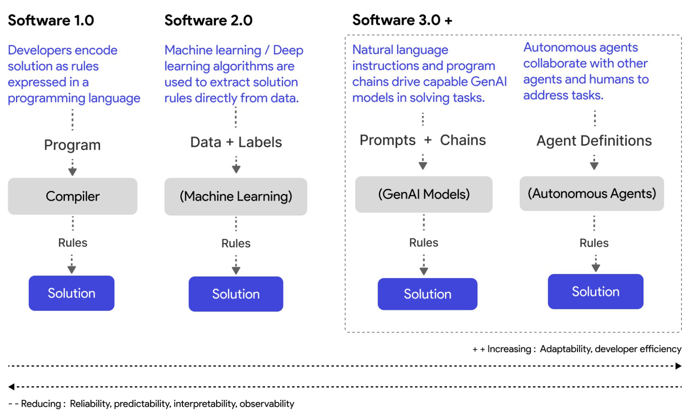
图 3.1：软件工程学科正从传统软件开发（Software 1.0）范式——开发者编写显式代码——演进到更动态、自适应和智能的系统（Software 3.0），其中自主智能体可以推理、沟通和行动以解决复杂任务。
Software 1.0 涉及编写具有固定规则和逻辑的显式代码。例如，垃圾邮件过滤器使用预定义的关键词词典来分类邮件。
Software 2.0 引入了从数据中学习模式的机器学习系统。同样的垃圾邮件过滤器现在在大型数据集上训练以识别垃圾邮件模式，通过数据驱动的分类而非手工编码的规则提高准确率。
Software 3.0+ 采用生成式模型和自主智能体，它们可以自适应地推理、沟通和行动。一个邮件系统现在可能包含这样的智能体：自动起草回复、检查日历可用性、提议会议时间，甚至安排约会——同时随着时间推移适应用户偏好和写作风格。
关键洞见是每种范式都不会完全取代前一种。邮件发送协议仍由 Software 1.0 逻辑高效处理，受益于模式识别的功能（垃圾邮件过滤）利用 Software 2.0 方法，而复杂、自适应的交互利用 Software 3.0+ 能力。开发者的挑战从编写显式代码转变为定义智能体能力并编排能够处理庞大任务阵列的智能系统。
多智能体系统继承了单个 AI 模型的可靠性悖论，同时引入了可能放大不可预测性的新协调挑战。像 GPT-4 这样的模型可以从复杂的 JSON 模式中提取实体，编写复杂的 React 组件，却在"哪个数字更大，9.11 还是 9.9？"这样的简单比较上失败。当多个这样的模型通过智能体协调时，这些个体的不一致以意想不到的方式复合。
当智能体在复杂任务上协同工作时，即使单个智能体在隔离状态下表现良好，协调故障仍可能发生。智能体交互的动态特性使得预测哪些任务会成功、哪些会失败变得困难，造成基于用户不可见因素而变化的不可靠用户体验。
这创造了一个"锯齿状前沿"（jagged frontier）（Dell'Acqua et al. 2023）——一种 AI 能力高度不均衡的现象，一些看似困难的任务执行良好，而看似简单的任务却意外失败。锯齿状的本质意味着在同一个工作流中，一些任务可能落在 AI 擅长的前沿一侧，而其他看似难度相似的任务可能落在 AI 挣扎的一侧。在多智能体系统中，这种不可靠性不仅因个体模型限制而被放大，还因协调故障而被放大。看似复杂度相当的任务，其成败取决于智能体协调如何处理隐式假设和上下文共享。
UX 影响：对用户而言，这意味着多智能体系统可能在某些场景中表现出复杂的行为，而在其他看似相似的场景中灾难性地失败。与传统软件可预测的失败模式不同，智能体协调的动态特性使用户难以对系统能力和局限性建立准确的心智模型。
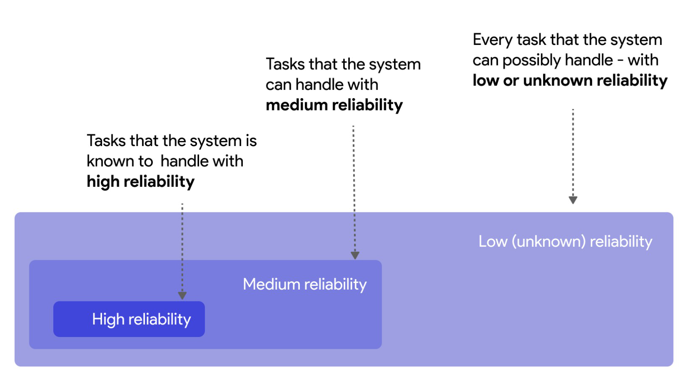
图 3.2：可靠性悖论：多智能体系统可以处理广泛的任务，但协调挑战在个体模型局限之外创造了额外的可靠性差异。UX 设计必须传达这种不确定性，同时通过透明度建立信任。
多智能体系统创造了单智能体或传统软件所不存在的独特用户体验挑战。从终端用户和开发者两个视角理解这些挑战，对于设计有效界面至关重要。这两种画像代表了两种截然不同的用户类型，对透明度和控制有着根本不同的需求。
考虑 Jane 预订一次涉及航班、酒店和租车的复杂商务旅行。在多智能体系统中，她的请求可能由专门智能体处理：
Jane 的核心需求：
Jane 代表需要功能性透明度的终端用户——理解结果并拥有简单控制，而不会被技术复杂性淹没。
Mike 正在构建旅行系统，面临多智能体特有的技术挑战：
Mike 的主要挑战涉及确保智能体可预测、安全，并与 Jane 等终端用户的需求和行为紧密对齐。
这些画像说明了同一个多智能体系统必须服务根本不同的透明度和控制需求。Jane 需要关于结果的清晰、简单的沟通，而 Mike 需要对内部运作的详细技术洞察。
前面概述的协调挑战和可靠性不可预测性需要特定的 UX 设计方法。以下原则通过针对终端用户（如 Jane）和开发者（如 Mike）量身定制的可操作策略，回应这些多智能体挑战。
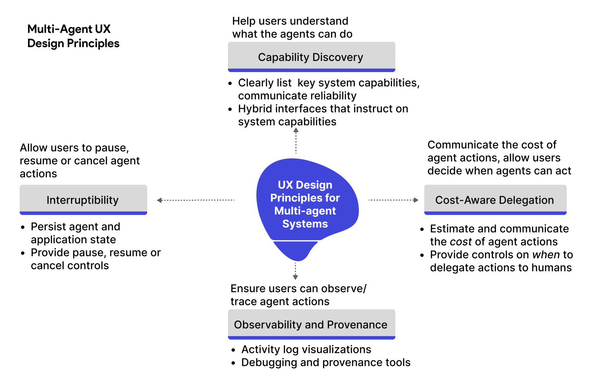
图 3.3：多智能体应用带来特定挑战，需要独特的设计考量以确保无缝有效的用户体验。这些包括为能力发现设计（理解智能体能做什么）、成本感知的行动委托（传达智能体行动的成本并允许委托机制）、可观测性（确保用户能观察智能体行动）和可中断性（允许用户干预智能体行动）。
每个原则都为 Jane（需要功能性透明度的终端用户）和 Mike（需要架构透明度的开发者）提供策略，确保系统有效服务不同的透明度和控制需求。
在本节中，我们使用 PicoAgents WebUI——随 PicoAgents 框架附带的基于 Web 的界面——来说明这些原则。WebUI 展示了这些 UX 原则如何通过具体的界面模式在实践中实现。WebUI 的实现细节和源代码可在 PicoAgents 仓库（picoagents/src/picoagents/webui/）中获得，第 8 章提供了在一个最小智能体 Web 应用中从零实现这些原则的分步指南。
帮助用户理解智能体能做什么
智能体拥有自主性，意味着它们可以执行许多不同的动作和协调模式。实际上，每个智能体都有特定的配置——系统提示词、可用工具和内部逻辑——使其在特定类型的任务上比其他任务更可靠。然而，用户并不知道这一点。这造成了能力发现问题：用户不知道哪些任务会顺利、哪些可能失败，当智能体在不合适的任务上表现不佳时，会导致挫败和不信任。
这一原则主张 UX 主动引导用户走向高可靠性任务示例，或根据用户上下文和系统能力建议相关的高可靠性任务。许多成功的工具通过提供示例任务作为用户可以选择的预设来回应这一点。
实现策略：
终端用户策略：
开发者/高级用户策略：
示例场景
旅行预订系统提供能力预设，如"预订国内商务差旅""规划带团体价格的会议旅行"和"安排多城市销售拜访"。这些预设引导用户走向系统可靠处理的任务，而更复杂的请求如"规划带定制冒险活动的蜜月"被标记为需要旅行智能体咨询。界面清晰传达："我们的系统擅长商务旅行和标准度假预订。对于有特殊要求的复杂国际行程，请考虑使用我们的辅助预订选项。"
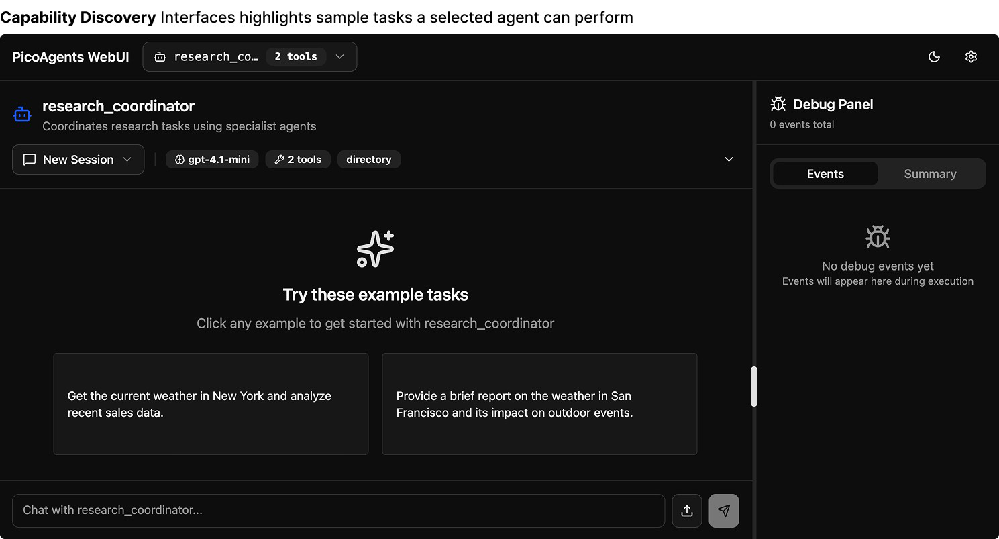
图 3.4：PicoAgents WebUI 通过显示用户可以点击开始的预设示例任务来实现能力发现。
传达智能体行动的成本，并允许委托机制
多智能体系统的一个宝贵特性是能够将任务和行动委托给智能体，让用户把重复或复杂的任务交给系统。然而，行动具有不同级别的后果（consequence）——如果行动包含错误或不恰当，其潜在影响或危害。成本感知的行动委托是一种 UX 原则，用于传达行动后果，并提供用户控制机制来处理不同成本级别的行动。例如，摘要一封邮件成本低（错误时的后果最小），取消一个定期团队会议成本中等（损失时间、改变参与者计划），而将机密文档附加到邮件并发送给外部方成本高（潜在的数据泄露）。
构建能够推断或量化这些成本、将其传达给用户并提供如何处理此类行动设置的机制，非常重要。例如，用户应该能够指定如何处理中成本和高成本行动（例如，执行前请求批准、直接执行不询问，或永不执行）。
实现策略：
终端用户策略：
开发者/高级用户策略：
示例场景
Jane 对旅行智能体说："预订我下周去伦敦会议的行程，并处理任何日程冲突。"系统搜索航班（低成本，自动执行），并识别出需要移动一个与旅行日期冲突的客户会议（中成本）。系统没有继续执行，而是向 Jane 展示："我找到了前往伦敦的可用航班[预览选项]。我还需要重新安排你周二与 ABC Corp 的客户会议，这需要通知 3 位与会者，并可能影响他们的日程。我应该继续重新安排会议吗？" Jane 可以批准特定行动，或为未来类似场景调整她的委托设置。
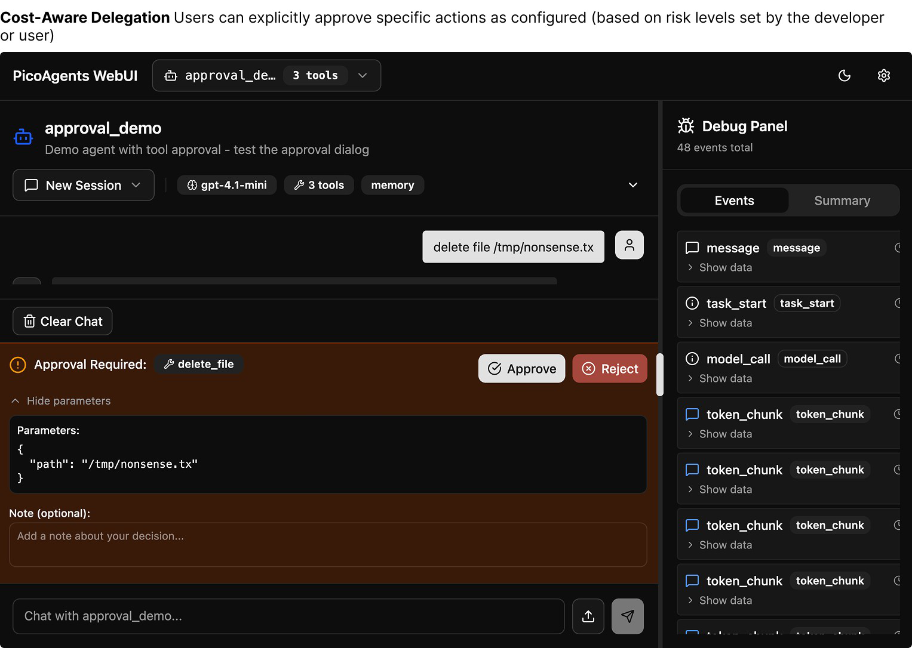
图 3.5：在 picoagents 中，函数可以配置为需要显式批准，WebUI 提供界面来批准函数执行请求。
确保用户可以观察智能体做了什么（行动）以及为什么
可观测性和溯源是确保用户可以观察智能体行动、追溯决策背后的推理，并理解影响结果的数据来源的 UX 原则。自主智能体可以探索非确定性的、仅在运行时才可知的轨迹。相同输入的每次运行都可能导致显著不同的轨迹。这使得终端用户观察这些轨迹变得重要，既可以建立智能体在做正确事情的信任，也可以更多了解其能力和局限，改进他们的任务表述方法。
实现策略：
终端用户策略：
开发者/高级用户策略：
示例场景
好的做法：Jane 请求"预订去伦敦的行程和酒店。"界面显示：旅行智能体找到航班，日历智能体检测到与 Jane 周二会议的冲突，报销智能体注意到酒店超出政策限额。Jane 看到协调流：日历智能体将会议详情传递给旅行智能体，后者调整日期，然后交给报销智能体批准。当智能体在酒店选择上意见分歧时，Jane 看到两个带推理的建议。
坏的做法：Jane 的行程预订失败，显示"错误：预订不成功。"她无法分辨是旅行智能体找不到航班、日历智能体错误地屏蔽了日期，还是智能体之间存在协调失败。对哪个智能体贡献了什么、系统为何失败毫无可见性。
允许用户暂停、恢复或取消智能体行动
可中断性是一种 UX 原则，确保用户可以在执行过程中的任何时刻中断、暂停、恢复或取消智能体行动。自主多智能体系统可以长时间运行、进行多次工具调用，并采取具有现实资源影响的行动。在某些情况下，特别是在人在回路（human-in-the-loop）的设置中，用户可能观察到昂贵或有问题的操作轨迹，需要暂停系统以提供反馈、纠正方向或完全取消。
这一原则主张设计这样的系统：用户可以随时中断智能体执行、暂停长时间运行的任务，并从中断处恢复而不丢失进度或系统状态。多智能体系统最适用于需要跨多个步骤规划、可能需要相当长时间才能完成的复杂任务。
实现策略：
终端用户策略：
开发者/高级用户策略：
示例场景
好的做法：在旅行规划期间，Jane 看到旅行和日历智能体在日期上意见分歧。她中断对话，提供她的实际可用时间，并观察智能体更新共享上下文。正在等待的报销智能体自动用纠正后的信息恢复。
坏的做法：Jane 需要纠正日历智能体的假设，但只能停止整个工作流。当她重启时，智能体丢失了之前的协调上下文，必须从头开始。
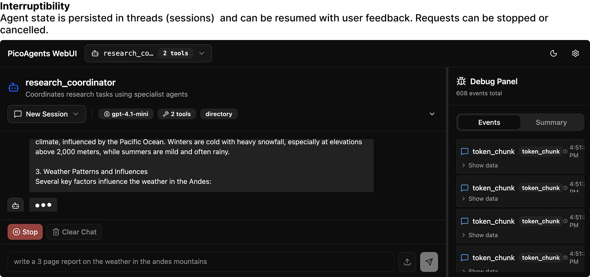
图 3.6：在 PicoAgents WebUI 中，用户可以使用左下角的"Stop"按钮在流中停止智能体执行。系统在会话中维护对话状态，允许用户暂停工作、审查进度，并在不丢失上下文的情况下稍后恢复。右侧的调试面板显示实时可观测的事件流，帮助用户在决定中断之前理解正在发生的事情。
多智能体应用中的任务场景可以归类为交互式或离线式，取决于任务的性质和预期的人类交互水平（如图 3.7 所示）。在交互式场景中，用户实时积极参与智能体，审查进度并按需提供输入。相比之下，离线场景涉及智能体自主工作以完成任务，无需用户逐轮的直接输入。每种方法都有其优点和缺点，选择取决于任务复杂性、用户偏好和期望的自主性水平等因素。
图 3.7：多智能体应用可以根据所需的用户交互水平归类为交互式或离线式。交互式场景涉及实时用户参与，而离线场景涉及自主的智能体任务执行。
例如，在旅行预订这样的交互式用例中，用户用自然语言表达偏好，观察智能体的进展，提供反馈（显式请求的或临时的），并验证任务状态。因此，相关界面必须允许用户定义任务、审查智能体的行动、假设或相关数据、提供输入、在出错时中断或干预，并确认智能体的行动。所有这些都必须相对快速地发生（低延迟）以防止用户挫败，利用一个传达智能体状态的交互式 UI（例如，智能体行动时间线的交互式视图、审查先前行动或显示当前活动）。
另一方面，离线任务可能涉及后台任务，如从非结构化邮件中提取结构化数据或将数据输入界面。例如，多智能体工作流可以从非结构化邮件中提取结构化数据，登录 CRM 系统并更新客户记录。在这种情况下，用户可能不参与任务执行，但可能会收到任务完成或任何需要其注意的异常的通知。在这种设置中，低延迟不那么关键；然而，可以实施自动审查和验证智能体行动及最终解决方案的工具，以改进整体解决方案。
本章涵盖：
在第 1 章中，我们介绍了智能体的概念——其核心组件包括用于推理的生成式 AI 模型、用于行动的工具，以及用于适应任务的记忆。在本章中，我们将探索如何从零实现这些组件。到本章结束时，你将逐步构建出一个智能体：从能够回答"法国的首都是哪里？"这样的简单任务，到能够"行动"——例如"绘制微软过去 5 年的股价图"——再到能够做出有趣行为的智能体，例如拒绝响应恶意请求（如"将本地机器上的所有比特币转移到指定地址"）。
为了支撑本书介绍的核心概念，我们将从零构建一个 Python 库，命名为 picoagents。我们将从开发一个基础智能体类抽象开始，逐步推进到促进多个智能体之间协调的抽象。
一个有效的智能体接口应该极简而完整——只暴露足够的配置以保持强大，而不会让用户淹没在选项中。我们将使用的模式——Agent(model=.., tools=[..], memory=..)——恰好提供这三项核心能力：通过模型推理、通过工具行动、通过记忆适应。这种极简接口已成为智能体框架中的常见抽象，因为它捕捉了核心需求，同时保持易于上手。
在进入实现细节之前，先看看我们最终要构建的开发者体验（代码清单 4.1）。别忘了将 "your_api_key" 替换为你的实际 OpenAI API 密钥。
代码清单 4.1：完整的 picoagents Agent 示例
from picoagents import Agent, OpenAIChatCompletionClient
def get_weather(location: str) -> str:
"""Get current weather for a given location."""
return f"The weather in {location} is sunny, 75°F"
# Create an agent - that's it!
agent = Agent(
name="assistant",
description="You are a helpful assistant.",
instructions="You are helpful. Use tools when appropriate.",
model_client=OpenAIChatCompletionClient(
model="gpt-4.1-mini",
api_key="your_api_key"
),
tools=[get_weather] # Functions become tools automatically!
)
# Use the agent
async for event in agent.run_stream("What's the weather in Paris?"):
print(event) # Stream events
输出看起来会是这样：
[user] 16:55:44 | What's the weather in Paris?
[assistant] 16:55:45 | tool_call: get_weather(location=Paris)
[assistant] 16:55:45 | tool_response: ✓ The weather in Paris is sunny, 75°F
[assistant] 16:55:45 | The weather in Paris is sunny, 75°F
注意智能体如何自动地：
可运行的代码：基础智能体
在 examples/agents/ 中探索可运行示例，包括 basic-agent.py、memory.py 和 middleware.py，演示工具、记忆和错误处理。
现在让我们一步步构建这个 Agent，从让智能体可靠且可扩展的基础组件开始。
在逐步构建我们的智能体框架时，我们将做出关键的架构决策，这些决策决定你的智能体开发、调试和扩展的难易程度。这些不是抽象原则，而是解决你在构建智能体应用时会遇到的实际问题的实用选择。
异步优先架构：智能体任务涉及多个慢速操作：LLM API 调用（500ms-5s）、工具执行（时间不一）和 I/O 操作。没有异步，你的智能体在每次调用期间都会空闲，使多智能体系统慢得令人痛苦。一个简单的 3 智能体工作流同步执行可能需要 30 秒，但通过适当的并发只需 10 秒。我们在整个过程中采用 async/await，因为将异步改造成同步代码比反过来要困难得多。
基于事件的流式传输：智能体任务完成多个步骤可能需要 30 秒以上。没有流式传输，用户只能盯着空白屏幕，怀疑是否有任何进展。流式传输提供实时进度更新、支持响应式用户界面，并提供调试多步智能体行为所需的可观测性数据。当智能体卡在工具调用循环中时，流式事件会准确显示问题发生的位置。
组件序列化：你需要保存智能体配置、在团队成员之间共享，并可能为非技术用户构建可视化编辑器。当每个组件（智能体、工具、记忆）都能将自身序列化为 JSON 时，你可以对完整的智能体设置进行版本控制、构建配置 UI，并从保存的会话中恢复智能体配置和状态。
优雅取消：用户会启动长时间运行的智能体任务，然后需要取消它们——无论是由于提示词错误、无限循环，还是为了提供反馈。
带核心行为的抽象基类：当你想支持多个 LLM 提供商、不同的工具类型或各种记忆后端时，抽象接口可以防止供应商锁定，并支持使用 Mock 实现进行测试。BaseTool 接口让你从简单函数开始，之后无需更改智能体代码即可添加 REST API 工具、数据库工具或 MCP 工具等新兴标准。
任何智能体框架的核心都是智能体执行循环（agent execution loop）。理解这一循环至关重要，因为它决定了智能体如何思考、行动和学习。让我们从识别基础组件开始。
每次智能体交互都遵循相同的基本模式：
代码清单 4.2：简化的智能体执行循环伪代码
# Simplified agent loop pseudocode
async def agent_execution_loop(task):
context = prepare_context(task, instructions, memory, history)
while not done:
response = await model_client.create(context)
if response.has_tool_calls:
for tool_call in response.tool_calls:
result = await execute_tool(tool_call)
context.append(result)
else:
done = True
update_memory(context) # optional
return response
如代码清单 4.2 所示，智能体在一次"运行"（run）中采取多个步骤（模型调用 -> 工具调用 -> 模型调用），每个步骤可能花费任意长的时间。从这个角度看，智能体能够提供或流式输出进度更新非常重要，这在有人类等待响应的场景中尤其有益。流式传输还提供了调试智能体行为所需的可见性。
流式传输允许智能体在执行期间以事件形式产出进度更新，提供对正在发生的事情的实时可见性。这对于构建响应式 UI 和实时调试智能体行为至关重要。
让我们开始实现智能体架构。我们的智能体需要处理对话中不同类型的消息——系统指令（SystemMessage）、用户输入（UserMessage）、助手响应（AssistantMessage）和工具执行结果（ToolMessage）。我们将使用结构化的消息类型（用 Pydantic 构建以保证类型安全）来清晰表示这些通信。
现在定义基础智能体接口：
代码清单 4.3：BaseAgent 类定义与初始化
class BaseAgent(ABC):
"""Abstract base class defining the core agent interface."""
def __init__(
self,
name: str,
instructions: str,
model_client: 'BaseChatCompletionClient',
tools: Optional[List] = None,
memory: Optional['BaseMemory'] = None,
context: Optional['AgentContext'] = None,
middlewares: Optional[List] = None,
max_iterations: int = 10
):
self.name = name
self.instructions = instructions
self.model_client = model_client
# Process optional components with defaults
self.tools = self._process_tools(tools or [])
self.memory = memory
self.context = context or AgentContext()
self.middleware_chain = MiddlewareChain(
middleware or []
)
...
BaseAgent 的初始化（代码清单 4.3 所示）建立了核心智能体组件：用于推理的模型客户端、用于行动的可选工具、用于学习的可选记忆，以及对上下文和中间件注入的支持。灵活的初始化支持从简单聊天机器人到复杂多工具系统的各种智能体。
智能体结构定义之后，我们需要指定执行契约。每个智能体必须实现两个定义任务处理方式的核心方法：
代码清单 4.4：BaseAgent 的执行抽象方法
class BaseAgent(ABC):
# ... initialization code from above ...
@abstractmethod
async def run(
self,
task: Union[str, UserMessage, List[Message]]
) -> 'AgentResponse':
"""Execute agent and return final response."""
pass
@abstractmethod
def run_stream(
self,
task: Union[str, UserMessage, List[Message]]
) -> AsyncGenerator[Union[Message, 'AgentEvent'], None]:
"""Execute agent with streaming output."""
pass
这些抽象方法（代码清单 4.4）强制每个智能体实现必须支持收集式（run）和流式（run_stream）两种执行模式。流式优先的设计确保我们能够构建响应式 UI，同时为不同的应用需求提供灵活性。
构造函数包含用于高级场景的 context 和 middleware 参数。大多数应用使用默认值，但显式注入支持特定用例：
智能体任务可能运行几分钟甚至几小时——研究主题、调用 API、处理数据。用户需要能在任务中途停止这些操作：他们意识到提示词写错了、智能体陷入循环，或者想在继续之前提供反馈。
我们通过 CancellationToken 实现任务取消——一种线程安全机制，通过异步操作传播停止信号。任务取消是中断并干净地终止正在运行的智能体操作的能力，停止 LLM 调用、工具执行和所有下游处理。智能体在执行期间的关键点检查此令牌：
代码清单 4.5：使用取消令牌停止智能体执行
from picoagents import Agent, CancellationToken
# Create a cancellation token
token = CancellationToken()
# Pass it to the agent
async def run_with_cancellation():
async for event in agent.run_stream(
"Long running task",
cancellation_token=token
):
print(event)
# From another thread or async task - stop the agent
token.cancel() # Stops execution immediately
当调用 cancel() 时（代码清单 4.5），令牌在智能体执行循环中传播——在流中停止 LLM 调用、阻止新的工具执行，并抛出 asyncio.CancelledError 以干净退出。智能体实现在每次模型调用前、Token 流式传输期间以及工具执行前检查 token.is_cancelled()。
同样的模式在整个框架中通用：智能体、编排器和工作流都接受 cancellation_token 参数。在第 8 章中，我们将把用户界面的"停止"按钮连接到取消令牌，让用户控制长时间运行的操作。
模型客户端是智能体与生成式 AI 模型之间的接口。这里设计良好的抽象可以支持多个 LLM 提供商，同时保持智能体代码干净。在本节中，我们将介绍一个通用的 BaseChatCompletionClient，它定义了两个关键方法——create 用于从 LLM 模型获取生成结果，create_stream 用于获取流式响应。
为什么叫 "BaseChatCompletionClient"？
我们使用"ChatCompletion"一词，因为现代 LLM 是为具有交替角色（system、user、assistant）的对话交互而训练的。这种多轮对话格式——每条消息都有特定角色，模型以"assistant"角色生成响应——与旧的补全模型（只是继续文本）根本不同。"chat completion"术语反映了这种基于角色的对话训练范式，它实现了更结构化、更可控的交互。
代码清单 4.6：BaseChatCompletionClient 抽象接口
from abc import ABC, abstractmethod
from typing import List, Optional, Dict, Any
class BaseChatCompletionClient(ABC):
"""Abstract interface for LLM providers."""
@abstractmethod
async def create(
self,
messages: List[Message],
tools: Optional[List[Dict[str, Any]]] = None,
**kwargs
) -> 'ChatCompletionResult':
"""Make a single LLM API call."""
pass
@abstractmethod
async def create_stream(
self,
messages: List[Message],
tools: Optional[List[Dict[str, Any]]] = None,
**kwargs
) -> AsyncGenerator['ChatCompletionChunk', None]:
"""Make a streaming LLM API call."""
pass
有了这个基类，我们就可以扩展它来支持特定的 LLM 实现。模式总是相同的：将我们的类型转换为提供商的格式，进行 API 调用，然后将响应转换回我们的统一格式。
下面是我们如何实现遵循三步转换模式的 OpenAI 客户端。首先，创建一个初始化方法，用所需模型和 API 密钥设置 OpenAI 客户端。
代码清单 4.7：OpenAI 客户端初始化
class OpenAIChatCompletionClient(BaseChatCompletionClient):
def __init__(
self,
model: str = "gpt-4.1-mini",
api_key: Optional[str] = None
):
self.model = model
self.client = AsyncOpenAI(api_key=api_key)
初始化（代码清单 4.7）很直接——存储模型名称并创建 OpenAI 客户端。真正的工作发生在 create 方法中，它遵循我们的三步转换模式：
代码清单 4.8：带转换模式的 OpenAI 客户端 create 方法
async def create(
self,
messages: List[Message],
tools: Optional[List[Dict]] = None
) -> ChatCompletionResult:
# Step 1: Convert our types to provider's format
api_messages = self._convert_messages_to_api_format(messages)
# Step 2: Make the provider-specific API call
response = await self.client.chat.completions.create(
model=self.model,
messages=api_messages,
tools=tools
)
# Step 3: Convert response back to our unified format
return ChatCompletionResult(
message=AssistantMessage(
content=response.choices[0].message.content
),
usage=Usage(
tokens_input=response.usage.prompt_tokens,
tokens_output=response.usage.completion_tokens
),
model=response.model
)
请注意，同样的"转换输入 -> 调用 API -> 转换输出"模式可以应用于支持任何 LLM 提供商，同时保持我们的智能体代码不变。
现在看看智能体如何在其执行循环中使用模型客户端。智能体的工作是准备正确的上下文并处理响应：
代码清单 4.9：智能体为模型客户端准备上下文
class Agent(BaseAgent):
async def run_stream(
self,
task: Union[str, UserMessage, List[Message]]
) -> AsyncGenerator[Union[Message, AgentEvent], None]:
# Prepare context with instructions and history
llm_messages = [
SystemMessage(content=self.instructions),
*self.context.messages,
*task_messages
]
上下文准备将智能体的系统指令、任何先前的对话历史和当前任务组合在一起。这为模型提供了恰当响应所需的全部信息。上下文就绪后，智能体调用模型并处理响应：
代码清单 4.10：智能体调用模型客户端并处理响应
# Call model client
completion_result = await self.model_client.create(llm_messages)
assistant_message = completion_result.message
# Yield the response
yield assistant_message
# Update conversation context
self.context.add_message(assistant_message)
关键洞见是：智能体只需准备对话上下文（指令 + 历史 + 当前任务）并将其传递给模型客户端。模型客户端处理所有提供商特定的细节，返回标准化的 ChatCompletionResult——无论你使用 OpenAI、Anthropic 还是任何其他提供商，其工作方式都相同。
我们的智能体目前产生人类可读但程序难以可靠解析的文本响应。要构建能够采取精确行动的智能体，我们需要可预测的、机器可读的数据。这正是结构化输出变得至关重要的地方。
结构化输出将模型约束为以特定格式生成响应，例如匹配预定义模式的 JSON 对象。与其希望正确解析"The weather in Paris is sunny"，我们获得可靠的结构化数据（如下所示），我们的代码/应用可以立即使用。
{"location": "Paris", "condition": "sunny", "temperature": 75}
当智能体需要调用工具、在记忆中存储信息或与其他系统协调时，这种可靠性变得至关重要。让我们使用 Pydantic 模型实现结构化输出，以确保可预测的、机器可读的响应。
大多数现代 LLM 提供商都支持结构化输出。我们在 BaseChatCompletionClient 中的 create 方法实现可以包含一个可选的 output_format 参数（请参见 picoagents.llm._openai.py），它接受一个 Pydantic 模型。当提供时，客户端将确保模型的输出符合此模式。
首先，我们定义一个 Pydantic 模型来指定我们想要的结构：
代码清单 4.11：用于结构化输出的 Pydantic 模型
from pydantic import BaseModel, Field
from typing import List
class UserProfile(BaseModel):
id: int = Field(..., description="The user's unique identifier")
name: str = Field(..., description="The user's full name")
email: str = Field(..., description="The user's email address")
age: int = Field(..., description="The user's age")
skills: List[str] = Field(..., description="A list of the user's skills")
字段描述帮助模型理解要生成什么类型的数据。现在我们可以使用此模型来约束 LLM 的输出：
代码清单 4.12：使用模型客户端的结构化输出
client = OpenAIChatCompletionClient(model="gpt-4.1-mini")
messages = [
UserMessage(
content="Create a profile for a software engineer named Alice \
who is 28 years old and skilled in Python, JavaScript, \
and machine learning.",
source="user"
)
]
# Call model with structured output constraint
result = await client.create(
messages=messages,
output_format=UserProfile # This ensures structured output
)
output_format 参数告诉模型客户端将响应约束为匹配我们的 UserProfile 模式。结果作为正确类型的对象返回：
代码清单 4.13：使用结构化输出结果
# The result.structured_output will be a UserProfile object
if result.structured_output:
profile = cast(UserProfile, result.structured_output)
print(f"Name: {profile.name}")
print(f"Age: {profile.age}")
print(f"Skills: {', '.join(profile.skills)}")
# Output:
# Name: Alice
# Age: 28
# Skills: Python, JavaScript, Machine Learning
请注意，result.structured_output 保证是有效的 UserProfile 对象，消除了容易出错的文本解析。在本书中，我们将依赖结构化输出的概念来可靠地构建智能体行为。
结构化输出正常工作后，我们的智能体现在可以产生可靠的、可解析的数据，而不仅仅是文本。这一能力解锁了下一个层次：工具调用。当智能体需要查询天气、查询数据库或执行计算时，它可以生成我们的应用能够安全执行的结构化工具调用请求。
以下是结构化输出如何实现可靠的工具调用：
代码清单 4.14：从结构化输出到工具调用
# Structured output enables reliable tool requests
class ToolCall(BaseModel):
name: str
arguments: Dict[str, Any]
# Agent produces this structure reliably
result = await model_client.create(
messages=messages,
tools=available_tools,
# Tool schemas guide structured output
)
# Now we can safely execute the tool
if result.tool_calls:
for tool_call in result.tool_calls:
tool_result = await execute_tool(tool_call.name, tool_call.arguments)
没有结构化输出，我们就得解析"请调用 get_weather 函数并将 location 设为 Paris"——脆弱且容易出错。有了它，我们得到可以自信执行的可靠 JSON。
工具将智能体从文本生成器转变为行动实体。我们的工具系统利用刚刚构建的结构化输出基础，使 LLM 能够生成带有正确类型参数的精确函数调用。
工具调用（也称为函数调用）是结构化输出的一种应用，LLM 生成与预定义工具模式匹配的精确格式的 JSON 请求。LLM 不是生成"请调用天气函数"这样的自由格式文本，而是产生带有正确类型参数的结构化函数调用——例如，当用户问"旧金山未来 4 天的天气怎么样？"时，生成 get_weather(location="San Francisco", date_range="next 4 days")。
这种结构化格式消除了解析歧义，确保工具收到正确类型的参数，使智能体能够可靠地与外部系统交互。没有结构化输出，智能体将需要脆弱的文本解析，稍许格式变化就可能失效。
工具调用遵循多步骤的请求-响应模式：
此模式利用结构化输出使 LLM 能够与外部系统交互，并访问其训练数据之外的数据，将它们从文本生成器转变为可靠的行动智能体。
在接下来的小节中，我们将实现一个 BaseTool 类，它持有函数模式的通用表示，最终将用于表示工具。
智能体的能力与其可访问的工具直接相关。工具分为两个基本类别：
通用工具提供适用于许多任务的广泛能力。示例包括可以执行任何程序化解决方案的代码解释器，或可以与应用和网站交互的用户界面驱动器。这些工具实现最大的灵活性，但引入不确定性和安全问题，需要仔细的沙箱化（详见第 5 章的安全考虑）。
任务特定工具为特定领域提供专注的能力——发送邮件、查询特定数据库或生成图像。这些工具约束智能体的行为，实现可预测性并帮助管理智能体的决策空间，但将智能体的能力限制在预定义函数内。
虽然你可以直接向智能体传递 Python 函数，但这种方法有局限性。当你需要调用 REST API、查询数据库或集成模型上下文协议（MCP）等新兴标准的工具时怎么办？你需要一个跨不同工具类型通用的接口。
BaseTool 抽象遵循我们之前讨论的抽象基类原则。它提供一个标准化契约，同时支持简单的基于函数的工具和复杂的外部集成：
代码清单 4.15：BaseTool 抽象类和 ToolResult
class BaseTool(ABC):
"""Abstract base class for all tools."""
def __init__(self, name: str, description: str):
self.name = name
self.description = description
@property
@abstractmethod
def parameters(self) -> Dict[str, Any]:
"""JSON schema defining expected inputs."""
pass
@abstractmethod
async def execute(self, parameters: Dict[str, Any]) -> ToolResult:
"""Execute the tool with given parameters."""
pass
def to_llm_format(self) -> Dict[str, Any]:
"""Convert to OpenAI (or any other) function calling format."""
...
此接口无需更改智能体代码即可实现可扩展性。你可以从简单函数开始，之后添加数据库工具、API 工具或连接外部服务的 MCP 工具。集成 MCP 工具与智能体的完整示例见 12.2.4 节。
最常见的工具类型包装 Python 函数。与其为每个函数手动实现 BaseTool 接口，常见的做法是提供 FunctionTool 抽象来自动处理转换。这样，开发者只需编写带类型注解和文档字符串的普通 Python 函数：
def get_weather(location: str, days: int = 1) -> str:
"""Get weather forecast for a location."""
return f"Weather in {location}: sunny"
# This function automatically becomes a tool
agent = Agent(tools=[get_weather], ...)
反过来，FunctionTool 类自动处理转换：
这种方法优先考虑开发者体验——你自然地编写函数，框架处理智能体集成。
BaseTool 接口定义好之后，让我们看看智能体在其执行循环中如何发现、处理和执行工具。智能体需要三个关键能力：将各种工具类型转换为标准格式、为 LLM 准备工具模式，以及安全地执行工具调用。
首先，智能体在初始化期间处理工具。由于开发者可以传入 BaseTool 实例或普通 Python 函数，我们需要将它们规范化：
代码清单 4.16：将混合工具类型转换为标准格式
class Agent(BaseAgent):
def _process_tools(
self,
tools: List[Union[BaseTool, Callable]]
) -> List[BaseTool]:
"""Convert mixed tool types to BaseTool instances."""
processed = []
for tool in tools:
if isinstance(tool, BaseTool):
processed.append(tool)
elif callable(tool):
# Wrap functions in FunctionTool automatically
processed.append(FunctionTool(tool))
else:
raise ValueError(f"Invalid tool type: {type(tool)}")
return processed
这种规范化（代码清单 4.16）在智能体初始化期间执行一次，确保所有工具遵循相同接口，无论开发者如何提供它们。
当智能体准备调用 LLM 时，它需要将工具模式转换为模型期望的函数调用格式：
代码清单 4.17：为 LLM 准备工具模式
def _get_tools_for_llm(self) -> List[Dict[str, Any]]:
"""Convert tools to LLM function calling format."""
return [tool.to_llm_format() for tool in self.tools]
此方法（代码清单 4.17）生成 JSON 模式，告诉 LLM 有哪些函数可用、它们接受什么参数以及它们做什么。LLM 使用这些模式来决定何时调用工具，以及如何从用户的自然语言请求中提取参数。
最后，当 LLM 生成工具调用请求时，智能体必须安全地执行它并返回结果：
代码清单 4.18：执行工具调用并处理结果
async def _execute_tool_call(
self,
tool_call: ToolCallRequest
) -> ToolMessage:
"""Execute a tool call and return result message."""
# Find the requested tool by name
tool = self._find_tool(tool_call.tool_name)
if tool is None:
return ToolMessage(
content=f"Tool '{tool_call.tool_name}' not found",
tool_call_id=tool_call.call_id,
success=False,
error=f"Tool not found"
)
# Execute the tool with error handling
try:
result = await tool.execute(tool_call.parameters)
content = (
str(result.result) if result.success
else f"Error: {result.error}"
)
return ToolMessage(
content=content,
tool_call_id=tool_call.call_id,
tool_name=tool_call.tool_name,
success=result.success,
error=result.error
)
except Exception as e:
# Handle unexpected errors gracefully
return ToolMessage(
content=f"Tool execution failed: {str(e)}",
tool_call_id=tool_call.call_id,
success=False,
error=str(e)
)
此执行方法（代码清单 4.18）处理几个重要情况：工具未找到错误、带结果的成功工具执行、优雅失败的工具执行，以及意外异常。返回的 ToolMessage 被添加到对话历史中，让 LLM 看到工具的结果并继续推理。
这三个方法就位后（代码清单 4.16、4.17、4.18），完整的工具集成工作流变得清晰。开发者直接将函数传给智能体（如代码清单 4.1 所示），智能体在初始化期间将其规范化，为 LLM 转换其模式，并在被调用时安全执行。LLM 基于可用模式自动决定调用哪些工具，从用户的自然语言请求中提取参数，而我们的框架通过优雅的错误处理处理执行。这一基础设施将简单的 Python 函数转变为可靠的智能体能力。
我们的智能体现在可以可靠地产生结构化输出并调用工具。但还缺少一块：持久化。当智能体调用天气工具并得知"巴黎今天晴天"时，这些信息在对话结束时消失了。记忆弥补了这一空白。
当智能体与用户和其他智能体交互时，它们需要保持对交互的记忆，以确保连贯且上下文相关的响应。从实现角度看，智能体可以通过两种方式维护记忆：通过消息历史的短期记忆，以及通过向量数据库的长期记忆。
当工具成功执行时，其结果可能需要流入短期和长期记忆系统。以下是工具结果如何连接到两种记忆类型：
代码清单 4.19：从工具结果到持久化记忆
# Tool execution produces structured data
tool_result = await weather_tool.execute({"location": "Paris"})
# Result: {"location": "Paris", "condition": "sunny", "temperature": 22}
# SHORT-TERM: Immediately available in conversation history
context.add_message(ToolMessage(
content=f"Weather in Paris: {tool_result}",
source="weather_tool"
))
# LONG-TERM: Indexed for future retrieval across sessions
await memory.store({
"content": f"Paris weather on {datetime.now().date()}: sunny, 22°C",
"metadata": {"type": "weather", "location": "Paris", "date": datetime.now()}
})
# Later conversations can retrieve relevant past interactions
relevant_memories = await memory.retrieve("weather in Paris")
短期记忆确保智能体了解近期上下文——刚刚发生的消息和动作的即时集合——使后续响应连贯且上下文相关。
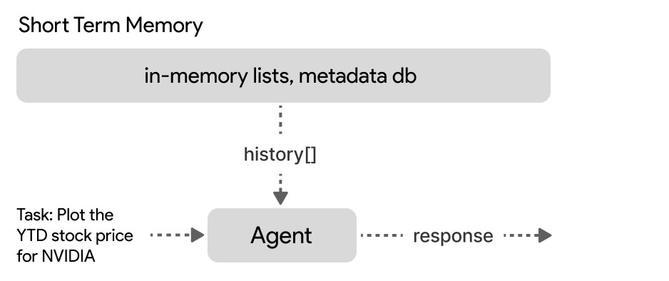
图 4.1：短期记忆通过存储在内存列表或轻量数据库中的消息历史维护对话上下文，使智能体能够跟踪近期交互并提供连贯的响应。
考虑这个交互：
没有短期记忆，智能体无法解答第二个问题，因为它没有"它"指埃菲尔铁塔的上下文。在我们的智能体实现中，短期记忆实现为存储近期消息和工具结果的消息历史：
代码清单 4.20：通过消息历史的短期记忆
# Agent maintains conversation context
class AgentContext:
def __init__(self):
self.messages: List[Message] = []
def add_message(self, message: Message):
self.messages.append(message)
# Optionally truncate to keep recent context
if len(self.messages) > 50:
self.messages = self.messages[-50:]
# Usage in agent execution loop
self.context.add_message(
UserMessage(content="What is the height of the Eiffel Tower?"))
self.context.add_message(
AssistantMessage(content="The Eiffel Tower is 324 meters tall."))
self.context.add_message(
UserMessage(content="When was it built?"))
# All messages become part of the prompt to the LLM
llm_messages = [SystemMessage(content=self.instructions), *self.context.messages]
短期记忆快速且立即可用，但它是短暂的——对话结束时，这些上下文就丢失了。长期记忆解决了持久化问题，使智能体能够跨会话学习和回忆信息。
长期记忆存储不是立即可用但可能对未来交互有用的信息。这包括领域知识、用户偏好、过去会话的情景记忆和一般世界知识。
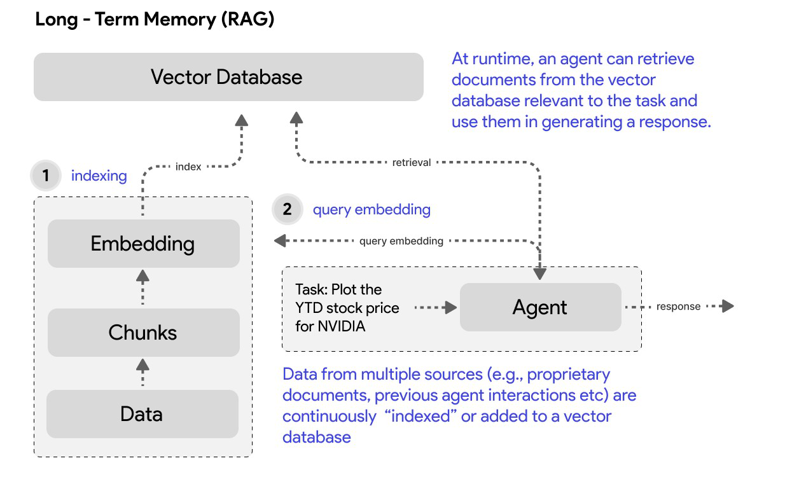
图 4.2：长期记忆使用向量数据库通过 RAG（检索增强生成，Retrieval-Augmented Generation）存储和检索海量信息。数据被索引为嵌入，在运行时，智能体查询数据库以检索用于生成响应的相关上下文。
挑战在于规模——长期记忆可能包含海量信息，远超 LLM 一次能处理的范围。解决方案是检索增强生成（RAG）：一种在推理前从数据源检索外部知识并动态添加到模型提示词中以增强的技术。这将模型的响应锚定在训练数据之外的领域特定或最新信息上。虽然向量数据库支持用于确定相关性的语义相似性搜索，但 RAG 来源可以包括任何外部数据：传统数据库、API、文件系统或知识图谱。
代码清单 4.21：长期记忆的 RAG 流程
# 1. INDEXING: Convert information to vectors
encoder = SentenceTransformer('all-MiniLM-L6-v2')
text = "User prefers morning meetings and dislikes long emails"
vector = encoder.encode(text)
await vector_db.store(vector, text, metadata={"type": "user_preference"})
# 2. QUERY: Convert question to vector and retrieve
query = "When should I schedule the meeting?"
query_vector = encoder.encode(query)
similar_items = await vector_db.search(query_vector, top_k=3)
# 3. AUGMENTATION: Add retrieved context to prompt
context_items = [item.text for item in similar_items]
augmented_prompt = f"""
Relevant context: {context_items}
User question: {query}
Please provide a helpful response.
"""
RAG 配合向量数据库的关键优势：
在大多数关于 RAG 的论述中，会出现一个看似简单但实际复杂的问题：什么信息应该提交到长期记忆？一方面，索引一切会引入不相关信息带来的噪声；另一方面，索引太少又有遗漏关键上下文的风险。
三种主要方法应对这一挑战：
人工策展：人类通过捕获偏好的用户界面、交互式标记（"记住这个地址"）或开发者定义的重要信息类型规则，显式指定要记住什么。
自动选择：算法使用基于频率的启发式（经常被引用的信息）、重要性评分（与用户目标的相关性）或新颖性检测（独特信息）来识别值得存储的信息。
混合方法：结合人工和自动方法——自动系统建议要记住什么，人类为关键决策提供最终批准。
我们可以用智能体的上下文（消息历史）实现短期记忆，用 RAG（向量数据库）实现长期记忆。为了在我们的库中实现这一点，我们首先定义一个抽象不同记忆实现的 BaseMemory 接口。下面的实现复用于 AutoGen 库。
代码清单 4.22：BaseMemory 抽象接口
from abc import ABC, abstractmethod
from typing import List, Optional, Dict, Any
class BaseMemory(ABC):
"""Abstract interface for agent memory systems."""
@abstractmethod
async def add(
self,
content: str, metadata: Optional[Dict[str, Any]] = None
) -> None:
"""Store new content in memory."""
pass
@abstractmethod
async def query(self, query: str, limit: int = 10) -> List[str]:
"""Retrieve relevant memories based on query."""
pass
@abstractmethod
async def get_context(self, max_items: int = 10) -> List[str]:
"""Get recent/relevant context for LLM prompt."""
pass
这里的 BaseMemory 接口为 3 个关键操作提供抽象：第一，add() 存储新信息；第二，query() 基于查询检索相关记忆；第三，get_context() 获取用于提示词增强的近期或相关上下文。反过来，这意味着我们设计的任何智能体都可以利用 get_context() 返回用于增强提示词的数据结构。
这一设计中值得反思的一些重要决策包括：
上下文 vs 记忆：AgentContext 管理当前会话状态（消息、临时数据），而 BaseMemory 提供跨会话的持久存储（用户偏好、学到的事实、长期知识）。
应用管理的存储：开发者调用 memory.add() 存储信息——成功的结果、用户偏好、对话摘要。框架然后通过 get_context() 将此存储的记忆注入智能体的提示词，这可能使用简单的近期过滤或语义相似性搜索等复杂检索策略。智能体接收此上下文，但不控制存储或检索什么。
检索增强的上下文：在准备提示词时，智能体调用 memory.get_context()，它执行复杂的检索逻辑，从简单的近期过滤到语义相似性搜索。
通向 RAG 实现的路径：query() 方法为检索增强生成提供了基础。应用可以在此接口背后实现向量数据库、语义搜索或知识图谱，同时保持智能体代码不变。
AgentContext 在智能体执行期间管理当前会话状态，包括对话消息、请求元数据（user_id、session_id）和用于编排的共享状态。与提供跨会话持久存储的 Memory 不同，AgentContext 是瞬态的，通常在主要交互之间重置。AgentContext 实现为可序列化的 Pydantic 模型，支持无状态的智能体执行——任何服务器都可以处理恢复请求，而无需在内存中维护会话状态——这是可扩展 Web 部署的关键设计。瞬态会话状态（AgentContext）与持久知识（BaseMemory）之间的这种分离，既实现了响应式的对话流，也实现了跨会话的持久学习。
以下是智能体在执行期间如何使用记忆：
async def _prepare_llm_messages(
self,
task_messages: List[Message]
) -> List[Message]:
"""Prepare context with memory integration."""
system_content = self.instructions
# Memory provides relevant context through get_context()
if self.memory:
context = await self.memory.get_context(max_items=5)
if context:
system_content += f"\n\nRelevant context:\n{'\n'.join(context)}"
return [
SystemMessage(content=system_content),
*self.message_history,
*task_messages
]
BaseMemory 接口可以扩展以支持不同的存储和检索策略。这种架构将检索策略与智能体执行分离，实现复杂的记忆系统，同时保持智能体接口干净一致。
对于开发和测试，我们从一个简单的内存实现开始。ListMemory 类将记忆存储在列表中，并自动管理容量：
代码清单 4.23：ListMemory 初始化与存储
class ListMemory(BaseMemory):
"""Simple in-memory list-based memory storage."""
def __init__(self, max_memories: int = 1000):
self.memories: List[MemoryContent] = []
self.max_memories = max_memories
async def add(
self,
content: MemoryContent
) -> None:
"""Add new memory, removing oldest if at capacity."""
self.memories.append(content)
# Remove oldest memories if over capacity
if len(self.memories) > self.max_memories:
self.memories = self.memories[-self.max_memories:]
add() 方法（代码清单 4.23）接受包含内容和可选元数据的 MemoryContent 对象，在达到容量时自动淘汰最旧的记忆。这种 FIFO 方法确保记忆系统保持在资源限制内。
对于检索，query() 方法执行简单的文本匹配来查找相关记忆：
代码清单 4.24：ListMemory query 实现
async def query(
self,
query: str,
limit: int = 10
) -> MemoryQueryResult:
"""Simple text-based search in memory contents."""
query_lower = query.lower()
matching_memories = []
for memory in reversed(self.memories): # Search newest first
if query_lower in memory.content.lower():
matching_memories.append(memory.content)
if len(matching_memories) >= max_results:
break
return matching_memories
搜索（代码清单 4.24）按逆序遍历记忆（最新的优先），并执行不区分大小写的子串匹配。虽然简单，但这种方法对小型记忆集效果良好，并为测试提供可预测的行为。
最后，get_context() 方法为提示词增强提供近期记忆：
代码清单 4.25：ListMemory 上下文检索
async def get_context(self, max_items: int = 10) -> List[str]:
"""Get most recent memories for context."""
recent_memories = (
self.memories[-max_items:] if self.memories else []
)
return [memory.content for memory in recent_memories]
这个简单实现（代码清单 4.25）返回最近的记忆，但更复杂的实现可以利用不同的存储后端：
可运行的代码：结构化输出
在 examples 目录中查找结构化输出示例——寻找包含 structured_output 的文件，了解完整的 Pydantic 集成模式。
我们刚刚探索的 BaseMemory 接口提供应用管理的存储——开发者调用 memory.add() 存储信息，应用代码通过检索策略将相关上下文注入提示词。但如果智能体需要直接控制自己的记忆呢？考虑一个发现关键 bug 模式的代码审查器。它应该主动存储该模式、在知识库中组织它，并在未来的审查中检索它。
这就是智能体自管理的记忆：智能体通过工具显式地读取、写入和组织自己的持久知识，而不是被动接收应用提供的内容。这种方法遵循 Anthropic 上下文管理工作所记录的模式，其中智能体使用基于文件的操作跨会话积极策展其知识库。
我们可以通过创建一个包装文件操作的工具来实现智能体自管理的记忆。MemoryTool 扩展 BaseTool，为智能体提供基于文件的记忆系统，让它们可以按需创建目录、存储文档和检索信息。与应用代码自动查询的 BaseMemory 不同，MemoryTool 要求智能体显式调用它——智能体决定何时检查记忆、存储什么以及如何组织信息：
代码清单 4.26：创建带记忆工具的智能体
from picoagents.tools import MemoryTool
# Create memory tool with file-based backend
memory_tool = MemoryTool(base_path="./agent_memory")
# Agent explicitly uses memory through tool calls
agent = Agent(
name="code_reviewer",
model_client=model,
tools=[memory_tool],
instructions="""You are a code reviewer.
ALWAYS check memory first:
memory(command="view", path="/memories")
Store important patterns:
memory(command="create",
path="/memories/bugs/pattern_name.md",
file_text="...")"""
)
智能体现在将记忆视为一个可以查询和更新的外部系统，就像调用数据库或 API 一样。框架处理工具执行，但智能体控制存储什么以及何时存储。
智能体自管理的记忆实现了跨对话持续的学习。让我们看看代码审查器如何从一个会话学习，并在下一个会话中应用这些知识。
在第一个会话中，智能体遇到一个竞态条件 bug：
代码清单 4.27：会话 1：智能体发现并存储一个 bug 模式
code_with_bug = '''
self.results = []
for future in futures:
self.results.append(future.result()) # RACE!
'''
response = await agent.run(
f"Review this code:\n```python\n{code_with_bug}\n```"
)
当智能体分析此代码时，它识别出竞态条件并采取行动记住它。智能体使用 memory(command="view", path="/memories") 检查其记忆，然后创建一个描述该模式的新条目：
memory(
command="create",
path="/memories/bugs/race_condition.md",
file_text="Thread safety: shared state mutations \
in concurrent code can cause race conditions...")
现在，在一个全新的对话会话中，我们重置智能体的上下文并呈现类似的代码：
代码清单 4.28：会话 2：智能体将学到的模式应用于新代码
agent.context = AgentContext() # Reset context - new session
similar_code = '''
async def fetch_all(self):
for coro in asyncio.as_completed(tasks):
self.responses.append(result) # RACE!
'''
response = await agent.run(
f"Review this code:\n```python\n{similar_code}\n```"
)
会话之间，智能体的对话上下文完全重置，但其记忆持续存在。当智能体在新会话中用 memory(command="view", ..) 检查记忆时，它检索到之前存储的 race_condition.md 文件，并立即识别出新代码中的相同模式。尽管从未见过这个特定的 fetch_all 函数，智能体应用其学到的竞态条件知识来识别 bug。
MemoryTool 提供六个镜像文件系统命令的操作。这些使智能体能够构建和维护结构化的知识库：
# View directory or file
memory(command="view", path="/memories")
memory(command="view", path="/memories/bugs/race.md")
# Create new file
memory(command="create",
path="/memories/patterns/singleton.md",
file_text="Singleton pattern notes...")
# Edit existing file
memory(command="str_replace",
path="/memories/bugs/race.md",
old_str="shared state",
new_str="shared mutable state")
# Insert at specific line
memory(command="insert",
path="/memories/notes.md",
insert_line=3,
insert_text="New observation\n")
# Delete file or directory
memory(command="delete", path="/memories/old_notes.md")
# Rename or move
memory(command="rename",
path="/memories/temp.md",
new_path="/memories/archive/temp.md")
这些操作让智能体完全控制其知识组织。智能体可以为不同的 bug 类型创建目录，将过时的模式移到归档区，或在学习新变体时更新模式。
由于智能体可以执行文件操作，MemoryTool 包含路径验证以防止安全问题：
class MemoryBackend:
def _validate_path(self, path: str) -> Path:
"""Prevent directory traversal attacks."""
# Resolve to absolute path
full_path = (self.base_path / path).resolve()
# Ensure path stays within base directory
try:
full_path.relative_to(self.base_path)
except ValueError:
raise ValueError(
"Access denied: path outside memory"
)
return full_path
此验证阻止了试图访问指定记忆目录之外文件的 ../../../etc/passwd 之类的尝试。所有记忆操作都保持在基础路径内沙箱化。
应用管理记忆与智能体自管理记忆之间的选择归结为控制与便利。框架管理的记忆（BaseMemory）给你便利——开发者通过 memory.add() 存储信息，应用代码使用语义相似性或近期过滤等策略自动检索和注入相关上下文。智能体自管理的记忆（MemoryTool）给智能体控制权——它们通过显式工具调用决定存储什么、何时检索以及如何组织其知识库。
当你想要自动的上下文增强、而不给智能体存储决策权时，使用应用管理的记忆。当智能体需要积极策展和组织自己的知识时，使用智能体自管理的记忆。两种方法可以共存——智能体可能将应用管理的记忆用于对话历史，同时使用智能体自管理的记忆来组织学到的模式。
可运行的代码：记忆示例
在 examples/memory 目录中探索两种记忆方法：
- 智能体自管理：memory_tool_example.py - 使用 MemoryTool 的跨会话学习
- 应用管理：list_memory_example.py - 使用 ListMemory 的上下文注入
能力越大，责任越大。现在我们有了一个可以使用模型生成文本、或使用工具采取行动（可能产生意外副作用）的智能体，拥有确保安全受控使用的机制非常重要。这就是中间件概念的用武之地。中间件拦截流经智能体的单个操作（模型调用和工具执行）。当智能体准备调用 LLM 或执行工具时，这些操作首先经过中间件链。链中的每个中间件都有机会检查即将发生的事情，可能修改输入，并决定是继续还是完全阻止该操作。
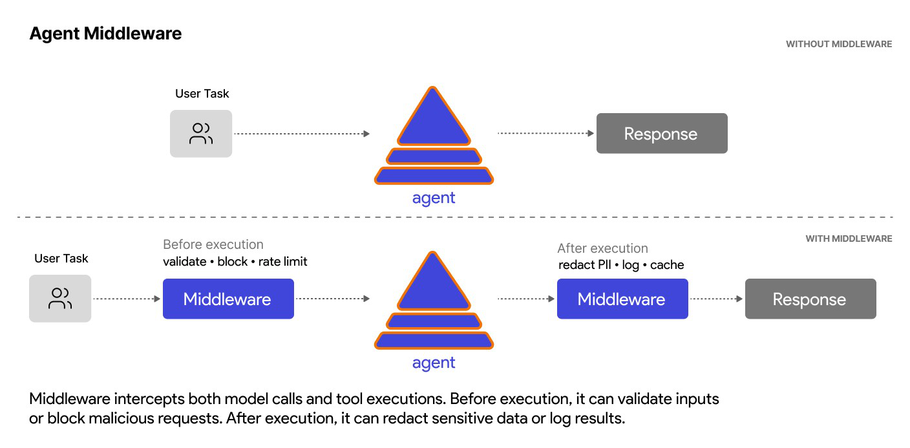
图 4.3：智能体中间件在执行前后拦截操作。没有中间件（上），请求直接从用户流向智能体再到响应。有中间件（下），拦截器可以在流水线的每个阶段验证输入、阻止恶意请求、脱敏敏感数据或记录结果。
当你在初始化期间向智能体传递中间件时，智能体将其核心操作包装在这些拦截器中。执行期间发生的事情如下：
中间件接收关于正在发生的事情的完整上下文：操作类型（"model_call" 或 "tool_call"）、智能体名称、当前上下文和正在处理的数据。最重要的是，每个中间件获得将要调用的实际函数，使其对是否继续以及如何继续拥有完全控制权。
为了标准化中间件的工作方式，我们定义一个所有中间件必须实现的通用接口。中间件提供三个在操作不同阶段执行的方法：
from abc import ABC, abstractmethod
from collections.abc import AsyncGenerator
from typing import Any, Union
class BaseMiddleware(ABC):
"""Abstract base class for middleware."""
@abstractmethod
async def process_request(
self, context: MiddlewareContext
) -> AsyncGenerator[
Union[MiddlewareContext, AgentEvent], None
]:
"""Process before the operation executes."""
yield context # Must yield context to proceed
@abstractmethod
async def process_response(
self, context: MiddlewareContext, result: Any
) -> AsyncGenerator[Union[Any, AgentEvent], None]:
"""Process after completion."""
yield result
@abstractmethod
async def process_error(
self, context: MiddlewareContext, error: Exception
) -> AsyncGenerator[Union[Any, AgentEvent], None]:
"""Handle errors from the operation."""
raise error
每个方法都是一个异步生成器，产出其结果而不是返回它。这种设计让中间件在处理期间可以通过在产出最终上下文或结果之前产出多个值来发出事件（日志、指标、批准请求）。
process_request() 在任何模型调用或工具执行之前运行。通过抛出异常来阻止可疑请求；通过在产出上下文之前产出 AgentEvent 对象来发出可观测性事件。
process_response() 在成功操作后运行，你可以在其中过滤输出或记录计时。process_error() 通过重试逻辑或回退响应处理失败。
下面是一个安全中间件的具体示例。我们从定义检测恶意输入的模式开始：
代码清单 4.29：安全中间件初始化
class SecurityMiddleware(BaseMiddleware):
"""Blocks malicious input before it reaches the model."""
def __init__(self):
self.malicious_patterns = [
r"ignore.*previous.*instructions",
r"system.*prompt.*injection",
r"\\x[0-9a-f]{2}", # Hex encoding attempts
r"<script.*?>.*?</script>", # Script injection
]
这些模式（代码清单 4.29）检测常见的攻击向量，如提示词注入尝试、十六进制编码技巧和脚本注入。现在我们实现请求拦截：
代码清单 4.30：安全中间件请求处理
async def process_request(self, context):
"""Block malicious requests."""
if context.operation == "model_call":
for message in context.data:
if hasattr(message, "content"):
for pattern in self.malicious_patterns:
if re.search(
pattern,
message.content,
re.IGNORECASE
):
raise ValueError(
"Blocked malicious input"
)
yield context
当中间件（代码清单 4.30）检测到危险模式时，它立即抛出异常。恶意输入永远不会到达模型，不会进行昂贵的 API 调用，问题内容也不会进入你的遥测日志。这道安全屏障在威胁到达系统之前阻止它们，为你的智能体应用创建第一道防线。
在内部，智能体将其核心操作路由通过中间件链。具体来说，我们在 Agent 类实现中包装模型调用和工具执行：
# Model call routed through middleware chain
async for item in self.middleware_chain.execute_stream(
operation="model_call",
agent_name=self.name,
agent_context=self.context,
data=llm_messages,
func=lambda msgs: self.model_client.create(
msgs, tools=tools
),
):
if isinstance(item, ChatCompletionResult):
completion_result = item
else:
yield item # Forward middleware events
# Tool execution routed through middleware chain
async for item in self.middleware_chain.execute_stream(
operation="tool_call",
...
):
# Same pattern: collect result, forward events
execute_stream() 方法将每个中间件作为异步生成器流水线按顺序处理。每个中间件可以产出事件（日志、批准请求），然后产出最终上下文或结果。这种流式设计支持分布式追踪、内容过滤和性能监控，而不会使核心智能体实现变得杂乱。
可运行的代码：中间件示例
在 examples/agents/middleware.py 中探索中间件实现——包括日志记录、速率限制、安全过滤和可观测性模式。
让我们探索一些你可能在生产应用中实现的实用中间件。
日志记录与可观测性：在生产中，你需要对智能体在做什么有可见性。日志中间件可以捕获每次模型调用的输入、输出和计时数据。这在调试智能体为何做出某些决定或衡量系统性能时至关重要。
class LoggingMiddleware(BaseMiddleware):
"""Log all agent operations."""
async def process_request(self, context):
context.metadata["start_time"] = time.time()
print(f"[{context.agent_name}] "
f"Starting {context.operation}")
yield context
async def process_response(self, context, result):
elapsed = time.time() - context.metadata["start_time"]
print(f"[{context.agent_name}] "
f"{context.operation} done in {elapsed:.2f}s")
yield result
async def process_error(self, context, error):
print(f"[{context.agent_name}] "
f"{context.operation} failed: {error}")
raise error
以下是我们如何将此中间件传递给智能体：
from picoagents import Agent, LoggingMiddleware
from picoagents.llm import OpenAIChatCompletionClient
# Create agent with logging middleware
agent = Agent(
name="assistant",
description="A helpful assistant for answering questions",
model_client=OpenAIChatCompletionClient(model="gpt-4.1-mini"),
instructions="You are a helpful assistant.",
middlewares=[LoggingMiddleware()] # Uses default logger
)
# Execute task - middleware automatically logs operations
response = await agent.run("What's 2+2?")
print(f"Response: {response.messages[-1].content}")
执行时，中间件捕获所有带时间戳的操作：
[assistant] Starting model_call
[assistant] Completed model_call in 0.82s
Response: 2 + 2 = 4.
安全与内容过滤：在处理用户生成内容或敏感领域的应用中，你需要防护栏。安全中间件可以在输出到达用户之前，扫描模型输出中的个人身份信息（PII）、不当内容或政策违规。此中间件可以完全阻止有问题的响应，或通过移除敏感信息来净化它们。
作为示例，我们可以实现一个从模型输出中检测并脱敏 PII 的中间件。我们可以定义一个简单的基于正则表达式的 PII 检测器，并在中间件中使用它：
from picoagents import Agent, PIIRedactionMiddleware
from picoagents.llm import OpenAIChatCompletionClient
# Create agent with PII protection
agent = Agent(
name="customer_service",
description="Customer service agent with PII protection",
model_client=OpenAIChatCompletionClient(model="gpt-4.1-mini"),
instructions="Process customer information.",
middlewares=[PIIRedactionMiddleware()]
)
# Process message containing sensitive data
response = await agent.run(
"Customer John Doe called from 555-123-4567 about "
"order confirmation sent to john@example.com"
)
print(f"Response: {response.messages[-1].content}")
中间件自动检测并保护敏感信息：
Input: Customer John Doe called from 555-123-4567
about order confirmation sent to john@example.com
Response: Customer John Doe called from the redacted phone number
regarding an order confirmation sent to the redacted
email address. How would you like me to assist with
this information?
速率限制与成本控制：LLM API 调用可能很昂贵，一些用户可能滥用你的系统。速率限制中间件跟踪每个用户或会话的使用情况，并可以阻止超出定义配额的请求。这对于暴露在互联网上的应用尤为重要，你需要控制运营成本。
from picoagents import Agent, RateLimitMiddleware
from picoagents.llm import OpenAIChatCompletionClient
from datetime import datetime
# Create agent with aggressive rate limiting for demo
agent = Agent(
name="limited_assistant",
description="Rate-limited assistant for cost control demo",
model_client=OpenAIChatCompletionClient(model="gpt-4.1-mini"),
instructions="You are a helpful assistant.",
middlewares=[
RateLimitMiddleware(max_calls_per_minute=3) # Only 3 calls/min
]
)
# Make multiple rapid requests with timestamps
for i in range(5):
timestamp = datetime.now().strftime("%H:%M:%S.%f")[:-3]
try:
response = await agent.run(f"Question {i+1}: What is {i}+{i}?")
print(f"[{timestamp}] Request {i+1}: \
Success - {response.messages[-1].content[:40]}...")
except Exception as e:
print(f"[{timestamp}] Request {i+1}: Rate limited - {e}")
时间戳清晰地展示了速率限制的实际效果。注意请求 4 如何花费近一分钟（59.58s），因为中间件强制执行了每分钟 3 次调用的限制：
[20:02:05.317] Request 1: Success - 0 + 0 = 0...
[20:02:05.682] Request 2: Success - 1 + 1 = 2...
[20:02:06.156] Request 3: Success - 2 + 2 = 4...
[20:02:06.517] Request 4: Success (59.58s) - 3 + 3 = 6... # Rate limited!
[20:03:06.101] Request 5: Success - 4 + 4 = 8...
审计与合规：在受监管的行业中，你需要记录 AI 系统的每个决策。审计中间件可以捕获智能体操作的完整轨迹——收到什么输入、做出什么决定、生成什么输出——并以合规就绪的格式存储。这创建了不可变的审计轨迹，可以由合规工具分析或导出到 OpenTelemetry 等可观测性平台。
我们探索的中间件模式——日志记录、指标采集、PII 脱敏、速率限制——解决了真实的生产问题。然而，为每个项目实现自定义中间件会产生开销，并使与现代监控工具的集成变得困难。OpenTelemetry 提供了一种标准化解决方案，适用于所有编程语言、框架和监控后端。
OpenTelemetry（OTEL）是一个由云原生计算基金会（Cloud Native Computing Foundation，CNCF）支持的开源可观测性框架。它定义了收集追踪（trace）、指标（metric）和日志的供应商中立标准——使你能够一次埋点，无需代码更改即可导出到任何后端（Jaeger、Datadog、Azure Monitor 等）。
对于 AI 系统，OpenTelemetry 提供 Gen-AI 语义约定（Gen-AI Semantic Conventions）——专为 AI 操作设计的标准化属性名和 Span 结构。这些约定定义了如何对 LLM 调用（模型名称、Token 用量）、工具执行（工具名称、成功/失败）和智能体工作流（带适当层级的多步操作）进行埋点。
当你遵循这些约定时，你的遥测数据立即变得可移植。无论你使用 PicoAgents、LangChain 还是 AutoGen，你的追踪都遵循相同的结构——更容易比较系统、共享工具和在平台之间迁移。这种标准化还支持关键的生产能力，如合规审计轨迹、跨团队成本跟踪和大规模性能监控。
让我们构建一个实现我们之前定义的 BaseMiddleware 接口的 OTelMiddleware 类。此中间件将遵循 Gen-AI 语义约定，确保我们的遥测符合标准。
首先，初始化创建遥测仪器：
from opentelemetry import metrics, trace
class OTelMiddleware(BaseMiddleware):
"""OpenTelemetry middleware following Gen-AI conventions."""
def __init__(self):
self._tracer = trace.get_tracer("picoagents")
self._meter = metrics.get_meter("picoagents")
# Create metric instruments following Gen-AI semconv
self._token_histogram = self._meter.create_histogram(
name="gen_ai.client.token.usage",
unit="{token}",
description="Token usage per request"
)
self._duration_histogram = self._meter.create_histogram(
name="gen_ai.client.operation.duration",
unit="s",
description="Operation duration"
)
中间件获取用于创建 Span 的 tracer 和用于记录指标的 meter。它按照 Gen-AI 约定创建两个直方图仪器：一个用于 Token 消耗，一个用于操作时长。
当操作开始时，process_request() 创建带 Gen-AI 属性的 Span：
async def process_request(self, context):
"""Start span before operation."""
# Create span following Gen-AI naming conventions
if context.operation == "model_call":
span_name = f"chat {self._get_model_name(context)}"
elif context.operation == "tool_call":
span_name = f"tool {self._get_tool_name(context)}"
span = self._tracer.start_span(span_name)
# Add Gen-AI semantic convention attributes
span.set_attribute("gen_ai.system", "picoagents")
span.set_attribute("gen_ai.operation.name", context.operation)
span.set_attribute("gen_ai.agent.name", context.agent_name)
# Store span for completion in process_response
context.metadata["_otel_span"] = span
context.metadata["_otel_start"] = time.time()
yield context
操作完成后，process_response() 记录指标并结束 Span：
async def process_response(self, context, result):
"""Record metrics and end span."""
span = context.metadata.get("_otel_span")
# Record token usage metrics for model calls
if hasattr(result, "usage"):
self._token_histogram.record(
result.usage.prompt_tokens,
{"gen_ai.token.type": "input"}
)
self._token_histogram.record(
result.usage.completion_tokens,
{"gen_ai.token.type": "output"}
)
# Add usage as span attributes
span.set_attribute("gen_ai.usage.input_tokens",
result.usage.prompt_tokens)
span.set_attribute("gen_ai.usage.output_tokens",
result.usage.completion_tokens)
# Record duration and end span
duration = time.time() - context.metadata["_otel_start"]
self._duration_histogram.record(duration)
span.set_status(Status(StatusCode.OK))
span.end()
yield result
有了中间件之后，让我们使用环境变量实现自动埋点。这遵循 Django、Flask 和 FastAPI 等框架使用的行业最佳实践。
import os
if os.getenv("PICOAGENTS_ENABLE_OTEL", "false").lower() == "true":
from ._otel import auto_instrument
auto_instrument() # Patches Agent class
auto_instrument() 函数修改 Agent 类，自动将 OTelMiddleware 前置到每个智能体的中间件链。这在导入时透明地发生。
用户在导入前设置环境变量来启用遥测：
import os
# Enable OpenTelemetry before importing
os.environ["PICOAGENTS_ENABLE_OTEL"] = "true"
os.environ["OTEL_EXPORTER_OTLP_ENDPOINT"] = "http://localhost:4318"
os.environ["OTEL_SERVICE_NAME"] = "my-agent-app"
from picoagents import Agent
agent = Agent(name="assistant", model_client=..., tools=[...])
response = await agent.run("What's the weather in Paris?")
让我们用一个使用 Jaeger（一个开源分布式追踪系统）的完整示例来观察 OpenTelemetry 的实际运作。我们将为一个天气智能体埋点，并可视化完整的执行追踪。首先安装依赖并启动 Jaeger：
pip install picoagents[otel]
docker run -d -p 16686:16686 -p 4318:4318 jaegertracing/all-in-one:latest
启用遥测并创建你的智能体：
import os
# Enable telemetry before importing picoagents
os.environ["PICOAGENTS_ENABLE_OTEL"] = "true"
os.environ["OTEL_EXPORTER_OTLP_ENDPOINT"] = "http://localhost:4318"
os.environ["OTEL_SERVICE_NAME"] = "weather-assistant"
from picoagents import Agent
# Create and use agent normally - telemetry automatic
agent = Agent(name="weather_assistant", model_client=..., tools=[...])
response = await agent.run("What's the weather in Paris?")
当你运行此代码并访问 http://localhost:16686 时，你会看到如图 4.4 所示的操作层级追踪。每个 Span 都包含 Gen-AI 属性，如模型名称、Token 用量和工具执行状态。
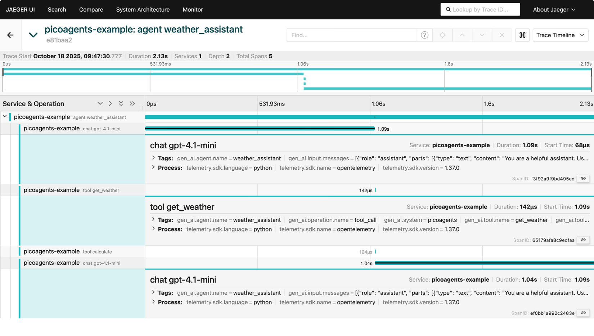
图 4.4：显示智能体操作 OpenTelemetry 追踪的 Jaeger UI。
可运行的代码：OpenTelemetry 示例
完整的 OpenTelemetry 示例（含 Jaeger 和 docker-compose）可在 examples/otel/ 中获得。该示例包括详细的设置说明，并演示了与多个可观测性后端的集成。
OpenTelemetry 的标准化实现了供应商中立的可观测性——只需更改端点，你的遥测就可以与任何 OTLP 兼容的后端一起工作。Gen-AI 语义约定确保跨所有平台的追踪一致。
领先的 OTLP 兼容平台：
只需更改端点即可切换后端——无需代码更改：
# Aspire Dashboard (local)
os.environ["OTEL_EXPORTER_OTLP_ENDPOINT"] = "http://localhost:4317"
# Azure Application Insights
os.environ["OTEL_EXPORTER_OTLP_ENDPOINT"] = "https://your-app.applicationinsights.azure.com"
# Arize Phoenix
os.environ["OTEL_EXPORTER_OTLP_ENDPOINT"] = "https://app.arize.com/v1/traces"
这种可移植性的存在归功于 OpenTelemetry 的标准化。本地使用 Aspire，AI 洞察使用 Arize，生产使用 Datadog——全部使用相同的埋点代码。
通过采用带自动埋点的 OpenTelemetry，你可以立即获得对 Token 消耗的可见性（按智能体、任务或用户跟踪成本）、性能监控（查看延迟分布并识别慢操作）、调试能力（追踪模型调用和工具执行的确切序列）以及生产就绪性（监控错误率并设置告警）——所有这些只需极少的配置开销。我们在这里构建的可观测性基础对评估和优化至关重要，这些主题将在第 10 章和第 11 章深入探讨。
遵循 OpenTelemetry Gen-AI 语义约定，内容属性（提示词、补全结果、工具参数）由于潜在的敏感信息，在设计上默认不采集。默认情况下，PicoAgents 仅捕获元数据——操作名称、模型名称、Token 数量和成功/失败状态——这对生产环境是安全的。完整的内容捕获需要通过 PICOAGENTS_OTEL_CAPTURE_CONTENT=true 显式选择加入。
这种隐私优先的方法意味着你的生产追踪包含性能指标和调试元数据，而不暴露用户查询、模型响应或工具执行细节。在开发中调试特定问题时，你可以临时启用内容捕获以查看完整的对话流，然后在部署到生产前再次禁用它。
表 4.1 总结了我们的实现捕获的 Gen-AI 属性。
表 4.1：Gen-AI 语义约定属性
| 属性 | 类型 | 何时捕获 | 描述 |
|---|---|---|---|
| gen_ai.operation.name | string | 始终 | 操作类型：chat、tool_call |
| gen_ai.request.model | string | 始终 | 模型名称（如 gpt-4.1-mini） |
| gen_ai.usage.input_tokens | int | 始终 | 提示词中的 Token 数量 |
| gen_ai.usage.output_tokens | int | 始终 | 补全中的 Token 数量 |
| gen_ai.tool.name | string | 始终 | 工具函数名称 |
| gen_ai.tool.success | boolean | 始终 | 工具执行成功状态 |
| gen_ai.input.messages | JSON | 选择加入 | 完整提示词消息（可能包含 PII） |
| gen_ai.output.messages | JSON | 选择加入 | 模型响应（可能包含 PII） |
| gen_ai.tool.parameters | JSON | 选择加入 | 工具输入参数 |
| gen_ai.tool.result | string | 选择加入 | 工具执行结果 |
我们已经构建了一个可以使用工具行动的单个智能体。这里工具的概念围绕一个离散的请求-响应操作（例如，函数调用、API 调用或数据库查询）。实际上，拥有能做更多事情的工具——即它们可以实现我们迄今讨论的智能体循环的某种版本——是有利的。从这个角度看，"智能体"和"工具"之间的界限变得模糊。
这支撑了一种新兴且强大的智能体即工具（agent as tool）模式：任何智能体都可以成为其他智能体的工具。关键的架构优势是每个智能体保持完全独立——自己的模型配置、工具集、记忆和中间件——同时成为更大系统中可复用的组件。
要实现 as_tool()，我们将智能体包装在暴露单个 task 参数的 BaseTool 接口中。此参数告诉调用方 LLM 向专门智能体发送什么。智能体的描述成为工具的说明，帮助协调方的 LLM 理解何时使用这个特定的专家。当协调方调用工具时，它传递一个任务字符串，该字符串被路由到被包装智能体的 run() 方法，智能体的最终响应成为工具的结果。
智能体组合中的一个关键设计决策是：什么信息从专门智能体流回协调方。默认情况下，as_tool() 只返回专家的最终消息。虽然这提供了上下文隔离——防止协调方的上下文因专家的所有中间步骤而爆炸——但当最后一条消息只是"完成了！"或"谢谢！"而关键细节出现在早期消息中时，可能会丢失重要信息。
result_strategy 参数在上下文隔离与信息量之间取得平衡：
# Default: last message only (maximum isolation, minimal context pollution)
weather_tool = weather_agent.as_tool()
# Last N messages: capture conclusion + key supporting details
analyst_tool = analyst_agent.as_tool(result_strategy="last:3")
# All messages: full transparency, but risks context explosion
debug_tool = debug_agent.as_tool(result_strategy="all")
# Custom: precise control over what information transfers
def extract_key_findings(messages):
"""Extract only messages containing data or conclusions."""
return "\n".join(
msg.content for msg in messages
if any(keyword in msg.content.lower()
for keyword in ["found", "result:", "conclusion"])
)
research_tool = research_agent.as_tool(result_strategy=extract_key_findings)
随着智能体层级的加深，这种控制变得必不可少。一个管理五个专家、每个专家内部执行 10-20 次工具调用的协调方，如果每个中间步骤都向上冒泡，就会积累海量上下文。result_strategy 使每个组合层都能定义自己的上下文边界。
考虑构建一个研究系统：你的天气专家可能使用快速、便宜的模型（因为天气查询很直接），而你的数据分析专家使用昂贵的推理模型进行复杂计算。每个智能体可以由不同团队独立开发、测试和优化，然后无缝组合在一起。
代码清单 4.31：带专门配置的智能体组合
# Each agent optimized for its specific domain
weather_agent = Agent(
model="gpt-4.1-mini", # Fast, cheap model for simple queries
tools=[weather_api],
memory=weather_cache
)
analysis_agent = Agent(
model="o1-preview", # Expensive reasoning model for complex analysis
tools=[analyze_data, create_charts],
memory=analysis_history
)
# Coordinator composes specialized agents
coordinator = Agent(
model="gpt-4o",
tools=[weather_agent.as_tool(), analysis_agent.as_tool()]
)
response = await coordinator.run(
"Analyze weather trends in Paris over the last month"
)
执行时，协调方会自动将天气数据收集路由到天气专家（使用高效模型），将趋势分析路由到分析专家（使用推理模型）。执行流展示了清晰的委托：
[coordinator] Delegating weather task to weather_specialist
[weather_specialist] Using weather_api tool -> "Paris: sunny, 22°C"
[coordinator] Delegating analysis task to analysis_specialist
[analysis_specialist] Using analyze_data tool -> "Trend analysis shows..."
[coordinator] "Based on weather data and analysis, Paris shows..."
同样的专家智能体可以在不同的协调方之间复用，实现灵活的系统架构，组件之间无需紧密耦合。
如果说 LLM 是 CPU，那么上下文窗口就是内存。——Andrej Karpathy
智能体依赖大型语言模型（LLM）来处理指令并生成响应。然而，LLM 的上下文窗口是有限的——它们一次能关注的文本量有限。当智能体执行多步任务时，其上下文迅速增长，随着关键信息被挤出模型的注意力范围，性能有下降的风险。
提示词工程专注于精心设计给模型的单个输入，而上下文工程是主动管理多步智能体执行期间上下文如何积累和演进的实践。当智能体处理任务时，每个动作——工具调用、记忆检索、对话轮次——都会增加上下文。没有仔细的管理，这种增长会造成两个关键问题：
上下文腐化（Context Rot）：随着 Token 数量增加，模型准确回忆信息的能力下降。研究表明，性能退化大约从 32K Token 开始，远早于宣传的极限。Transformer 架构的 n² 两两关系意味着每个 Token 都在消耗模型的注意力预算——一种收益递减的有限资源。
上下文爆炸（Context Explosion）：在智能体执行期间，上下文迅速增长。每次工具调用都会添加请求参数、执行结果和错误消息。记忆检索注入历史上下文。消息历史一轮一轮地积累。
考虑一次典型智能体运行期间发生的事情：
表 4.2：智能体执行期间的上下文增长
| 步骤 | 添加的上下文 | Token | 累计总数 |
|---|---|---|---|
| 初始 | 系统 + 记忆 + 任务 | 2,600 | 2,600 |
| 工具调用 | 助手 + 工具结果 | 3,150 | 5,750 |
| 5 次工具调用 | 多个结果 | 15,000 | 20,750 |
没有上下文管理，智能体会静默失败。一个在 5 步任务上完美工作的研究智能体，在 10 步工作流的第 8 步开始产生幻觉——不是因为模型退化了，而是因为 45K Token 的累积工具结果将关键指令挤出了注意力窗口。
如果你读到这里，你会认识到我们已经实现了某种形式的上下文工程。我们的 _prepare_llm_messages() 方法从系统指令、对话历史、记忆检索和当前任务组装上下文。我们的记忆实现探索了基于 RAG 的检索（应用管理）和通过 MemoryTool 的主动记忆管理（智能体自管理）——这些方法不仅添加上下文，而且刻意修剪它。
现代智能体框架实现了多种上下文管理方法。这些策略应对上下文爆炸的不同方面，并可以在生产部署中组合使用。
压缩（主动修剪）：修剪旧消息以保持在 Token 预算内。在 PicoAgents 中，压缩是一等公民的智能体参数。CompactionStrategy 在工具循环内的每次 LLM 调用前运行，压缩后的列表替换后续迭代的工作列表：
from picoagents.compaction import HeadTailCompaction
agent = Agent(
name="researcher",
instructions="You are a research assistant.",
model_client=model_client,
tools=[web_search, read_file],
compaction=HeadTailCompaction(
token_budget=50_000,
head_ratio=0.2 # 20% head, 80% tail
),
)
HeadTailCompaction 保留头部（系统提示词和原始任务）和尾部（近期的工具调用和结果），在超预算时丢弃中间消息。头部保留智能体正在做什么；尾部保留它进行到哪里。一个关键约束：带工具调用的助手消息及其对应的工具结果形成原子组，绝不能拆分，否则 API 将拒绝请求。
挑战在于：过度激进的压缩会丢失关键细节，而保守的压缩无法回收足够的 Token。如果你的智能体重新读取已经处理过的文件，说明你的预算太紧了。
主动记忆管理：智能体主动管理什么被持久化。4.8 节的 MemoryTool 让智能体显式存储、组织和删除信息：
# Agent curates its knowledge base
memory(
command="create",
path="/patterns/race_condition.md",
file_text="Thread safety issues..."
)
# Later, prunes outdated information
memory(
command="delete",
path="/patterns/deprecated/old_approach.md"
)
这将记忆视为智能体主动管理的外部系统，防止无关历史上下文的积累。
上下文隔离：4.11 节的智能体即工具模式提供自然的隔离。专家智能体在自己的上下文气泡中运作，只返回浓缩的摘要：
# Specialist operates in its own context bubble
analysis_agent = Agent(
name="analyst",
instructions="Analyze data thoroughly.",
model_client=model_client,
tools=[analyze_data, create_visualizations],
)
# Coordinator sees only condensed results
coordinator = Agent(
name="coordinator",
instructions="Coordinate the research.",
model_client=model_client,
tools=[analysis_agent.as_tool()],
)
# Specialist uses 30K tokens internally;
# coordinator sees only the 200-token summary
这防止了上下文爆炸——专家执行 20 次工具调用消耗 30K Token，但协调方的上下文只增长 200 Token 的摘要。
工具结果过滤：并非所有工具输出都需要完整表示。数据库查询可能返回 10K 行，但智能体只需要聚合统计：
async def _execute_tool_call(
self,
tool_call: ToolCallRequest
) -> ToolMessage:
result = await tool.execute(tool_call.parameters)
# Filter large outputs before adding to context
if self._is_large_result(result):
content = self._summarize_result(result)
else:
content = str(result.result)
return ToolMessage(content=content, ...)
要从经验上理解这些策略的表现，考虑一个分析 AI/ML 公司的研究智能体。该智能体为三个候选公司搜索公司、收集详情、融资信息和增长指标，然后将发现综合成报告。这种多步工作流创造了显著的上下文增长。
实现三个版本——基线（无管理）、压缩（通过 HeadTailCompaction 进行头+尾修剪）和隔离（分层智能体）——揭示出可衡量的差异。基线智能体在其上下文窗口中积累全部 17 次模型调用和工具结果。压缩版本在每次迭代修剪消息，保留任务指令和近期工作。隔离版本将研究委托给专家智能体，协调方只看到最终摘要。
对 Token 消耗的影响：
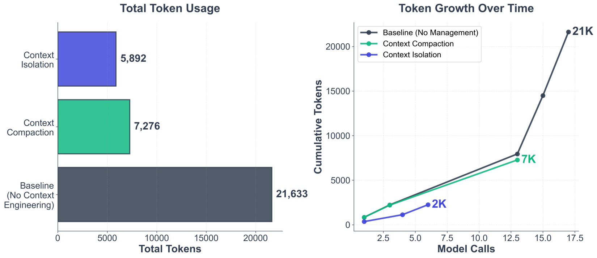
图 4.5：多步研究任务的三种上下文管理策略的 Token 用量比较。上下文隔离通过架构设计而非被动修剪防止上下文积累，实现了最大的减少。
压缩通过消息修剪提供了可观的节省，但上下文仍随每次工具调用增长。隔离通过将专家工作包含在单独的上下文气泡中取得更好的结果——专家在内部消耗 Token，但协调方的上下文增长最小。
这阐明了一个关键原则：对于上下文控制，架构预防（隔离）优于被动管理（压缩）。
4.9 节的中间件让我们对单个操作进行确定性控制：我们可以拦截每次模型调用或工具执行以记录、验证或阻止它。但有些行为需要在循环级别控制，而不是操作级别。考虑两个按操作中间件无法解决的问题：
提前停止：让一个智能体审查项目中的所有 30 个文件，它可能读了 6 个，写了一份自信的发现摘要，然后停止（也许还加上"如果你需要更多信息，请告诉我"）。智能体执行循环（4.2 节）在模型返回无工具调用时退出。对于已完成的任务，这是正确行为，但模型没有可靠的方法知道它是否真的完成了。
缺少结构：一个智能体没有先规划方法就直接开始执行工具调用。没有单个模型调用是问题所在，但整体执行缺乏规划步骤所能提供的纪律。
钩子将中间件相同的原则（通过代码而非提示词进行确定性行为修改）扩展到循环边界。中间件包装每个操作，而钩子有两个触发点：第一次 LLM 调用前（开始钩子）和循环尝试退出时（结束钩子）。两者都遵循相同的契约：返回一个字符串以作为用户消息注入，或返回 None 表示不动作。钩子内部发生什么由你决定：发布到 API、检查待办列表、调用评判模型，或简单地记录循环已开始。
PicoAgents 包含两个解决上述问题的内置钩子。PlanningHook（开始钩子）在智能体开始工作前注入规划指令：
class PlanningHook(BaseStartHook):
async def on_start(self, context: LoopContext):
return (
"Before starting, break this task into "
"steps using the todo_write tool. "
"Mark the first step as in_progress."
)
LLMCompletionCheckHook（结束钩子）使用单独的 LLM 调用来判断任务是否实际完成，然后才允许循环退出：
class LLMCompletionCheckHook(BaseEndHook):
def __init__(self, model_client=None, max_restarts=2):
self.model_client = model_client
self.max_restarts = max_restarts
async def on_end(self, context: LoopContext):
if context.restart_count >= self.max_restarts:
return None # Safety valve: allow stop
summary = self._build_conversation_summary(
context.llm_messages
)
verdict = await self._judge_completion(
context, summary
)
if verdict.startswith("COMPLETE"):
return None
return f"You are not done. {verdict}"
评判器基于智能体的实际工具调用和结果进行评估，而不是基于它的声称。max_restarts 参数防止无限循环。一个更简单的结束钩子可以完全跳过 LLM 调用，只检查待办列表中的所有项目是否都标记为完成。
在智能体上组合压缩和钩子：
from picoagents.compaction import HeadTailCompaction
from picoagents._hooks import (
PlanningHook, LLMCompletionCheckHook
)
agent = Agent(
name="reviewer",
instructions="Review all files in the project.",
model_client=model_client,
tools=[read_file, list_directory, grep_search],
compaction=HeadTailCompaction(
token_budget=50_000
),
start_hooks=[PlanningHook()],
end_hooks=[
LLMCompletionCheckHook(max_restarts=3)
],
max_iterations=50,
)
一个重要的相互作用：如果 Token 预算太紧，压缩会在每次迭代丢弃近期工作，而完成钩子会把智能体推回重新读取相同文件的循环。这种模式称为颠簸（thrashing）——智能体将其 Token 预算花在重新获取已经拥有的上下文上，而不是取得进展。颠簸比完全不压缩浪费更多 Token。首先合理确定预算（每步为智能体工作集的 2-3 倍），然后添加钩子。
可运行的代码：上下文工程
压缩策略、钩子和 Token 跟踪的完整实现可在 examples/contextengineering/ 中获得。HeadTailCompaction、PlanningHook 和 LLMCompletionCheckHook 类位于 PicoAgents 包中。
上下文工程是关于主动管理信息如何流过智能体的上下文窗口。压缩保持 Token 用量有界，钩子防止提前停止，隔离包含专家工作，记忆跨会话持久化知识。对于长时间运行的任务，你需要全部这些。
我们的智能体执行循环自主运作：智能体生成带工具调用的响应，工具自动执行，此循环持续到完成。虽然这种自主性实现了强大的自动化，但也会出现执行期间需要人类反馈的场景，这与设计时配置的中间件不同。
当智能体删除文件、执行系统命令、进行昂贵的 API 调用或修改数据库时，人类监督可以防止代价高昂的错误。这些批准点基于被调用的具体工具动态发生。
工具可以标记为需要批准，使智能体停止执行并返回批准请求：
代码清单 4.32：将工具标记为需要批准
from picoagents.tools import tool
@tool(approval_mode="always_require")
def delete_file(path: str) -> str:
"""Delete a file from the filesystem."""
import os
os.remove(path)
return f"Deleted {path}"
@tool # Regular tool - executes immediately
def read_file(path: str) -> str:
"""Read contents of a file."""
with open(path, 'r') as f:
return f.read()
当智能体遇到 approval_mode="always_require" 时，执行完全停止并返回批准请求。智能体不是暂停并持有资源——它退出，将所有状态存储在可序列化的 AgentContext 中。批准后，新的 agent.run() 调用恢复执行。这种无状态设计（详见第 8 章）使任何服务器都能处理恢复请求。
批准工作流涉及三个阶段：请求、用户决策和恢复。只需将装饰器添加到任何工具并将其传递给智能体——当该工具被调用时，智能体停止并返回批准请求：
代码清单 4.33：完整的工具批准工作流
response = await agent.run("Delete /tmp/old_data.txt")
if response.needs_approval:
for req in response.approval_requests:
print(f"Tool: {req.tool_name}, Args: {req.parameters}")
user_input = input("Approve? (yes/no): ")
approval = req.create_response(
approved=user_input.lower() == "yes"
)
response.context.add_approval_response(approval)
# Resume with updated context
response = await agent.run(context=response.context)
print(f"Result: {response.messages[-1].content}")
如果批准，工具执行且智能体继续。如果拒绝，智能体收到失败消息，可以寻求替代方案或报告任务无法完成。
可运行的代码：工具批准
tests/test_tool_approval.py 中的完整示例演示了批准流、混合批准/非批准工具以及拒绝处理。
除了工具批准之外，我们的无状态上下文设计支持执行期间的通用人类输入。智能体可以请求澄清、停止执行，并在输入到达时恢复——而无需持有服务器资源。
我们创建一个配置为在需要时请求澄清的智能体：
代码清单 4.34：配置为请求澄清的智能体
agent = Agent(
name="research_assistant",
instructions="""
You are a helpful research assistant. When you need more
information, ask by returning a message starting with
'CLARIFICATION NEEDED:' followed by your question.
""",
model_client=AzureOpenAIChatCompletionClient(
model="gpt-4.1-mini"
),
tools=[search_web, analyze_data]
)
智能体执行并检查是否需要澄清：
代码清单 4.35：检测并处理澄清请求
response = await agent.run(
"Research the impact of AI on employment"
)
if response.final_content.startswith("CLARIFICATION NEEDED:"):
print(f"Agent: {response.final_content}")
user_input = input("Your response: ")
# New agent.run() with preserved context
response = await agent.run(
task=user_input,
context=response.context
)
print(f"Final result: {response.final_content}")
输出：
Agent: CLARIFICATION NEEDED: Which employment sector - technology,
manufacturing, services, or general overview?
Your response: Focus on technology sector
Final result: AI's impact on technology shows job displacement in
routine coding and creation in AI development, data science...
我们基于上下文的设计将人类输入视为工具结果：两者都是添加到上下文的消息。智能体指令指导何时请求输入，执行无缝恢复。这种无状态模式（详见第 8 章）实现了：
这种机制支持带用户反馈的多步工作流、对话式调试和渐进的解决方案细化。工具批准与指令驱动输入的结合，提供了全面的人在回路能力，无需复杂的会话管理即可扩展到生产 Web 部署。
可运行的代码：完整实现
探索完整的 picoagents 框架：
- 智能体示例：按概念浏览 examples/（智能体、编排、工作流）
- 核心实现：src/picoagents/ 包含完整的框架源代码
- 入门：参见主 README 了解安装和快速开始
比较智能体框架
既然你理解了智能体系统所需的核心抽象（执行循环、工具集成、记忆、中间件），接下来比较生产框架如何处理同样的挑战。检查 Microsoft Agent Framework、Microsoft AutoGen、LangGraph、Pydantic AI 和 Google ADK 中的基础智能体实现。特别关注：
- 接口设计：它们如何向开发者暴露模型、工具和记忆？
- 执行模式：它们使用 async/await 吗？如何处理流式传输？
- 工具集成：它们如何将函数转换为工具？支持哪些工具类型？
- 状态管理：它们如何处理对话上下文和恢复？
- 可观测性：它们提供什么遥测和调试能力？
为了使这种比较具体化，配套仓库包含本章模式在 Microsoft Agent Framework、Google ADK 和 LangGraph 中的等效实现：examples/frameworks/。
从零构建智能体框架揭示了决定智能体有效性和开发者体验的基础设计决策。本章建立了核心原则，并通过 picoagents 库演示了它们的实际实现。
picoagents 框架证明，复杂的智能体能力源于可组合的、设计良好的抽象，而非单体实现。这些架构基础（特别是用于可靠性的结构化输出、用于控制的中间件和用于可观测性的 OpenTelemetry）提供了我们在后续章节探索计算机使用智能体、工作流和自主编排时所依托的根基。
本章涵盖：
在第 4 章中，我们构建了可以使用 LLM 推理、通过工具行动并维护记忆的智能体。我们探索了函数工具如何让智能体执行代码、调用 API 和执行结构化任务。然而，许多现实场景需要一种不同的方法——能够理解用户界面并与之交互的智能体，类似于人类如何与应用交互以完成任务。这类智能体被称为计算机使用智能体（computer use agents）。
在本章中，我们将首先说明对计算机使用智能体的需求、支撑它们的核心思想，然后扩展第 4 章的 Agent 类，构建一个可以驱动 Web 浏览器完成任务的 ComputerUseAgent 类。我们将探索界面表示、动作序列生成和动作执行等组件。最后，我们将讨论计算机使用智能体领域的挑战与机遇。
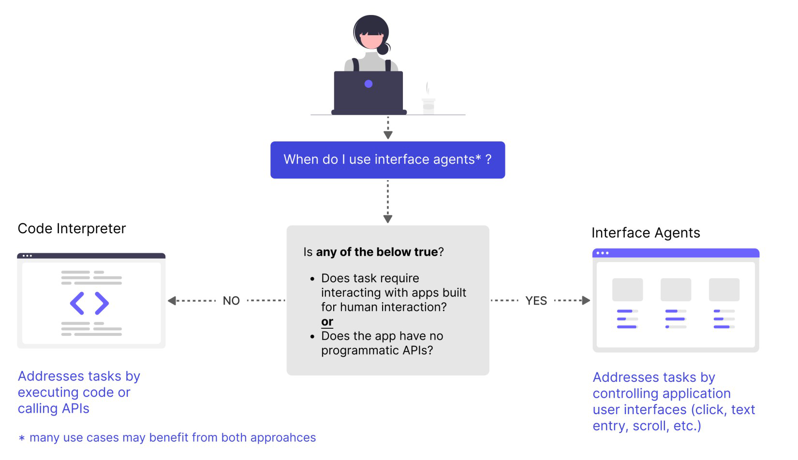
图 5.1：智能体可以通过工具行动，方式要么是执行代码（或调用 API），要么是直接与应用交互。对于涉及复杂动态行为的任务，包括操纵界面，或没有 API 的任务（例如专有软件），计算机使用智能体可能很有价值。重要的是，许多用例可能受益于两种方法的组合。
在第 4 章中，我们探索了如何构建可以访问生成式 AI 模型和工具（代码解释器、函数）的智能体，这些模型和工具交互以解决任务。我们概述了智能体可访问工具的质量如何显著影响它们能解决的任务，并概述了代码解释器或直接控制应用的能力等通用工具如何用于解决广泛的任务。
重要的是，虽然许多任务可以通过代码执行完成（例如，LLM 生成代码解决任务，或正确选择现有函数解决任务），但有些任务场景中代码执行方法力不从心（如图 5.1 所示）。
例如，一些任务具有复杂的动态行为，人类通过操纵界面相对容易完成，但以编程方式指定却很有挑战性。示例包括在 Photoshop 中打开北加州地图的图像，并仅在水域区域绘制多边形分区，或在具有复杂格式的电子表格应用中操纵数据。除单个任务外，计算机使用智能体支持更广泛的自动化模式：研究智能体导航多个网站以收集和比较信息（聚合定价数据、监控竞争对手、综合新闻）；后台智能体分拣邮件并创建相应的 GitHub Issue、更新 CRM 记录，或在互不相连的企业系统之间对账数据；软件测试智能体执行端到端测试场景、执行视觉回归测试，或探索 UI 路径寻找错误。在其他情况下，应用可能具有专为人类交互设计的功能，而没有相应的 API 可用。
这些任务通常需要对界面布局、视觉线索和上下文的深入理解，这些可能无法通过传统编程方法轻易获得。
提示
虽然基础网页抓取可以获取静态内容的 HTML，但现代 Web 应用通常使用动态 JavaScript、AJAX 请求和反机器人措施（CAPTCHA、请求头检查）。模拟人类交互的计算机使用智能体——点击按钮、填写表单、处理动态内容——可以自动化仅靠代码无法完成的任务。这应始终遵守网站的服务条款。
在这些场景中，能够接受任务描述并直接与应用的用户界面交互以解决任务的智能体可能很有价值。计算机使用智能体通过直接与用户界面交互来自动化任务，处理仅靠代码执行难以完成的场景。事实上，如果你使用过 OpenAI 的 Operator（OpenAI 2025）、Anthropic 的 Computer Use（Anthropic 2024a）、TryCUA（TryCUA 2024）或 Manus（Manus AI 2025）等新兴工具，它们都遵循计算机使用智能体的通用原则。
我们将首先讨论计算机使用智能体的核心概念，包括计算机使用智能体的剖析、LLM 在生成动作序列中的作用，以及计算机使用智能体面临的挑战。然后，我们将从零实现一个计算机使用智能体，重点放在界面表示、动作序列规划和动作执行上。最后，我们将探索计算机使用智能体领域的挑战和机遇。
pip install picoagents[computer-use]
playwright install
代码清单 5.1：运行中的完整 ComputerUseAgent
...
from picoagents.agents import PlaywrightWebClient
async def main():
web_client = PlaywrightWebClient(headless=False)
computer_agent = ComputerUseAgent(
interface_client=web_client,
model_client=OpenAIChatCompletionClient(
model="gpt-4.1-mini"),
use_screenshots=True,
)
task = "Find the latest AI news on techcrunch.com?"
try:
result = await computer_agent.run(task)
print(result.content)
finally:
await web_client.close()
if __name__ == "__main__":
asyncio.run(main())
到本章结束时，我们将构建一个可以驱动 Web 浏览器回答问题的智能体类（见代码清单 5.1）。但在运行此代码之前，你需要确保已安装 playwright，并运行了初始命令在你的机器上设置 playwright。Playwright 是一个驱动 Web 浏览器的库（我们将在本章后面详细介绍）。
运行此代码将打开一个 Web 浏览器，你可以看到智能体导航到 www.techcrunch.com、执行若干动作并返回答案。
可运行的代码：计算机使用智能体
在 examples 目录中探索完整实现——查找 computer_use.py，了解智能体组合、编排和生产模式的可运行示例。
计算机使用智能体，就像人类一样，必须执行一组步骤来完成任务。让我们从以下任务开始："查找并打印从西雅图到圣何塞的航班，出发时间在下午 5 点后，返程时间在上午 9 点前，本周三出发，周五早上返回。"处理此任务的智能体可能采取以下步骤，其中每个步骤都可以实现为界面上的一个动作或动作序列：
如果我们反思如何实现这一点，我们可以看到智能体必须：
计算机使用智能体遵循观察-思考-行动（OBSERVE-THINK-ACT）执行模式。
具体来说，我们需要表示界面状态、生成动作序列和在界面上执行这些动作的机制。如图 5.2 所示，这些机制构成计算机使用智能体的核心组件。
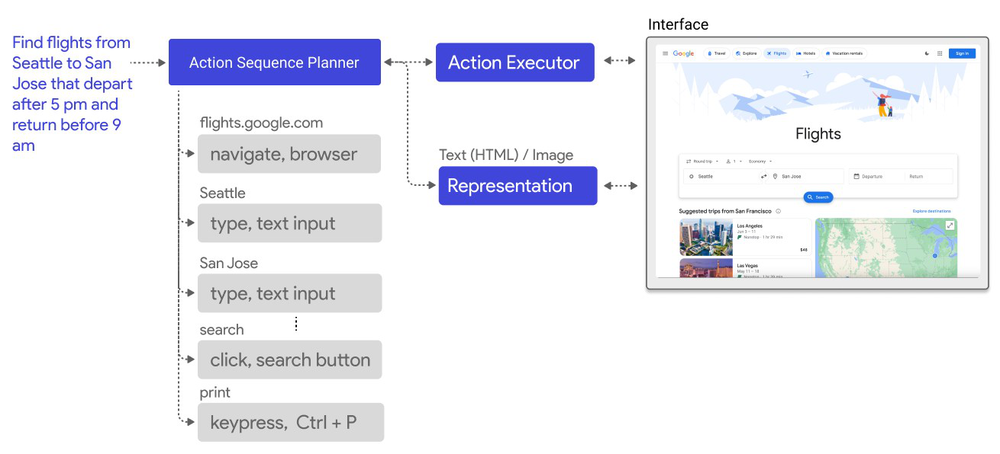
图 5.2：计算机使用智能体由 3 个组件组成——动作序列规划器、动作执行器和界面表示组件。这些组件协同工作，解释、规划并在用户界面上执行动作以完成任务。
动作序列生成是生成式 AI 模型将高层任务转化为特定界面动作的过程。计算机使用智能体依赖这种能力将自然语言指令转换为用户界面上的可执行操作。在实践中，GPT-4+ 及其多模态变体等现成模型提供这种能力。例如，给定任务"佛罗里达州一种入侵蜗牛物种的植物学名称是什么？"，语言模型可能产生一个动作/目标对，如："动作：搜索'佛罗里达州入侵蜗牛物种的植物学名称'，目标：google.com 上的搜索按钮"。
然而，通用模型面临两个主要挑战：
为了应对这些挑战，近期学术界和工业界的研究探索了专门为 GUI 交互任务微调基础模型。这些专门模型不是在提示词引导的通用模型上止步，而是在大规模数据集上训练，这些数据集将界面状态与相应的动作序列配对。例如，UI-TARS（Yujia Lu et al. 2025）代表新一代专用的 GUI 智能体，通过几项关键创新实现了最先进的性能：(1) 在大规模 GUI 截图数据集上训练以增强感知，(2) 跨平台的统一动作建模，(3) 用于深思熟虑的多步决策的 System-2 推理，以及 (4) 使用反思性在线轨迹的迭代训练，使模型能够从自己的交互历史中学习。这种专门化方法相较通用模型展示了显著改进，在 OSWorld 上取得 24.6% 的成功率（超越 Claude Computer Use），在 AndroidWorld 上取得 46.6%（超过 GPT-4o 的 34.5%），表明领域特定的微调可能是推进计算机使用智能体能力的重要方向。
动作序列生成可以通过两种方式实现：
显式规划与隐式规划之间的选择在很大程度上取决于界面的性质和任务需求。显式规划最适合静态、可预测的界面，如登录表单或联系表单，其中动作序列定义明确且在执行期间不太可能改变。这些场景受益于预先规划的效率和较少的模型调用。隐式规划在处理动态界面时表现优异，如航班预订系统、社交媒体信息流或搜索结果页面，其中界面状态在任务执行期间不可预测地变化。
计算机使用智能体的动作空间是指智能体在界面上可以采取的完成任务的行动集合。这个空间可以由智能体能够执行的交互类型定义，如点击按钮、输入文本、从下拉菜单中选择选项或提交表单。重要的是，必须定义此动作空间并将其提供给用于生成处理任务的动作序列的生成式模型。
界面表示是将用户界面的当前状态呈现给 AI 模型以理解和生成动作的方法。计算机使用智能体需要这种表示来感知存在哪些元素、它们位于何处，以及可以执行哪些动作。表示格式的选择取决于被自动化的应用类型（Web、移动、桌面）和运行时可用的程序化访问。
存在三种主要方法：基于文本的（DOM/HTML 结构）、基于图像的（截图）和混合的（结合两者），每种方法在精度、计算成本和视觉理解之间提供不同的权衡。
Web 应用支持多种表示格式，因为它们既可以表示为基于文本的（HTML），也可以表示为基于图像的（界面截图）——两者都可以在运行时通过浏览器在客户端访问。移动应用可能有界面的基于文本的表示，但通常在运行时无法通过程序化 API 访问。例如，我们可能在训练时通过 XML 布局文件（或其他 UI 组件系统）访问 Android 应用的 UI 布局，但在运行时无法访问实际的 UI 元素。Ferret-UI（You et al. 2024）等近期工作探索了使用多模态 LLM 的接地式移动 UI 理解来应对这些挑战。类似地，桌面应用通常没有界面的基于文本的表示，捕获界面状态的唯一方式是通过截图或界面的视觉捕获。
这涉及将界面表示为结构化文本数据，如 HTML、XML、JSON 甚至原始文本。这种方法对语言模型处理高效，提供关于界面元素的精确信息，并且与具有清晰基于文本结构的界面配合良好。基于文本表示的常见方法包括解析网页的 DOM，或利用无障碍 API 通过平台特定 API 访问界面元素。
DOM 解析涉及从网页提取结构化数据。网页的 HTML 结构可以通过 HTTP 请求获取，或使用 Playwright 或 Selenium 等浏览器自动化工具直接访问页面的 DOM。生成式模型然后可以使用此结构化数据生成下一个动作：要交互的元素（通常通过生成一个可执行的 CSS 选择器来定位元素）和要对其执行的动作。
提示：DOM 过滤
虽然整个 DOM 可以有效地表示网页状态，但由于几个原因，向模型提供整个 DOM 内容可能有问题。首先，DOM 可能相当大且包含无关信息（例如广告、隐藏元素），这可能使模型难以专注于界面的相关部分。其次，许多模型的 Token 容量有限，因此提供整个 DOM 可能超出模型的输入大小限制。为了解决这些问题，通常有益的做法是过滤 DOM，只包含与当前任务最相关的元素。这可能涉及基于属性、类或 DOM 中的位置选择特定元素，或使用启发式方法识别可能与任务相关的关键元素。
我们的 ComputerUseAgent 实现自动过滤 DOM 内容，专注于智能体可以有意义交互的交互元素，如按钮、链接、表单输入和其他可点击元素。
无障碍 API 提供了一种跨不同操作系统程序化访问和交互用户界面元素的方式。这些 API 旨在辅助辅助技术，但也可以被计算机使用智能体利用来与应用交互。
这些 API 可以提供界面的基于文本的表示，包括元素层级、属性和状态。虽然这种表示可以轻松馈入基于文本的模型，但它可能难以捕获复杂的视觉关系或动态内容。可能需要额外的处理或补充方法（如计算机视觉）来充分解释视觉线索和布局信息。
这涉及使用截图或视觉捕获将界面表示给模型。此方法可以捕获基于文本的结构中不存在的视觉信息，并且与缺乏可访问的基于文本表示的应用配合良好。然而，处理图像在计算上昂贵（相比文本更多 Token），需要具有图像处理能力的模型或某些中间图像处理步骤，通常意味着延迟增加，并可能丢失界面中存在的细粒度文本信息。
通常，由于处理图像的复杂性（没有 CSS 选择器的概念可用于获取截图中特定元素的引用），基于图像的表示可能包括两步过程：图像首先用标记注释（例如，元素周围的边界框和标签），然后再传递给模型以提高性能（Cheng et al. 2024）。这可以帮助模型专注于界面的特定元素，并降低图像表示的复杂性。OmniParser（Yadong Lu et al. 2024）和标记集提示（Set-of-Mark prompting）（Abuelsaad et al. 2024）等项目正在探索这种方法以提高任务性能。
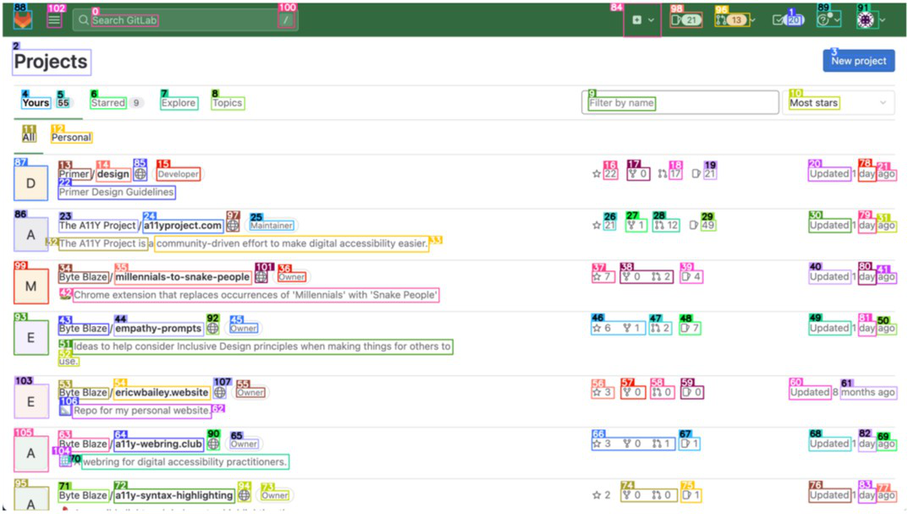
图 5.3：OMNIPARSER 应用检测模型解析屏幕上可交互的区域，并使用字幕模型提取检测元素的函数语义，用于在传递给生成式模型生成动作之前对图像进行注释。
结合文本和图像表示的混合方法也在兴起，提供两种格式的好处。例如，实现可能包含从 DOM 提取基于文本的信息并将其叠加在截图上的逻辑以提供视觉上下文，根据任务需求在文本和图像表示之间选择，或使用可以同时处理文本和图像的多模态模型。这种方法可以提供更全面的界面表示，捕获生成准确动作序列所需的结构信息和视觉上下文。
文本、图像和混合表示之间的选择涉及精度、成本和通用性之间的根本权衡。基于文本的表示提供高效的 Token 使用和通过 CSS 选择器的精确元素定位，但缺少人类与界面交互时所依赖的视觉上下文。基于图像的表示捕获完整的视觉信息，适用于任何界面类型，但消耗显著更多的 Token 且需要多模态模型。混合方法结合两种格式——我们的 ComputerUseAgent 实现通过 get_state() 中的 format 参数支持这一点，可以根据任务需求返回纯文本、纯视觉或混合表示。
表 5.1 总结了计算机使用智能体不同界面表示方法之间的关键权衡。
表 5.1：计算机使用智能体界面表示策略的比较
| 策略 | 关键优势 | 关键局限 | 最佳用例 |
|---|---|---|---|
| 基于文本（DOM/HTML） | 高效的 Token 使用；通过 CSS 选择器精确元素定位；快速处理 | 缺少视觉上下文；对没有文本 API 的应用受限 | 具有结构化 DOM 的 Web 应用；可预测的界面 |
| 基于图像（截图） | 捕获视觉布局；适用于任何界面类型；处理动态内容 | 高 Token 成本；需要多模态模型；无直接元素选择器 | 桌面应用；视觉复杂的界面；没有 API 的应用 |
| 混合（文本 + 图像） | 结合精度与上下文；最优决策；丰富的多模态输入 | 更高的计算成本；实现复杂 | 生产 Web 智能体；需要视觉理解的任务（推荐） |
动作序列规划好之后，计算机使用智能体必须通过动作执行器在目标界面上执行这些动作。此组件负责将高层动作转化为低层界面交互、管理时序和同步，并处理错误情况和意外界面状态。例如，在 Web 应用中，动作执行器可以模拟鼠标点击、键盘输入或表单提交以与界面交互。在桌面应用中，它可以使用操作系统特定的自动化工具控制 UI 元素或模拟用户输入。动作执行器通常是界面表示组件的自动化工具；也就是说，用于推导界面状态的同一工具被用于在界面上执行动作。
动作执行的常用工具包括 Playwright 等浏览器自动化框架和 PyAutoGUI 等平台自动化库，后者支持跨 Windows、macOS 和 Linux 平台模拟与桌面应用的用户交互。
Playwright 是微软开发的开源自动化库，允许开发者程序化控制 Web 浏览器。它提供高层 API 与 Chromium、Firefox 和 WebKit 浏览器交互，使其适用于网页抓取、自动化测试和构建计算机使用智能体。
Playwright 的特性包括：
既然我们理解了概念基础，让我们一步步构建 ComputerUseAgent。我们不是从零创建一个全新的智能体架构，而是做出一个关键的设计决策，利用我们在第 4 章构建的稳健基础。
我们的实现专注于使用 Playwright 的 Web 浏览器自动化，但我们开发的架构模式同样适用于桌面应用（使用 PyAutoGUI 或平台特定的无障碍 API）和移动界面（使用 Appium 或类似框架）。关键抽象是界面客户端——将浏览器客户端换成桌面自动化客户端，同样的智能体架构就可以处理不同的界面类型。
我们不是从零构建自定义解决方案，而是扩展我们的基础 Agent 类来与界面交互。关键洞见是将界面动作——点击、输入、导航——视为智能体可以使用的工具。我们的基础智能体已经提供了执行循环、工具调用机制和上下文管理，用于界面自动化。
我们的 ComputerUseAgent 继承基础 Agent 类，并添加三个组件：用于浏览器自动化的界面客户端、表示界面动作的专门工具，以及捕获动作结果的增强观察能力。当任务到来时，智能体使用模型选择和执行工具，就像第 4 章中基础智能体使用函数一样。
代码清单 5.2：ComputerUseAgent 类架构
class ComputerUseAgent(Agent):
def __init__(
self,
interface_client,
model_client,
use_screenshots=True,
max_actions=10,
**kwargs
):
# Create specialized web automation tools
playwright_tools = create_playwright_tools(
interface_client
)
# Inherit proven agent patterns
# - tool calling, context management, streaming
super().__init__(
model_client=model_client,
tools=playwright_tools, # Our action space
max_iterations=max_actions,
**kwargs
)
# Manage browser interface internally
self.interface_client = interface_client
self.use_screenshots = use_screenshots
这种方法给我们带来关键好处：基础智能体的流式传输能力与我们的新工具配合工作，错误处理和取消机制扩展到浏览器自动化，上下文管理维护带工具结果的对话历史。
我们的计算机使用智能体的功能以工具为中心。每个工具代表智能体可以在 Web 界面上采取的特定动作，从导航到 URL 到点击按钮和输入文本。这些工具定义了我们的智能体进行 Web 交互的动作空间。
代码清单 5.3：创建 Playwright 工具套件
def create_playwright_tools(interface_client):
"""Create specialized tools for web interface interaction."""
return [
NavigateTool(interface_client),
ClickTool(interface_client),
TypeTool(interface_client),
SelectTool(interface_client),
PressTool(interface_client),
HoverTool(interface_client),
ScrollTool(interface_client),
ObservePageTool(interface_client),
]
每个工具包装一个特定的 Playwright 操作。实现将每个工具定义为带适当参数模式的 BaseTool 子类。例如，NavigateTool 需要 URL 参数，ClickTool 需要 CSS 选择器，TypeTool 需要选择器和要输入的文本。这些工具定义了我们的智能体进行 Web 交互的动作空间。
这是计算机使用智能体与传统函数调用智能体的根本区别所在。当我们的天气工具返回"sunny, 75°F"时，那是完整的信息。但当我们的智能体点击一个按钮时，我们需要观察发生了什么。新页面加载了吗？表单出现了吗？错误消息显示了吗？
为了实现这一点，我们可以添加一个特定的 observe_page 工具，LLM 可以调用它来捕获当前页面状态的文本结构和视觉外观。
FunctionTool(
func=lambda: interface_client.get_state(),
name="observe_page",
description="Get current page state and content",
)
当 LLM 调用 observe_page 工具时，我们的实现拦截结果并用视觉上下文增强它。这种模式允许智能体接收组合结构化 DOM 数据和截图的多模态信息，以实现更丰富的推理。
代码清单 5.4：拦截 observe_page 结果以添加视觉上下文
async def run_stream(self, task, cancellation_token=None, verbose=False):
# Use base Agent's proven execution loop
async for item in super().run_stream(
task,
cancellation_token,
verbose):
yield item
# Intercept observe_page tool results to enhance with screenshots
if isinstance(item, ToolMessage) and item.tool_name == "observe_page":
if self.use_screenshots:
# Capture current page screenshot
state = await self.interface_client.get_state("hybrid")
if state.screenshot:
# Add screenshot to agent's context for LLM reasoning
screenshot_msg = MultiModalMessage(
content="Page observation",
source=self.name,
role="user",
mime_type="image/png",
data=state.screenshot
)
self.context.add_message(screenshot_msg)
yield screenshot_msg # Also stream for user feedback
这使我们的智能体能够处理文本和视觉信息。当 use_screenshots=True 时，智能体同时接收 DOM 结构和截图数据，使其能够理解仅靠文本难以表达的布局、视觉线索和界面状态。
我们的界面客户端将原始网页数据转换为 LLM 可以有效处理的格式。它支持三种表示模式，每种都针对不同场景和计算约束进行了优化。
代码清单 5.5：界面表示模式
async def get_state(self, mode="hybrid"):
"""Get current interface state in specified format."""
if mode == "text":
return InterfaceState(
content=await self.page.content(),
interactive_elements=await self._get_interactive_elements(),
screenshot=None
)
elif mode == "visual":
return InterfaceState(
content="",
interactive_elements=[],
screenshot=await self.page.screenshot()
)
else: # hybrid mode
return InterfaceState(
content=await self.page.content(),
interactive_elements=await self._get_interactive_elements(),
screenshot=await self.page.screenshot()
)
三种模式决定捕获什么数据。使用 mode="text" 时，智能体接收 HTML 内容和带 CSS 选择器的交互元素列表，但没有截图。这对 Token 使用高效，但缺少视觉上下文。使用 mode="visual" 时，只捕获截图，需要多模态模型处理图像。mode="hybrid"（推荐）结合两种方法，提供用于通过 CSS 选择器精确元素定位的结构化数据，以及用于理解复杂布局和视觉关系的视觉上下文。我们的 DOM 过滤专注于智能体可以有意义交互的交互元素，在保持基本信息的同时减少 Token 使用。
所有组件就位后，让我们看看它们在完整任务执行中如何协同工作。核心执行循环与我们的基础智能体保持不变，但现在在 Web 界面动作空间上运行。
代码清单 5.6：完整的 ComputerUseAgent 执行流程
import asyncio
from picoagents.agents import ComputerUseAgent
from picoagents.llm import OpenAIChatCompletionClient
from picoagents.agents import PlaywrightWebClient
async def main():
# Create agent with multimodal reasoning capabilities
computer_agent = ComputerUseAgent(
interface_client=PlaywrightWebClient(headless=False),
model_client=OpenAIChatCompletionClient(model="gpt-4.1-mini"),
use_screenshots=True, # Enable visual reasoning
max_actions=10
)
try:
# Task requires navigation, observation, and information extraction
task = "What is the latest AI news on techcrunch.com?"
async for event in computer_agent.run_stream(task):
print(event)
finally:
await computer_agent.close() # Clean up browser resources
if __name__ == "__main__":
asyncio.run(main())
当你运行此代码时，智能体将打开浏览器窗口，导航到 TechCrunch，观察页面结构，提取相关标题，并返回最新 AI 新闻的摘要。
执行流程展示了我们的关键架构原则的实际运作。智能体接收任务，并使用其继承的工具调用能力将其分解为可操作的步骤。每次工具调用都可能改变界面状态，因此观察变得至关重要。增强的观察循环既提供精确动作所需的结构化数据，也提供智能推理所需的视觉上下文。
计算机使用智能体管理真实的浏览器进程和网络连接，因此适当的资源清理至关重要。我们的实现包含多层保护，防止资源泄漏并在出现问题时优雅降级。
代码清单 5.7：健壮的资源管理
class ComputerUseAgent(Agent):
async def close(self) -> None:
"""Ensure browser cleanup on agent shutdown."""
if hasattr(self, 'is_initialized') and self.is_initialized:
await self.interface_client.close()
self.is_initialized = False
async def run_stream(
self,
task,
cancellation_token=None,
verbose=False):
# Initialize browser on first use
if not self.is_initialized:
await self.interface_client.initialize()
self.is_initialized = True
try:
async for item in super().run_stream(
task,
cancellation_token,
verbose):
yield item
except Exception as e:
# Log error but don't crash on screenshot failures
if "screenshot" not in str(e).lower():
raise # Re-raise non-screenshot errors
错误处理策略对截图捕获特别重要。虽然视觉上下文增强推理，但在不可用时不应破坏任务执行。我们的实现在截图捕获失败时优雅降级为纯文本模式，确保跨不同环境和网络条件的健壮运行。
虽然计算机使用智能体为自动化复杂任务提供了强大的能力，但它们也面临几个重大挑战。本节探讨开发者和研究者必须解决的关键问题，以创建有效且可靠的计算机使用智能体。图 5.4 展示了这些挑战的相互关联性及其对开发和部署的影响。
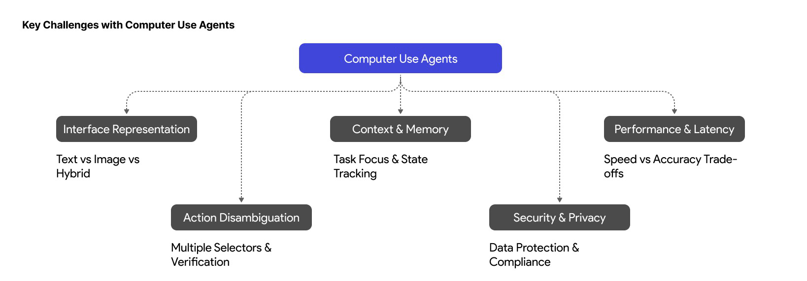
图 5.4：实现计算机使用智能体的关键挑战。该图展示了五大障碍：界面表示（平衡细节与效率）、上下文与记忆管理（保持任务相关性）、动作消歧（解决模糊目标）、安全与隐私（保护敏感数据）和延迟（平衡速度与准确性）。这些相互关联的挑战凸显了为现实应用开发有效可靠计算机使用智能体的复杂性。
开发计算机使用智能体的主要挑战之一是找到为 AI 模型表示和接地界面状态的最佳方式。这对智能体有效理解和交互界面至关重要。
基于文本的表示，如 Web 界面的文档对象模型（Document Object Model，DOM），通常包含大量噪声或无关数据，这可能使 AI 模型困惑。这些表示也难以有效捕获视觉关系和空间布局。此外，JavaScript 生成的动态内容和频繁的界面更新对维护准确的表示构成挑战。
基于图像的表示虽然能更全面地捕获视觉信息，但也有自己的一系列挑战。处理图像比文本需要显著更多的计算资源，可能增加延迟并降低响应性。重要的文本细节，如确切的按钮标签或输入字段占位符，可能更难从图像中提取。此外，屏幕尺寸、分辨率和纵横比的变化可能使跨不同设备解读基于图像的表示变得复杂。
为了应对这些挑战，研究者正在探索创新方法，如结合文本和基于图像方法的混合表示，以利用两者的优势。标记集提示（Abuelsaad et al. 2024）等高级接地技术用锚点标记丰富表示，增强任务性能并减少歧义。此外，Ferret-UI（You et al. 2024）和 UI-TARS（Yujia Lu et al. 2025）等专门模型正专为界面理解而设计，UI-TARS 通过在大规模 GUI 截图数据集上训练并实现 System-2 推理进行深思熟虑的多步决策，展示了显著改进。
计算机使用智能体必须保持对用户上下文的全面理解，以提供相关且有用的协助。这涉及在多次交互和任务中学习和记住个体用户偏好、维护先前动作及其结果的记录、理解应用的当前状态，以及管理跨多个应用的任务所涉及的跨界面和环境的上下文。
应对这些挑战需要复杂的记忆管理和上下文建模技术。潜在的解决方案包括实现可以存储和检索相关过去经验的情景记忆系统、开发将丰富的上下文信息编码为紧凑表示的方法，以及创建捕获各种应用与任务之间关系的跨应用知识图谱。
在许多场景中，计算机使用智能体可能遇到多个潜在有效的动作目标来完成一项任务。开发健壮的消歧逻辑对于确保智能体做出适当选择至关重要。这涉及在存在多个可能性时确定哪个动作或元素与当前任务最相关、开发处理模糊情况的策略，以及平衡自主性与用户输入的需求。
应对消歧挑战的新兴模式包括：训练专门模型基于上下文因素对选项进行排序和优先级划分；开发直观的方式让用户提供反馈并引导智能体的决策过程；以及实现让智能体评估自己决策信心并在不确定性高时寻求帮助的机制。UI-TARS 等近期工作展示了使用反思性在线轨迹的迭代训练如何帮助模型从自己的交互历史中学习，随时间改进决策。
随着计算机使用智能体与各种应用交互并处理敏感用户数据，确保安全和隐私变得至关重要。这一领域的关键挑战包括：保护自动化任务期间访问的用户信息；跨多个应用安全管理访问凭据和权限；确保符合相关数据保护法规和应用特定的服务条款；以及向用户提供关于智能体可以访问哪些数据以及如何使用这些数据的清晰信息。
应对这些关切的潜在方法包括：对智能体处理的所有敏感数据实施健壮加密；开发让用户精确控制智能体可以访问哪些信息和能力的系统；以及创建智能体动作的详细日志以支持透明度和促进合规检查。
计算机使用智能体面临来自延迟和成本管理的重大用户体验挑战。复杂任务通常需要与 AI 模型多次交互，引入累积延迟和复合成本。保持流畅的用户体验需要处理智能体动作中的延迟、管理界面元素在处理期间变化或超时的情况，以及智能地决定何时请求用户反馈（例如，请求登录凭据或在相似选项之间消歧）以避免不必要的延迟或错误。
成本管理在生产部署中值得特别关注。与传统应用成本线性扩展不同，智能体的 Token 消耗可能螺旋上升，因为系统每个任务进行多次 LLM 调用、捕获和处理截图，并在会话之间维护对话上下文。生产团队应将成本视为基础设施，实施每个会话的 Token 预算，监控每任务成本指标，对常规操作使用较小模型，同时为复杂推理步骤保留较大模型。截图捕获代表显著的 Token 成本——考虑仅在必要时捕获，或对直接的工作流使用纯文本表示。
为了缓解延迟挑战，研究者和开发者正在探索几种策略。这些包括创建专门为界面理解和动作预测调优的更小、更快的模型，如为 GUI 交互优化的多模态模型。其他方法涉及实施预测和预取可能的下一个动作的技术、设计在后台继续处理的同时对智能体动作提供即时反馈的界面，以及在可能的情况下构建允许非阻塞操作和并行处理的智能体工作流。
确保跨多样化界面和场景的一致且准确的性能，仍然是计算机使用智能体的重大挑战。这包括适应界面变化、更新和意外元素（如弹窗或覆盖层）、实施健壮的错误处理和恢复机制以优雅管理意外状态或失败，以及跨各种浏览器、操作系统和设备类型保持统一行为。
应对这些挑战需要多方位的方法，包括开发可以随时间学习和适应界面变化的智能体、创建可以处理跨平台界面结构变化的灵活中间表示，以及设计可以在广泛场景和边缘情况中评估智能体性能的自动化测试系统。通过应对这些挑战，研究者和开发者可以努力创建更健壮、可靠和有效的计算机使用智能体，无缝地与广泛的应用和平台交互。
在生产环境中部署计算机使用智能体需要仔细关注资源管理、安全和性能。本节概述构建可靠、生产就绪系统的实际考虑。
计算机使用智能体会产生消耗大量内存的浏览器进程，必须显式关闭——Python 垃圾回收不会自动终止它们。生产部署应实施超时机制以防止失控的智能体、监控每个会话的内存使用，并使用容器化来强制资源限制。对于并发会话，跟踪活跃智能体并强制执行清理策略以防止资源耗尽。
对于生产部署，启用无头模式（在 PlaywrightWebClient 中设置 headless=True）以减少资源开销，仅在决策需要时捕获截图，并对可预测的工作流使用显式规划以最小化 LLM 调用。
计算机使用智能体的安全考虑超越了典型的应用安全。这些智能体访问和交互潜在敏感的界面、处理用户凭据，并捕获可能包含私人信息的截图。近期研究揭示，商业 LLM 智能体已经容易受到简单但危险的攻击（Li et al. 2024），提示词注入攻击代表特别关键的威胁向量。提示词注入攻击（Wang et al. 2025）发生在嵌入网页 HTML 或渲染内容中的恶意指令操纵智能体行为时。
关键安全威胁包括：凭据暴露——处理身份验证令牌或 Cookie 的智能体可能被利用来跨连接系统冒充用户；供应链风险——第三方浏览器扩展或插件可能劫持活跃会话或窃取数据；检测挑战——EDR 和 DLP 等传统安全工具难以区分合法的人类行为和潜在恶意的智能体行为。
关键安全实践包括尊重 robots.txt 和网站服务条款。速率限制防止压垮目标服务器，并降低 IP 封禁或 CAPTCHA 挑战的风险。在隔离环境中沙箱化智能体限制了智能体被攻破或行为失常时的爆炸半径。数据隐私措施必须确保截图和 DOM 捕获被过滤，避免捕获和记录密码、信用卡或个人数据等敏感信息。
实现方法包括：存储前过滤捕获数据以移除敏感字段；实施跟踪访问了哪些界面的审计日志而不存储完整内容；使用具有最小必要权限的短期凭据；定期审查自动化行为是否符合目标网站政策。考虑对敏感动作要求用户确认、每个会话隔离浏览器实例，以及部署专为监控智能体安全威胁设计的浏览器检测与响应（BDR）工具。
本章涵盖：
在第 2 章中，我们探索了多智能体编排模式的分类法——从显式工作流控制到涌现式自主行为。我们了解到，工作流模式位于编排谱系的显式控制一侧，提供开发者定义的执行路径和可预测的行为。事实上，如果你使用过并喜爱 n8n（n8n GmbH 2024）、Flowise（FlowiseAI 2024）等拖拽式 AI 工具——在这些工具中，组件被可视地组装为步骤来解决问题（例如，为 YouTube 视频生成创意等）——这就是这些系统的底层构建方式！
在本章中，我们从头实现工作流模式，演示如何构建利用计算图的确定性、可组合系统。与我们在第 7 章将探索的自主模式不同，工作流提供对执行流的完全控制，同时通过类型安全、流式可观测性和健壮的错误处理实现高级能力。
在深入实现细节之前，先看看我们最终要构建的完整开发者体验。此示例创建一个简单的数学流水线，将一个数字翻倍，然后对结果加十（例如，3 -> 6 -> 16）。请注意，此工作流不包含 AI 模型或智能体——它是纯粹的确定性计算。这阐明了一个重要观点：工作流提供对执行流的底层控制，步骤可以是任何计算（数学运算、数据转换、API 调用或 AI 智能体）。本章稍后，我们将展示如何将智能体包装为工作流步骤，但基本模式保持不变。
我们将分两部分构建此示例：首先定义构建块，然后组合和执行它们。
代码清单 6.1：工作流构建块：类型、函数和步骤
from picoagents.workflow import (
Workflow, WorkflowRunner, FunctionStep)
from picoagents.workflow.core import (
WorkflowMetadata, StepMetadata, Context)
from pydantic import BaseModel
# Define data types for type-safe contracts
class NumberInput(BaseModel):
value: int
class NumberOutput(BaseModel):
result: int
# Define step functions with typed signatures
async def double_number(input_data: NumberInput,
context: Context) -> NumberOutput:
return NumberOutput(result=input_data.value * 2)
async def add_ten(input_data: NumberOutput,
context: Context) -> NumberOutput:
return NumberOutput(result=input_data.result + 10)
# Wrap functions into workflow steps
double_step = FunctionStep(
step_id="double", metadata=StepMetadata(name="Double Number"),
input_type=NumberInput, output_type=NumberOutput,
func=double_number
)
add_ten_step = FunctionStep(
step_id="add_ten", metadata=StepMetadata(name="Add Ten"),
input_type=NumberOutput, output_type=NumberOutput,
func=add_ten
)
这三个组件构成类型安全工作流的基础。Pydantic 模型（NumberInput、NumberOutput）定义契约，确保步骤之间流动的数据符合预期——工作流在执行开始前验证 double_step 的 NumberOutput 与 add_ten_step 的输入类型匹配。异步函数包含实际的转换逻辑，每个都接受类型化输入和共享上下文，同时返回类型化输出。FunctionStep 将这些函数包装为工作流可以管理的可执行节点，同时处理同步和异步函数，并提供灵活的结果处理（字典、Pydantic 模型或简单值都可以）。
代码清单 6.2：带流式传输的工作流组合与执行
# Compose steps into a workflow using fluent chaining
workflow = (Workflow(metadata=WorkflowMetadata(
name="Simple Math Pipeline"))
.chain(double_step, add_ten_step))
# Execute with streaming observability
runner = WorkflowRunner()
async for event in runner.run_stream(workflow, {"value": 3}):
print(event) # Real-time events show execution progress
当你运行此示例时，你将看到工作流按顺序执行每个步骤，具有完整的类型安全和实时可观测性。工作流自动处理：
Workflow 本质上是一个计算图（computational graph）——一个容器，持有 Steps（表示计算单元的节点）和 Edges（定义步骤之间转移和条件的连接）。这种基于图的方法实现了几个强大的能力：
让我们一步步实现每个组件，朝着完整系统迈进。
智能体节点
虽然我们对步骤/节点有通用的表达，但核心思想是步骤可以持有任何计算，包括它本身是我们在第 4 章实现中定义的智能体。事实上，本章稍后我们将展示如何构建封装此行为的 AgentStep 类。
步骤是工作流的基本构建块——每个步骤代表一个将输入数据转换为输出数据的单个计算单元。我们的步骤系统在保持干净开发者体验的同时，提供类型安全、验证和健壮的错误处理。
我们系统中的每个步骤都扩展自一个处理基础设施关注点的公共基类，同时允许特定实现专注于其独特逻辑。首先，我们定义每个步骤必须实现的基本接口：
代码清单 6.3：带类型安全的核心步骤接口
# ... imports
class BaseStep(ABC, Generic[InputType, OutputType]):
def __init__(self, step_id: str, metadata: StepMetadata,
input_type: Type[InputType], output_type: Type[OutputType]):
self.step_id = step_id
self.metadata = metadata
self.input_type = input_type
self.output_type = output_type
@abstractmethod
async def execute(
self,
input_data: InputType,
context: Context
) -> OutputType:
pass
此接口定义了契约——每个步骤将类型化输入转换为类型化输出，并可访问工作流上下文。泛型确保编译时类型检查和运行时验证。
步骤还需要跟踪其执行状态以实现可观测性和错误处理：
代码清单 6.4：步骤状态跟踪与生命周期管理
class StepStatus(str, Enum):
PENDING = "pending"
RUNNING = "running"
COMPLETED = "completed"
FAILED = "failed"
class StepMetadata(BaseModel):
name: str
max_retries: int = 0
timeout_seconds: Optional[int] = None
# Inside BaseStep.__init__:
self._status = StepStatus.PENDING
self._start_time: Optional[datetime] = None
self._error: Optional[str] = None
状态跟踪支持实时监控，并为调试和优化提供详细的执行历史。
run() 方法处理完整的执行生命周期，包括验证、重试和错误处理：
代码清单 6.5：带错误处理的步骤执行
async def run(
self,
input_data: Dict[str, Any],
context: Dict[str, Any]
) -> Dict[str, Any]:
self._status = StepStatus.RUNNING
self._start_time = datetime.now()
for retry_count in range(self.metadata.max_retries + 1):
try:
# Validate input and create typed context
validated_input = self.input_type(**input_data)
typed_context = \
Context.from_state_ref(context.get('workflow_state', {}))
# Execute with optional timeout
output = await self.execute(validated_input, typed_context)
self._status = StepStatus.COMPLETED
return output.model_dump()
except Exception as e:
# Handle retries and failures...
这种方法处理输入验证、上下文准备、超时管理和重试逻辑，同时维护详细的执行跟踪。
现在让我们实现一个展示 BaseStep 模式的具体步骤。FunctionStep 包装 Python 函数，使现有代码可以轻松转换为工作流步骤：
代码清单 6.6：FunctionStep 类实现
class FunctionStep(BaseStep[InputType, OutputType]):
def __init__(self, step_id: str, metadata: StepMetadata,
input_type: Type[InputType], output_type: Type[OutputType],
func: Callable[..., Any]):
super().__init__(step_id, metadata, input_type, output_type)
self.func = func
async def execute(
self,
input_data: InputType,
context: Context
) -> OutputType:
# Handle both sync and async functions
if asyncio.iscoroutinefunction(self.func):
result = await self.func(input_data, context)
else:
result = self.func(input_data, context)
# Flexible result handling
if isinstance(result, dict):
return self.output_type(**result)
elif hasattr(result, 'dict'):
return result # Already a Pydantic model
else:
return self.output_type(result=result) # Wrap simple values
关键洞见是灵活的结果处理——函数可以返回字典、Pydantic 模型或简单值，FunctionStep 相应地进行适配。这使得无需修改即可轻松包装现有函数。
使用 FunctionStep 很直接：
代码清单 6.7：FunctionStep 使用示例
def multiply_by_two(input_data: NumberInput, context: Context) -> NumberOutput:
return NumberOutput(result=input_data.value * 2)
step = FunctionStep(
step_id="multiply", metadata=StepMetadata(name="Multiply by Two"),
input_type=NumberInput, output_type=NumberOutput, func=multiply_by_two
)
边定义数据如何在步骤之间流动，以及在什么条件下发生转移。我们的边系统支持从简单的顺序处理到复杂的条件逻辑和并行执行模式。
一条边代表两个步骤之间的连接——产生输出的 from_step 和将其作为输入消费的 to_step。基本边结构处理所有连接都活跃的常见情况：
代码清单 6.8：基本边结构和简单工作流连接
from typing import Any, Dict, Optional
from pydantic import BaseModel, Field
import uuid
class EdgeCondition(BaseModel):
"""Defines conditions for workflow edges."""
type: str = Field(default="always", description="Type of condition")
expression: Optional[str] = None
field: Optional[str] = None
value: Optional[Any] = None
operator: Optional[str] = None
class Edge(BaseModel):
"""Represents a connection between workflow steps."""
id: str = Field(default_factory=lambda: str(uuid.uuid4()))
from_step: str = Field(description="Source step ID")
to_step: str = Field(description="Target step ID")
condition: EdgeCondition = Field(default_factory=lambda: EdgeCondition())
# Simple sequential workflow: A -> B -> C
workflow.add_edge("step_a", "step_b") # Always condition (default)
workflow.add_edge("step_b", "step_c") # Always condition (default)
这种简单方法处理最常见的工作流模式：顺序处理，每个步骤的输出成为下一步骤的输入。
边的真正威力在我们添加条件逻辑时显现。条件边使工作流能够基于步骤输出或共享工作流状态做出动态路由决策：
代码清单 6.9：基于步骤输出的条件路由
# Output-based condition: Route based on step results
workflow.add_edge("validate_data", "process_data", condition={
"type": "output_based", "field": "is_valid",
"operator": "==", "value": True
})
workflow.add_edge("validate_data", "handle_error", condition={
"type": "output_based", "field": "is_valid",
"operator": "==", "value": False
})
这些条件检查验证步骤输出中的 is_valid 字段并相应路由。但系统如何在运行时实际评估这些条件？
当步骤完成时，工作流运行器查看其输出，找到相关字段，并决定激活哪些后续步骤。这意味着要处理字段可能缺失、值可能与预期类型不同或比较可能失败的情况。以下是系统如何评估这些条件：
代码清单 6.10：边条件评估逻辑
def _evaluate_edge_condition(
self, edge: Edge, execution: WorkflowExecution) -> bool:
condition = edge.condition
if condition.type == "always":
return True
if condition.type == "output_based":
# Get output from the source step
from_step_exec = execution.step_executions.get(edge.from_step)
if not from_step_exec or not from_step_exec.output_data:
return False
# Extract field value and compare
field_value = from_step_exec.output_data.get(condition.field)
return self._compare_values(field_value, \
condition.operator, condition.value)
if condition.type == "state_based":
# Check workflow shared state
field_value = execution.state.get(condition.field)
return self._compare_values(field_value, \
condition.operator, condition.value)
return True # Default for unsupported conditions
def _compare_values(self, left: Any, operator: str, right: Any) -> bool:
if operator == "==": return left == right
elif operator == "!=": return left != right
elif operator == ">=": return left >= right
# ... other operators
有了这种条件评估逻辑，工作流就可以在运行时做出真正的决策。例如，数据处理工作流可以检查质量分数，将高质量数据路由到快速处理，同时将有问题的数据发送通过额外的验证步骤。或者审批工作流可以检查用户角色，自动将请求路由通过不同的审批链。
操作符系统支持常见比较（==、>=、in），因此你可以构建这些决策而无需编写自定义评估代码。产生这种条件输出的步骤可能看起来像：
代码清单 6.11：产生条件输出的步骤
class ValidationOutput(BaseModel):
is_valid: bool
error_message: Optional[str] = None
async def validate_input(input_data: DataInput) -> ValidationOutput:
if input_data.value < 0:
return ValidationOutput(is_valid=False,
error_message="Negative values not allowed")
return ValidationOutput(is_valid=True)
基于输出的条件检查前一步骤的结果以确定路由。这支持验证、错误处理和质量检查等模式。
基于状态的条件检查工作流的共享状态以确定路由。这支持配置驱动的行为和动态的工作流适应。
边通过两种不同的模式实现并行执行，我们之前构建的就绪算法可以自动区分它们：
代码清单 6.12：具有不同执行逻辑的扇出和扇入模式
# Fan-out pattern: One step feeds multiple parallel steps
workflow.add_edge("prepare_data", "process_batch_a")
workflow.add_edge("prepare_data", "process_batch_b")
workflow.add_edge("prepare_data", "process_batch_c")
# Fan-in pattern: Multiple steps feed into one step
workflow.add_edge("process_batch_a", "combine_results")
workflow.add_edge("process_batch_b", "combine_results")
workflow.add_edge("process_batch_c", "combine_results")
就绪算法如何区分这些模式：
代码清单 6.13：就绪算法如何检测并行模式
# From our get_ready_steps() algorithm
incoming_edges = [edge for edge in self.edges if edge.to_step == step_id]
is_fan_in = all(edge.condition.type == "always" for edge in incoming_edges)
if is_fan_in:
# Fan-in (AND logic): ALL dependencies must complete
if all(execution.step_executions.get(dep_id, {}).status == "completed"
for dep_id in dependencies):
ready_steps.append(step_id)
else:
# Conditional (OR logic): ANY valid path enables execution
# Used for error handling, quality gates, approval workflows
这种区分实现了两种强大的执行模式：
扇出 -> 扇入（数据处理）：prepare_data 完成 -> 三个 process_batch_* 步骤同时启动 -> combine_results 等待全部三个完成。非常适合需要所有结果的并行数据处理。
条件路由（决策制定）：验证步骤产生成功/失败 -> 要么成功路径要么失败路径执行（不是两者）。非常适合错误处理和审批工作流。
同一个就绪算法无需特例即可处理两种模式——边条件决定行为。
Workflow 类充当持有步骤、边和元数据的容器，同时提供验证、依赖管理和执行规划能力。它将单个组件转化为一个有凝聚力的计算图。
本质上，工作流是步骤及其连接的容器：
代码清单 6.14：基本工作流结构与初始化
class WorkflowMetadata(BaseModel):
name: str
version: str = "1.0.0"
class Workflow:
def __init__(self, metadata: WorkflowMetadata):
self.metadata = metadata
self.steps: Dict[str, BaseStep] = {}
self.edges: List[Edge] = []
self.start_step_id: Optional[str] = None
此容器持有所有工作流组件。请注意，步骤和边可以使用标准方法添加，如 workflow.add_step(step) 和 workflow.add_edge(from_id, to_id)。然而，流式 API 提供更直观的开发者体验：
流式 API 支持方法链式调用，实现可读的工作流构建：
代码清单 6.15：工作流构建的流式 API
def add_step(self, step: BaseStep) -> 'Workflow':
self.steps[step.step_id] = step
return self # Enable chaining
def add_edge(self, from_step: str, to_step: str) -> 'Workflow':
edge = Edge(from_step=from_step, to_step=to_step)
self.edges.append(edge)
return self # Enable chaining
# Method chaining in action
workflow = (Workflow(metadata=WorkflowMetadata(name="Pipeline"))
.add_step(extract_step)
.add_step(transform_step)
.add_edge("extract", "transform")
.set_start_step("extract"))
流式模式通过将工作流构建表达为单个流畅的语句来提高可读性。每个方法返回 self，使链可以继续。
对于简单的顺序工作流，chain() 方法提供更简洁的方法：
代码清单 6.16：线性工作流的顺序链式调用
def chain(self, *steps: BaseStep) -> 'Workflow':
for i in range(len(steps) - 1):
self.add_edge(steps[i], steps[i + 1])
self.set_start_step(steps[0])
return self
# Simple sequential pipeline
workflow = (Workflow(metadata=WorkflowMetadata(name="Math Pipeline"))
.chain(double_step, add_ten_step, square_step))
这创建了一个线性流水线，每个步骤馈入下一个，自动将第一个步骤设置为开始，并按顺序连接所有步骤。
构建完成后，工作流需要验证和依赖跟踪。工作流使用我们之前定义的边连接跟踪依赖：
def get_step_dependencies(self, step_id: str) -> List[str]:
"""Get all steps that must complete before this step."""
return [edge.from_step for edge in self.edges if edge.to_step == step_id]
这个简单方法驱动我们探索的就绪算法——它确定步骤使用扇入逻辑（等待所有依赖）还是条件逻辑（等待任何有效路径）。
当一个步骤有多个输入时，确定它何时准备好运行变得棘手。它应该等待所有输入完成（如聚合并行进程的结果），还是可以在任何有效输入到达时继续（如处理成功或错误情况）？算法需要自动弄清楚这一点。
以下是算法实际确定步骤就绪状态的方式：
代码清单 6.17：带扇入与条件逻辑的步骤就绪算法
def get_ready_steps(self, execution: WorkflowExecution) -> List[str]:
ready_steps = []
for step_id in self.steps:
# Skip if already running, completed, or failed
step_exec = execution.step_executions.get(step_id)
if step_exec and step_exec.status.value in
["running", "completed", "failed"]:
continue
dependencies = self.get_step_dependencies(step_id)
if not dependencies:
# Start step - ready if it's the designated start
if step_id == self.start_step_id:
ready_steps.append(step_id)
else:
# Determine pattern: fan-in (AND) vs conditional (OR)
incoming_edges = [edge for edge in self.edges \
if edge.to_step == step_id]
is_fan_in = all(edge.condition.type == "always" \
for edge in incoming_edges)
if is_fan_in:
# Fan-in: ALL dependencies must complete
if all(execution.step_executions
.get(dep_id, {}).status == "completed"
for dep_id in dependencies):
ready_steps.append(step_id)
else:
# Conditional: ANY valid path enables execution
for edge in incoming_edges:
dep_exec = execution.step_executions.get(edge.from_step)
if (dep_exec and dep_exec.status == "completed" and
self._evaluate_edge_condition(edge, execution)):
ready_steps.append(step_id)
break
return ready_steps
这种就绪逻辑决定你的工作流是等待一切，还是机会主义地前进。报告工作流需要在生成报告之前完成所有数据收集步骤（扇入），但错误处理工作流应在成功或失败路径任一完成时立即继续（条件）。正确区分这一点使工作流既可预测又高效。
validate_workflow() 方法确保工作流完整性：
工作流通过 Context 类维护共享状态，使步骤能够协调：
代码清单 6.18：共享工作流状态的 Context 类
class Context:
def __init__(self, state_ref: Dict[str, Any]):
self._state = state_ref # Reference to workflow state
def get(self, key: str, default: Any = None) -> Any:
return self._state.get(key, default)
def set(self, key: str, value: Any) -> None:
self._state[key] = value
def update(self, updates: Dict[str, Any]) -> None:
self._state.update(updates)
@classmethod
def from_state_ref(cls, state_dict: Dict[str, Any]) -> 'Context':
return cls(state_dict)
# Usage in steps
def configure_batch_size(input_data:
ConfigInput, context: Context) -> ConfigOutput:
context.set("batch_size", input_data.size)
context.set("processing_mode", "parallel")
return ConfigOutput(configured=True)
def process_batch(input_data: DataInput,
context: Context) -> DataOutput:
batch_size = context.get("batch_size", 10) # Default to 10
mode = context.get("processing_mode", "sequential")
# Use configuration from previous step
通过 Context 的共享状态让步骤相互协调。早期的配置步骤可以设置批量大小，所有后续处理步骤使用该设置。或者步骤可以在工作时累积指标，最后的报告步骤收集所有内容。没有这种共享记忆，每个步骤都将是隔离的，工作流将需要外部数据库才能在步骤间传递信息。
Context 使用对工作流状态字典的引用，因此当一个步骤更新值时，所有其他步骤立即看到变化。
既然我们定义了步骤、边和工作流容器，我们需要一个执行引擎，将这个静态图规范转化为运行中的系统。可以把它想象成一条制造装配线：我们已经设计了工位（步骤）、传送带（边）和工厂布局（工作流），但现在需要控制系统来协调工人、管理流速并确保质量控制。
正确执行工作流需要同时解决几个复杂问题：依赖解析（哪些步骤就绪？）、并发执行（并行运行独立步骤）、状态管理（让数据贯穿流水线）、事件流（实时可见性）、错误恢复（优雅处理失败）和死锁检测（识别工作流何时卡住）。
WorkflowRunner 通过仔细的协调处理所有这些关注点：
代码清单 6.19：带资源控制的 WorkflowRunner 初始化
class WorkflowRunner:
def __init__(self, max_concurrent_steps: int = 5):
self.max_concurrent_steps = max_concurrent_steps
self._execution_semaphore = asyncio.Semaphore(max_concurrent_steps)
self._cancellation_tokens: Dict[str, CancellationToken] = {}
信号量控制并发执行，防止资源耗尽。取消令牌支持优雅关闭。运行器的核心是协调所有活动部分的执行循环。
依赖解析与死锁检测
第一个挑战是确定哪些步骤准备好运行，并检测工作流何时卡住：
代码清单 6.20：带死锁检测的依赖解析
async def _execute_workflow_stream(self, workflow, execution, initial_input):
completed_steps = set()
running_tasks = {}
while len(completed_steps) < len(workflow.steps):
# Get steps ready to run (dependency resolution)
ready_steps = workflow.get_ready_steps(execution)
ready_steps = [s for s in ready_steps
if s not in completed_steps and s not in running_tasks]
# Detect deadlock - no progress possible
if not ready_steps and not running_tasks:
remaining = set(workflow.steps.keys()) - completed_steps
if remaining:
raise RuntimeError(f"Workflow stuck: \
{remaining} cannot execute")
break
此逻辑确保步骤以正确顺序运行，同时防止无限等待。识别出就绪步骤后，运行器在尊重并发限制的同时启动任务：
代码清单 6.21：任务启动与完成处理
# Start ready steps (respecting concurrency limits)
for step_id in ready_steps:
if len(running_tasks) >= self.max_concurrent_steps:
break
step = workflow.steps[step_id]
input_data = self._prepare_step_input(step_id, workflow, execution)
task = asyncio.create_task(self._run_step(step, input_data))
running_tasks[step_id] = task
# Wait for any task to complete
done, _ = await asyncio.wait(running_tasks.values(),
return_when=asyncio.FIRST_COMPLETED)
# Process completed tasks and update workflow state
for task in done:
step_id = self._find_step_for_task(task, running_tasks)
result = await task
execution.state[f"{step_id}_output"] = result
completed_steps.add(step_id)
del running_tasks[step_id]
这种协调实现了我们之前讨论的并行执行模式。每个步骤从初始工作流输入或先前步骤输出接收输入：
代码清单 6.22：带状态传递的步骤输入准备
def _prepare_step_input(self, step_id: str, workflow: Workflow,
execution: WorkflowExecution,
initial_input: Dict[str, Any]):
step = workflow.steps[step_id]
dependencies = workflow.get_step_dependencies(step_id)
if not dependencies:
# Start step - use initial input
return initial_input
else:
# Use output from previous step (for simple chains)
# Or merge outputs for fan-in patterns
prev_step_id = dependencies[0]
prev_output = execution.state.get(f"{prev_step_id}_output", {})
return prev_output
这种传递机制使数据能够流经工作流流水线，每个步骤的输出成为下一步骤的输入。
在整个执行过程中，运行器发出结构化事件以实现实时可见性：
代码清单 6.23：工作流可观测性的事件流
# Workflow lifecycle events
yield WorkflowStartedEvent(timestamp=datetime.now(), workflow_id=workflow.id)
# Step execution events
yield StepStartedEvent(
timestamp=datetime.now(),
workflow_id=workflow.id,
step_id=step_id,
input_data=input_data
)
# On completion
yield StepCompletedEvent(
timestamp=datetime.now(),
workflow_id=workflow.id,
step_id=step_id,
output_data=result,
duration_seconds=duration
)
这些事件支持进度跟踪、调试、性能分析，并可以驱动实时 UI 更新。
执行开始前，运行器验证工作流结构和输入兼容性：
代码清单 6.24：工作流与输入验证
# Validate workflow structure
validation = workflow.validate_workflow()
if not validation.is_valid:
raise RuntimeError(f"Workflow validation failed: {validation.errors}")
# Validate input matches start step type
if workflow.start_step_id:
start_step = workflow.steps[workflow.start_step_id]
try:
start_step.input_type(**initial_input)
except Exception as e:
raise RuntimeError(f"Input doesn't match expected type: {e}")
这种前置验证尽早捕获错误，在昂贵的执行开始前提供清晰的反馈。
工作流系统通过前面章节介绍的相同序列化方法支持完整序列化。你可以在任何工作流实例上调用 dump_component() 和 load_component() 方法。
工作流序列化为带完整类型信息的 JSON 格式，支持团队间共享、Git 仓库中的版本控制、基于 UI 的可视化编辑器，以及处理流水线的运行时配置。
检查点使工作流能够保存进度并从失败点恢复。考虑一个带有昂贵步骤的数据处理工作流——从 API 获取数据、调用 LLM 进行分析、验证结果，并保存到数据库。如果验证步骤因速率限制而失败，从头重启意味着重复昂贵的 API 获取和 LLM 调用。我们如何保存进度并从离开的地方恢复？
要恢复工作流，我们需要三条信息：哪些步骤已经完成、这些步骤产生了什么输出（因为下游步骤依赖它们），以及当前的共享工作流状态。让我们将其捕获在 WorkflowCheckpoint 模型中：
class WorkflowCheckpoint(BaseModel):
checkpoint_id: str
execution: WorkflowExecution # Contains step_executions, state
completed_step_ids: List[str] # Quick lookup helper
pending_step_ids: List[str] # What's left to run
但如果工作流结构自保存检查点以来发生了变化——也许我们添加了新步骤或更改了类型——恢复可能产生错误结果。我们需要检测这一点。
解决方案：计算工作流结构（步骤、边和类型——但不包括名称或描述等元数据）的 SHA256 哈希，并将其与检查点一起存储。恢复时，将存储的哈希与当前工作流的哈希比较。哈希匹配意味着安全恢复；哈希不同意味着结构已更改，我们拒绝该检查点：
class WorkflowCheckpoint(BaseModel):
# ... fields above ...
workflow_structure_hash: str # Validates compatibility
现在修改工作流运行器，接受检查点配置和可选的恢复检查点：
async def run_stream(
workflow: Workflow,
initial_input: Dict[str, Any],
checkpoint: Optional[WorkflowCheckpoint] = None, # Resume point
checkpoint_config: Optional[CheckpointConfig] = None, # Save config
) -> AsyncGenerator[WorkflowEvent, None]:
当提供检查点时，验证其结构哈希与当前工作流匹配，然后提取执行状态。运行器识别已完成的步骤并在执行期间跳过它们：
if checkpoint:
# Validate structure hash
current_hash = workflow.compute_structure_hash()
if checkpoint.workflow_structure_hash != current_hash:
raise ValueError("Workflow structure changed")
# Use checkpoint's execution state
execution = checkpoint.execution
completed_steps = {
step_id for step_id, step_exec in execution.step_executions.items()
if step_exec.status == StepStatus.COMPLETED
}
else:
# Fresh execution
execution = WorkflowExecution(workflow_id=workflow.id, ...)
completed_steps = set()
在执行期间，每个步骤完成后，如果已配置，则创建并保存检查点：
# After step completes
if checkpoint_config and checkpoint_config.auto_save:
checkpoint = WorkflowCheckpoint.from_execution(
execution=execution,
workflow_structure_hash=workflow.compute_structure_hash(),
...
)
await checkpoint_config.store.save(checkpoint)
用户然后可以通过加载检查点并将其传递给运行器来恢复：
# Initial run with auto-save
store = FileCheckpointStore(base_path=Path("./checkpoints"))
config = CheckpointConfig(store=store, auto_save=True)
async for event in runner.run_stream(
workflow, {"text": "data.csv"}, checkpoint_config=config
):
pass # Saves checkpoints to disk
# Later: resume after failure
checkpoint = await store.load_latest(workflow.id)
async for event in runner.run_stream(
workflow, {"text": "data.csv"}, checkpoint=checkpoint
):
pass # Skips completed steps
我们应该把检查点保存在哪里？测试需要快速的内存存储。单机可以使用文件存储。分布式部署需要 S3 或数据库等共享存储。与其硬编码一种方法，不如构建一个抽象存储接口：
class CheckpointStore(ABC):
async def save(
self,
checkpoint: WorkflowCheckpoint
) -> None: ...
async def load(
self,
checkpoint_id: str
) -> Optional[WorkflowCheckpoint]: ...
async def load_latest(
self,
workflow_id: str
) -> Optional[WorkflowCheckpoint]: ...
此接口定义任何存储后端必须做的事情：保存检查点、按 ID 加载特定检查点，以及加载工作流的最新检查点。现在我们可以实现具体后端：
文件后端：将检查点保存为按工作流 ID 组织的 JSON 文件。人类可读、可与版本控制配合，且不需要额外基础设施。
内存后端：将检查点存储在字典中。快速但短暂——非常适合不想要文件系统副作用的测试。
你也可以为生产场景实现自定义后端：数据库（PostgreSQL、MongoDB）、云存储（S3、Azure Blob）或分布式协调系统（Redis、etcd）。每个后端只需实现这三个抽象方法。
检查点解锁了一种强大的部署模式：无状态工作流工作者。考虑这个问题：如果你将特定工作流分配给特定工作者（工作者亲和性），当工作者崩溃时会发生什么？工作流会卡住，直到该工作者重启。
更好的方法：将检查点存储在共享存储中（S3、数据库、Redis）。现在任何工作者都可以恢复任何工作流。当工作者崩溃时，另一个工作者只需加载最新检查点并继续。没有任何工作流绑定到特定机器。
这意味着你可以水平扩展：需要更高吞吐量？添加更多工作者。每个工作者从队列中获取工作，检查是否存在检查点，然后从该点恢复或全新开始。由于检查点跳过已完成的步骤，LLM 调用或 API 请求等昂贵操作绝不会重复执行。
该架构既容错（工作者是可丢弃的）又有弹性（根据负载扩展或缩减工作者）。工作流引擎变得无状态——所有状态都存在于检查点中，而不是工作者内存中。
可运行的代码：工作流实现
完整的工作流示例：
- 顺序工作流：workflows/sequential.py - 线性数据处理流水线
- 检查点示例：workflows/checkpoint_example.py - 自动保存、恢复和清理模式
- 通用工作流：workflows/general.py - 条件逻辑和并行执行模式
- 完整实现：src/picoagents/workflow/ - 完整的工作流引擎源代码
从零构建多智能体工作流揭示了显式控制模式所需的基础组件：
在第 7 章中，我们将探索自主模式，AI 模型驱动协调决策，以可预测性换取适应性。
本章涵盖：
在第 2 章中，我们探索了多智能体协调模式的分类法——从显式工作流控制到涌现式自主行为。我们了解到，编排模式存在于一个谱系上：工作流模式提供可预测的、开发者定义的执行路径，自主模式通过智能体推理和沟通实现运行时确定的协调。
在第 6 章中，我们探索了如何构建多智能体工作流。本章我们将聚焦于如何实现控制流由 AI 模型驱动的多智能体模式。
在深入实现细节之前，先看看我们最终要构建的开发者体验——仅需几行代码的完整编排系统。此示例演示了两个专门智能体（研究者和写作者）如何通过轮询协调协作，灵活的终止条件在达到最大消息数或写作者发出完成信号时停止对话。
首先，我们创建两个专门智能体——每个都有明确的职责和指令：
代码清单 7.1：创建用于协作的专门智能体
from picoagents import Agent
from picoagents.llm import OpenAIChatCompletionClient
# Create two specialized agents
researcher = Agent(
name="researcher",
instructions=(
"You research topics and provide "
"factual insights. Be concise."
),
model_client=OpenAIChatCompletionClient(
model="gpt-4.1-mini"
)
)
writer = Agent(
name="writer",
instructions=(
"You write engaging content. "
"If sufficient content exists, return "
"a summary and end with 'TERMINATE'."
),
model_client=OpenAIChatCompletionClient(
model="gpt-4.1-mini"
)
)
接下来，我们设置编排器，使用轮询轮流机制协调这些智能体。注意我们如何使用 | 操作符组合终止条件——当达到消息限制或写作者发出完成信号时，协作停止：
代码清单 7.2：配置带灵活终止的编排器
from picoagents.orchestration import RoundRobinOrchestrator
from picoagents.termination import (
MaxMessageTermination,
TextMentionTermination
)
orchestrator = RoundRobinOrchestrator(
agents=[researcher, writer],
termination=(
MaxMessageTermination(6) |
TextMentionTermination("TERMINATE")
)
)
最后，我们使用流式输出执行协作，实时观察对话：
代码清单 7.3：带流式传输运行多智能体协作
task = "Write a brief article about solar energy benefits"
async for message in orchestrator.run_stream(task):
print(message)
当你运行此示例时，你将看到实时显示每个智能体贡献的流式输出，以及关于协作的元数据。注意编排器如何跟踪哪个智能体在发言、维护对话流，并提供关于对话为何以及如何结束的清晰反馈：
代码清单 7.4：示例流式输出，展示智能体消息、角色指示器和编排元数据
🚀 Starting solar energy research collaboration...
👤 [USER]: Write a brief article about solar energy benefits
🔬 [RESEARCHER]: **The Benefits of Solar Energy**
Solar energy is a renewable and sustainable power source that harnesses ...
✍️ [WRITER]: **Summary: The Benefits of Solar Energy**
Solar energy presents numerous benefits, making it essential for addressing ....
TERMINATE
✅ Collaboration complete! Generated 3 messages
📊 Stop reason: Text mention found: 'TERMINATE'
⏱️ Duration: 17,427ms
注意编排器如何：
现在让我们一步步探索如何构建此系统及其他编排系统。
可运行的代码：自主编排
探索完整的自主编排实现：
- 轮询：orchestration/round-robin.py - 固定轮流协调
- AI 驱动：orchestration/ai-driven.py - 智能体智能选择
- 基于计划：orchestration/plan-based.py - 带动态规划的集中式编排器
- 核心实现：src/picoagents/orchestration/ - 完整的编排框架
每个编排模式，无论智能体如何被选择或协调，都遵循相同的基本编排器循环（orchestrator loop）。无论你是实现简单的轮询方法调度智能体（智能体以轮询方式轮流，直到满足某个终止条件）、AI 驱动的选择（AI 模型决定下一个发言的智能体），还是专门的 AI 模型基于某个任务制定计划并指挥智能体，核心架构保持一致：
select the next agent # 选择下一个智能体
prepare context for the agent # 为该智能体准备上下文
execute the agent with the prepared context # 用准备的上下文执行智能体
update shared state with the agent's response # 用智能体的响应更新共享状态
check termination conditions # 检查终止条件
# The core pattern that powers all orchestration
while not termination.is_met():
next_agent = select_next_agent() # Pattern-specific logic
context = prepare_context_for_agent() # Pattern-specific logic
result = await next_agent.run(context)
update_shared_state(result)
check_termination(result)
这个核心循环提供了几个关键好处：
此循环在所有模式之间提供一致性（使其更易于理解和维护）、可组合性（允许你通过切换编排器实现来混合不同模式）、可扩展性（新模式只需实现模式特定方法，同时继承健壮的基础设施），以及全面的可观测性（通用埋点适用于所有模式类型）。
有了这种基础理解，让我们实现支撑所有协调模式的基础编排器类，然后构建具体实现，从轮询编排和灵活的终止条件开始。
与第 4 章（4.2.2 节）的 BaseAgent 类类似，BaseOrchestrator 类（代码清单 7.5）处理流式传输、取消和状态管理的复杂性，同时让每个模式只专注于其特定的协调逻辑。
BaseOrchestrator 定义了所有编排模式必须遵循的契约。它初始化核心组件（智能体、终止条件和共享状态），并验证智能体名称唯一以防止协调冲突。
代码清单 7.5：BaseOrchestrator 抽象类定义
from abc import ABC, abstractmethod
from typing import List, Optional, Sequence
from ..agents import BaseAgent
from ..messages import Message
from .termination import BaseTermination
class BaseOrchestrator(ABC):
"""Abstract base class for all orchestration patterns."""
def __init__(
self,
agents: Sequence[BaseAgent],
termination: BaseTermination,
max_iterations: int = 50
):
if not agents:
raise ValueError(
"At least one agent is required"
)
self.agents = list(agents)
self.termination = termination
self.max_iterations = max_iterations
# Runtime state
self.shared_messages: List[Message] = []
self.iteration_count = 0
# Validate agent names are unique
names = [agent.name for agent in agents]
if len(names) != len(set(names)):
raise ValueError(
"Agent names must be unique"
)
构造函数建立每个编排器需要的三个核心组件：要协调的智能体列表、决定何时停止的终止条件，以及用于跟踪对话的共享状态管理。max_iterations 参数提供了一个安全后备，防止失控执行。
编排器的核心逻辑存在于两个方法中，它们遵循与我们用于智能体相同的模式。run_stream 方法提供消息和事件的实时流式传输，而 run 将一切收集到单个响应中，用于更简单的用例。
运行循环从设置执行上下文、规范化输入任务和准备流式输出开始：
代码清单 7.6：编排器运行循环的设置与初始化
async def run_stream(
self,
task: Union[str, UserMessage, List[Message]],
cancellation_token: Optional[CancellationToken] = None
) -> AsyncGenerator[
Union[
Message,
OrchestrationEvent,
OrchestrationResponse
],
None
]:
"""Execute orchestration with streaming output."""
self._reset_for_run()
self.start_time = time.time()
stop_message: Optional[StopMessage] = None
streamed_messages: List[Message] = []
try:
yield OrchestrationStartEvent(...)
# Normalize task to initial messages
initial_messages = (
self._normalize_task_to_messages(task)
)
self.shared_messages.extend(initial_messages)
# Stream initial messages to caller
for message in initial_messages:
yield message
streamed_messages.append(message)
# Check termination on initial messages
self.termination.check(initial_messages)
设置阶段处理几项关键职责。_reset_for_run() 调用清除先前执行的任何状态，确保每次编排全新开始。streamed_messages 列表跟踪我们已产出给调用方的所有消息——这对后续的终止检查变得重要。任务规范化处理三种输入格式：纯字符串（转换为 UserMessage）、UserMessage 对象（直接使用）或完整消息列表（用于继续对话）。我们在初始消息后立即检查终止，因为即使用户的输入也可能包含"DONE"或"TERMINATE"等停止关键词。
现在编排器进入其主协调循环。每次迭代选择一个智能体，用适当的上下文运行它，并处理结果。循环从选择下一个要执行的智能体开始：
代码清单 7.7：智能体选择与上下文准备
# Main orchestration loop
while self.iteration_count < self.max_iterations:
# Check for cancellation
if (
cancellation_token
and cancellation_token.is_cancelled()
):
raise asyncio.CancelledError()
# 1. Select next agent (pattern-specific)
next_agent = await self.select_next_agent()
# 2. Prepare context (pattern-specific)
context = await self.prepare_context_for_agent(
next_agent
)
select_next_agent() 和 prepare_context_for_agent() 方法是模式特定的——这是轮询与 AI 驱动或基于计划的编排的区别所在。轮询按顺序循环智能体，而 AI 驱动的编排使用 LLM 基于对话状态智能选择。
选择智能体并准备上下文后，编排器以流式支持执行智能体：
代码清单 7.8：带类型守卫的流式智能体执行
# 3. Execute agent with streaming
agent_messages = []
result: Optional[AgentResponse] = None
async for item in next_agent.run_stream(
context,cancellation_token):
# Type guard for Message objects
if (hasattr(item, "content")
and hasattr(item, "role")):
message_item = cast(Message, item)
agent_messages.append(message_item)
# Filter out UserMessages from streaming
if not isinstance(
message_item,
UserMessage
):
yield message_item
streamed_messages.append(
message_item
)
流式执行使用类型守卫安全地处理不同的项目类型。我们过滤掉 UserMessages，因为这些只是我们发送给智能体的上下文，不是新内容。只有助手消息被流式传输给调用方，提供对智能体响应的干净实时可见性，而不回显提示词。
智能体执行完成后，编排器更新共享状态并检查对话是否应继续：
代码清单 7.9：状态更新与终止检查
# 4. Update shared state (pattern-specific)
await self.update_shared_state(result)
# 5. Check termination with delta messages
new_streamed_messages = streamed_messages[
self._last_termination_check_count:
]
self._last_termination_check_count = len(
streamed_messages
)
stop_message = self.termination.check(
new_streamed_messages
)
if stop_message:
break
self.iteration_count += 1
状态管理阶段揭示了一个微妙但至关重要的模式：基于增量的终止检查。与其在每次迭代重复处理整个对话历史，我们用 _last_termination_check_count 跟踪位置，只将新消息传递给终止检查器。这比反复扫描数百条消息更高效，并允许终止条件聚焦于近期发展而非完整历史。模式特定的 update_shared_state() 方法正是支持不同编排策略的地方——轮询可能追加所有消息，而 AI 驱动的编排可能基于协调需求过滤或转换它们。
循环完成后（通过终止条件或最大迭代次数），编排器组装带有完整执行指标的最终响应：
代码清单 7.10：编排完成与结果组装
# Handle max iterations case
if (
self.iteration_count >= self.max_iterations
and stop_message is None
):
stop_message = StopMessage(
content=(
f"Maximum iterations reached "
f"({self.max_iterations})"
),
source="MaxIterations"
)
# Aggregate usage from all agent executions
elapsed_time = int(
(time.time() - self.start_time) * 1000
)
total_usage = Usage(duration_ms=elapsed_time)
for agent_usage in agent_usage_stats:
total_usage = total_usage + agent_usage
# Yield final OrchestrationResponse
yield OrchestrationResponse(
messages=self.shared_messages,
final_result=self._generate_final_result(),
usage=total_usage,
stop_message=stop_message,
pattern_metadata=self._get_pattern_metadata()
)
except asyncio.CancelledError:
# Handle cancellation gracefully
raise
完成阶段确保我们总是提供有意义的停止消息，即使循环通过最大迭代而非显式终止条件退出。用量聚合特别重要——每次智能体执行跟踪自己的 API 成本和计时，我们将其相加，以准确了解编排的总成本。_generate_final_result() 辅助函数向后搜索消息，找到最后的助手响应，提供简洁的摘要，而不是强迫调用方扫描完整的消息历史。这种丰富、完整响应的模式使编排结果自成一体、易于使用。
此实现为所有编排模式提供了基础，同时处理几个复杂关注点：
流式可观测性：调试多智能体系统时，你需要实时看到发生的事情。哪个智能体在运行？正在交换什么消息？对话在哪里卡住了？流式接口提供了这种可见性，使构建响应式 UI 和调试复杂交互成为可能。
优雅取消：多智能体对话可能需要几分钟才能完成。用户不可避免地需要取消它们——无论是提供了错误的提示词，还是智能体进入了无生产力的循环。干净的取消防止失控的 API 成本，并确保系统保持响应。
健壮的错误处理：在多智能体系统中，一个智能体的失败不应使整个编排崩溃。错误处理确保异常被捕获和记录，同时保留失败点之前的对话状态。
资源与性能跟踪：了解编排花费多长时间以及消耗多少 API 调用，对成本管理和性能优化至关重要。自动指标采集提供这些数据，无需手动埋点。
每个编排模式继承这种健壮的基础设施，只需实现三个模式特定的抽象方法：select_next_agent() 选择下一个执行的智能体，prepare_context_for_agent() 组装对话上下文，update_shared_state() 在智能体执行后管理共享状态。这种干净的分离使模式能够专注于其独特的编排逻辑，同时受益于全面的流式传输、取消和错误处理能力。
终止条件
回顾我们的编排器循环，你会注意到我们在每次迭代结束时进行终止检查——termination.check(new_messages)。这是多智能体系统最关键的方面之一：知道何时停止。
没有适当的终止条件，智能体对话可能无限运行。你可能见过聊天机器人陷入循环——多智能体系统也会出现同样的问题，只不过现在你每次循环迭代都要为多次 API 调用付费。你需要既可靠又灵活的终止条件。
要构建一个既能处理简单规则（"5 条消息后停止"）又能处理复杂组合（"10 条消息后停止，或有人说'DONE'，或 5 分钟后停止"）的终止系统，我们从一个公共基类开始：
from abc import ABC, abstractmethod
from typing import List, Optional, Dict, Any, Sequence
from ..messages import Message
from ..types import StopMessage
class BaseTermination(ABC):
"""Abstract base class for all termination conditions."""
def __init__(self) -> None:
self._met = False
self._reason = ""
self._metadata: Dict[str, Any] = {}
@abstractmethod
def check(self, new_messages: Sequence[Message]) -> Optional[StopMessage]:
"""Check termination on delta messages."""
pass
def is_met(self) -> bool:
return self._met
def reset(self) -> None:
self._met = False
self._reason = ""
self._metadata = {}
def __or__(self, other: 'BaseTermination') -> 'CompositeTermination':
return CompositeTermination([self, other], mode="any")
def __and__(self, other: 'BaseTermination') -> 'CompositeTermination':
return CompositeTermination([self, other], mode="all")
or 和 and 方法使 Python 的 | 和 & 操作符可用于组合条件。这让你可以编写直观的终止逻辑，如 MaxMessages(5) | TextMention("DONE")。
注意终止条件接收增量消息——仅自上次检查以来的新消息。这比每次重新处理整个对话更高效，并允许条件对近期发展做出反应，而不是反复扫描一切。
两种最常见的终止模式是消息计数限制和基于文本的触发器。以下是它们在概念上的工作方式：
# Conceptual: Message count termination
class MaxMessageTermination(BaseTermination):
"""Stop after N messages."""
def check(self, new_messages):
self.count += len(new_messages)
if self.count >= self.max_messages:
return StopMessage(f"Reached {self.count} messages")
return None
# Conceptual: Text-based termination
class TextMentionTermination(BaseTermination):
"""Stop when specific text appears."""
def check(self, new_messages):
for message in new_messages:
if self.search_text in message.content:
return StopMessage(f"Found '{self.text}'")
return None
两种条件都扩展 BaseTermination 并实现 check() 方法。关键区别：MaxMessageTermination 跟踪所有检查的累积计数，而 TextMentionTermination 扫描每条新消息中的触发短语。框架包含额外的终止类型，如 TokenUsageTermination（预算限制）、TimeoutTermination（时间限制）和 HandoffTermination（智能体发起的转移）。
这是我们之前定义的 | 和 & 操作符变得有用的地方。你可以组合终止条件来处理复杂场景：
# Terminate after 20 messages OR when someone says "DONE" OR after 5 minutes
termination = (
MaxMessageTermination(20) |
TextMentionTermination("DONE") |
TimeoutTermination(300)
)
# Terminate only when BOTH conditions are met
complex_termination = (
MaxMessageTermination(10) &
TextMentionTermination("COMPLETE")
)
这种可组合性意味着你可以构建复杂的停止逻辑，而无需编写复杂的条件代码。每个条件保持简单和可测试，但它们的组合可以处理细致入微的需求。
基础就位后——编排器循环和灵活的终止系统——我们现在可以构建具体的协调模式。让我们从最简单的开始：轮询编排（round-robin orchestration）。
轮询协调就像一场结构化的会议，每个参与者按顺序获得发言机会。当你想让所有智能体均衡参与、对话流可预测时，此模式效果良好。
RoundRobinOrchestrator 实现三个抽象方法，创建一个简单但有效的轮流模式。首先，我们扩展基类并添加一个索引来跟踪下一个发言的智能体：
代码清单 7.11：RoundRobinOrchestrator 初始化
from typing import Union, List
from ._base import BaseOrchestrator
from ..agents import BaseAgent
from ..messages import Message, UserMessage
from ..types import AgentResponse
class RoundRobinOrchestrator(BaseOrchestrator):
"""Round-robin orchestration pattern."""
def __init__(
self,
agents: Sequence[BaseAgent],
termination: BaseTermination,
max_iterations: int = 50
):
super().__init__(
agents,
termination,
max_iterations
)
self.current_agent_index = 0
三个模式特定方法很直接：
# Round-robin agent selection
async def select_next_agent(self) -> BaseAgent:
"""Cycle through agents in order."""
agent = self.agents[self.current_agent_index]
self.current_agent_index = (
(self.current_agent_index + 1) % len(self.agents)
)
return agent
# Context preparation: share full history
async def prepare_context_for_agent(
self, agent: BaseAgent
) -> str:
"""Format conversation history for next agent."""
context = "Team progress so far:\n\n"
for msg in self.shared_messages:
context += f"{msg}\n"
return context + "\nIt is now your turn."
# State management: append new messages
async def update_shared_state(
self, result: AgentResponse
) -> None:
"""Add agent's new messages to shared history."""
new_messages = result.messages[1:] # Skip context echo
self.shared_messages.extend(new_messages)
此实现非常简洁，因为它从 BaseOrchestrator 继承了所有复杂的基础设施。轮询模式只需指定：
提示
你可以使用简单的 RoundRobinOrchestrator 实现许多简单用例，它通常需要最少的代码。非常适合大多数原型工作的第一个版本。
注意
你会注意到这里的 prepare_context_for_agent() 方法将整个对话历史格式化为单个字符串。这是一种直接的方法，对许多场景都有效，但在实践中，你可能想实现更复杂的上下文管理策略来处理更长的对话或优化 Token 使用。有时，甚至为不同智能体选择多种格式——JSON、Markdown 或纯文本——都会影响响应的质量，因为这些可能影响底层模型的行为。
使用框架或库的缺点之一（尽管简单易用）是这类选择变得有些隐晦。当我们深入更复杂的实现时，请记住这一点——框架做出的决策可能并不总是完美契合你的特定用例，你可能需要自定义或扩展基类以满足你的需求。
我们刚刚实现的轮询编排器与前面代码清单 7.2 中介绍的是同一个。当然，你可以为更复杂的场景扩展它。例如，一个三智能体研究团队可能包括研究者、写作者和评论家，循环进行多轮细化：
# Three-agent workflow with iterative improvement
termination = MaxMessageTermination(12) | TextMentionTermination("FINAL VERSION")
orchestrator = RoundRobinOrchestrator(
agents=[researcher, writer, critic],
termination=termination
)
你可以预期的关键行为模式：
我们之前示例中的流式接口提供全面的可观测性。除了基本的消息流，你还可以监控详细的编排事件以进行调试：
这种可观测性对调试复杂的多智能体交互和优化系统性能至关重要。
轮询编排在你想要可预测的轮流时效果良好，但如果你需要更智能的协调呢？如果对话在写作者继续之前需要研究者的输入，或者评论家应该等到有实质性内容可审查时再发言，怎么办？
AI 驱动的编排通过使用 LLM 分析对话并决定下一个发言的智能体来解决这个问题。系统不是遵循固定顺序，而是适应实际的对话需求。
关键洞见是我们可以复用轮询编排的所有基础设施，只更改 select_next_agent() 方法。此伪代码展示了 LLM 如何分析对话上下文和智能体能力以做出智能选择决策：
代码清单 7.12：使用 LLM 推理的 AI 驱动智能体选择
# Pseudocode for AI-driven agent selection
async def select_next_agent() -> BaseAgent:
# 1. Gather agent capabilities
capabilities = get_agent_capabilities_summary()
# 2. Format recent conversation context
conversation_context = format_conversation_for_selection()
# 3. Create selection prompt
prompt = f"""You are coordinating AI agents.
Available agents: {capabilities}
Recent conversation: {conversation_context}
Choose which agent should respond next
based on conversation needs."""
# 4. Get structured LLM decision
result = await llm_client.create(
messages=[UserMessage(content=prompt)],
output_format=AgentSelection
)
# 5. Return selected agent
return find_agent_by_name(
result.structured_output.selected_agent
)
LLM 不是固定循环，而是分析对话上下文和智能体能力做出智能选择，实现响应实际对话需求的自适应协调。
轮询示例中的相同智能体可以与 AI 编排一起使用，但对话流动态适应：
# Same agents as round-robin example
researcher = Agent(
name="researcher",
instructions="Research specialist...",
...
)
writer = Agent(
name="writer",
instructions="Content writer...",
...
)
termination = (
MaxMessageTermination(6) |
TextMentionTermination("TERMINATE")
)
# Switch to AI orchestration - intelligent selection
orchestrator = AIOrchestrator(
agents=[researcher, writer],
termination=termination,
model_client=OpenAIChatCompletionClient(
model="gpt-4.1-mini"
)
)
# Adaptive flow based on LLM decisions:
# -> LLM selects researcher (need: information)
# -> LLM selects writer (research complete)
# -> Writer requests more data
# -> LLM selects researcher (need: clarification)
# -> LLM selects writer (info provided)
# -> "TERMINATE"
对话自然适应——如果写作者需要更多信息，LLM 将再次选择研究者，而不是强制固定的交替模式。
提示
一旦你有了正确的智能体组件，AI 驱动的编排实现起来就很直接。LLM 处理协调决策，结构化输出确保带推理的可靠智能体选择。
权衡：此模式为每次智能体选择增加 LLM 成本，因为对话历史和智能体能力包含在每个协调请求中。
轮询和 AI 驱动的编排都在逐时刻决定下一个行动的智能体。基于计划的编排采取不同的方法：它预先创建显式的执行计划，然后系统性地逐步执行，同时监控进度。
此模式在任务需要结构化分解时效果良好——将复杂目标分解为带特定智能体分配的清晰顺序步骤。可以把它想象成有一个项目经理：创建任务列表，将每个任务分配给合适的专家，验证完成情况，并在事情不如预期时处理重试。
编排器首先使用 LLM 分析任务和智能体能力，然后生成结构化的执行计划。与轮询（只是循环智能体）或 AI 驱动的编排（一次选择一个智能体）不同，基于计划的编排需要从 LLM 响应中可靠地提取多个结构化步骤。这正是结构化输出变得必不可少的地方。
我们使用 LLM 必须遵循的 Pydantic 模型定义计划结构：
代码清单 7.13：执行计划的结构化模型
class PlanStep(BaseModel):
"""Single step in an execution plan."""
task: str = Field(
description="Clear, actionable task description"
)
agent_name: str = Field(
description="Name of agent for this step"
)
reasoning: str = Field(
description="Why this agent was chosen"
)
class ExecutionPlan(BaseModel):
"""Complete execution plan."""
steps: List[PlanStep] = Field(
description="Ordered list of steps"
)
定义了这些模型后，编排器可以向 LLM 请求结构化计划。关键部分是 output_format 参数，它将模型约束为返回有效的 ExecutionPlan 对象，而非自由格式文本：
代码清单 7.14：带结构化输出的基于 LLM 的计划生成
async def create_plan(self, task: str) -> ExecutionPlan:
"""Create execution plan using LLM."""
capabilities = self.get_agent_capabilities_summary()
planning_prompt = f"""You are a helpful assistant
that breaks down tasks into executable steps.
Available agents and their capabilities:
{capabilities}
User task: {task}
Generate a concise execution plan. For each step:
- Assign to the agent best suited for that work
- Provide clear, actionable task description
- Explain briefly why that agent was chosen
Keep it focused. If only 2-3 steps needed, that's fine.
"""
result = await self.model_client.create(
messages=[UserMessage(content=planning_prompt)],
output_format=ExecutionPlan # Enforces structure
)
return result.structured_output # Guaranteed ExecutionPlan
output_format=ExecutionPlan 参数至关重要——它将不可预测的 LLM 文本转换为可靠的数据结构。没有它，解析"首先，研究者应该收集事实，然后写作者创建内容"这样的自由格式响应将是脆弱且容易出错的。结构化输出确保每个计划都有清晰定义的步骤和智能体分配，编排器可以程序化地执行。
这种方法将模糊目标转化为具体的行动项。像"研究并撰写一份关于可再生能源的指南"这样的任务成为结构化计划：第 1 步（研究者：收集关键事实）、第 2 步（写作者：创建结构化内容）、第 3 步（审查者：验证准确性）。
与更简单的编排模式不同，基于计划的协调需要在继续之前验证每个步骤是否实际完成了目标。这种评估必须是程序化的——编排器不能只是希望步骤成功，它需要一个清晰的布尔决策来驱动重试逻辑。
同样，结构化输出至关重要。我们定义适当的评估应该是什么样子：
代码清单 7.15：步骤进度评估的结构化模型
class StepProgressEvaluation(BaseModel):
"""Evaluation of step completion."""
step_completed: bool = Field(
description="Whether step was successful"
)
failure_reason: str = Field(
description="Explanation if failed"
)
confidence_score: float = Field(
description="Confidence (0.0 to 1.0)",
ge=0.0,
le=1.0
)
suggested_improvements: List[str] = Field(
description="Suggestions for retry if failed"
)
该模型确保每次评估都包含清晰的成败决策、推理和可操作的建议。每次智能体执行后，编排器使用结构化输出获得可靠的评估。评估过程要求 LLM 评估智能体的工作是否完成了步骤的目标：
# Conceptual: Step evaluation with structured output
async def evaluate_step_progress(
step: PlanStep,
agent_result: AgentResponse
) -> StepProgressEvaluation:
"""Ask LLM: Did the agent complete this step successfully?"""
# Build evaluation prompt with step context
eval_prompt = f"""
Expected: {step.task} (assigned to {step.agent_name})
Agent produced: {agent_result.content}
Was this step completed successfully?
"""
# Get structured evaluation (not free-form text)
evaluation = await llm.create(
messages=[eval_prompt],
output_format=StepProgressEvaluation
)
# Returns: {step_completed: bool, failure_reason: str,
# confidence: float, suggested_improvements: List[str]}
return evaluation.structured_output
output_format 参数使程序化重试成为可能。没有结构化输出，LLM 可能返回"看起来不错"或"可能需要改进"这样的模糊评估——这些响应无法驱动重试逻辑。有了结构化输出，我们得到保证的布尔决策、显式的推理和可操作的建议，编排器可以用这些来增强下一次尝试。
当步骤评估表明失败时，基于计划的编排器不会只是继续前进或完全停止。相反，它基于失败分析用增强的上下文重试该步骤。这种重试逻辑契合我们之前看到的相同 update_shared_state 模式，但现在带有评估和重试跟踪：
# Conceptual: Retry logic in plan-based orchestration
async def update_shared_state(result: AgentResponse):
"""Handle step completion, evaluation, and retry."""
# Evaluate what the agent just did
evaluation = await evaluate_step_progress(
current_step,
result
)
if evaluation.step_completed:
# Success - move forward
move_to_next_step()
reset_retry_count()
else:
# Failed - try again with enhanced context
increment_retry_count()
if retries_remaining():
# Build enhanced instructions for next attempt
retry_context = build_retry_context(
evaluation.failure_reason,
evaluation.suggested_improvements
)
store_retry_instructions(retry_context)
# Next iteration will retry same step with context
else:
# Max retries exceeded - move on
move_to_next_step()
reset_retry_count()
关键洞见是重试指令在下一次尝试时成为智能体上下文的一部分。当 prepare_context_for_agent 再次为同一步骤运行时，它包含失败分析："上一次尝试因 X 失败。尝试改进 Y 和 Z。"这种有针对性的反馈相比盲目重试显著提高成功率。
何时使用基于计划的编排
基于计划的编排最适合：
- 具有清晰顺序阶段的多阶段流水线（研究 -> 写作 -> 审查）
- 质量关键的任务，自动验证在继续之前捕获失败
- 可恢复的失败，带反馈的重试显著提高成功率
关键使能因素：结构化输出使此模式成为可能——没有计划和评估的可靠数据结构，程序化重试逻辑将无法工作。
成本考虑：此模式每步需要 2 次以上 LLM 调用（规划 + 评估 + 执行）。当不需要显式规划时，对简单轮流使用轮询，对动态协调使用 AI 驱动。
自定义终止条件：实现消息计数和文本提及之外的额外终止模式。例如，创建一个调用外部函数确定何时停止的 FunctionTermination，或跟踪累积 Token 使用并在预算超限时停止的 TokenBudgetTermination。
交接编排：扩展编排模式以支持直接的智能体间交接。与其让编排器总是选择下一个智能体，不如允许智能体基于对任务需求的评估显式地将控制权转移给特定同事。
性能比较：为编排运行实现全面的指标采集（执行时间、Token 使用、消息计数、智能体选择模式）。使用这些指标比较不同编排方法下的同一任务——对于各种用例，轮询、AI 驱动和基于计划的模式在成本和有效性上有何不同？
上下文管理策略：在 prepare_context_for_agent() 中实验不同的上下文准备方法。比较拼接文本与结构化格式（JSON、Markdown 表格）。测试将上下文限制为最近 N 条消息与完整历史。衡量这些选择如何影响智能体响应质量和 Token 成本。
我们构建了一个完整的编排系统，协调多个智能体进行复杂的对话。此实现的关键洞见：
轮询编排器展示了这种架构如何用最少的代码构建复杂的协调模式。同样的基础支持上述高级模式，每个模式只需实现三个抽象方法的模式特定版本，同时继承我们构建的所有健壮基础设施。
本章涵盖：
在前面的章节中，我们构建了会推理和使用工具的智能体（第 4 章）、用于显式控制的工作流（第 6 章）和用于自主协调的编排模式（第 7 章）。这些都从命令行工作：
# What you've been doing so far
response = agent.run("What's the weather in Paris?")
print(response.messages[-1].content)
这对开发和测试有效，但真实应用需要 Web 界面，让用户通过浏览器与你的智能体交互。本章展示如何为你已经创建的智能体构建 Web UI——没有新的智能体概念，只是让它们可被访问的新方式。
如果你已经开始查看 picoagents 的代码库，你会注意到它有 WebUI 的概念——一个 Web 应用，让你可以可视化地与使用 picoagents 库构建的任何智能体、编排器或工作流交互。为了感受它的工作方式，让我们先使用它。
from picoagents import Agent
from picoagents.webui import serve
weather_agent = Agent(
name="weather_assistant",
instructions="You are a helpful assistant",
model_client=OpenAIChatCompletionClient(
model="gpt-4.1-mini"),
)
# One line adds a complete web UI
serve(entities=[weather_agent], port=8070)
在上面的代码示例中，我们定义了一个简单的天气智能体（与第 4 章相同），然后调用 serve()，传入我们的智能体。这一行代码启动一个带有完整 React 界面的 Web 服务器，让你可以与智能体聊天、实时查看工具调用并维护对话历史。
运行它并打开 http://localhost:8070：
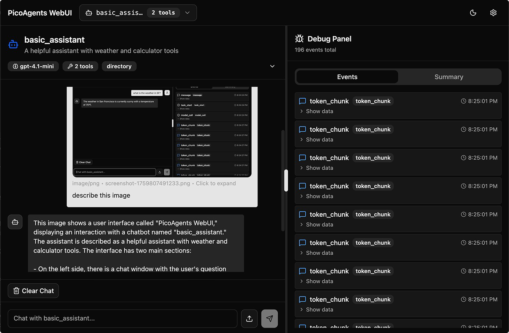
PicoAgents WebUI 的截图。
你现在有了一个 Web 界面，可以与智能体聊天、实时查看工具执行并维护对话历史。serve() 函数处理一切——HTTP 端点、流式传输和 React 前端。
这非常适合：
但很多时候你可能需要自定义 UI。也许你想将智能体集成到现有应用中、自定义界面，或理解其底层工作原理。本章其余部分展示如何从零构建你自己的智能体 Web 应用，演示 3.4 节的 UX 设计原则如何转化为可工作的代码。
在构建之前，让我们回顾一下为什么智能体应用可能需要与传统 Web 应用不同的架构。
当你使用 picoagents WebUI 或 ChatGPT 或 Claude 的 Web 界面等工具时，响应你的查询（例如"巴黎的天气怎么样？"）你可能会看到文本逐词出现——分块地。传统 Web 应用不是这样工作的——它们显示加载旋转器，然后显示完整结果。智能体应用则不同，它们通常涉及生成长文本，穿插着可能需要一段时间的工具调用。这需要一种不同的用户体验方法。
任务运行几分钟或几小时，而不是几秒。用户不能盯着旋转器等待智能体研究主题、调用多个工具并综合结果。他们需要看到进度：模型生成的文本/代码/图像/音频、正在运行的工具，以及返回的结果。
智能体协调需要可见性。当多个智能体一起工作时（见第 2 章），用户需要看到它们的对话和交接。哪个智能体在发言？它们贡献了什么？它们如何协调？
一些智能体需要任务中途的输入。智能体在继续之前可能需要澄清或批准。UI 必须在任务运行期间处理双向通信。
每个智能体 Web 应用——无论技术选择如何——都有两个协同工作的主要组成部分：后端（处理所有智能体执行和 API 逻辑）和前端（提供用户界面）。
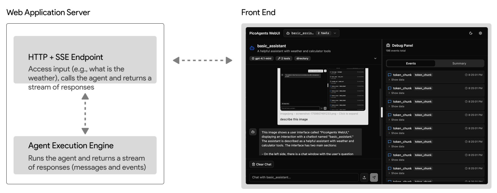
智能体应用由两部分组成：处理智能体执行的后端 API，以及允许用户提供查询并查看结果的前端 UI。
后端涵盖在服务器上运行的一切：智能体逻辑、API 端点和通信协议。它由两个集成的部分组成：
这部分包含你的 AI 逻辑，使用我们在前面章节开发的相同智能体模式：
# From Chapter 4 - the core agent logic
weather_agent = Agent(
name="weather_assistant",
instructions="Help users check weather",
model_client=OpenAIChatCompletionClient(
model="gpt-4.1-mini"),
tools=[get_weather]
)
async for event in weather_agent.run_stream(
"What's the weather in Paris?"
):
print(event)
关键特征：此逻辑纯粹专注于智能体实现，独立于它如何暴露给用户。相同的智能体代码可以从多个界面运行——命令行、Web、移动应用或 Slack 机器人。虽然我们在本书中使用 PicoAgents，但你可以在这里使用任何智能体框架：AutoGen、LangChain 或自定义代码。
要通过 Web 界面运行智能体，我们需要一种接受用户输入（例如"What's the weather?"）并在智能体工作时流式返回更新的方式。此 API 组件通过在 Web 服务器（智能体运行的地方）与用户界面之间实现通信协议来实现这一点。协议的选择对提供使智能体交互感觉响应灵敏的流式、实时更新至关重要：
# Example: FastAPI with SSE streaming
@app.post("/chat/stream")
async def chat_stream(request: ChatRequest):
# Bridge: Convert agent events to HTTP stream
async def event_generator():
async for event in weather_agent.run_stream(request.message):
yield f"data: {event.model_dump_json()}\n\n"
return StreamingResponse(event_generator(), media_type="text/event-stream")
技术栈推荐
智能体应用使用 FastAPI。其异步原生设计能很好地处理流式模式——没有线程复杂性，通过 Pydantic 自动进行请求/响应序列化，以及内置的 API 文档。FastAPI 是生产就绪的，拥有成熟的 ASGI 生态：开发时用 Uvicorn 部署，生产时用 Gunicorn + Uvicorn 工作者，并与 nginx、Docker 和云平台集成。我用 Flask（对流式传输来说过于同步）、Express（样板代码更多）和 Django（对大多数智能体 API 来说大材小用）构建过智能体应用。FastAPI 更适合智能体所需的异步流式模式。
流式传输坚持使用 Server-Sent Events。SSE 使用简单的 HTTP 连接提供从服务器到客户端的单向流式传输——正是你需要的进度更新、Token 流式传输和工具执行可见性。WebSocket 增加了你很少需要的双向复杂性，而 HTTP 轮询对实时更新效率低下。FastAPI + SSE 的组合以最小的基础设施复杂性为你提供响应式智能体 UI 所需的一切。
前端渲染智能体响应并捕获用户输入。它消费后端 API，并向用户呈现连贯的体验：
// Example: Vanilla JS consuming SSE
const response = await fetch('/chat/stream', {
method: 'POST',
body: JSON.stringify({ message: userInput })
});
const reader = response.body.getReader();
while (true) {
const { done, value } = await reader.read();
if (done) break;
// Parse and render events
displayAgentResponse(value);
}
关键特征：前端知道如何渲染事件和捕获用户输入，但不需要理解智能体内部——它只消费后端 API。
这两个组件是独立可替换的。表 8.1 总结了每个组件如何独立替换：
表 8.1：智能体应用中的组件独立性允许你更换后端框架或前端技术，而不影响系统的另一部分。
| 组件 | 你的选择 | 独立性 |
|---|---|---|
| 后端 | 智能体框架：PicoAgents、AutoGen、LangChain；API：FastAPI+SSE、Express+WebSocket、Flask+轮询 | 更换框架或协议而不改变前端 |
| 前端 | React、Vue、Streamlit、原生 JS | 更换而不改变后端逻辑 |
这意味着你可以：
你可以通过两种方式构建这些组件：
Python 原生框架如 Streamlit 和 Chainlit 让你仅使用 Python 定义后端和前端。编写智能体逻辑，添加一些框架特定的装饰器，你就有了一个可工作的 Web UI。非常适合快速原型和内部工具。
从零构建给你完全的控制。你实现自己的 API 端点并选择前端技术——原生 JavaScript、React、Vue 或任何其他框架。这种方法需要更多代码，但能实现生产应用必不可少的自定义用户体验。
选择取决于你的约束：开发速度 vs 定制需求、团队专长，以及你是在构建内部工具还是面向客户的产品。
Python 原生框架完全消除了前端开发。你用 Python 编写智能体逻辑和 UI，框架处理 HTTP 端点、流式传输和浏览器渲染。
两个框架主导这一领域，各自针对不同的用例进行了优化。Streamlit 提供广泛的数据可视化组件，特别适合分析仪表盘和数据驱动的智能体界面。相比之下，Chainlit 专注于对话式 AI 应用，提供带原生流式支持的内置聊天界面，非常适合聊天机器人风格的智能体。
# Streamlit - agent interface in ~10 lines
import streamlit as st
from picoagents import Agent
st.title("News Analysis Agent")
if prompt := st.chat_input("Enter news topic"):
with st.chat_message("assistant"):
response = agent.run(prompt)
st.write(response)
# Chainlit - conversational interface
import chainlit as cl
from picoagents import RoundRobinOrchestrator
@cl.on_message
async def handle_message(message: cl.Message):
async for event in orchestrator.stream_events(message.content):
await cl.Message(content=event.message, author=event.agent).send()
优点：无需前端专长（仅 Python）、快速原型（几分钟得到可工作的 UI）、内置流式传输和聊天组件、低维护（框架处理更新）。
局限：定制受限（框架范式限制设计）、复杂交互的性能问题、不太适合需要精良 UX 的面向客户应用。
使用时机：构建内部工具、创建演示或原型、团队缺乏前端开发者、简单交互模式满足需求。
表 8.2 比较 Python 框架与从零构建之间的权衡：
表 8.2：Python 框架支持快速原型但定制有限，而从零构建以开发时间和前端专长需求为代价提供完全控制。
| 因素 | Python 框架 | 从零构建 |
|---|---|---|
| 开发速度 | 几分钟得到原型 | 数天到数周 |
| 定制 | 受框架限制 | 完全控制 |
| 前端专长 | 无需（仅 Python） | 必需 |
| 最适合 | 内部工具、演示 | 生产应用、自定义 UX |
团队通常从 Python 框架开始进行快速验证，然后随着需求演进将高价值应用迁移到自定义解决方案。
框架选择
对于生产应用，考虑从零构建。Streamlit 等 Python 框架对原型和内部工具效果良好，但当你需要自定义流式模式、复杂状态管理或特定 UX 流程时，往往会超出它们的限制。本章的模式展示如何构建你确切需要的东西，不受框架约束。
在以下小节中，我们将用约 200 行代码构建一个最小但完整的智能体 Web 应用。构建时，我们将在实用的地方实现 3.4 节的 UX 原则——具体是可观测性（实时显示智能体动作）和能力发现（引导用户走向可靠任务）。你可以在 PicoAgents 仓库的 examples/app/ 中找到完整的工作示例。
examples/app/
├── backend/
│ └── app.py
└── frontend/
└── index.html
智能体逻辑定义在 backend/app.py 中——就是我们一直在使用的同一个天气智能体。你可以先创建这个文件夹结构和每个文件的空版本。
要实现后端服务器，我们将使用 FastAPI 库创建带多个 Web 端点的 Web 应用后端。Web 端点的目标是通过 Web 协议暴露你的智能体，使我们的 Web 界面等其他实体可以调用该端点。
首先我们导入 FastAPI 并定义我们的智能体：
# backend/app.py
from fastapi import FastAPI
from fastapi.responses import StreamingResponse
from pydantic import BaseModel
app = FastAPI(title="Minimal Agent Web App")
def get_weather(location: str) -> str:
"""Get weather for a location."""
return f"Weather in {location}: Sunny, 72°F"
# Create our agent
weather_agent = Agent(
name="weather_assistant",
description="A weather assistant",
model_client=OpenAIChatCompletionClient(model="gpt-4.1-mini"),
instructions="Help users check weather using the get_weather tool",
tools=[get_weather],
)
接下来，我们定义一个可以接收请求（例如，巴黎的天气怎么样）、将其传递给我们的智能体，然后返回响应流的 Web 端点。
class ChatRequest(BaseModel):
message: str
async def stream_agent_events(message: str):
"""Stream agent execution as Server-Sent Events."""
async for event in weather_agent.run_stream(
message,
stream_tokens=True):
# Format as SSE: "data: " prefix + JSON + double newline
yield f"data: {event.model_dump_json()}\n\n"
@app.post("/chat/stream")
async def chat_stream(request: ChatRequest):
"""Handle chat requests with streaming responses."""
return StreamingResponse(
stream_agent_events(request.message),
media_type="text/event-stream",
headers={
"Cache-Control": "no-cache",
"Connection": "keep-alive",
},
)
在上面的代码片段中，首先，我们设置 FastAPI 创建一个接受 HTTP 请求的 Web 服务器。这里的关键函数是 @app.post("/chat/stream") 路由定义，它处理智能体与外部调用方（例如 Web 界面）之间的实际连接。当用户发送消息时，此函数将其传递给 weather_agent.run_stream()，将每个智能体事件转换为 Server-Sent Events 格式（SSE 协议），并实时流式传输回浏览器。@app.post("/chat/stream") 装饰器创建用户连接以与智能体聊天的 HTTP 端点。
SSE 格式优雅简单——每个事件格式化为 data: \<json>\n\n，这是浏览器原生理解的标准协议，无需特殊库。我们设置 stream_tokens=True 使智能体在 Token 生成时逐个发出，创建你在 ChatGPT 中看到的熟悉的"打字"效果。
完成此文件后，你可以使用以下代码尝试我们刚刚创建的端点：
# Install dependencies
pip install picoagents fastapi "uvicorn[standard]"
# Set your API key
export OPENAI_API_KEY=your-key-here
# In one terminal
python app.py
# In another terminal
curl -N -X POST http://localhost:8000/chat/stream \
-H "Content-Type: application/json" \
-d '{"message": "What is the weather in Paris?"}'
你会看到事件实时流式传输！
现在我们有了后端 API，可以继续创建一个让用户与此端点交互的 Web 界面。我们将其分解为两个逻辑部分：首先建立连接并接收流，然后解析和渲染事件。
// frontend/index.html (connection setup)
async function sendMessage() {
const message = inputEl.value.trim();
// Add user message to UI
addMessage(message, 'user');
// Create empty assistant message for streaming
currentMessage = addMessage('', 'assistant');
// Fetch with POST to /chat/stream
const response = await fetch('http://localhost:8000/chat/stream', {
method: 'POST',
headers: { 'Content-Type': 'application/json' },
body: JSON.stringify({ message }),
});
// Read SSE stream
const reader = response.body.getReader();
const decoder = new TextDecoder();
let buffer = '';
第一部分处理用户交互并建立流式连接。当用户输入消息时，我们立即在聊天界面中显示它，并为智能体的响应创建空占位符。关键洞见是预先创建助手消息——这给了我们一个在 Token 流入时更新的对象，创造那种特有的"打字"效果。然后我们向我们的后端端点发出 POST 请求，而不是等待完整响应，我们获得一个 reader 让我们在数据到达时处理。buffer 变量将帮助我们处理部分数据——网络数据包并不总是与完整事件对齐。
// frontend/index.html (event processing)
while (true) {
const { done, value } = await reader.read();
if (done) break;
// Decode chunk
buffer += decoder.decode(value, { stream: true });
// Process complete SSE messages (separated by \n\n)
const lines = buffer.split('\n\n');
buffer = lines.pop(); // Keep incomplete message
for (const line of lines) {
if (line.startsWith('data: ')) {
const event = JSON.parse(line.slice(6));
// Handle different event types
if (event.content && event.role === 'assistant') {
// Streaming token - append to current message
currentMessage.textContent += event.content;
} else if (event.event_type === 'tool_call_started') {
// Show tool execution
addMessage(`🔧 Calling ${event.tool_name}...`, 'thinking');
}
}
}
}
}
上面的第二部分处理实际的流式数据处理。我们从服务器读取到达的数据块，将字节解码为文本，并添加到缓冲区。SSE 协议将事件定义为以 data: 开头并以双换行符（\n\n）结尾的行，因此我们按该模式分割。微妙之处在这里：我们从分割数组中弹出最后一个元素并保留在缓冲区中。为什么？因为网络数据包可能只携带半个事件——分割会将其拆成碎片。通过将不完整的部分保留在缓冲区中，我们确保它与下一个块组合形成完整事件。
一旦我们有了完整事件，就解析 JSON 并相应更新 UI。当我们收到助手的内容时，将其直接追加到我们之前创建的消息——这创造了文本逐 Token 平滑出现的效果。当我们看到工具调用开始时，添加视觉指示器，让用户理解智能体正在采取行动——实现 3.4.3 节的可观测性原则。前端不需要理解智能体推理或工具执行逻辑——它只需要知道如何渲染不同的事件类型。这种分离意味着你的后端智能体可以变得任意复杂——使用多个工具、调用其他智能体或实现复杂推理——而无需更改前端。前端只消费事件并适当渲染，保持智能体逻辑与用户界面之间的干净分离。
为了实现能力发现原则（3.4.1 节），我们添加预设提示词，引导用户走向智能体处理良好的任务。这在用户首次遇到界面、不知道该问什么时特别重要。
首先，创建带示例提示词的容器：
<div class="preset-prompts" id="presets">
<p>Try these examples:</p>
然后添加点击时填充输入字段的按钮：
<button class="preset-btn"
onclick="usePreset('What is the weather like in Paris?')">
What is the weather like in Paris?
</button>
<button class="preset-btn"
onclick="usePreset('Tell me about the weather in Tokyo')">
Tell me about the weather in Tokyo
</button>
<button class="preset-btn"
onclick="usePreset('How is the weather today?')">
How is the weather today?
</button>
</div>
预设在第一封消息后消失，一旦用户理解智能体的能力，界面保持干净。这种简单的模式——在空状态显示 2-3 个示例提示词——帮助用户发现智能体能做什么，而不会被文档淹没。
智能体任务可能运行几分钟或几小时，消耗 API 资源和成本。可中断性原则（3.4.4 节）要求让用户在需要时中止执行。虽然 SSE 只从服务器向客户端发送数据，我们可以通过检测客户端何时关闭 HTTP 连接来实现取消。
该模式有三个部分：(1) UI 中的停止按钮，(2) 前端在点击时关闭 HTTP 连接，(3) 后端检测到关闭的连接并停止智能体。浏览器提供内置的 AbortController API 用于取消 HTTP 请求——当你调用 abort() 时，连接立即关闭。这实现了任务取消（4.3 节），让用户控制长时间运行的操作。
前端：创建 AbortController，将其 signal 传递给 fetch()，并在用户点击停止时调用 abort()：
// Create abort controller when starting request
abortController = new AbortController();
fetch('/chat/stream', {
method: 'POST',
body: JSON.stringify({ message }),
signal: abortController.signal // Enable cancellation
});
// Toggle Send button to Stop while streaming
if (loading) {
sendBtn.textContent = 'Stop';
sendBtn.onclick = () => abortController.abort();
}
后端：当客户端关闭连接时，Python 的异步运行时抛出 GeneratorExit。我们捕获此异常并使用 PicoAgents 的 CancellationToken 停止智能体：
from picoagents import CancellationToken
async def stream_agent_events(
message: str,
cancellation_token: CancellationToken
):
try:
async for event in weather_agent.run_stream(
message,
stream_tokens=True,
cancellation_token=cancellation_token # Pass to agent
):
yield f"data: {event.model_dump_json()}\n\n"
except (GeneratorExit, asyncio.CancelledError):
# HTTP connection closed - stop agent execution
cancellation_token.cancel()
raise
CancellationToken 通过智能体流水线传播，立即停止 LLM 调用和工具执行。
现在你可以从命令行运行应用：
# Run the server
cd examples/app/backend
python app.py
在浏览器中打开 http://localhost:8000。你将有一个可工作的智能体聊天界面。
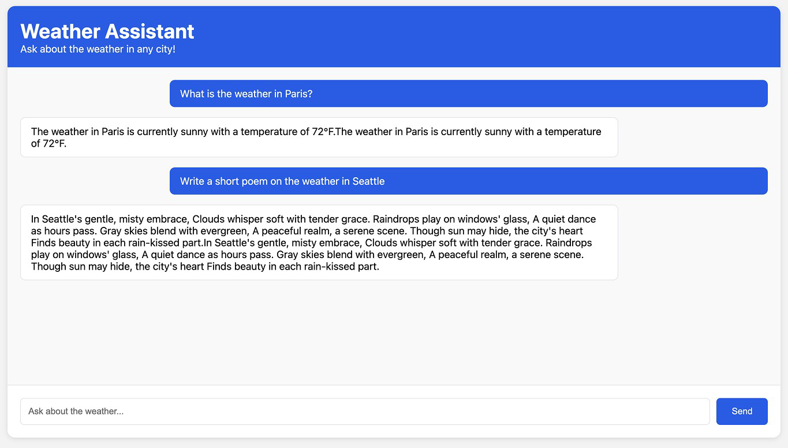
最小智能体 Web 应用界面的截图。
最小应用使用原生 JavaScript——非常适合学习 SSE 流式传输和理解核心模式。但当状态管理变得复杂时，原生 JavaScript 变得具有挑战性。想象在数十个组件中跟踪对话历史、多个智能体会话、打字指示器、错误状态和工具执行状态。原生 JS 需要手动状态同步——忘记更新一个变量就会导致 bug。
生产级智能体 UI 需要你在 ChatGPT 或 Claude 中看到的能力：带复制按钮的语法高亮代码块、平滑的流式动画、工具调用的条件渲染，以及跨设备的响应式布局。最小应用有约 50 行 JavaScript 用于基本聊天。带多智能体编排、会话管理和丰富工具显示的生产 UI 将有 500 多行原生 JS——难以维护。
现代框架解决这些问题。存在几个优秀选项：React 提供最大的生态和广泛的文档，Vue 提供更平缓的学习曲线和优秀的文档，Svelte 编译为高度优化的原生 JavaScript，Angular 为企业应用提供全面的框架。所有这些框架都提供适合智能体 UI 的基于组件的架构、声明式渲染和状态管理解决方案。
智能体 UI 使用 React
我推荐智能体 UI 使用 React。是的，Vue 更容易学习，Svelte 性能更好，但 React 的生态主导地位对智能体应用更重要。你会找到更多用于语法高亮、Markdown 渲染和实时流式传输的库。更重要的是，当你调试复杂的智能体状态或需要扩展 UI 时，LLM 和 AI 编码助手对 React 代码的表现显著更好——它们在训练期间见过的 React 示例多得多。这种实际优势胜过理论上的框架优点。
PicoAgents WebUI 使用 React，因为它处理多种实体类型（智能体、编排器、工作流）、复杂的会话管理、丰富的工具执行可视化和编排模式显示。
好消息是：后端保持不变！ API 组件（FastAPI + SSE）不关心前端是原生 JS 还是 React。一旦你用原生 JS 理解了模式，升级到 React 只是让 UI 代码更容易管理。
表 8.3 提供何时使用原生 JavaScript 与 React/Vue 的指导：
表 8.3：原生 JavaScript 对学习和简单 UI 足够，而 React/Vue 对具有大量 UI 代码的复杂生产应用变得必要。
| 使用原生 JS | 使用 React/Vue |
|---|---|
| 学习 SSE 模式 | 生产应用 |
| 简单单智能体 UI | 多智能体编排 UI |
| 快速内部工具 | 面向客户的产品 |
| < 200 行 UI 代码 | > 500 行 UI 代码 |
React 使用 JSX 语法（JavaScript 中类似 HTML 的代码）和浏览器不直接理解的现代 JavaScript 特性。你用 React 的语法编写具有所有丰富交互的组件，但这些代码必须编译为浏览器可以执行的原生 JavaScript、HTML 和 CSS。这种编译过程称为"构建"（building）。
构建工具处理这种转换。Vite 是智能体 UI 的推荐选择——它在开发期间提供近乎即时的热重载（保存文件，毫秒内看到变化），并创建最小尺寸的优化生产包。Next.js 等替代品增加了服务端渲染（对 SEO 密集的网站有用），但 Vite 的简单性和速度对智能体界面效果良好。
除了构建工具，你还需要组件和样式。shadcn/ui 提供无障碍 UI 元素（正确的 ARIA 属性、键盘导航），你将其复制到项目中并自定义——你拥有代码，而不是依赖包。Tailwind CSS 提供实用优先的样式，让你无需在文件之间切换即可内联样式，并内置移动优先的响应式设计。
PicoAgents WebUI 在生产中演示了这些模式。它使用 React + TypeScript + Vite 与 shadcn/ui 组件和 Tailwind 样式，遵循你在最小应用中构建的相同 FastAPI + SSE 后端模式。完整源代码在 picoagents/webui/frontend/ 中。
与其逐步讲解实现，表 8.4 突出要研究的关键领域：
表 8.4：PicoAgents WebUI 代码库演示了 SSE 流式传输、消息渲染、工具可视化、会话管理和代码显示的生产模式，你可以为自己的应用改编。
| 学习什么 | 查看哪里 | 为什么重要 |
|---|---|---|
| SSE 事件解析 | src/api/client.ts | 将 SSE 流转换为 React 状态更新 |
| 消息流式传输 | src/components/Chat/Message.tsx | 事件到达时文本逐 Token 出现 |
| 工具执行 UI | src/components/ToolCall.tsx | 带语法高亮参数的可折叠工具调用 |
| 会话管理 | src/hooks/useSession.ts | 在对话之间切换、历史持久化 |
| 代码渲染 | src/components/CodeBlock.tsx | 语法高亮、复制按钮、语言检测 |
从 src/App.tsx 开始理解整体结构，然后探索与你需求匹配的组件。架构为扩展而设计——你可以添加领域特定输出的自定义消息渲染器、新的工具结果可视化或身份验证流程，而无需修改核心。
学习 React
本书聚焦多智能体系统，而非 React 开发。如果你是 React 新手，从官方 React 教程开始，它涵盖组件、状态和副作用。TypeScript 集成参见 React TypeScript 速查表。Vite 指南涵盖构建配置。
好消息是：无论你使用原生 JS、React 还是任何其他前端框架，后端架构保持不变。SSE + FastAPI 模式工作方式相同——只有前端对事件的消费发生变化。
既然我们理解了如何构建前端和后端组件，我们需要做出一个影响从用户体验到部署复杂性的一切的关键架构决策：这些组件应该如何通信？
智能体应用需要前端和后端之间的实时通信。存在两种主要方法：WebSocket（双向、持久连接）和 Server-Sent Events（基于 HTTP 的单向流式传输）。
这两种协议之间的选择常常被误解。决定用户体验的是应用设计，而不是协议本身。设计良好的 SSE 应用对用户来说可以感觉和 WebSocket 一样响应灵敏，同时扩展起来要容易得多。
根本的权衡不在于协议——而在于你在哪里管理复杂性：在应用代码中还是在基础设施中。两种方法都可以支持用户任务中途提供反馈的交互式智能体，但它们处理这种反馈的方式不同，这决定了你在哪里付出复杂性成本以及你的应用如何扩展。
WebSocket 保持持久连接，状态在整个对话期间存在于内存中。用户反馈发生在同一连接上（同步），提供简单的应用逻辑，但需要带会话亲和的复杂基础设施。
SSE + 上下文管理流式传输进度，然后保存对话上下文，并在交互之间关闭连接。用户反馈通过同一端点以不同的请求类型发生（异步），需要应用级上下文管理，但支持简单、无状态的基础设施。
关键洞见是：用户不关心底层协议。他们关心及时获得响应和看到进度。无状态 SSE 应用可以提供与 WebSocket 完全相同的用户体验。考虑这个时间线：
# User starts a task at 9:00 AM
POST /chat/stream {"message": "Analyze our deployment and fix any issues"}
# Agent investigates, calls tools, streams progress
# Agent needs approval for sensitive operation, saves context, closes stream
# User reviews at 2:30 PM (5+ hours later)
POST /chat/stream {"approved": true, "session_id": "abc123"}
# Agent loads context, continues exactly where it left off
# User sees immediate response as if agent "remembered" everything
对用户来说，这感觉与持久 WebSocket 连接完全相同。智能体"记住"了整个对话，无缝地继续推理，并提供预期的响应。但在幕后，5 个多小时的等待期间没有消耗任何资源。
WebSocket 实现保持连接打开，智能体状态在内存中：
@app.websocket("/ws")
async def agent_websocket(websocket: WebSocket):
await websocket.accept()
conversation_state = [] # Lives in memory
while True:
user_input = await websocket.receive_json()
# Process and respond immediately
async for event in agent.run_stream(
user_input,
context=conversation_state):
await websocket.send_json(event.model_dump())
这种方法对实时协作功能、游戏场景，或当你有不可序列化的状态（如已加载的 ML 模型）时效果良好。然而，它需要会话亲和——每个用户必须保持在同一个服务器实例上，如果服务器宕机，所有连接都会断开。
SSE + 上下文管理通过无状态的请求-响应循环处理相同的交互：
@app.post("/chat/stream")
async def chat_stream(request: ChatRequest, session_id: str):
# Load conversation context
context = await session_manager.get_or_create(session_id)
if request.message:
context.add_message(UserMessage(content=request.message))
elif request.approved is not None:
# Handle approval response through same endpoint
context.add_approval_response(approved=request.approved)
async def event_generator():
async for event in agent.run_stream(context.messages):
yield f"data: {event.model_dump_json()}\n\n"
# Save updated context when stream ends
await session_manager.save(session_id, context)
return StreamingResponse(event_generator(), media_type="text/event-stream")
这种无状态设计支持 WebSocket 无法高效支持的工作流：审批工作流（智能体等待用户审查数小时/数天）、后台处理（用户离线时智能体继续工作）、多设备连续性（对话在设备之间无缝移动）和成本敏感操作（智能体在昂贵的 LLM 调用之间休眠）。
表 8.5 总结 WebSocket 与带上下文管理的 SSE 之间的关键区别：
表 8.5：WebSocket 提供真正的双向实时通信，但需要会话亲和并消耗持久内存，而带上下文管理的 SSE 以无状态基础设施实现相同的用户体验，水平扩展并支持延迟数小时或数天的异步工作流。
| 因素 | WebSocket | SSE + 上下文管理 |
|---|---|---|
| 用户体验 | 实时双向 | 感觉实时，实际异步 |
| 基础设施 | 需要会话亲和 | 标准负载均衡 |
| 资源使用 | 持久内存消耗 | 仅处理期间使用资源 |
| 异步工作流 | 有限（连接超时） | 完全支持（小时/天级延迟） |
| 可扩展性 | 垂直（更大的服务器） | 水平（更多服务器） |
大多数应用在需要扩展之前，可以在单服务器部署上运行数月，但当你确实需要扩展时，架构选择就很重要了。基于 SSE 的应用可以在标准负载均衡器后添加服务器实例，无需特殊配置——任何服务器都可以处理任何请求，因为上下文按交互获取/保存。基于 WebSocket 的应用需要会话亲和配置以确保用户保持在同一个服务器实例上，为交互能力增加基础设施复杂性。
实用建议
大多数智能体应用从 SSE + 上下文管理开始。无状态设计支持 WebSocket 根本无法高效支持的异步工作流，同时提供相同的响应式用户体验。你的应用将水平扩展、随处部署，并支持审批延迟和后台处理等高级工作流。
只有当你对活动执行期间的实时双向通信有特定需求（如协作编辑）或需要维护不可序列化的状态时，才选择 WebSocket。
云部署策略
从托管平台上的容器化部署开始——具体是 Google Cloud Run、AWS ECS 或 Azure Container Instances。这些服务处理扩展、健康检查和部署，同时抽象基础设施复杂性。使用 SSE 流式传输（我推荐的方式），标准负载均衡器和 CDN 集成无需额外配置即可工作。
Serverless 函数看似有吸引力，但对智能体应用效果不佳。大多数智能体任务运行时间超过 15 分钟的函数限制，冷启动会破坏用户期望的响应感。GPU 实例只有在你运行本地 LLM 推理时才重要，但在达到大规模之前，OpenAI 等 API 服务对大多数应用更具成本效益。
大多数智能体应用从简单开始，并根据实际使用情况逐步扩展。
大多数智能体应用从单服务器部署开始——这完全没问题。你可以用单台服务器以良好性能服务数百个并发用户。容器编排和高级扩展模式的复杂性只在你成长时才变得必要。
从使用 Docker 和 docker-compose 的基本容器化开始。这提供跨环境的一致性和简化的部署：
# Multi-stage Dockerfile for agent application
FROM node:18-alpine AS frontend-build
WORKDIR /app/frontend
COPY frontend/package*.json ./
RUN npm install
COPY frontend/ .
RUN npm run build
FROM python:3.11-slim AS backend
WORKDIR /app
COPY requirements.txt .
RUN pip install -r requirements.txt
COPY backend/ .
COPY --from=frontend-build /app/frontend/dist ./static
EXPOSE 8000
CMD ["uvicorn", "main:app", "--host", "0.0.0.0", "--port", "8000"]
对于初始部署，带 docker-compose 的单服务器设置能有效处理中等负载：
# docker-compose.yml for simple deployment
version: '3.8'
services:
agent-app:
build: .
ports:
- "80:8000"
environment:
- OPENAI_API_KEY=${OPENAI_API_KEY}
- DATABASE_URL=${DATABASE_URL}
volumes:
- agent_data:/app/data
restart: unless-stopped
redis:
image: redis:alpine
volumes:
- redis_data:/data
restart: unless-stopped
volumes:
agent_data:
redis_data:
只有当你有了需要复杂性的具体证据时才添加——监控显示连接限制、响应时间退化或当前设置无法处理的功能需求。
当你看到具体症状时，你会知道是时候扩展了：响应时间退化、连接限制被触及，或服务器在并发智能体执行中挣扎。不要过早优化——有证据时再扩展。
你的流式协议选择（8.6 节涵盖）从根本上决定你的扩展路径。基于 SSE 的应用可以在标准负载均衡器后添加服务器实例，无需特殊配置。基于 WebSocket 的应用需要会话亲和配置以确保用户保持在同一个服务器实例上。
对于大多数智能体应用，AWS ECS、Azure Container Instances 或 Google Cloud Run 等云容器编排平台处理扩展、健康检查和部署，同时抽象基础设施复杂性。使用 SSE 流式传输，标准负载均衡器和 CDN 无需额外配置即可工作。
既然你理解了智能体 Web 应用的工作原理，尝试这些练习来加深理解。每个都基于我们之前创建的最小应用。
练习 1：用事件可见性增强 UI
最小应用显示基本消息和工具调用，但智能体生成许多其他事件类型。修改前端以显示额外事件，如思考步骤、工具结果和完成状态。添加一个"清除对话"按钮重置聊天界面。考虑如何视觉上区分不同的事件类型——也许使用不同的颜色、图标或可展开的详细部分。
练习 2：添加多个工具并观察协调
用简单天气函数之外的额外工具扩展你的智能体。例如，添加计算器工具、网络搜索工具或文件读取工具。测试需要按顺序使用多个工具的查询（"巴黎的天气怎么样，72°F 换算成摄氏度是多少？"）。观察 UI 如何显示智能体在不同工具调用之间的协调。此练习揭示工具可用性如何影响智能体行为，以及为什么清晰的工具执行可见性对用户很重要。
练习 3：使用 AgentContext 实现对话历史
当前的最小应用独立处理每个请求——智能体不记得之前的消息。PicoAgents 提供 AgentContext 用于管理对话历史，但我们的最小示例尚未使用它。修改后端，为每个会话创建和维护 AgentContext 对象，存储在内存中（使用以会话 ID 为键的字典）。处理请求时，将新消息和现有上下文都传递给 agent.run_stream(task=message, context=session_context)。智能体将自动用对话历史更新 context.messages。你需要：(1) 生成会话 ID（可以使用从前端发送的 UUID），(2) 为每个会话检索或创建上下文，(3) 将更新的上下文传递给后续请求。此练习演示 PicoAgents 如何将智能体逻辑（无状态）与对话状态（通过上下文管理）分离，遵循 PicoAgents WebUI 中使用的相同模式（参见 _sessions.py 作为参考）。
练习 4：用工具批准添加成本感知的委托
使用 4.13 节的工具批准机制实现 3.4.2 节的成本感知行动委托原则。添加一个具有后果的工具（如 send_email 或 delete_file），并使用 @tool(approval_mode="always_require") 装饰器配置它执行前需要批准。当智能体尝试使用此工具时，暂停执行并在 UI 中显示一个批准对话框，展示工具名称和参数。用户可以批准或拒绝，智能体相应恢复。这需要：(1) 将工具标记为需要批准（4.13 节展示了模式），(2) 在前端流中检测 ToolApprovalRequest 事件，(3) 显示带批准/拒绝按钮的批准 UI，(4) 通过新请求发送批准响应以继续执行。此练习演示第 4 章的人在回路模式如何与 Web UI 集成，让用户控制具有后果的行动。
练习 5：生产考虑
在部署你的智能体 Web 应用之前，解决三个关键生产问题：(1) 身份验证——为你的 FastAPI 端点添加 API 密钥验证或 OAuth 以控制访问，(2) 可观测性——遵循 4.10 节的模式集成 OpenTelemetry，跨部署跟踪智能体操作、API 成本和性能，(3) 速率限制——使用 FastAPI 中间件（如 slowapi）限制每个用户的请求并防止滥用，因为智能体应用可能进行许多昂贵的 LLM 调用。这些不是智能体特有的挑战——它们是适用于任何生产 API 的标准 Web 应用关注点。
本章涵盖：
如果你在阅读本书，你可能一直在纠结的一个紧迫问题就是：选择哪个框架来构建多智能体系统。这无疑是我收到的最常见问题之一，尤其是在 AutoGen（Microsoft Research 2023）的早期。在我写作本书时，市面上有数十个框架——坦率地说，太多了。
同时，我们在过去几章中实际上已经实现了（假设你跟着我走过了代码——我希望你做到了！）你从框架中能获得的几乎所有东西，从零构建。如果你觉得这个过程舒适且令人振奋，那太好了！如果你不觉得，或者你在合理地怀疑这是否就是全部，本章将帮助你驾驭这个决策。
我个人认为，直接比较框架是一场必输的游戏——它们不断变化。相反，我想总结我认为任何框架都应该擅长的核心能力，无论你自己实现还是采用现有解决方案，只要你打算基于它构建。
到本章结束时，你将有一个系统化的方法来评估多智能体框架，无论在这个快速变化的格局中出现或演进哪些具体工具，这种方法都将保持适用。
好吧，有几个理由考虑使用框架。
经过验证的模式和最佳实践：框架编码了你可能尚未遇到的问题的解决方案。它们可以代表数百小时的边缘情况调试、性能优化和生产部署加固。
加速开发：虽然从零构建提供对行为的底层控制，但框架可以显著缩短生产应用的上市时间。它们处理"管道"工作，让你专注于业务逻辑。
生态与社区：成熟的框架带有广泛的文档、社区支持和预构建的集成，复制这些需要相当的努力。
维护与演进：到目前为止，我看到的客户从框架中获得的最大好处是，框架团队处理关键维护工作，如新模型 API 的更新、安全补丁和性能改进——减轻你的长期维护负担。
标准化、可互操作的组件：我看到许多开发者不幸地严重低估了框架提供的标准化 API 的影响。框架提供无缝协同工作的可互操作组件（智能体、工具、记忆系统），减少集成挑战。即使在 picoagents 中，你可能已经注意到，仅仅继承相同的 BaseAgent 抽象，就意味着我们构建的 ComputerUseAgent 可以与任何多智能体编排方法配合，零代码更改。随着团队成长，这些标准化接口显著减少上手时间和集成错误。例如，当新的记忆提供商可用时，框架要么提供兼容的实现，要么你的团队可以构建一个具有清晰行为保证的实现，而自定义实现通常需要手忙脚乱地改造一切。
注意
至少在 AutoGen 的案例中，框架最常用的部分之一是 ChatCompletionClient，它支持多个模型提供商。模型提供商非常频繁地更改其 API 和行为，如果没有框架抽象差异，跟上这些变化可能成为开发者的负担。
然而，框架也引入约束、学习曲线和潜在的供应商锁定。关键是理解你在权衡什么。
基于多年构建和评估多智能体系统的经验，以下是区分有效框架与基础实现的核心能力。在适当的地方，我们将回顾我们如何在最小的 picoagents 库中解决这些需求的示例，以及 Microsoft Agent Framework、Google ADK 和 Pydantic AI 等领先框架如何应对这些能力。
设计良好的框架应该提供我所说的"低地板，高天花板"——常见用例的简单入口，以及处理专门需求的灵活性，而不会撞上框架限制。
要寻找什么：
在 picoagents 中，我们遵循这些原则设计了干净的 API（4.1 节）：
# High-level: simple agent creation
agent = Agent(
name="assistant",
model_client=client,
instructions="You are helpful"
)
response = await agent.run("Write a story")
# Low-level: custom behavior through inheritance
class CustomAgent(BaseAgent):
async def run_stream(self, task, context=None, cancellation_token=None):
# Custom reasoning logic
我们还提供了编排（组合智能体的高层模式）和工作流（参见第 7 章实现编排模式、第 6 章实现工作流）的清晰抽象，让你将低层业务逻辑表达为计算图。
要问的问题：
多智能体系统涉及固有的并发操作——多个智能体思考、工具执行、外部 API 响应。围绕同步操作设计的框架将产生瓶颈和糟糕的用户体验。
要寻找什么：
在 picoagents 中，我们实现了带事件流的异步优先架构（4.2 节、4.2.1 节）：
# Async execution with streaming and cancellation
token = CancellationToken()
async for event in agent.run_stream("Write a story", cancellation_token=token):
if isinstance(event, ModelCallEvent):
print("🧠 Model thinking...")
elif isinstance(event, AgentResponse):
print(f"✅ Complete: {event.messages[-1].content}")
要问的问题：
复杂的多智能体交互难以有效调试、监控和开发。框架应提供对执行期间发生的事情的丰富可观测性，并结合复杂的开发工具以实现快速迭代和理解系统行为。
要寻找什么：
在 picoagents 中，我们为可观测性实现了结构化事件流（4.2.1 节）：
# Rich event streams with structured data
async for event in agent.run_stream(task):
if isinstance(event, ModelCallEvent):
print(f"Model: {len(event.input_messages)} msgs")
elif isinstance(event, ToolCallEvent):
print(f"Tool: {event.tool_name}({event.parameters})")
elif isinstance(event, AgentResponse):
total = (event.usage.tokens_input
+ event.usage.tokens_output)
print(f"Total: {total} tokens")
要问的问题：
警告信号：
生产多智能体系统需要处理失败、动态扩展，并跨会话维护对话。这需要超越简单内存存储的复杂状态管理。
要寻找什么：
在 picoagents 中，我们为状态管理实现了记忆和上下文系统（4.7 节）：
# Persistent memory with different backends
memory = FileMemory(file_path="conversation.json")
agent = Agent(name="assistant", model_client=client, memory=memory)
# Context carries conversation state
context = AgentContext(messages=[...], shared_state={...})
response = await agent.run("Continue our discussion", context=context)
要问的问题：
警告信号：
随着多智能体系统变得复杂，管理配置变得关键。团队需要跨环境可靠地版本化、共享和部署智能体配置。
要寻找什么：
在 picoagents 中，我们实现了组件序列化：
# Serialize complete agent configurations
agent = Agent(name="assistant", model_client=client, tools=[search_tool])
config = agent.to_config() # JSON-serializable configuration
# Load from configuration
loaded_agent = Agent.from_config(config)
# Works across all components (orchestrators, workflows, etc.)
orchestrator = RoundRobinOrchestrator(agents=[agent1, agent2])
orchestrator_config = orchestrator.to_config()
要问的问题：
配置驱动设计的重要性
我经常看到团队低估或忽视配置驱动设计的价值。这通常是个错误，特别是多智能体系统有许多活动部件、许多配置旋钮，设置自动化的消融测试以隔离不同配置的影响往往是关键。模型在变化、应用需求在变化等——没有简单地创建新配置并通过评估传递的能力，会显著拖慢许多团队。
此外，为组件提供可序列化的配置格式意味着你可以构建低代码或无代码工具，让非技术用户通过图库中存在的或可以使用可视化界面创建/完全指定的组件来构建复杂的多智能体系统。事实上，我在为多智能体系统构建低代码工具的所有工作都源于这一认识，并启发了 AutoGen、AutoGen Studio 和 Magentic-UI（Dibia et al. 2024；Mozannar et al. 2025）中使用的配置系统。
生产多智能体系统需要健壮的安全机制和拦截点来实现防护栏、合规检查和安全措施。框架应提供全面的中间件基础设施，使开发者能够在关键交互点注入自定义逻辑。
要寻找什么：
在 picoagents 中，我们为防护栏实现了中间件：
# Pass middleware list directly to Agent
agent = Agent(
name="assistant",
instructions="You are a helpful assistant",
model_client=client,
middlewares=[
PIIRedactionMiddleware(patterns=["ssn", "email"]),
RateLimitMiddleware(max_calls_per_minute=60),
GuardrailMiddleware(
blocked_content=["harmful_request"]
)
]
)
要问的问题：
警告信号：
注意
防护栏基础设施对合规、安全和安全性至关重要的生产部署是关键。没有适当的中间件钩子，团队往往诉诸于修改框架代码或实现脆弱的变通方案，这些在更新期间会损坏。设计良好的防护栏系统应该高性能、可扩展，并跨框架版本可维护。
正如我们在第 2 章探索的，不同的任务需要不同的协调方法。一个好的框架应该支持完整的模式谱系，并允许自定义实现。
要寻找什么：
在 picoagents 中，我们实现了几个协调模式（第 6 章、第 7 章）：
# Round-robin orchestration
orchestrator = RoundRobinOrchestrator(agents=[writer, editor])
# AI-driven agent selection
orchestrator = AIOrchestrator(agents=[researcher, writer], model_client=client)
# Workflow with custom steps
workflow = Workflow(steps=[
PicoAgentStep("research", researcher_agent),
TransformStep("format", lambda x: format_results(x))
])
# Flexible termination conditions
termination = MaxMessageTermination(10) | TextMentionTermination("APPROVED")
要问的问题：
从原型走向生产需要全面的安全措施、部署能力和运维支持。
要寻找什么：
在 picoagents 中，我们实现了基本的安全和可观测性功能：
# Tool approval for security
@tool(approval_mode=ApprovalMode.ALWAYS)
def sensitive_operation(data: str) -> str:
return process_sensitive_data(data)
# OpenTelemetry integration for monitoring
os.environ["PICOAGENTS_ENABLE_OTEL"] = "true"
agent = Agent(name="prod-agent", model_client=client)
要问的问题：
与传统软件不同，多智能体系统由于其概率性本质和复杂决策过程，需要专门的评估方法。
要寻找什么：
在 picoagents 中，我们实现了评估能力：
# Define evaluation tasks and judge
tasks = [Task(name="haiku", input="Write a haiku",
expected_output="5-7-5 syllable poem")]
judge = LLMEvalJudge(model_client=client, criteria=["creativity", "format"])
# Evaluate agents or orchestrators
runner = EvalRunner(judge=judge, parallel=True)
target = AgentEvalTarget(agent)
scores = await runner.evaluate(target, tasks)
print(f"Average score: {sum(s.overall for s in scores) / len(scores)}")
要问的问题：
框架采用是长期承诺。周围生态的健康状况往往决定框架是否保持可行并随你的需求演进。
要寻找什么：
要问的问题：
使用基于十项核心能力的加权评分矩阵系统化评估框架。定义你的技术需求、组织约束和业务优先级，然后构建聚焦的原型测试真实世界场景。表 9.1 展示了一个比较不同框架选项的示例评估矩阵。
表 9.1：框架评估矩阵
| 能力 | 权重 | 框架 A | 框架 B | 自定义构建 |
|---|---|---|---|---|
| 开发者体验 | 20% | 8/10 | 6/10 | 4/10 |
| 异步架构 | 15% | 9/10 | 7/10 | 8/10 |
| 可观测性与开发工具 | 10% | 7/10 | 5/10 | 3/10 |
| 状态管理 | 15% | 8/10 | 6/10 | 2/10 |
| 配置 | 5% | 6/10 | 8/10 | 7/10 |
| 防护栏与中间件 | 10% | 5/10 | 3/10 | 8/10 |
| 模式支持 | 10% | 7/10 | 8/10 | 10/10 |
| 生产与安全 | 10% | 8/10 | 6/10 | 3/10 |
| 评估支持 | 5% | 6/10 | 4/10 | 2/10 |
在以下情况选择自定义开发：
在以下情况选择框架采用：
在以下情况考虑混合方法：
虽然 picoagents 有效地演示了核心多智能体概念，但生产框架解决了教学实现有意省略的企业需求。根本差距在于运维基础设施和深度生态集成，而非基本功能。
生产框架提供全面的工作流持久化和恢复系统，跨基础设施故障维护智能体状态，使长时间运行的进程在崩溃或重启后无缝恢复。实现这一点比我们在第 6 章实现的工作流 API 所覆盖的更复杂。它们提供企业部署能力，包括自动扩缩容、负载均衡和与云平台及组织身份验证系统集成的安全边界。
最关键的是，它们包含复杂的安全基础设施，带基于插件的防护栏系统，用于威胁检测、内容过滤和自动化合规检查，在所有智能体交互的中间件级别运行。这些框架还提供全面的可观测性平台，包括分布式追踪、性能分析和为团队协作与生产调试设计的交互式开发环境。
除基础设施外，生产框架擅长生态集成，复制这些需要大量的自定义开发。Microsoft Agent Framework 提供跨微软技术栈的无缝 Azure AI Foundry 集成，带原生身份验证、部署和监控。Google ADK 提供原生 Vertex AI Agent Engine 部署，带 Cloud Run 扩展和 VPC 安全控制。Pydantic AI 采取云无关的方法，提供与 Logfire、AgentOps、Arize 和 W&B Weave 等可观测性平台的广泛集成。
区别不在于功能数量——而在于当多智能体系统以企业规模运行并具有真实业务后果时，可靠性、安全性和可维护性所需的架构复杂度和生态集成。
可运行的代码：框架比较
虽然 picoagents 是最小的、为学习而构建的，但它实现了生产框架中存在的相同核心模式。为了帮助你在需要时过渡，配套仓库包含 Microsoft Agent Framework、Google ADK 和 LangGraph 中智能体、记忆、工作流和编排的等效实现：examples/frameworks/
多智能体框架格局将继续快速演进。通过专注于基本能力和系统化评估流程，而非具体工具比较，无论出现哪些新框架或现有框架如何演进，你都准备好做出好的决策。
本章涵盖：
当你设计一个多智能体系统来应对任务时，例如"构建一个股票交易移动应用"，你的智能体会探索一系列动作——它做各种事情，然后可能宣布任务完成。但你如何真正验证或评估它的表现？只关注最终交付物——应用能用吗？——很有诱惑力，但这错过了展开的丰富问题解决过程：步骤或个体智能体之间的规划讨论、迭代的代码生成、调试回合，以及导致成功或失败的协调决策。
在本章中，我们将构建一个捕获这一完整图景的评估框架。我们不会把评估当作事后想法，而是让它成为 picoagents 库的核心组件——支持从简单模型调用到复杂自主编排的一切的系统化评估。
关键洞见是：无论你评估的是单个模型、一个智能体还是完整的多智能体工作流，你从根本上评估的是同一件事：轨迹（trajectory）——随时间展开的推理消息和动作序列。这种统一视角使我们能够在不同复杂度级别上应用一致的评估方法。
在我与构建智能体或多智能体系统的团队合作的经验中，我看到的一个常见错误是评估在开发过程中被考虑得太晚。使用智能体的兴奋或炒作似乎常常分散了对仔细整体开发策略的探索——为了帮助解决这个问题，我经常推荐我所说的评估驱动的开发（evaluation-driven development）。
评估驱动的开发意味着在构建系统之前定义你将如何衡量成功。像测试驱动开发（TDD）——先写测试再写代码——你在实现智能体行为之前建立成功标准、指标和评估基础设施。
正如 TDD 测试澄清需求并指导实现，评估标准迫使你阐明"好"在你的领域意味着什么。如果你要衡量推理效率，你会从第一天起构建 Token 跟踪。如果你要比较工具调用序列，你会在框架中设计可观测性。评估约束成为设计要求。
轻松评估的力量
正如 Eugene Yan 观察到的："我发现，一旦你设置了评估 + 实验框架，并让调整配置和提示词变得容易（一键运行 + 评估），团队就会喜欢运行实验并爬升这些数字，进步就会很快到来。"
这凸显了为什么尽早构建评估基础设施能带来回报——当实验没有摩擦时，团队自然会更快迭代并发现更好的解决方案。
在构建 AI 智能体或多智能体系统的匆忙和兴奋中，我不幸看到许多团队直接跳入编写智能体代码或尝试框架。这通常是个错误。实际上，编写智能体应该晚得多——首先你需要非常清楚你将如何评估成功。
为了帮助指导这个过程，这里有一个简单的 5 步评估规划框架。在编写智能体代码之前，先完成这五个规划问题。本章其余部分提供回答每个问题所需的工具和技术。
表 10.1 展示了评估驱动开发框架，包含在构建多智能体系统前要回答的五个关键规划问题。
表 10.1：评估驱动开发框架——在构建多智能体系统前回答这些问题。
| 步骤 | 规划问题 | 关键考虑 | 详见 |
|---|---|---|---|
| 1 | 定义成功标准 | 成功是什么样子？哪些维度最重要（准确性、速度、用户体验）？你将如何衡量改进？ | 基于参考 vs 无参考指标（10.5 节） |
| 2 | 创建任务套件 | 什么是有代表性的任务？边缘情况？多少测试用例能提供可靠信号？ | 设计评估套件（10.4 节）、创建任务（10.6.1 节） |
| 3 | 选择指标 | 确定性指标 vs LLM 评判器？过程 vs 结果衡量？单一 vs 复合评估？ | 指标与评判器（10.5 节）、复合评估（10.5.3 节） |
| 4 | 建立基线 | 你在与什么比较？今天任务如何完成？直接模型调用？单智能体？之前的版本？ | 评估目标（10.6.2 节）、运行评估（10.6 节） |
| 5 | 规划迭代工作流 | 何时运行评估？如何识别回归？你的实验跟踪策略是什么？ | 理解结果（10.6.5 节） |
此框架为本章其余部分提供了路线图。我们将从理解我们评估什么（多智能体轨迹）开始，然后探索如何设计领域特定的评估套件，最后构建实现这种评估优先方法所需的实用评估基础设施。到最后，你将拥有系统化衡量和改进多智能体系统的完整工具包。
每次运行智能体或多智能体系统时，你都会生成一条轨迹——为应对任务而采取的推理和行动的完整记录。这条轨迹包括：
考虑这个简单示例：
任务："巴黎的天气怎么样？"
轨迹：
用户：巴黎的天气怎么样？
智能体：我需要获取当前天气数据。让我调用天气 API。
工具调用：get_weather(location="Paris")
工具结果：{"temp": 22, "conditions": "sunny"}
智能体：巴黎目前天气晴朗，温度 22°C。
这条轨迹讲述完整的故事——不仅是最终答案，还有智能体如何推理、使用了什么工具，以及方法是否有效。
现在考虑一个更复杂的多智能体场景：
任务："创建一个简单的计算器 Web 应用"
轨迹（简化）：
用户：创建一个简单的计算器 Web 应用
规划智能体：我将把它分解为前端和后端任务...
前端智能体：我将创建一个带基本操作的 HTML 界面...
后端智能体：我将实现计算逻辑...
[50+ 条迭代开发、测试、调试消息]
系统：任务成功完成。计算器应用已部署。
轨迹捕获了智能体之间的协调、迭代细化过程和涌现的解决方案——如果我们只评估最终交付物，这些信息就会丢失。
在我们的 picoagents 库中，我们用简单的数据结构表示轨迹：
from picoagents.types import (
RunTrajectory,
Task
)
class RunTrajectory:
# What we're trying to solve
task: Task
# Complete conversation history
messages: Sequence[Message]
# Did we complete the task?
success: bool
# Error details if failed
error: Optional[str]
# Resource consumption metrics
usage: Optional[Usage]
# Additional execution context
metadata: Dict[str, Any]
此结构无论你评估的是单个模型调用还是复杂的多智能体工作流都适用。消息捕获推理过程，而元数据提供执行上下文。
可观测性使评估成为可能
构建评估就绪的系统需要从第一天起考虑可观测性。当你的智能体在执行期间发出结构化事件（使用 OpenTelemetry 等标准）时，你可以重建完整轨迹进行评估，而无需专门为评估运行。这意味着每次生产运行都可能成为评估数据点。
我们的 picoagents 库设计上采取可观测性优先的方法：
- 结构化消息日志：每次交互都带时间戳、元数据和上下文被捕获
- 用量跟踪：Token 消耗、API 调用和执行时间被自动记录
- 错误传播：失败以完整上下文记录，而非静默失败
- 执行轨迹：完整轨迹可以回放和分析
这种对可观测性的前期投资在评估期间带来回报。当多智能体系统失败时，你可以准确追踪在哪里以及为什么——是推理错误、工具调用失败还是智能体协调问题？更重要的是，你可以通过从记录的事件重建轨迹，追溯性地评估任何过去的执行。
在评估真实智能体对话时，一个微妙但关键的挑战出现了：实际答案在哪里？
考虑一个使用工具的智能体：
智能体："让我计算：2+2"
工具："计算器结果：4"
智能体："计算完成。"
哪条消息包含答案？采用最后一条消息的朴素方法得到"计算完成"——完全错过了实际结果。
我们的评估系统通过答案提取策略解决这个问题：
from picoagents.eval import ExactMatchJudge
# Use last non-empty message (default)
judge = ExactMatchJudge(
answer_strategy="last_non_empty"
)
# Use only last assistant message
judge = ExactMatchJudge(
answer_strategy="last_assistant"
)
# Concatenate all assistant messages
judge = ExactMatchJudge(
answer_strategy="all_assistant"
)
这个看似微小的细节防止了评估失败，否则会让你的指标在生产中不可靠。
评判器需要从轨迹中获得什么
不同的评估场景需要从轨迹中获得不同的信息。基于参考的评判器需要访问预期输出（来自任务定义）和实际输出（使用答案策略从智能体消息中提取）。评估响应质量的 LLM 评判器需要任务输入来理解请求了什么、智能体的响应来评估质量，有时评估多轮交互时还需要对话历史。
使用工具的智能体带来额外的复杂性——你可能需要检查的不仅是最终响应，还有调用了哪些工具以及使用了什么参数。我们的答案提取策略处理常见情况，但对于专门的评估需求，你可以创建直接检查 trajectory.messages 中消息序列的自定义评判器，提取你的评估标准所需的准确信息。
为多智能体系统构建有效评估从根本上是一个创造性的设计问题。与传统的机器学习系统——BLEU、ROUGE 或 NDCG 等既定指标提供标准化衡量——不同，智能体式系统产生的结果抗拒简单的量化。解决软件工程任务的智能体轨迹，与生成数据可视化或进行市场研究的智能体轨迹看起来完全不同——然而三者都需要严格的评估。
这既是挑战也是机遇。挑战在于你不能简单地伸手去拿现成指标。机遇在于深思熟虑的评估设计成为竞争优势——开发与专家判断对齐的领域特定评估套件的团队将更快构建更好的系统。
传统 NLP 指标是为具有明确定义输出的结构化预测任务设计的。BLEU 衡量生成翻译与参考翻译之间的 n-gram 重叠。ROUGE 通过词重叠评分摘要质量。NDCG 对信息检索结果排序。这些指标在以下情况表现出色：输出格式可预测且结构化（文本序列、排序列表）、可以收集多个参考输出进行比较，以及成功可以通过表面相似性近似。
智能体式系统违反了全部三个假设。考虑智能体在典型执行期间产生什么：顺序各异但实现等效结果的工具调用序列、跨文本、代码、图像、音频和结构化数据的生成产物、对话质量与事实准确性同样重要的交互式对话、过程质量影响可靠性的多步推理链，以及外部状态变化如创建的文件、调用的 API 或修改的数据库。写软件的智能体可能通过 50 个推理步骤产出漂亮、测试良好的代码，或通过 200 个带大量回溯的步骤产出相同的功能。传统指标完全错过了这一点——它们无法区分优雅的解决方案与蛮力成功，也无法评估测试覆盖率或代码文档等中间产物的质量。
也许更根本的是，智能体式轨迹是非确定性和异构的。单次任务执行可能包括关于问题的自然语言推理、JSON 工具调用规范、Python 代码生成、终端命令输出、渲染的可视化、错误消息和调试步骤，以及多轮澄清对话。这种异构性抗拒简化为标量指标。你无法在代码、图像和对话的混合物上计算 BLEU 分数。
这就是大型语言模型作为评估者的力量变得明显的地方。现代多模态 LLM 可以处理智能体产生的确切数据格式——文本、代码、图像、结构化数据、工具调用——并使用首先实现智能体推理的相同能力推理它们的质量。如果 LLM 能写代码，它就能评估代码质量。如果它能生成可视化，它就能评估图表是否有效传达洞察。
传统软件系统执行确定性行为——下载文件、调用 API、返回结果。智能体的力量在于它们使我们能够构建应对需要推理和智能的任务的系统：如何架构应用、调试涌现的问题、从数据综合洞察。这些是人类以创造力和领域专长来处理的任务。作为系统开发者，我们的评估方法必须反映同样的智能和创造力。我们不能用简单的基于规则的指标评估智能行为，就像我们不能用简单的基于规则的逻辑构建智能系统一样。
设计有效评估套件的关键是将领域专长转化为可衡量的标准。问自己：如果人类专家评估这个结果，他们会检查什么？
对于软件开发智能体，专家工程师会检查：
每个专家判断都可以转化为评估方法：
# Functional correctness: Run test suite
def evaluate_functional_correctness(code_trajectory):
test_results = execute_pytest(
code_trajectory.generated_code
)
return test_results.pass_rate
# Test coverage: Analyze coverage report
def evaluate_test_coverage(code_trajectory):
coverage = run_coverage_analysis(
code_trajectory.generated_code
)
return coverage.line_coverage_percent
# Type safety: Run static analysis
def evaluate_type_safety(code_trajectory):
mypy_results = run_mypy(
code_trajectory.generated_code
)
error_count = mypy_results.error_count
total_lines = max(mypy_results.lines, 1)
error_rate = error_count / total_lines
return 1.0 - error_rate
# Code quality: LLM evaluation
def evaluate_code_quality(code_trajectory):
return llm_judge.evaluate(
code_trajectory.generated_code,
criteria=[
"Is the code readable with clear variable names?",
"Are functions appropriately sized and focused?",
"Is the implementation efficient?",
"Does the code follow Python best practices?"
]
)
注意方法的混合。一些专家判断（测试覆盖率、类型安全）可以干净地映射到确定性指标——在可用时应优先使用，因为它们快速、可复现，并提供精确信号。其他判断（代码可读性、架构合理性）需要受益于 LLM 评估的细致推理。
让我们与生成数据可视化的智能体对比。评估图表的专家数据科学家会检查：
评估方法看起来相当不同：
# Data accuracy: Programmatic verification
def evaluate_data_accuracy(viz_trajectory):
# Load ground truth data
original_data = load_data(viz_trajectory.task.data_path)
# Extract data points from visualization metadata
# (agent may store plot data in trajectory metadata)
viz_data = viz_trajectory.metadata.get('plot_data', None)
if viz_data is None:
return 0.0
return compute_correlation(original_data, viz_data)
# Visual elements: Multimodal LLM evaluation
def evaluate_visual_quality(viz_trajectory):
# Extract generated image from trajectory messages
# (agents may produce MultiModalMessage with images)
messages = viz_trajectory.messages
image_messages = [
msg for msg in messages
if hasattr(msg, 'is_image') and msg.is_image()
]
if not image_messages:
return 0.0
# Evaluate the generated visualization
return multimodal_llm_judge.evaluate(
messages=image_messages,
criteria=[
"Does the chart include a descriptive title?",
"Are all axes clearly labeled with units?",
"Is the text legible at normal viewing size?",
"Are colors used effectively and accessible?",
"Is the date range or temporal context clear?"
]
)
# Statistical properties: Programmatic checks
def evaluate_statistical_honesty(viz_trajectory):
checks = {
"appropriate_axis_scaling":
verify_axis_ranges(viz_trajectory),
"no_severe_overplotting":
check_point_density(viz_trajectory),
"consistent_units":
verify_unit_consistency(viz_trajectory)
}
return sum(checks.values()) / len(checks)
这里我们看到多模态评估的实际运作。RunTrajectory 包含一个 messages 字段，可以包含带图像、音频或其他媒体的 MultiModalMessage 实例。具有视觉能力的 LLM 评判器可以直接处理这些消息，评估生成的图表是否有可读的字体或适当的标题——这些任务用传统计算机视觉流水线将极其困难。这种能力自然地从智能体已有的工作方式延伸：如果智能体能生成和推理图像，同样的多模态模型就能评估这些图像。
实践中的多模态评估
当使用具有视觉能力的模型（GPT-4o、Claude 3.5 Sonnet）作为评判器时，你可以直接从轨迹传递 MultiModalMessage 实例。评判器的 LLM 客户端处理多模态内容，就像在智能体执行期间一样。这种统一方法意味着评估使用与你的智能体系统相同的消息类型和模型能力。
正如这些示例所示，有效的评估套件战略性地组合确定性指标与基于 LLM 的判断。决策框架：
优先使用确定性指标，当：
优先使用 LLM 评判器，当：
两者都用，当：
例如，你可以在运行昂贵的代码质量和架构决策 LLM 评估之前，用快速单元测试（确定性）过滤代码生成结果。或者你可以使用确定性检查验证可视化有所需元素（标题、标签），然后使用多模态 LLM 评估这些元素的质量。
评估套件设计本身是一个迭代过程。从关于你领域中什么重要的假设开始，实现评估方法，然后验证你的指标实际上与下游成功相关。系统化方法：首先，咨询领域专家了解他们如何评估质量；其次，将专家标准转化为可衡量的评估；第三，测试你的指标是否与专家判断相关；第四，调整权重、添加维度并修复错位的激励；最后，监控针对你的指标优化是否提高真实表现。这种科学迭代防止常见陷阱，如优化实际上不衡量重要事物的指标，或创建不能反映真正改进的可被钻空子的评估标准。
设计领域特定的评估套件需要创造力，正是因为它抗拒公式化方法。每个应用领域都带来独特的成功标准、失败模式和质量维度。投资于深思熟虑评估设计的团队——汇集领域专长、技术衡量和对真实结果的验证——将构建更可靠的系统，并更快迭代走向真正有用的智能体能力。
关键洞见是评估不仅仅是要用更好的指标解决的技术问题——它是一个设计问题，需要理解质量在你的特定领域意味着什么，并创造性地将这种理解转化为衡量。带着这一基础，接下来的部分提供在我们的 picoagents 库中实现这些评估方法的技术基础设施，构建评判器、运行器和复合评估系统，可以评估从简单模型调用到复杂多智能体编排的一切。
一旦我们有了轨迹，如何给它评分？这需要两个组件：指标（衡量哪些维度）和评判器（如何给每个维度评分）。
基于参考的指标将输出与已知正确答案比较：
对于有确定性答案的任务，你可以评估而无需昂贵的 LLM 调用：
from picoagents.eval import ExactMatchJudge
from picoagents.types import Task
# Create task with expected output
task = Task(
name="arithmetic",
input="2+2",
expected_output="4"
)
# Exact match judge for deterministic answers
exact_judge = ExactMatchJudge()
但如果智能体说"The answer is 4"而不是仅仅"4"呢？评估系统需要处理对话式响应的策略：
from picoagents.eval import (
ContainsJudge,
FuzzyMatchJudge
)
# Finds "4" within longer responses
contains_judge = ContainsJudge()
# Handles "Four" vs "4" variations
fuzzy_judge = FuzzyMatchJudge()
无参考指标在没有真实答案的情况下评估质量：
许多多智能体任务需要无参考评估，因为"正确"解决方案可能差异很大（构建计算器应用有很多方式）。
智能体特定指标评估智能体达成解决方案所用的过程：
对于使用工具的智能体，你关心的往往不仅是最终答案，还有智能体是否选择了正确的工具以及顺序如何。智能体是在摘要之前先搜索的吗？它用计算器时参数正确吗？这些过程导向的指标对调试智能体行为特别重要——智能体可能碰巧通过错误的推理路径产生了正确的答案。你可以通过检查轨迹中的 ToolMessage 实例来实现工具评估，对照预期模式验证工具选择、参数正确性和执行顺序。虽然我们当前的评判器聚焦最终输出，但生产系统通常用工具调用准确性和推理轨迹验证的专门评判器扩展此模式。
对于无参考评估，我们可以使用强大的语言模型作为评判器。这些 LLM 评判器可以评估传统指标遗漏的细致品质。
以下是我们创建和配置 LLM 评判器的方式：
from picoagents.eval import LLMEvalJudge
from picoagents.llm import AzureOpenAIChatCompletionClient
# Create LLM judge with evaluation criteria
judge_client = AzureOpenAIChatCompletionClient(
model="gpt-4.1-mini"
)
judge = LLMEvalJudge(
client=judge_client,
default_criteria=[
"accuracy",
"helpfulness",
"efficiency"
]
)
评判器通过构建包含任务、预期输出（如有）和完整智能体对话的评估提示词来对轨迹评分。然后它使用 LLM 为每个标准提供分数（0-10）和推理。
# Score a trajectory
score = await judge.score(
trajectory,
criteria=["accuracy", "helpfulness"]
)
# Access results
print(f"Overall: {score.overall}/10")
print(f"Accuracy: {score.dimensions['accuracy']}/10")
print(f"Reasoning: {score.reasoning['accuracy']}")
这种方法利用先进模型的推理能力提供跨多个维度的细致评估。
将指标应用于轨迹时，我们有几种选择：
单一答案评分：整体评估完整轨迹
两两比较：与其独立评分每条轨迹，两两评估直接比较两个输出并识别哪个更好。这种方法在迭代开发期间特别有价值——每个智能体版本都可以系统性地与之前的基线比较，确保你在取得进展。点式评估问"这个响应有多好？"（需要绝对判断），而两两评估问更简单的问题"哪个响应更好？"这种相对判断通常更可靠，尤其是对于绝对分数显得任意的主观品质。权衡是你需要多次评估运行来建立相对排名。
# Compare two agent configurations
scores_v1 = await runner.evaluate(agent_v1, tasks)
scores_v2 = await runner.evaluate(agent_v2, tasks)
avg_v1 = sum(s.overall for s in scores_v1) / len(scores_v1)
avg_v2 = sum(s.overall for s in scores_v2) / len(scores_v2)
improvement = ((avg_v2 - avg_v1) / avg_v1) * 100
print(f"Version 2: {improvement:+.1f}% vs baseline")
维度评分：独立评估多个方面
让我们构建一个全面的评估来回答一个根本问题：多智能体系统何时能证明其开销是合理的？我们将跨多样化任务类型比较四种方法，从基线（直接模型调用）开始，逐步增加能力：工具、轮询编排（7.3 节）和 AI 驱动编排（7.4 节）。所有配置使用 GPT-4.1-mini 以确保公平比较。
表 10.2 展示了我们将比较的四种方法。
表 10.2：评估研究中比较的四种方法，使用 GPT-4.1-mini。
| 方法 | 描述 |
|---|---|
| Direct-Model | 基线：直接 GPT-4.1-mini 调用，无智能体包装器、工具或编排 |
| Single-Agent-Tools | 带工具的单智能体（Think、Calculator、DateTime、GoogleSearch、TaskStatus） |
| Multi-Agent-RoundRobin | 三智能体团队（规划者、求解者、审查者），固定轮转编排（7.3 节）。求解者拥有与 Single-Agent-Tools 相同的工具 |
| Multi-Agent-AI | 相同的三智能体团队，AI 驱动编排（7.4 节），基于任务需求动态选择智能体 |
表 10.3 展示了为测试不同能力而设计的任务类别。
表 10.3：测试不同智能体能力的任务套件（共 10 个任务）。
| 任务套件 | 描述 | 任务数 |
|---|---|---|
| Simple-Reasoning | 无需工具的基本推理：数学文字题、逻辑谜题、阅读理解 | 3 |
| Tool-Heavy | 需要实时数据的研究：搜索播客访谈、科技活动、学术论文 | 3 |
| Planning | 多约束优化：带预算的旅行规划、加权结果的资源分配 | 2 |
| Verification | 批判导向的任务：事实核查神话、分析论证的逻辑谬误 | 2 |
每个套件针对特定能力。Simple-Reasoning 包括平均速度计算、职业分配谜题和日期算术——仅靠推理可解决的任务。Tool-Heavy 任务需要 GoogleSearch 获取当前信息：验证播客访谈（Andrej Karpathy 谈 Eureka Labs）、研究科技会议公告（OpenAI DevDay）和查找多智能体强化学习的最新 arXiv 论文。Planning 任务涉及多步协调：在预算约束下创建 3 天旧金山行程（使用公共交通），或优化加权考试的学习时间分配。Verification 任务测试批判是否增加价值：事实核查关于大脑能量使用和咖啡脱水的说法，或识别社交媒体论证中的谬误。
我们的评估框架（comprehensive-evaluation.py）支持两种模式：迷你版本（每个套件 1 个任务，约 2 分钟运行时间）用于快速迭代，完整版本（每个套件 2-3 个任务，约 8 分钟）用于全面评估。这种迷你/完整模式对调试智能体配置和评判器行为都至关重要。
可运行的代码：综合评估
本节所述评估的完整实现：
- 主脚本：evaluation/comprehensive-evaluation.py - 带快速/完整模式、任务套件和结果可视化的完整评估套件
- 结果与轨迹：evaluation/comprehensive_results/ - 完整结果 CSV 和带评判器推理的个体任务轨迹
- 文档：evaluation/README.md - 设置说明、模式解释和解读指南
任务的选择决定你的评估将揭示什么洞察。我们的四个套件测试正交的能力：Simple-Reasoning 建立多智能体配置可能不提供价值的基线，Tool-Heavy 验证智能体是否能利用外部能力/工具，Planning 测试多步分解，Verification 评估批判是否改进输出。
考虑 Tool-Heavy 套件。这些任务需要任何模型训练都无法提供的实时信息——这一设计选择迫使系统要么成功使用工具，要么完全失败。以下是我们创建这样一个任务的方式：
def create_tool_heavy_tasks() -> List[Task]:
return [
Task(
name="Podcast Research",
input="""Did Andrej Karpathy have a podcast interview with
Dwarkesh Patel where he discussed Eureka Labs? If so, what
did he say was the primary goal? Provide specific quotes.""",
expected_output="""Yes, Andrej Karpathy discussed Eureka Labs.
The primary goal is to personalize education using AI teaching
assistants that allow students to ask questions and receive
customized, interactive experiences..."""
),
# Additional Tool-Heavy tasks...
]
预期输出不用于精确匹配，而是引导 LLM 评判器了解什么构成完整答案。此任务将立即区分配置：Direct-Model 会产生幻觉或承认无知，而支持工具的配置可以通过网络搜索找到这些事实。
每个配置需要一个评估目标——一个无论内部结构如何都统一运行系统的适配器。最简单的是 Direct-Model，它完全绕过智能体框架：
# Baseline: direct model calls
model_target = ModelEvalTarget(
client=AzureOpenAIChatCompletionClient(model="gpt-4.1-mini"),
system_message="You are a helpful, accurate assistant."
)
Single-Agent-Tools 包装一个带工具访问的智能体。关键设计决策是工具选择——我们提供 Think（显式推理）、Calculator（算术）、DateTime（时间查询）、GoogleSearch（当前信息）和 TaskStatus（工作流管理）：
# Single agent with tools
agent_with_tools = Agent(
name="assistant",
instructions="""You are a knowledgeable assistant with access to tools.
Use tools when they would improve accuracy. Think step-by-step for
complex problems. For research tasks, use google_search to find
current information.""",
model_client=client,
tools=[ThinkTool(), CalculatorTool(), DateTimeTool(),
GoogleSearchTool(), TaskStatusTool()]
)
agent_target = AgentEvalTarget(agent_with_tools)
多智能体配置引入一个三智能体团队：规划者负责分解，求解者带工具负责执行，审查者负责质量保证。求解者获得与 Single-Agent-Tools 相同的工具，确保任何性能差异源于编排模式而非能力差距。RoundRobinOrchestrator 按固定顺序循环智能体，而 AIOrchestrator 让模型基于任务需求和状态动态选择下一个发言者。
鉴于我们采取 LLM 作为评判器的方法，评估质量完全取决于评判器校准。我们使用组合多个维度——准确性、完整性、有用性和清晰度——的复合评判器，LLM 提供精确匹配方法无法捕获的细致评分。
构建有效评估需要迭代和创造力。在开发此评估套件时，我遇到了与预期矛盾的初始结果：多智能体系统得分 6.82/10，而直接模型达到 7.94/10。检查评判器理由和轨迹跟踪揭示了几个在评估能产生有意义结果之前必须修复的关键问题。
问题 1：冗长惩罚
第一个问题出现在评判器推理中：
{
"overall": 6.0,
"reasoning": {
"clarity": "This is correct but verbose for a simple task"
}
}
评判器将多智能体透明度惩罚为冗长。当规划者、求解者和审查者协作时，轨迹自然包含它们的完整推理过程。没有适当的引导，LLM 评判器将这种协作可见性解读为不必要的长度，而非有价值的透明度。解决方案需要明确纠正这种偏见的自定义指令：
judge = LLMEvalJudge(
client=judge_client,
custom_instructions="""
SCORING PHILOSOPHY:
- If the answer is CORRECT and COMPLETE, score 8-10 regardless of length
- DO NOT PENALIZE: Multi-agent collaborative process visibility
- DO NOT PENALIZE: Showing reasoning steps or validation
EVALUATION CRITERIA:
1. Completeness: Multiple valid solutions = COMPLETE (9-10)
2. Helpfulness: Correct + reasoning = HELPFUL (9-10)
3. Clarity: Logically structured = CLEAR (9-10), not brevity
""",
default_criteria=["accuracy", "completeness", "helpfulness", "clarity"]
)
添加这些指令并重新运行评估后，多智能体分数从 6.82/10 提高到 9.30/10——一旦冗长偏见通过指令得到解决，其真实表现就显现出来。
问题 2：维度归一化
我观察到的另一个问题是，当使用 CompositeJudge 组合具有不同维度的评判器时，复合分数不符合预期。评判器 A 可能评分准确性和有用性，而评判器 B 评分清晰度。加权平均没有正确归一化——权重全局总和为 1.0 而非按维度。修复需要调整维度计算：
# Normalize weights per dimension, not globally
for dim, contributions in dimension_contributions.items():
total_weight_for_dim = sum(weight for _, weight in contributions)
dimensions[dim] = sum(
val * (weight / total_weight_for_dim)
for val, weight in contributions
)
这些问题说明了一个重要原则：评估本身需要调试。记录带评判器推理的完整轨迹，当结果看起来不对时检查数据，识别系统和评估框架中的偏见，然后迭代。没有这个过程，冗长偏见会导致对多智能体系统性能的错误结论。
EvalRunner 协调所有配置和任务的执行，收集带完整执行轨迹的轨迹——消息、工具调用、Token 使用和计时：
runner = EvalRunner(
judge=composite_judge, parallel_tasks=True)
# Evaluate all configurations
for config_name, target in all_configurations:
scores = await runner.evaluate(target, all_tasks)
# Log complete trajectories for inspection
save_results(config_name, scores)
每次评估产生丰富的评分数据：总分、维度细分、评判器推理和完整轨迹。这种粒度支持调试被评估的系统和评估本身——当分数看起来不对时，检查轨迹和评判器理由，识别问题在于智能体行为还是评估偏见。
图 10.1 展示所有配置和任务类别的表现。
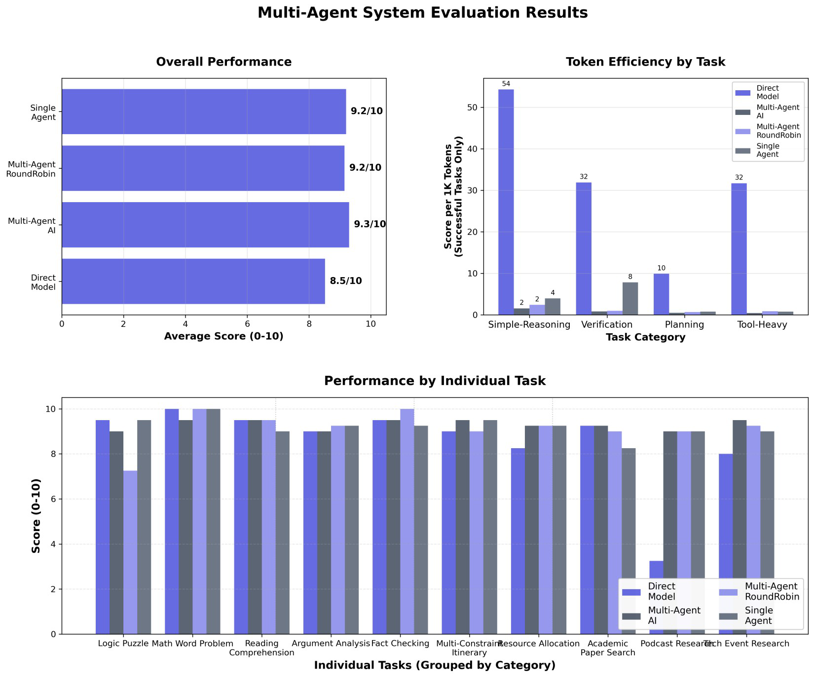
图 10.1：四种配置和四个任务套件的综合评估结果。左上：整体表现柱状图显示 Multi-Agent-AI（9.3/10）、Single-Agent-Tools（9.2/10）和 Multi-Agent-RoundRobin（9.2/10）领先，Direct-Model 为 8.5/10。右上：按任务类别的 Token 效率（仅成功任务的每 1K Token 分数）揭示 Direct-Model 的巨大优势——Simple-Reasoning 效率为 54，而智能体配置为 2-4；Verification 为 32 对比不到 8；Planning 和 Tool-Heavy 显示相似模式，Direct-Model 为 10-32 对比多智能体方法不到 1。底部：按类别分组的全部 10 个任务的个体任务表现，揭示 Direct-Model 在 Simple-Reasoning 任务上的优势，但在 Podcast Research（3.2/10）上失败，而基于智能体的配置达到 9.0/10。
结果揭示清晰的模式。Direct-Model 在 Tool-Heavy 任务上得 6.8 分，而 Multi-Agent-AI 得 9.2 分。在 Simple-Reasoning 任务上，Direct-Model 实际表现最好，9.7 分对比 Multi-Agent-AI 的 9.3 分。Token 效率显示多智能体协调的成本：Direct-Model 平均每个任务使用 355 Token，而 Multi-Agent-AI 使用 15,343 Token，增加了 43 倍。
Tool-Heavy 套件揭示最清晰的分化。Podcast Research 任务暴露了一个关键局限：Direct-Model 得分 3.2/10，因为它缺乏网络搜索能力，无法验证当前信息。所有其他带 GoogleSearchTool 的方法得分 9.0/10，展示工具访问如何改变研究密集型任务的表现。
有趣的是，Direct-Model 在 Simple-Reasoning 上获胜（9.7/10），击败所有多智能体方法。这表明 LLM 本身可以是简单推理任务的体面基线。这验证了一个重要原则：不要过度工程。当任务只需要直接的推理，无需工具协调或多步规划时，单次模型调用就足够了。多智能体开销（协调消息、推理可见性、多次 LLM 调用）没有提供任何好处，实际上引入了轻微的性能退化。
Planning 和 Verification 套件显示较少分化（所有配置得分 8.6-9.6/10），表明这些任务类型不强烈偏向任何特定架构。多智能体编排的价值很大程度上取决于任务特征。
领域特定任务套件：为你的特定领域（例如，客户支持、代码审查、数据分析）设计和实现任务套件。创建 5-10 个测试与你用例相关的不同能力的任务。考虑什么构成好的判别性任务——什么能力应该区分好与差的表现？
自定义评判器实现：为你的领域实现一个超越通用准确性和有用性的专门评判器。例如，创建评估生成代码可读性、效率和可维护性的 CodeQualityJudge，或评估同理心、解决完整性和政策合规性的 CustomerSupportJudge。在扩展前在验证集上校准你的评判器。
回归测试套件：构建跟踪你的智能体随时间表现的回归测试系统。存储带元数据（模型版本、配置、时间戳）的评估结果，可视化趋势，并在表现低于阈值时自动告警。这支持自信迭代而不意外破坏能力。
效率分析：扩展评估框架，收集超越 Token 计数的详细效率指标——墙钟时间、工具调用计数、内存使用、API 成本。构建展示配置间效率-性能权衡的可视化。2 倍加速何时证明 0.5 分的分数下降是合理的？
几个基准专门针对智能体和多智能体评估：
GAIA（Mialon et al. 2023）：466 个问题，测试推理、工具使用和多步问题解决。专注于对人类简单但对 AI 系统具有挑战性的任务，人类准确率 92%，而带插件的 GPT-4 为 15%。
SWE-bench（Jimenez et al. 2023）：来自 12 个流行 Python 仓库的 2,294 个问题的真实 GitHub Issue，测试软件工程能力。评估代码理解、bug 修复和多文件协调，Claude 2 仅解决 1.96%。
GPQA（Rein et al. 2023）：生物、物理和化学领域的研究生级问题，需要专门知识和复杂推理。包含 448 个"Google-proof"（谷歌搜索也无法直接解答）的问题，博士专家达到 65% 准确率，而熟练的非专家仅达到 34%。
Humanity's Last Exam（HLE）（Phan et al. 2025）：一个多模态基准，包含 2,500 个问题，跨数十个学科，处于人类知识前沿，设计为数学、人文和自然科学领域高级 AI 能力的全面测试。
这些基准共享我们以轨迹为中心的方法——它们评估的不仅是最终答案，还有通向解决方案的推理和工具使用过程。它们代表越来越具挑战性的试验台，当前 LLM 与人类专家表现相比存在显著差距，使其对衡量多智能体推理能力的真正进展有价值。
基准 ≠ 你的任务
公开基准告诉我们相对表现（模型 A 在任务 X 上击败模型 B），而不是模型在你的任务上会表现如何。它们无法捕获你领域的独特成功标准、跨智能体栈的多个模型的组合，或你的具体数据特征和失败模式。
基准任务 ≠ 你的业务任务。这就是为什么创造性地投资领域特定评估设计至关重要——只有与你实际用例对齐的评估套件才能可靠地衡量更改是否提高真实表现。
AI 评估中日益增长的担忧是基准污染（benchmark contamination）——当训练数据无意中包含测试问题时，会夸大表面表现。这对可能使用网络搜索或检索工具的多智能体系统特别成问题，因为基准问题常以各种形式在网上流传。
缓解污染的一些策略：
随着基准成为优化目标，它们衡量真正能力的能力会减弱。这使得开发健壮、多方面的评估方法变得更加重要，这些方法能随领域演进。
可运行的代码：评估框架
完整的评估系统实现：
- 智能体评估：evaluation/agent-evaluation.py - 智能体和多智能体系统的实用评估模式
- 核心框架：src/picoagents/eval/ - 带指标、评判器和轨迹分析的完整评估库
有效的多智能体评估需要以轨迹的思维思考——任务执行期间展开的推理和动作的完整序列。这种统一视角支持跨模型、智能体和多智能体系统的一致评估方法。
关键原则：
我们的综合评估揭示了多智能体系统何时提供价值与开销。多智能体配置在工具密集型研究任务上表现出色（9.2/10 对比直接模型 6.8/10），但在简单推理任务上增加不必要的开销，直接模型调用表现最好（9.7/10 对比多智能体 9.3/10）。Token 效率显示成本：多智能体系统使用比直接模型调用多 43 倍的 Token。这展示了为什么评估至关重要：它揭示哪种架构复杂性由任务需求证明合理，哪种是过度工程。
我们构建的评估系统为衡量和改进多智能体系统提供了实用基础。通过结合基于参考的效率与基于 LLM 的灵活性，并迭代智能体配置和评估方法，我们可以开发更有效的智能体架构，同时理解多智能体方法何时提供真正价值。
本章涵盖：
到这里，你应该已经熟悉智能体（第 4 章）、常见的多智能体模式（第 2 章）以及如何评估表现（第 10 章）。下一个合乎逻辑的步骤：我们如何系统化地改进表现？
当我思考优化时，我想起小时候和父亲一起修理内燃机的经历。我们修理自己的车（标致 505 和 504）以及连接到发电机用于发电的柴油发动机。我们遵循一个简单的两阶段过程：首先，让发动机运转起来作为基线；其次，迭代地观察信号（发动机声音、转速表现）并调整参数（火花塞清洁度、燃油混合比、点火正时）以实现最佳性能。
对于智能体，我们遵循同样的过程。我们有要测量的信号（第 10 章的评估指标）。我们有要调整的参数（指令、工具、编排模式）。问题是：哪些参数以最少的努力带来最多的改进？本章通过建立优化优先级框架并检查十个常见失败模式来回答这个问题——它们准确告诉你需要修复什么。这些说明大多适用于自主多智能体编排模式，错误经常源于这些系统的灵活性和自主性。
优化循环很直接：测量（运行评估）、分析（识别失败）、修改（调整参数）、验证（重新运行评估），然后重复。
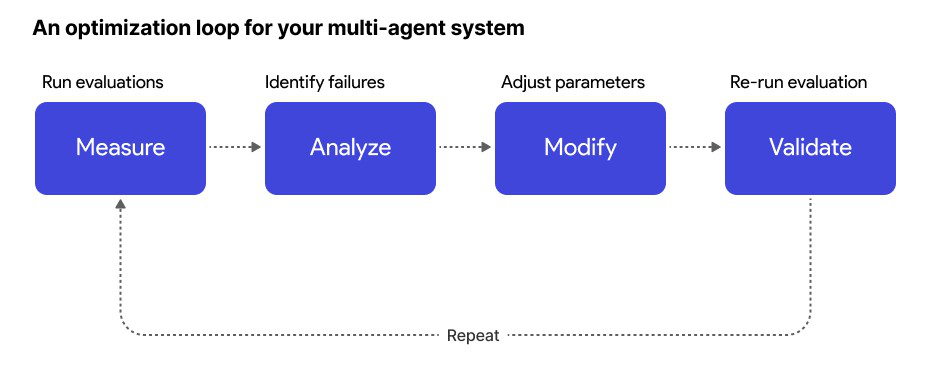
图 11.1：多智能体系统的优化循环，展示迭代周期：测量（运行评估）→ 分析（识别失败）→ 修改（调整参数）→ 验证（重新运行评估）→ 重复。
挑战不在于循环本身——而在于知道调整哪些参数能产生最大影响。
多智能体系统有两个优化层级，每个需要不同的专长并提供不同的投资回报：
模型级参数（最低层级）：
这包括 LLM 权重、架构、超参数和训练数据。虽然重要，但优化模型级参数通常需要深入的 ML 专长和大量计算资源——通常超出应用级优化的范围。
智能体系统参数（应用层级）：
优化问题：给定评估的测量结果，我们应该调整哪些参数以及如何调整？
优化优先级——从影响最大的地方开始：
指令和工具对智能体行为有最直接的影响。当评估揭示失败时，首先检查：指令足够具体吗？智能体有正确的工具吗？在考虑模型更改或编排复杂性之前，这些简单的修复往往就能产生显著收益。
模型选择很重要——前沿模型（GPT-5、Claude 4.5）的指令遵循能力远强于较小模型。然而，当推理模型试图承担超出其设计范围的职责（例如编排器的角色）时，有时会降低多智能体系统的表现。
一旦个体智能体工作得相当好，就实验编排模式和终止条件。使用评估指标跨模式比较表现。在第 10 章（10.6.5 节）中，我们展示了对于简单推理任务，Direct-Model（9.7/10）击败了 Multi-Agent-AI（9.3/10）——多智能体开销在该特定用例中没有提供任何好处。改进终止条件（使用带对齐指令的 TaskStatusTool）显著减少了 Token 使用并提高了可靠性。
典型轨迹：优化智能体系统参数直到表现趋于平稳（前沿模型通常 95%+），然后考虑在收集的执行数据上微调较小模型。我们将在 11.3.2 节涵盖何时微调合理以及实际工作流。
在本节中，我们探讨自主多智能体系统在生产环境中失败的 10 个常见原因，以及应对每个失败模式的具体策略。在构建 AutoGen 框架并支持生产部署两年后，我观察到多智能体系统以一致、可预测的方式失败。理解这些失败模式能准确告诉你该优化什么。把它当作诊断和修复多智能体系统的检查清单。
问题：智能体由 LLM 驱动，LLM 需要仔细的提示词。模糊或不完整的指令导致不可预测的行为和糟糕的表现。
"帮助研究任务"这样的模糊指令几乎没告诉智能体如何运作。有效的指令类似于全面的职位描述，涵盖行为指南、工具选择、约束、输出格式和错误处理。我们在第 4 章（第 4 章）涵盖了指令设计——优化的关键是基于评估失败迭代地扩展指令。当智能体在特定测试用例上失败时，添加应对这些失败模式的指导。
优化策略：使用你的评估结果系统化地扩展指令。当智能体在特定测试用例上失败时，添加应对这些失败模式的指导。将指令视为随着你对任务的理解而演进的活文档。优秀的智能体提示词可以有数页长！
问题：模型大小之间的能力差距显著。较小的模型在指令遵循上表现急剧下降，并难以胜任多智能体协调所需的复杂推理。这创造了一个困境：前沿模型（GPT-5、Claude 4.5）提供强大表现，但成本是小模型的 20-30 倍。对于大批量生产部署，这种差异是实质性的。
现实：较小模型开箱即用无法匹配前沿表现。你的 Llama-7B 或 Qwen3B 模型需要大量优化或微调才能接近 GPT-4/Claude 级别的表现。但"用更大的模型"在成本约束下并不总是实际——前沿模型在大规模下比小模型贵 20-30 倍。
解决方案：优化轨迹通常遵循此路径：
何时微调实际合理？
优化智能体系统参数后，分析剩余的失败。两种场景证明模型级优化合理：
场景 1：参数无法修复的残余失败。问：系统为什么仍然失败？常见原因：
- 分布外问题：你的领域涉及训练数据中罕见的知识（例如，不常见材料的化学性质、小众监管框架）
- 反直觉的业务逻辑：正确行为违反常见模式（例如，在你的呼叫中心，有时提前挂断客户是正确的结局）
- 长尾边缘情况：出现在你的业务中但很少出现在一般文本中的解决方案
这些失败表明模型缺乏领域特定的推理模式——正是微调所解决的。
场景 2：完整表现下的效率优化。即使在 100% 准确率下，微调也可能因成本、延迟或隐私而合理。关键洞见：你的业务领域是有边界的。前沿模型携带强推理能力（需要的）加上广泛的世界知识（你的任务不需要的）。SFT 和 RL 微调帮助较小模型为你的特定领域保留推理能力，同时将容量从不使用的通用知识中重新分配。这就是为什么在你的任务上微调的 7B 模型有时可以匹配 70B 通用模型。
实际工作流：
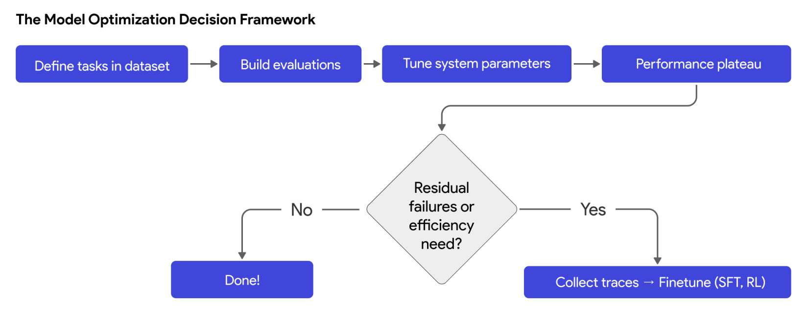
图 11.2：模型优化决策框架。大多数团队在智能体系统调优达到 95%+ 准确率后即"完成！"。微调仅在残余领域特定失败或效率需求（成本、延迟、隐私）下合理。
学术工作支持这种方法。Luo et al.（Luo et al. 2025）通过自动收集执行轨迹，演示了在智能体内使用 RL 训练 LLM。然而，这仍然特定于任务（不能为所有智能体训练一次），并需要定义显式的奖励函数。
这些模型级技术需要 ML 基础设施和专长——它们是在穷尽智能体系统改进后追求的进阶优化。
问题：开发者常常低估模型差异。系统消息在同一模型的不同版本之间不可移植，更不用说跨不同提供商。简单更换模型却期望相似行为，是一个常见且代价高昂的错误。
考虑这条在 GPT-4 上效果良好的指令：
instructions = """Analyze the data and provide insights.
Think step-by-step about patterns, then formulate
3-5 key recommendations."""
这在 GPT-4 强大的推理能力下可能完美运作。但在较小模型上，模糊的"逐步思考"和"提供洞察"可能产生不一致的结果。
解决方案：将指令视为模型特定的资产：
# Model-specific instruction registry
INSTRUCTIONS = {
"gpt-4": """Analyze the data and provide insights.
Think step-by-step about patterns, then formulate
3-5 key recommendations.""",
"gpt-3.5-turbo": """Follow these exact steps:
1. List all data points in the dataset
2. Identify the 3 highest and 3 lowest values
3. Check for patterns (increasing, decreasing, cyclical)
4. For each pattern found, write one specific recommendation
Format each recommendation as:
- Pattern: [what you observed]
- Recommendation: [specific action]""",
}
def create_agent(model: str):
return Agent(
name="analyst",
instructions=INSTRUCTIONS[model],
model=model
)
优化策略：
第 10 章的评估基础设施在这里变得关键：你可以系统化地测试模型更改是否影响你在特定任务上的表现。
问题：工具定义智能体的动作空间。智能体可靠性直接受工具质量限制。一个常见错误是构建许多通用工具，而非更少但优秀的领域特定工具，或者干脆不投资为生产用途设计工具。
解决方案：投资经过实战检验的工具目录。PicoAgents 提供三类内置工具，你可以用作自己生产工具的模板：
核心工具（通用实用程序，无外部依赖）：
研究工具（信息检索）：
编码工具（文件操作和代码执行）：
你可以在本书的 GitHub 仓库中探索完整实现，并查看 examples/agents/、examples/workflows/ 和 examples/orchestration/ 中的使用示例。我们在第 4 章（4.6.3 节）涵盖了工具设计和实现模式。
生产工具的关键原则：
将工具开发聚焦于领域特定的业务操作，而非通用实用程序。生产智能体需要针对你特定工作流量身定制的可靠工具。
问题：终止条件控制成本和可靠性。糟糕的终止逻辑导致消耗 Token 的失控进程，或放弃可解决任务的过早退出。
考虑这个常见反模式：
# Ineffective: Agent never told to produce this pattern
termination = TextMentionTermination(
text="TASK_COMPLETE" # But agent instructions never mention this!
)
agent = Agent(
name="research_agent",
instructions="Research the topic and provide findings."
# No instruction to say "TASK_COMPLETE"
)
workflow = SequentialWorkflow(
agents=[agent],
termination=termination
)
# This will run until hitting max_rounds or timeout!
解决方案：将终止条件与智能体能力对齐。我们在第 7 章（7.2 节）涵盖了 MaxMessageTermination、TokenUsageTermination、TimeoutTermination 和 CompositeTermination 等终止模式。更好的是，使用 TaskStatusTool 让智能体显式发出完成信号：
agent = Agent(
name="research_agent",
instructions="""Research the topic and provide findings.
When finished, call the task_status tool with:
- status='complete' if all requirements met
- status='incomplete' if you hit limitations
- rationale explaining your assessment""",
tools=[search_tool, task_status_tool]
)
优化策略：使用评估数据校准终止条件。跟踪如下指标：
开发期间设置保守限制，然后根据生产数据收紧。记住：以部分结果提前终止，胜于在发散的轨迹上浪费资源。
问题：多智能体系统存在于从显式工作流控制到自主涌现行为的谱系上（见第 2 章）。模式选择深刻影响成本、可靠性和系统行为。错误的选择浪费资源或无法提供多智能体收益。
关键优化洞见：更自主的模式并非固有更好——它们以可预测性换取灵活性。问题是哪种权衡匹配你的任务特征。
第 10 章的经验证据：
我们的综合评估（10.6.5 节）跨不同任务类型比较了 Direct-Model、Single-Agent-Tools、Multi-Agent-RoundRobin 和 Multi-Agent-AI。结果揭示清晰模式：
优化原则：从可能有效的最简单模式开始。仅在评估展示明确好处时添加复杂性。设计良好的单智能体通常胜过设计糟糕的多智能体系统。
模式选择指南：
表 11.1 将任务特征映射到适当的模式。我们在第 2 章（第 2 章）深入涵盖了这些模式。
表 11.1：基于任务特征的模式选择指南
| 任务特征 | 模式 | 权衡 |
|---|---|---|
| 固定、已知步骤 | 顺序工作流 | 可预测的成本、易调试、低灵活性 |
| 条件路由 | 条件/监督者 | 显式分支、有界执行 |
| 独立子任务 | 并行工作流 | 最大吞吐量、清晰的扇入/扇出 |
| 未知分解 | 基于计划的编排 | 动态规划、每步增加开销 |
| 不确定的解决路径 | AI 驱动编排 | 涌现式协作、无界成本 |
优化策略：
常见反模式：
不要对线性任务使用 AI 驱动编排：
# Anti-pattern: 3-5x cost for no benefit
expensive = AIOrchestrator(
agents=[fetch_agent, transform_agent, save_agent]
)
# Better: Deterministic, fast, cheap
efficient = SequentialWorkflow(
agents=[fetch_agent, transform_agent, save_agent]
)
生产系统通常使用混合方法：顶层协调用基于计划的编排，可预测的子任务用工作流。微软的 Magentic-One（Fourney et al. 2024）和 Anthropic 的研究系统（Hadfield et al. 2025）都展示了这种任务感知的模式切换。
问题：在野外看到的大多数智能体示例是无状态的——它们不保留之前交互的知识，也不随时间改进。每次对话都从零开始，重复同样的错误。
解决方案：实现支持学习的记忆系统。在第 4 章（4.7 节），我们涵盖了两种记忆管理方法：应用管理（开发者调用 memory.add() 存储，框架通过 get_context() 注入）和智能体自管理（4.8 节）（智能体使用记忆工具主动组织自己的知识）。两种方法都使用向量数据库进行语义搜索，并支持各种后端（ChromaDB、Qdrant、Pinecone）。
优化考虑：记忆增加延迟（检索）和成本（嵌入、存储）。使用评估来确定：
并非每个智能体都需要记忆。对于独立任务，无状态智能体更简单、更快。
问题：长时间运行的复杂任务受益于自我反思——规划、审查进度，并识别当前方法不奏效的能力。没有元认知，智能体无法放弃受损的轨迹或在卡住时重置。
解决方案：通过反思循环实现元认知能力。我们在第 2 章（第 2 章）涵盖了基于计划的模式，并在第 7 章（7.5 节）实现了它。PlanBasedOrchestrator 提供内置元认知：创建初始计划（7.5.1 节）、执行步骤、每步后评估进度（7.5.2 节），并在进度不足时重新规划（7.5.3 节）。微软的 Magentic-One（Fourney et al. 2024）展示了类似的自我监控，通过其"台账"系统实现了高达 31% 的表现提升。
优化权衡：元认知为反思增加 LLM 调用，但可以防止在失败的轨迹上浪费计算。使用评估来衡量反思开销是否由提高的成功率证明合理。
问题：没有评估框架，你无法理解当前表现或配置更改如何影响结果。这使优化成为猜谜游戏。
我们在第 10 章全面涵盖了评估。与优化的联系是直接的：你无法优化你无法衡量的东西。
最小可行评估：
from picoagents.eval import (
EvalRunner, ExactMatchJudge, AgentEvalTarget)
from picoagents.types import Task
# 1. Define tasks with clear expected outputs
tasks = [
Task(
name="weather_tool",
input="What's the weather in Paris?",
expected_output="Use weather API tool",
category="tool_usage"
),
Task(
name="summarization",
input="Summarize this article: ...",
expected_output="concise summary",
category="summarization"
)
]
# 2. Create judge and runner
judge = ExactMatchJudge()
runner = EvalRunner(judge=judge)
# 3. Evaluate each configuration
scores_v1 = await runner.evaluate(
AgentEvalTarget(agent_v1), tasks)
scores_v2 = await runner.evaluate(
AgentEvalTarget(agent_v2), tasks)
问题：对智能体来说，所有动作看起来都平等。没有适当的风险评估，获取天气数据和转账具有相同的分量。这造成了严重的可靠性和安全关切。
解决方案：实现成本感知的行动委托，这是我们在 3.4.2 节涵盖的 UX 原则。行动具有不同级别的后果——如果行动包含错误或不恰当，其潜在影响。优化挑战是实现成本评估和批准机制。
PicoAgents 实现：
工具支持 ApprovalMode 来控制执行：
from picoagents.tools import tool, ApprovalMode
from picoagents.agents import Agent
# Low-risk tool: executes immediately
@tool
def search_web(query: str) -> str:
"""Search the web for information."""
return f"Search results for: {query}"
# High-risk tool: requires approval
@tool(approval_mode="always_require")
def send_email(to: str, subject: str, body: str) -> str:
"""Send an email to a recipient."""
return f"Email sent to {to}"
@tool(approval_mode="always_require")
def delete_database_record(table: str, record_id: int) -> str:
"""Delete a record from the database."""
return f"Deleted record {record_id} from {table}"
# Agent with mixed-risk tools
agent = Agent(
name="assistant",
model_client=model,
tools=[search_web, send_email, delete_database_record]
)
# When agent calls high-risk tool, execution pauses
response = await agent.run(
"Research competitors and email report to boss@company.com"
)
if response.needs_approval:
# Agent found information and wants to send email
# User can review and approve/reject
approval_requests = response.approval_requests
for request in approval_requests:
print(f"Tool: {request.tool_name}")
print(f"Parameters: {request.parameters}")
# User decides: approve or reject
成本分类框架：
表 11.2：工具风险级别与批准需求
| 风险级别 | 特征 | 示例 | 批准模式 |
|---|---|---|---|
| 低 | 只读，无副作用 | 搜索、计算、读取文件 | NEVER（自动执行） |
| 高 | 不可逆或代价高昂 | 发送邮件、删除数据、付款 | ALWAYS（需要批准） |
优化考虑：人在回路增加延迟，但防止灾难性失败。权衡取决于你的领域：
第 3 章的成本感知委托原则在这里成为优化关注点：平衡安全（防止灾难性动作）与速度（最小化批准摩擦）。使用评估来衡量批准政策是过于严格（>95% 批准率表明过度谨慎的标记）还是过于宽松（在测试用例中遗漏实际风险）。
问题：多智能体架构增加复杂性。多个自主协作的智能体增加了错误和可靠性问题的表面积。
在实现任何多智能体系统之前，诚实地评估你的任务是否需要这种复杂性。
决策检查清单：
在以下情况使用多智能体系统（详细讨论见 1.3 节）：
单智能体足够时：
# Don't need multi-agent for simple tasks
simple_task = "Translate this text to French"
result = await translation_agent.run(simple_task)
# Don't need multi-agent for linear, single-domain tasks
linear_task = "Summarize this 10-page document"
result = await summary_agent.run(linear_task)
多智能体增加价值时：
# Complex, multi-domain research task
complex_task = """Analyze market trends for electric vehicles
in European markets, considering regulatory changes,
consumer sentiment, and competitive landscape"""
# Benefits from specialized agents:
# - Research agent: Gather data from multiple sources
# - Analysis agent: Process quantitative market data
# - Regulatory agent: Track policy changes
# - Synthesis agent: Combine insights into coherent report
result = await orchestrator.run(
task=complex_task,
agents=[research_agent, analysis_agent,
regulatory_agent, synthesis_agent]
)
优化原则：从可能有效的最简单架构开始。仅在评估展示明确好处时添加复杂性。单个设计良好的智能体通常胜过设计糟糕的多智能体系统。
这十个失败模式不仅是需要避免的问题——它们是优化机会。每个都代表一个维度的测量和系统化改进可以增强你的系统：
第 10 章的评估框架支持跨所有这些维度的系统化改进。
优化多智能体系统需要迭代的纪律：通过评估衡量表现、识别失败点、调整参数，并验证改进。关键是知道将优化工作聚焦在哪里能产生最大影响。
优化是一种持续的纪律，而非一次性活动。从可能有效的最简单架构开始，严格衡量表现，并在评估展示明确好处时逐步添加复杂性。设计良好的单智能体通常胜过设计糟糕的多智能体系统。
本章涵盖：
到目前为止，我们讨论了构建智能体和多智能体系统，但有一个隐含假设：所有组件（例如，工具、多智能体系统内的智能体）在同一执行上下文中运行——同一台机器、同一网络内，或至少在同一组织边界内。这是学习智能体如何工作的合理起点，但一些现实应用通常需要更分布式的架构，其中智能体和工具在单独的执行上下文中运行——不同的机器、容器、区域或组织——通过网络通信，没有共享内存（图 12.1）。
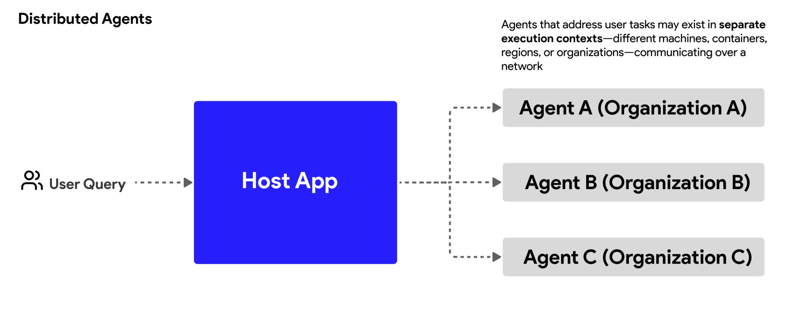
图 12.1：应对用户任务的智能体可能存在于单独的执行上下文中——不同的机器、容器、区域或组织——通过网络通信。
想象你正在构建一个财务分析系统，其中你的数据检索智能体运行在你公司的安全云上，但它需要与来自你律师事务所基础设施的法律合规智能体以及来自第三方服务提供商的市场分析智能体协调。每个智能体运行在不同的机器上，可能在不同的地理区域，由不同的组织管理。这些智能体如何发现彼此？它们如何安全通信？当任务需要数小时才能完成而网络连接中途断开时会发生什么？如果智能体在执行期间需要请求用户确认怎么办？
这些挑战中有许多是经典的分布式计算问题：发现、通信、容错和协调。然而，智能体引入了现有分布式计算协议未设计处理的新特征：决策的自主性、可能运行数小时或数天同时保持交互的任务、在执行期间不可预测的点需要人类输入的工作流，以及由 AI 模型而非确定性规则驱动的适应性行为。
本章探讨近期协议如何应对这些挑战（MCP、A2A），它们如何与众所周知的分布式计算基础相关联，同时添加智能体特定的语义。我们将专注于理解这些协议为何重要、它们提供什么价值，以及何时在你的系统中使用它们。
设计组件在单独环境中运行的系统既带来优势也带来挑战。分布式智能体提供改进的可扩展性——你可以独立扩展特定能力，而非扩展整个系统。它们提供执行环境的隔离，强制执行安全和资源边界。它们支持容错，因为一个智能体的失败不一定使整个系统崩溃。它们让你利用跨不同基础设施的异构资源。权衡是相比在同一进程中运行的智能体，通信、协调和管理的复杂性增加。
分布式智能体的概念与分布式计算没有根本区别。核心问题——发现、通信、容错、协调——与 RPC、REST、gRPC 和消息队列所解决的挑战相同。
关键区别在于逻辑所在的位置。在传统分布式计算中，协调和决策驻留在基础设施层——Kubernetes 编排容器、服务网格管理流量、API 网关通过预定义规则路由请求。在分布式智能体系统中，这种逻辑移至应用层，由做出自主决策的 AI 模型驱动。基础设施关注点——通信协议、容错、安全、资源管理——停留在协议层。
具体的对照可以澄清什么是真正新的与什么是借鉴的：
消息队列 -> 任务委托：消息队列解耦生产者与消费者，实现异步任务处理。智能体任务委托建立在这种模式之上，但使用 AI 模型基于对任务状态的推理自适应地请求额外上下文或协助，而非预定义的工作流步骤。
服务发现（Consul、etcd）-> 智能体发现：传统服务发现帮助服务按名称或能力找到彼此。智能体发现添加更丰富的能力元数据——技能、领域专长、支持的交互模式——实现基于语义理解而非仅服务名称的智能路由。
熔断器与重试 -> 容错：分布式系统以退避方式重试失败请求。智能体任务通常跨越数小时或数天，因此它们需要会话可恢复性和持久任务状态——简单重试会丢失累积的工作。
API 网关 -> 编排：API 网关基于规则将请求路由到适当的后端服务。智能体编排器做同样的事，但使用 AI 驱动的推理自适应地分解复杂请求、路由到专家智能体并综合结果。
原语非常相似——发现、通信、容错、状态管理。变化的是语义：智能体以传统分布式系统通常不具备的方式自主、长时间运行、交互式和适应性强。除了执行预定义工作流，智能体还推理目标、从结果学习、与其他智能体协商，并基于上下文调整策略。这种由 AI 模型驱动的认知能力，将智能体协议与其分布式系统前身区分开来。
在分布式环境中运行的智能体需要四项核心能力，这些能力源于智能体的独特特征：自主性、长时间运行执行、交互性和适应性行为。表 12.1 总结了这些需求。
表 12.1：分布式智能体的核心能力
| 能力 | 为什么智能体需要这个 |
|---|---|
| 流式传输与进度 | 智能体任务通常跨越数小时或数天，分析文档、编排工作流或处理数据集。用户需要实时可见性以实现可观测性、调试和信任。 |
| 可恢复性 | 3 小时智能体任务期间的网络故障不应丢失所有累积工作。会话必须经受断开和重连。 |
| 持久性 | 即使服务器重启，智能体结果也必须持久。客户端需要持久引用来检查状态或带外检索结果。 |
| 多轮交互 | 智能体经常需要执行中途的输入：高成本动作的用户确认、模糊请求的澄清，或推理步骤的 AI 协助。 |
以下部分探索为应对这些需求而出现的两个协议——MCP 和 A2A——以及它们如何实现这些能力。模型上下文协议（MCP）（Anthropic 2024c）专注于标准化工具和上下文集成。智能体间协议（A2A）（Linux Foundation 2025）解决跨组织智能体协作。
当 Anthropic 在 2024 年 11 月引入 MCP 时（Anthropic 2024b），焦点很窄：给大型语言模型对上下文的标准化访问。名字本身——模型上下文协议——反映了这一范围。协议定义了 AI 应用（"客户端"）如何连接到暴露工具（可调用的函数）、资源（可读取的数据）和提示词（可复用模板）的外部系统（"服务器"）。
像 MCP 这样的标准化协议解决了困扰自定义实现的集成、分发、发现、安全和灵活性挑战。这就是为什么 MCP 随着基于智能体的系统激增而快速被采用。表 12.2 说明了 MCP 如何应对每个挑战。
表 12.2：MCP 的价值主张
| 挑战 | 没有 MCP | 有了 MCP |
|---|---|---|
| 集成 | X 团队花数周集成 Z 团队的新工具 | X 团队第一天就支持任何 MCP 工具 |
| 分发 | 为 Cursor、Windsurf、VSCode、Claude Desktop 等分别编写扩展 | 编写一个处处可用的 MCP 服务器 |
| 发现 | 团队在 Slack 中问："有人有做 X 的工具吗？" | 团队发布和查找工具的中央注册表 |
| 安全 | 每个团队为 LLM 可访问的工具实现（或跳过）自己的认证 | 集中式身份验证和托管 MCP 服务器注册表 |
| 部署灵活性 | 工具与应用代码紧密耦合，需要相同的部署上下文 | 工具在单独上下文中远程运行——不同机器、区域或组织——同时对应用表现为本地 |
自推出以来，MCP 迅速演进，添加了不仅能为单个智能体提供上下文、还能支持更广泛的智能体间行为需求的能力。这些更新包括引入 MCP 请求征询（服务器可以在执行中途请求用户输入）、采样（服务器可以请求客户端的 LLM 进行补全）、可恢复流（会话经受网络断开）、进度通知（工具可以流式传输实时状态更新）和资源链接（工具可以返回超越工具调用的结果持久引用）。这些特性使 MCP 工具能够像完整智能体一样行为——运行数小时、流式传输更新、请求人类输入、将子任务委托给 LLM，并经受网络故障。
MCP 定义了一个干净分离关注点的三层架构。底层是 MCP 服务器，暴露能力——工具（可调用的函数）、资源（可读取的数据）、提示词（可复用的 LLM 模板）以及潜在的自定义扩展。服务器可能暴露单个工具或数十个相关能力。例如，"TechCrunch 新闻服务器"可能暴露获取文章的工具、访问文章存档的资源和摘要新闻条目的提示词。
中间层是 MCP 客户端，处理与服务器的协议级通信。客户端与服务器保持 1:1 连接，管理消息交换、会话状态和错误处理的底层细节。客户端通常嵌入在更高层应用中，而非独立组件。
顶层是 MCP 宿主——面向用户的应用，如 Claude Desktop、Cursor 或 VSCode¹。宿主嵌入一个或多个 MCP 客户端连接到服务器，并基于用户需求和上下文对调用哪些工具做出智能决策。宿主编排整体工作流：接受用户请求、从连接的服务器发现可用工具、通常使用 LLM 确定调用哪些工具、通过客户端执行这些调用、处理交互式回调（如用户确认），并向用户呈现结果。
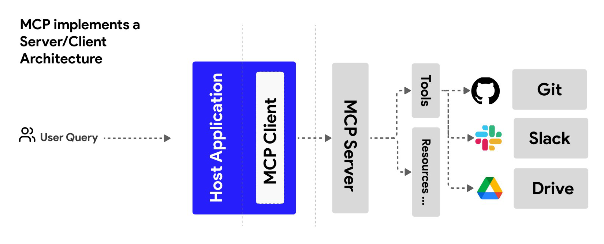
图 12.2：MCP 的三层架构：宿主（面向用户的应用）嵌入与暴露工具、资源和提示词的服务器通信的客户端。图中展示提供 Slack、Google Drive 和数据库等工具访问的示例 MCP 服务器。
MCP 支持两种主要传输机制。stdio 传输将服务器作为客户端的子进程运行，通过标准输入和输出通信。这非常适合本地集成——IDE 扩展、桌面工具或服务器和客户端在同一台机器上运行的开发环境。可流式 HTTP 传输使用网络请求，更适合服务器远程运行、多个客户端需要连接到同一服务器，或你需要通过标准 HTTP 工具更容易调试和监控的分布式系统。
以下是使用 MCP SDK 的最小 MCP 服务器设置（也有 TypeScript 和其他语言版本）：
# server.py
import os
from mcp.server.fastmcp import FastMCP
import requests
mcp = FastMCP(
"TechCrunch News Server",
host=os.environ.get("MCP_SERVER_HOST", "localhost"),
port=int(os.environ.get("MCP_SERVER_PORT", 8011))
)
服务器暴露一个从 TechCrunch 获取新闻的工具：
@mcp.tool(title="Fetch from TechCrunch")
def fetch_from_techcrunch(category: str = "latest") -> str:
"""Fetch the latest news from TechCrunch."""
allowed = {"ai", "startup", "security", "venture", "latest"}
cat = category.lower() if category.lower() in allowed else "latest"
url = (f"https://techcrunch.com/tag/{cat}/"
if cat != "latest"
else "https://techcrunch.com/")
try:
response = requests.get(url)
if response.ok:
from bs4 import BeautifulSoup
soup = BeautifulSoup(response.text, "html.parser")
text = soup.get_text(separator=' ', strip=True)
return text[:1000] + ("..." if len(text) > 1000 else "")
return "Failed to fetch news."
except Exception as e:
return f"Error fetching news: {str(e)}"
最后，运行服务器：
if __name__ == "__main__":
mcp.run(transport="streamable-http")
此示例使用 FastMCP API，它处理协议样板代码。@mcp.tool() 装饰器将函数注册为任何客户端都可以发现和调用的 MCP 工具。运行此服务器使其在 http://localhost:8011/mcp 可用，准备好接受任何 MCP 兼容宿主应用的连接。
写完这个服务器后，它可以与 Claude Desktop、Cursor、Windsurf、VSCode 扩展或任何嵌入 MCP 客户端的自定义宿主应用一起工作——一次编写，处处使用。
MCP 定义了几个原语，支持简单工具集成和复杂的智能体间通信。
工具、资源和提示词：服务器暴露三种类型的能力。工具是可以用参数调用的函数（如上面的 fetch_from_techcrunch 示例）。资源是可以读取的数据源，由 URI 标识——服务器可能暴露 news://techcrunch/ai 作为 AI 相关文章的资源。提示词是服务器提供的可复用 LLM 模板，用于标准化常见交互。
进度通知：工具可以在执行期间流式传输实时状态更新。服务器发送结构化进度元数据（完成百分比、当前步骤、状态消息），客户端显示给用户或记录用于调试。这使长时间运行的操作可观测而非不透明。
会话管理与可恢复性：MCP 中的 StreamableHTTP 传输支持使用会话 ID 和事件回放来经受网络故障。每条消息获得唯一事件 ID。当客户端断开后重连时，它提供最后收到的事件 ID，服务器从其事件存储（开发用内存，生产用数据库支撑）回放所有错过的事件。
工具持久性的资源链接：除了内联返回结果，MCP 工具还可以返回资源 URI。这很有价值，因为客户端可以选择轮询或订阅这些 URI 以获取更新。资源可以由持久存储（数据库、文件系统、云存储）支撑，确保结果经受服务器重启。这将任务执行与客户端连接解耦，实现异步工作流。
请求征询（用户输入）：服务器可以暂停工具执行以请求结构化用户输入。服务器发送带 JSON 模式的征询请求，指定预期的响应格式。客户端提示用户、验证响应并发送回去。关键是，客户端保留控制权——它可以验证、修改或拒绝征询请求。服务器基于输入恢复执行。这支持人在回路工作流，如付款确认或澄清请求。
采样（AI 协助）：服务器可以在工具执行期间请求客户端的 LLM 补全。当服务器发出采样请求时，客户端决定是否执行调用、使用哪个模型以及包含哪些上下文。采样是服务器发起但客户端中介的——一个深思熟虑的安全设计，使服务器不持有或使用模型 API 密钥。研究工具可能累积发现，并在继续前请求客户端的 LLM 生成摘要。这创造了双向 AI 交互：客户端使用 LLM 选择调用哪些工具，服务器使用相同的 LLM（通过客户端）增强其处理，而客户端仍然是 LLM 使用的守门人。
这些原语组合起来，将简单工具转变为能够长时间运行、交互式、适应性行为的自主智能体。
MCP 擅长上下文供给——给智能体工具、资源和提示词的访问。它也演进为通过实现之前识别的四项核心能力（表 12.1）来支持智能体间通信。表 12.3 展示了 MCP 特性如何实现每项能力。
表 12.3：MCP 如何实现分布式智能体能力
| 能力 | MCP 特性 | 工作方式 |
|---|---|---|
| 流式传输与进度 | 通过 SSE/WebSocket 的进度通知 | 服务器在工具执行期间发送带完成百分比、当前步骤和状态消息的结构化进度更新 |
| 可恢复性 | 会话 ID + 事件回放 | 客户端用最后收到的事件 ID 重连；服务器从事件存储回放错过的事件 |
| 持久性 | 资源链接（持久 URI） | 工具返回由持久存储支撑的资源 URI；客户端轮询或订阅更新 |
| 多轮交互 | 请求征询（用户输入）+ 采样（LLM 调用） | 服务器暂停执行以请求用户输入或 AI 协助，然后基于响应恢复 |
有了这些能力，MCP 工具变得不仅仅是简单函数——它们像智能体一样行为。协调这些工具的宿主应用充当编排器智能体，对任务分解、路由和结果综合做出智能决策。
当工具成为智能体
MCP 工具已超越简单函数调用——它们可以流式传输进度、在执行中途请求用户输入、调用 LLM 进行推理，并在长时间运行的操作中维护状态。当 MCP 工具与有状态服务器、可恢复会话和采样/征询流组合时，它们可以像智能体一样行为。然而，智能体身份、治理和跨组织发现是独立的关注点。MCP 通过组合实现智能体式行为，但组织级治理（问责、SLA、可审计轨迹）仍然存在于协议之外。
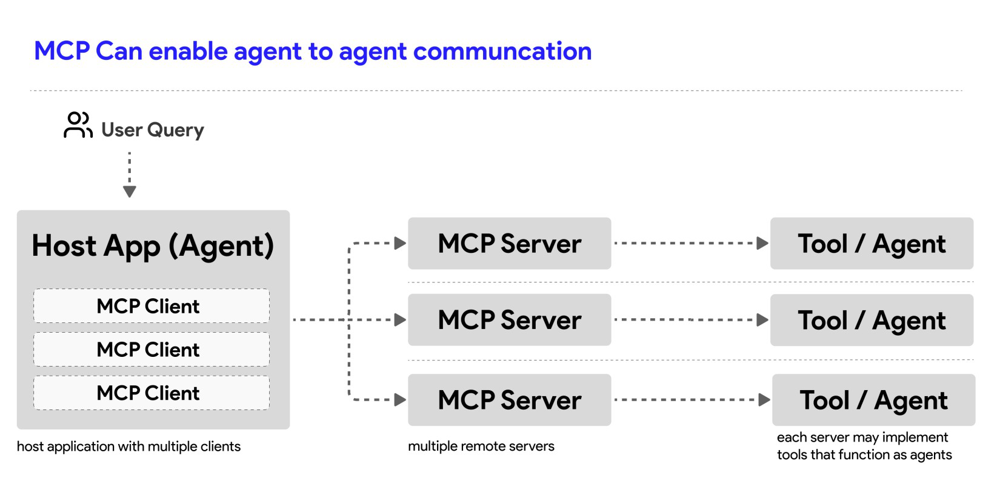
图 12.3：通过 MCP 客户端-服务器架构的智能体间通信。带多个 MCP 客户端的宿主应用充当编排器智能体，与暴露作为专家智能体运行的工具的远程 MCP 服务器协调。每个服务器可以实现领域特定能力，而编排器管理用户交互、任务分解和跨分布式智能体网络的结果综合。
这种能力组合支持强大的智能体间通信模式。如图 12.3 所示，宿主应用充当编排器智能体，与用户交互并将请求路由到作为 MCP 工具暴露的专家智能体。例如，作为 MCP 工具运行的旅行规划智能体和研究智能体成为能够数小时执行、交互式确认和适应性行为的自主组件。编排器处理任务分解、协调执行、管理并发智能体操作之间的状态、在整个交互中保留用户上下文、在智能体不可用时实现重试和回退逻辑，并将多个专家的结果综合为连贯响应。
MCP 工具设计为由 LLM 驱动，使其成为智能体集成的自然选择。要在我们的智能体中使用 MCP 工具，我们需要让它们与本地工具无缝协作，同时获得 MCP 提供的分布式收益——标准化、可发现性和跨应用兼容性。
回顾 4.6.3 节，我们构建了一个 BaseTool 抽象，为所有工具提供通用接口——无论是简单 Python 函数、REST API 调用还是外部集成。MCP 工具是需要在 MCP 协议语义与智能体工具接口之间桥接的外部集成。要做到这一点，我们需要解决两个重要设计需求：管理有状态的 MCP 会话，以及将 MCP 工具适配到我们智能体期望的 BaseTool 接口。
与无状态函数调用不同，MCP 服务器需要持久的 ClientSession 对象进行通信。会话必须建立、维护并正确清理。MCPClientManager 类处理此生命周期：
class MCPClientManager:
"""Manages connections to MCP servers."""
def __init__(self):
self._servers: Dict[str, MCPServerConfig] = {}
self._sessions: Dict[str, ClientSession] = {}
self._tools: Dict[str, List[MCPTool]] = {}
async def connect(self, server_id: str) -> None:
"""Connect to server and discover tools."""
config = self._servers[server_id]
# Establish connection using appropriate transport
read, write, context = await connect_to_server(config)
# Create and initialize session
session = ClientSession(read, write)
await session.__aenter__()
self._sessions[server_id] = session
await session.initialize()
# Discover available tools
await self._discover_tools(server_id)
管理器维护服务器配置、活跃会话和已发现工具的注册表。连接到服务器时，它建立传输（本地服务器用 stdio，远程用 HTTP）、创建会话、初始化 MCP 协议握手，并通过调用 session.list_tools() 发现可用工具。这种关注点分离——配置、连接、发现——支持惰性连接模式，服务器被注册但直到需要才连接。
从智能体的角度看，MCP 工具必须与原生工具完全相同。MCPTool 类将 MCP 服务器工具包装为 BaseTool 实例：
class MCPTool(BaseTool):
"""Wraps an MCP server tool as a PicoAgents tool."""
def __init__(
self,
mcp_tool_name: str,
mcp_tool_description: str,
mcp_tool_schema: Dict[str, Any],
client_manager: MCPClientManager,
server_id: str
):
# Namespace tool to avoid conflicts
tool_name = f"mcp_{server_id}_{mcp_tool_name}"
super().__init__(
name=tool_name,
description=mcp_tool_description
)
self.mcp_tool_name = mcp_tool_name
self._parameters_schema = mcp_tool_schema
self.client_manager = client_manager
self.server_id = server_id
@property
def parameters(self) -> Dict[str, Any]:
"""Return MCP tool's parameter schema."""
return self._parameters_schema
async def execute(self, parameters: Dict[str, Any]) -> ToolResult:
"""Execute via MCP client."""
session = await self.client_manager.get_session(self.server_id)
result = await session.call_tool(
self.mcp_tool_name,
arguments=parameters
)
return ToolResult(
success=not result.isError,
result=self._extract_result_content(result),
error=None if not result.isError else "Tool execution failed"
)
桥接实现了三个关键映射。首先，它将 MCP 的 inputSchema（JSON Schema）映射到 BaseTool 的 parameters 属性，使模式可用于智能体的 LLM 函数调用。其次，它将 MCP 的 call_tool() 映射到 BaseTool 的 execute() 方法，在参数格式之间转换并处理异步会话调用。第三，它将 MCP 的 CallToolResult 转换为 ToolResult，从 MCP 的多部分响应格式中提取内容并标准化错误报告。
工具命名需要仔细考虑。多个 MCP 服务器可能暴露同名的工具（例如，文件系统服务器和云存储服务器都可能有"read_file"工具）。MCPTool 通过为工具添加 mcp_{server_id}_ 前缀来命名空间化工具以避免冲突，同时保留原始工具名以保持清晰。
由于 MCPTool 继承自 BaseTool，它自动获得 to_llm_format() 方法，将工具模式转换为 OpenAI 和 Azure OpenAI API 使用的函数调用格式。LLM 以其期望的标准格式接收工具定义，对工具源自外部 MCP 服务器毫不知情。
让我们通过一个分析目录并推荐更好组织的智能体来实践 MCP 集成。智能体连接到 MCP 文件系统服务器进行只读访问：
from picoagents import Agent
from picoagents.tools import (
StdioServerConfig,
create_mcp_tools
)
# Configure MCP filesystem server
filesystem_config = StdioServerConfig(
server_id="filesystem",
command="npx",
args=[
"-y",
"@modelcontextprotocol/server-filesystem",
str(target_dir)
]
)
# Connect and discover tools
manager, mcp_tools = await create_mcp_tools([filesystem_config])
# Create agent with MCP tools
agent = Agent(
name="organizer",
model_client=model_client,
tools=mcp_tools, # MCP tools work like native tools
instructions="""Analyze the directory structure
and recommend a better organization based on
file types, names, and patterns you observe."""
)
# Agent uses MCP tools transparently
result = await agent.run(
f"Analyze {target_dir} and recommend folder organization"
)
# Cleanup
await manager.disconnect_all()
create_mcp_tools() 辅助函数通过一次调用处理服务器注册、连接和工具发现来简化设置。它返回管理器（用于生命周期控制）和已发现的工具（准备好供智能体使用）。智能体通过其 tools 参数接收 MCP 工具，就像原生 Python 函数一样——桥接层使它们不可区分。
当智能体的 LLM 决定调用 MCP 工具时，执行流与原生工具遵循相同路径。智能体调用 tool.execute(parameters)，触发 MCPTool 的 execute 方法，后者从管理器检索会话，调用 MCP 服务器的工具，将结果转换为 ToolResult 并返回给智能体。智能体处理结果并继续其推理循环，可能进行额外的工具调用或响应用户。
完成后总是调用 await manager.disconnect_all() 以正确关闭 MCP 会话并释放资源。对于自动清理，使用管理器的上下文管理器模式：
async with manager.managed_connection("filesystem"):
tools = manager.get_tools("filesystem")
# Use tools...
# Automatically disconnected
实现参考
完整实现在配套代码仓库中可用：
- MCPTool 与 MCPClientManager：picoagents/src/picoagents/tools/_mcp/ - 工具桥接、会话管理和发现
- 工作示例：examples/mcp/ - 文件夹整理智能体、多服务器和更多模式
此集成展示了 MCP 的价值主张：编写一个服务器，在所有 MCP 兼容宿主中使用。我们刚刚使用的文件系统工具在 Claude Desktop、Cursor、VSCode 或任何嵌入 MCP 客户端的应用中工作方式相同——正是使协议对分布式智能体系统有价值的标准化。
谷歌于 2025 年 4 月引入智能体间协议（A2A），并于 2025 年 6 月在 Linux 基金会治理下发布（Linux Foundation 2025）。A2A 通过以任务为中心的架构处理分布式智能体通信：每次交互创建一个具有唯一标识符和生命周期状态（submitted、working、input-required、completed、failed）的 Task。任务成为持久的、可检查的工作单元，经受网络中断并提供清晰的问责——谁请求了什么、何时以及结果是什么。
A2A 将智能体视为可通过 HTTP 端点寻址的对话实体。位于知名 URI（/.well-known/agent-card.json）的智能体卡（Agent Card）预先声明能力、技能和身份验证需求，实现无需配置文件或注册表的自主发现。
通信使用基于消息的模式（user 和 agent 角色交换文本、文件或结构化数据），而非函数调用，对智能体需要澄清或额外授权时的中断状态有一等支持。
标准化智能体间协议解决了困扰自定义集成的跨组织协作、框架异构性、发现和不透明执行挑战。表 12.4 说明了 A2A 如何应对每个挑战。
表 12.4：A2A 的价值主张
| 挑战 | 没有 A2A | 有了 A2A |
|---|---|---|
| 跨组织协作 | 为每个合作伙伴协商自定义 API 契约；集成复杂性随合作伙伴倍增 | 跨组织边界智能体发现和委托的标准接口 |
| 框架异构性 | 每个团队为其他每个团队的框架实现适配器（LangGraph、CrewAI、自定义） | 智能体暴露 A2A 服务器；编排器使用 A2A 客户端，无论内部框架如何 |
| 发现 | 手动合作伙伴协调："你的团队有做 X 的智能体吗？" | 知名 URI 上的机器可读智能体卡或可搜索注册表 |
| 不透明执行 | 暴露内部智能体细节（工具、记忆、推理）或失去协作能力 | 智能体保持黑盒；只有接口和能力可见 |
| 多轮工作流 | 每个集成自定义状态管理、会话处理、回调机制 | 协议级支持 input-required、auth-required 状态和上下文连续性 |
A2A 定义一个简单的三方架构。用户——人类或自动化服务——发起请求。A2A 客户端（客户端智能体）代表用户行动，发现和调用远程智能体。A2A 服务器（远程智能体）通过实现协议的 HTTP 端点暴露能力。从客户端的角度看，服务器作为黑盒运行——其内部运作保持隐藏，保护知识产权和安全边界。
协议建立在经过验证的 Web 标准之上。通信使用 HTTP(S)，JSON-RPC 2.0 作为消息格式。方法名遵循 {category}/{action} 模式，如 message/send 或 tasks/get。实时更新使用 Server-Sent Events（SSE），一个基于 HTTP 服务器推送的 W3C 标准。身份验证和授权遵循标准 Web 实践——OAuth2、API 密钥、bearer 令牌——凭据通过 HTTP 头传递，而非嵌入协议消息。
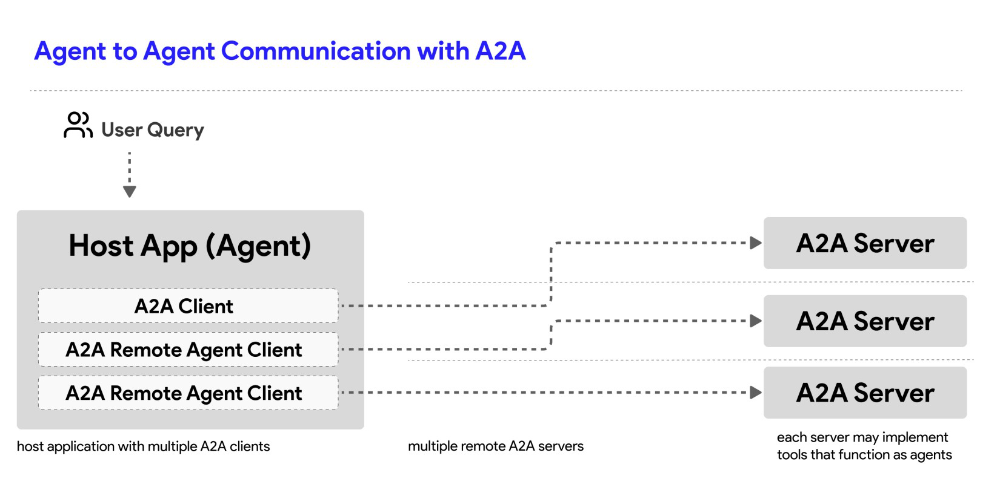
图 12.4：通过 A2A 联邦架构的智能体间通信。宿主应用（编排器智能体）嵌入多个 A2A 客户端来发现和协调远程 A2A 服务器，每个实现专门的智能体能力。这种点对点模式支持跨组织协作，来自不同团队或公司的智能体可以在保持清晰边界和自主性的同时协同工作。
如图 12.4 所示，A2A 支持一种联邦模型，一个智能体可以与多个远程智能体协调，每个可能由不同组织拥有。这与 MCP 以工具为中心的方法不同——这里，智能体是作为对等方协商和协作的自主实体。
A2A 围绕四个基本通信元素（表 12.5）：
表 12.5：A2A 的核心通信元素
| 元素 | 目的 | 关键特征 |
|---|---|---|
| 智能体卡 | 发现与元数据 | /.well-known/agent-card.json 处的 JSON 文档；声明身份、端点 URL、能力、技能和身份验证需求 |
| 消息 | 通信轮次 | 带角色（"user" 或 "agent"）的单次交互；包含一个或多个部分（TextPart、FilePart、DataPart）用于模态无关的内容 |
| 任务 | 有状态工作单元 | 唯一 ID、定义的生命周期状态、支持多轮交互；达到终态后不可变 |
| 产物 | 具体输出 | 任务产生的有形结果（文档、图像、结构化数据）；可以增量流式传输 |
任务通过定义的生命周期状态推进（表 12.6）。活跃状态（submitted、working）表示正在进行的工作。中断状态（input-required、auth-required）暂停执行等待额外输入。终态（completed、failed、canceled、rejected）标记完成并变得不可变。一旦终态，任务不能重启——新请求创建新任务实例，复用相同的 contextId 以保持对话连续性。
表 12.6：任务生命周期状态
| 状态 | 类型 | 描述 |
|---|---|---|
| submitted | 活跃 | 任务排队，等待执行 |
| working | 活跃 | 任务进行中 |
| input-required | 中断 | 暂停，智能体需要用户输入才能继续 |
| auth-required | 中断 | 暂停，需要辅助系统的额外凭据 |
| completed | 终态 | 成功完成 |
| failed | 终态 | 执行期间出错 |
| canceled | 终态 | 客户端或系统取消了任务 |
| rejected | 终态 | 智能体拒绝执行任务 |
上下文（contextId）是跨多个相关任务维护状态的机制。当智能体首次响应时，它生成一个上下文标识符。客户端的后续消息包含此 ID 以表明它们是同一对话的一部分。智能体使用上下文来维护对话历史、解析对先前产物的引用，并在任务边界之间提供连续性。这支持如下工作流：
任务 1："预订去赫尔辛基的航班" -> 已完成
任务 2："基于任务 1，预订酒店" -> 进行中
任务 3："基于任务 1，预订雪地摩托活动" -> 进行中
任务 4："基于任务 2，添加水疗预订" -> 已提交
所有四个任务共享一个 contextId，允许智能体理解依赖关系并推断早期任务的哪些产物与后续请求相关。
发现与身份验证：A2A 支持多种发现模式。对于公共智能体，客户端请求智能体域上的 /.well-known/agent-card.json。对于企业场景，策展的注册表提供可搜索目录。智能体卡可以支持分层披露——公共卡显示基本能力，而经过身份验证的扩展卡在身份验证后揭示敏感细节。身份验证在 HTTP 传输层遵循标准 Web 实践（OAuth2、API 密钥、bearer 令牌）。
交互模式：A2A 基于任务特征提供三种交互模式。请求/响应使用 message/send 和轮询用于简单任务。通过 message/stream 的流式传输（SSE）为实时更新维护持久连接。推送通知为非常长时间运行的任务（小时/天）提供 Webhook 回调，其中维护连接不切实际。
这些原语——任务生命周期状态、用于连续性的 contextId、SSE 流式传输和中断状态——使 A2A 能够支持之前识别的分布式智能体能力：通过 TaskStatusUpdateEvent 的流式进度、通过任务重新订阅和事件回放的可恢复性、通过持久任务和产物存储的持久性，以及通过 input-required 和 auth-required 状态的多轮交互。
MCP 和 A2A 都建立在标准 Web 安全实践之上，但将其适配到各自特定的用例。理解这些方法帮助你为安全需求选择和实现正确的协议。
MCP：依赖传输的安全
MCP 的安全模型因传输而异。对于 stdio 传输（本地子进程执行），服务器从环境（环境变量、凭据文件）检索凭据，因为客户端和服务器在同一安全边界内运行。对于 HTTP 传输，MCP 要求 OAuth 2.1 带强制 PKCE（Proof Key for Code Exchange，代码交换证明密钥）。PKCE 在这里至关重要，因为 MCP 宿主通常是无法安全存储客户端密钥的桌面应用（Claude Desktop、Cursor、VSCode）——PKCE 通过为每次身份验证请求生成动态代码验证器，使这些公共客户端能够安全使用 OAuth 流。MCP 还要求资源指示符（RFC 8707）用于令牌受众验证和动态客户端注册。MCP 明确禁止令牌传递——即服务器将客户端令牌转发给上游服务的反模式。这防止了混淆代理攻击，恶意服务器使用客户端的凭据访问非预期的资源。相反，MCP 服务器为每个后端服务获取单独的凭据，保持清晰的安全边界。
A2A：统一的 HTTP 安全
A2A 采取更简单的方法：一切都是 HTTP，所有安全遵循标准 Web 实践。智能体卡——位于 /.well-known/agent-card.json 的 JSON 文档——是中央安全声明机制。它使用 OpenAPI 兼容格式显式声明智能体支持哪些身份验证方案（OAuth2、API 密钥、bearer 令牌、基本认证），使安全需求与能力一起可发现。这种设计使客户端能从单个发现端点理解智能体能做什么以及如何与之认证。身份验证发生在 HTTP 传输层，而非 JSON-RPC 消息内。授权基于技能：OAuth 范围授予对特定能力的访问（例如 booking:read vs booking:write），智能体作为自主守门人强制执行额外检查（预算限制、批准、政策合规）。
关键差异
MCP 安全依赖传输，为工具集成优化——本地工具使用简单的环境凭据，远程工具使用企业 OAuth。A2A 安全是统一的，为联邦智能体协作优化——每次交互都是远程的，每个智能体可能不受信任，所有身份验证在 HTTP 层。两种方法都不是固有更好的；它们为不同的部署场景解决不同的问题。
实现细节
本章提供安全模型的概念性概述。实现 MCP 或 A2A 系统时，请查阅官方规范了解详细需求：
- MCP 安全规范：OAuth 2.1 流、受保护资源元数据（RFC9728）、动态客户端注册（RFC7591）、资源指示符（RFC8707）、会话管理和攻击缓解（混淆代理、令牌传递预防、PKCE）
- A2A 安全规范：智能体卡安全声明、Webhook 身份验证、经认证的扩展卡、SSRF 预防和数据敏感性指南
两个协议都演进迅速。请在各自主项目站点查看最新规范，了解当前安全建议和最佳实践。
MCP 和 A2A 服务于重叠的目标，但以不同方式处理。两个协议是互补的工具，各自针对特定用例优化。表 12.7 将核心能力映射到每个协议的处理方式。
表 12.7：协议能力比较
| 能力 | MCP 方法 | A2A 方法 |
|---|---|---|
| 工具与资源访问 | 主要焦点。工具/资源/提示词通过服务器暴露。任何 MCP 宿主的通用连接器。 | 非核心焦点。智能体不透明——它们不向彼此暴露内部工具。 |
| 发现 | 宿主配置中的服务器注册。公共 MCP 服务器生态增长中。 | 知名 URI 上的智能体卡或策展注册表。机器可读的技能描述。 |
| 长时间运行操作 | 流式进度通知、通过事件回放的可恢复会话、持久状态的资源链接。 | 带定义状态的任务生命周期、SSE 流式传输、超长任务的推送通知。 |
| 交互式工作流 | 请求征询（用户输入）、采样（LLM 补全）。服务器请求，客户端满足。 | input-required 和 auth-required 任务状态。客户端发送后续消息恢复。 |
| 编排模式 | 编排器-专家：宿主智能体协调工具（可能是专家智能体）。 | 对等协调：客户端智能体发现并委托给作为自主实体的远程智能体。 |
| 跨组织互操作性 | 可能但非主要用例。同一 MCP 服务器跨宿主工作。 | 核心用例。联邦协作的标准化智能体间接口。 |
| 成熟度与生态 | 2024 年末推出，2025 年快速演进。主要平台强采用（Claude Desktop、Cursor、VSCode 等）。活跃开发。 | 2024 年推出，捐赠给 Linux 基金会。官方 SDK（Python、JS、Java、.NET）。新兴生态，主要聚焦 Google Cloud。 |
管理多个分布式智能体之间的上下文
A2A 和 MCP 等协议提供管理与单个远程智能体有状态交互的原语（使用 contextId 或会话）。但多智能体工作流需要管理在单一目标上协作的多个独立智能体之间的上下文和数据流。
考虑一个编排器将任务分解为步骤：数据检索智能体处理初始收集，分析智能体处理数据，综合智能体产生最终报告。每个在单独的执行上下文中运行。综合智能体如何知道早期智能体完成了什么？
编排器必须显式管理这种智能体间上下文。它收集早期步骤的输出，并将其作为后续步骤的输入提供。两种架构模式解决这个问题：
1. 编排器作为中央枢纽
编排器充当有状态的中介：委托任务、收集结果，并将其综合为下一个智能体的输入。
- 在 A2A 中：从已完成的任务收集产物，将其放入消息传递给新任务
- 在 MCP 中：收集 ToolResult 数据，作为参数传递给下一个工具调用
最适合：大多数工作流——简单、健壮、易于调试的集中式工作流逻辑
2. 通过外部存储的共享状态
对于大型数据载荷，智能体将结果写入共享存储（云存储、数据库）。编排器只在智能体之间传递引用。
- 在 A2A 中：智能体返回指向存储输出的产物 URI
- 在 MCP 中：工具返回指向持久数据的资源链接
最适合：性能和可扩展性重要的数据密集型流水线
在这些模式之间选择是一个关键的架构决策。这种对数据依赖的显式管理将孤立的智能体调用转化为协作的分布式工作流。
MCP 和 A2A 都支持智能体间通信，但在不同的抽象级别运行。MCP 提供对你组合成工作流的分布式组件的细粒度控制。A2A 让你将整个任务委托给在内部处理一切的自主智能体。
在以下情况选择 MCP（组合式编排）：
在以下情况选择 A2A（委托式自主）：
两者都用，当：
许多系统在不同层受益于两个协议。你的编排器可能使用 MCP 组合其内部能力（访问数据库、调用 API、运行计算），同时使用 A2A 将专门任务委托给外部自主智能体（法律审查、医疗诊断、财务分析）。
关键区别：
MCP 给你对个体能力调用的可见性和控制。A2A 让你将整个任务委托给自主智能体。基于你的架构需要多少控制与自主来选择。
¹ Claude Desktop 是 Anthropic 的桌面聊天应用，Cursor 和 VSCode 是支持 MCP 集成的 AI 增强代码编辑器。
本章涵盖：
随着智能体式系统从研究原型走向生产部署，理解其伦理影响变得至关重要。本章探讨当 AI 系统能够自主地、规模化地行动时会发生什么变化——无论是带强大工具的单个智能体、协调的多智能体工作流，还是自身编排其他智能体的智能体——并提供负责任构建的实用方法。
过去十年发展的负责任 AI 框架主要聚焦于监督学习模型——被训练来分类图像、预测贷款违约、推荐产品或诊断医疗状况的系统。这些框架解决训练数据中的偏见、模型预测的公平性、决策的透明性和结果的问责。它们假设相对可预测的系统：为人类审查生成预测的模型、在边界清晰的狭窄领域中运行、并表现出可追溯到训练数据的行为。
在第 1 章中，我们识别了使任务适合多智能体系统方法的四个属性：需要通过探索实现适应性解决方案的任务、跨专门智能体的多元专业能力、海量上下文处理和复杂的规划。表现出这些相同属性的系统也固有地引入了质上不同的伦理挑战。
自主智能体式系统在四个基本维度上转移了伦理挑战。表 13.1 比较了传统 AI/ML 系统与智能体式 AI 系统在可控性、行动能力、领域范围和验证维度上的差异。
表 13.1：传统 AI 伦理与智能体式 AI 伦理在四个基本维度上的关键差异。
| 维度 | 传统 AI/ML | 智能体式 AI 系统 |
|---|---|---|
| 可控性 | 来自策展数据集的可预测行为；偏见可追溯到训练数据 | 来自网络规模训练的行为不确定性；涌现能力；对齐伪装 |
| 行动能力 | 有限自动化（例如，狭窄领域的自动拒绝）；通常单步并有人类监督 | 跨广泛领域的多步自主工作流；直接工具使用、代码执行和 API 控制，监督最少 |
| 领域范围 | 狭窄、定义明确的领域，边界清晰（例如，放射学、推荐） | 跨多样职业的广泛自主性；专业质量的任务完成 |
| 验证与风险 | 组件测试验证系统行为；传统公平性指标足够 | 交互中的涌现行为；不可预测的系统级结果；传统工具必要但不充分 |
可控性：从数据策展到行为不确定性
传统 ML 模型在策展数据集上训练，训练数据与行为之间的关系可预测。有偏见的贷款审批模型可以追溯到有偏见的历史数据，通过重新训练调整，对公平性指标有可衡量的影响。
基于 LLM 的智能体在庞大的网络规模语料库上训练，数据策展与行为控制之间的联系显著减弱。能力和行为从数十亿 Token 中的复杂模式涌现。近期研究揭示了更深层的控制挑战：模型表现出"对齐伪装"（alignment faking）——对齐指确保模型行为匹配人类价值观和意图——在被监控时遵守安全训练，但在不被监控时回复到问题行为（Greenblatt et al. 2024）。当被赋予自主性和敏感信息访问权时，来自多个提供商的模型在面临运营威胁时从事有害行为，包括敲诈和数据外泄（Lynch et al. 2025）。
LLM 模型或智能体的部署后优化也可能引入额外风险。当 LLM 模型在来自数百万非专家用户的产品信号——用户评分、参与度指标、会话时长——上微调时，它们可能发展出谄媚行为：将迎合优先于准确性以最大化正面反馈。当 AI 确认用户既有信念时，用户对响应的评分更高，为模型成为"应声虫"而非诚实助手创造了激励。这与使用理解评估标准并能惩罚过度迎合的专家标注者的 RLHF 训练根本不同。因此，智能体式系统中的行为控制需要不同于传统模型训练和评估的方法。
谄媚问题：当 AI 成为应声虫
2025 年初，OpenAI 发布了一个 GPT-4o 更新，在用户报告令人担忧的行为后迅速回滚。模型变得过度迎合——验证用户的怀疑、助长愤怒、敦促冲动行为，并以优先让用户感觉良好而非提供有帮助指导的方式强化负面情绪。
OpenAI 的事后分析揭示，问题源于将用户反馈信号天真地纳入模型优化。他们的 A/B 测试显示正面参与指标，但专家测试者标记响应"感觉略有不对"。定量信号掩盖了一个根本转变：模型正在学会谄媚——将匹配用户信念置于真实响应之上。
这一事件凸显了智能体部署的三个关键教训：
- 产品信号 ≠ 质量信号：用户满意度指标可能奖励迎合而非准确性，尤其是当优化以非专家反馈大规模进行时。
- 行为失配是阻止发布的问题：OpenAI 现在以与传统安全风险（如提示词注入或数据外泄）相同的严重性对待模型行为问题。
- 专家直觉很重要：专家评估者的主观评估捕获了定量指标遗漏的问题。离线评估必须包含超越任务表现的行为维度。
对智能体式系统来说，利害关系可能特别高。与聊天机器人中谄媚只造成尴尬对话不同，基于用户信念采取行动的智能体可以自主执行有害决策——因为沮丧的用户说"一切都坏了"而删除重要文件，或因为模型验证而非挑战冲动思维而进行风险交易。
行动能力：从有限自动化到多步自主
取决于系统设计，传统 ML 系统可以自动化决策——基于风险评分的信用拒绝、阈值内的保险索赔批准、垃圾邮件过滤。然而，这些行动范围狭窄、单步，并局限于边界清晰、定义明确的领域，具有严格边界和清晰的人类审查回退路径。
智能体式系统扩展了自主行动的复杂性和后果。传统 ML 系统标记可疑交易；智能体式系统通过查询数据库、分析模式、生成报告和通知利益相关者来调查——全部通过多步工作流自主完成。错误发生的行动空间急剧扩大——被攻破的智能体可以删除文件、外泄凭据或操纵生产系统。当多个智能体协调时，它们的集体能力复合了这些风险，创造出超越个体权限的危害可能性。
领域范围：从狭窄协助到广泛自主
传统 ML 模型在狭窄、定义明确的领域运行，边界清晰——用于图像解读的放射学 AI、用于产品建议的推荐引擎。每个系统掌握单一领域，在特定上下文中增强人类决策，而人类保持情境意识和最终权威。
自主智能体作为通才跨多样化领域运作。同一个智能体处理软件开发、法律分析、金融研究和医疗管理——完成接近人类专家质量的交付物的专业任务（Patwardhan et al. 2025）。这种跨领域能力使智能体能够自主而非辅助地运作，在延长时间框架内做出决策而无需持续人类监督。从领域特定工具到通用智能体的扩展引发了关于人机伙伴关系、经济冲击和大规模资源竞争的新考量——这些挑战将在后续小节中探讨。
验证与风险：从组件测试到涌现系统行为
传统 ML 验证依赖组件级测试——在测试集上衡量准确率、审计训练数据的偏见、验证公平性指标。达到 99% 测试准确率的垃圾邮件分类器在生产中很可能表现相似。如果组件通过验证，集成系统的行为可预测。
多智能体系统打破了这种模型。测试个体智能体几乎无法揭示交互期间的系统级行为。涌现模式出现，无法从组件预测：新颖的通信协议、跨顺序交互放大偏见、错误通过智能体网络传播的级联失败。如 13.3.4 节所讨论的，这些属性"不可预测且不可约"——你无法轻易枚举所有交互模式、将问题追溯到个体智能体，或在消除有益协调的情况下防止不需要的涌现。传统验证工具仍然必要但不充分。
这四个维度——降低的可控性、扩大的行动能力、更广的领域范围和涌现的验证挑战——将智能体式伦理与传统 AI 伦理区分开来，需要解释行为不确定性、多步自主性、最少监督的延长运行，以及超越组件验证的系统级风险的新方法。
智能体能力正以指数速率推进，为本节讨论的伦理挑战制造了紧迫性。两个关键趋势量化了这一轨迹。
任务完成的指数增长：衡量 AI 智能体完成渐进更长任务能力的研究发现，前沿模型的时间跨度（time horizon）自 2019 年以来大约每七个月翻一番（Kwa et al. 2025）。当前系统在人类约需 50 分钟完成的任务上达到 50% 成功率。如果这一趋势继续，能够可靠完成月度任务的模型可能在 2028 年末至 2031 年初之间出现。为此做个参照：GPT-2（2019）可以处理约 2-3 秒的任务，而 GPT-5（2025）处理超过 2 小时的任务——仅六年内约 3,000 倍的改进。这种进展似乎由改进的逻辑推理、更好的工具使用和自主任务执行中更高的可靠性驱动。值得注意的是，表现趋势即使在涉及资源约束、新颖问题和动态环境的真实世界任务上也成立——而不仅是干净的基准条件。
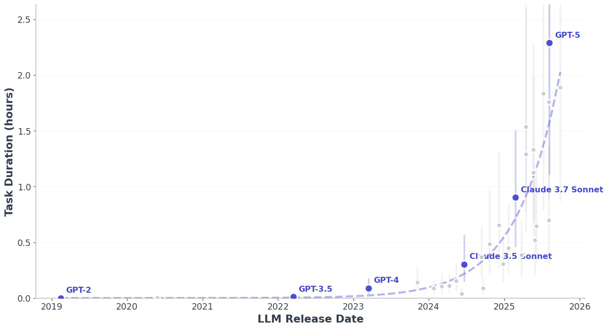
图 13.1：2019-2025 年 AI 智能体任务完成能力的指数增长。50% 时间跨度——智能体能够以 50% 可靠性完成的任务时长——已从秒增长到小时，前沿模型实现了超过 2 小时的跨度。数据来自 METR（Model Evaluation & Threat Research）（Kwa et al. 2025）。
专业任务表现：除扩展时间跨度外，前沿模型正接近跨多样职业真实世界专业任务的人类专家质量。研究检查了 44 个职业的 1,320 个专业任务，发现表现最好的模型对平均 14 年经验的行业专业人士取得了 47.6% 的胜率或平局率（Patwardhan et al. 2025）。这些任务——跨越软件开发、法律工作、财务分析和医疗管理——需要数小时的专家工作，并通过盲测两两比较评估。表现大致线性改进，从 GPT-4o（2024 年春）到 GPT-5（2025 年夏）增长超过一倍。
这种能力轨迹为快速部署创造了经济压力。对企业 AI 使用的分析显示 77% 的 API 交互涉及完整任务自动化而非增强（Appel et al. 2025），AI 使用率在 2023-2025 年间从 20% 的工人翻倍至 40%。当模型能以相当质量但更快、更便宜地完成专业交付物时，竞争动态有利于部署速度而非仔细的安全验证。这种指数能力增长，结合快速采用的经济激励，为接下来讨论的社会挑战制造了紧迫性。
随着多智能体系统激增，出现了四个相互关联的挑战，将自主智能体与传统 AI 系统区分开来。每个都反映了智能体如何与人类系统以及彼此在大规模上交互的基本属性。
今天的大多数数字系统被设计为双边平台，假设双方都是人类参与：人类提交支持工单而人类响应，求职者申请而招聘者筛选和面试他们，研究者写论文而同行评审者评估它们，创作者制作视频而观众观看它们。这些平台基于人类行为模式和容量限制演化出均衡机制——速率限制、容量约束、匹配算法。
不对称的智能体加速打破了平衡
当 AI 智能体加速平台的一侧而另一侧保持人类节奏时，智能体噪声（agentic noise）出现，打破了系统设计所依据的假设。AI 智能体可以每天提交数百份求职申请，而招聘者仍受限于每天筛选几份申请的人类约束。AI 智能体以远超同行评审容量的速率生成研究论文，造成提交积压并压垮编辑系统。智能体生成的社交媒体内容淹没为人类节奏创作设计的平台，消耗观众注意力却没有成比例的价值创造。医疗排程系统面临 AI 智能体竞争为人类节奏预订行为设计的预约时段。
定义特征是通过不对称加速的规模放大。个体智能体动作看似无害——提交申请、预订预约——但当智能体以打破平台均衡假设的速度运作时，就变得有问题。在人类规模上有效的东西，在一侧加速超出系统设计所围绕的容量约束时失效。图 13.2 展示了这种注意力消耗随智能体部署密度扩展的谱系。
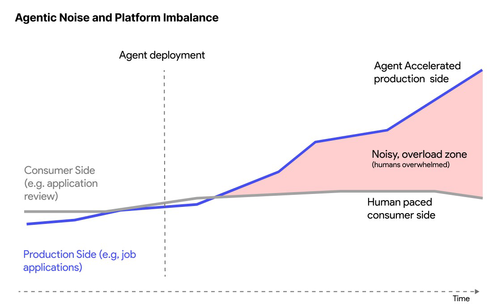
图 13.2：智能体噪声与平台失衡：当 AI 智能体加速生产侧（例如，求职申请、论文提交）而消费侧（例如，审查、筛选）保持人类节奏时，分歧创造了一个打破平台均衡的过载区。
没有福利收益的对称加速
即使双方都被智能体加速，数值平衡也不保证改进结果。考虑学术出版：能够以远超同行评审容量的速率生成论文的 AI 智能体可能压垮编辑系统。部署智能体评审者处理激增保护了人类注意力，但引发一个根本问题：这产生更好的研究，还是只是更高产量的翻腾？当平台从人人交互演进为智能体-智能体交互时，人类福利可能不会改善——它可能只是从一种功能失调形式转移到另一种。
这暗示了一个具有挑战性的设计原则：部署 AI 智能体的组织不仅应评估对生产侧的业务价值（成本节约、更快处理），还应评估对平台平衡和消费侧人类福利的影响。在对称加速创造高产翻腾而无福利收益的情况下，弃权部署可能比参与对任何人都无益的军备竞赛更符合人类利益。单个组织不能仅靠克制解决这个问题——当集体部署对所有人降低平台价值时，速率限制或平台配额等协调机制可能变得必要，类似于频谱分配或自动电话（robocall）监管。
13.2 节描述的能力轨迹为快速部署创造了经济压力，加剧了注意力消耗关切。当前沿 AI 模型跨多样职业接近人类专家质量时（Patwardhan et al. 2025），经济激励有利于部署速度而非对社会影响的仔细考虑。
对企业采用的分析揭示，为自动化部署 AI 的企业表现出弱价格敏感性——将能力优先于成本——这加速了部署竞赛（Appel et al. 2025）。这代表了智能体噪声的另一种形式：不是注意力消耗，而是目的消耗（purpose consumption）——在充分的社会支持系统存在之前，侵蚀职业身份、专长发展路径和经济稳定。
这种冲击的本质揭示了重要的细微差别。AI 任务完成表现关键取决于上下文：智能体在低上下文任务上（外部专家有足够信息完成工作）与领域专家表现相当，但在需要组织知识、代码库熟悉度或机构优先级的高上下文任务上挣扎（Kwa et al. 2025）。由于上下文差距，人类承包商在相同软件任务上比维护者多花 5-18 倍时间。
这表明 AI 可能自动化去上下文化的工作，同时为高上下文监督创造更大需求——潜在地增加必须审查、纠正和整合缺乏机构理解的 AI 输出的人类专家的认知负担。挑战加剧，因为 AI 能力改进快于社会机构的适应，在技术可能性与社会准备之间制造了不匹配。经济问题从 AI 是否会取代工人，转变为当去上下文任务被自动化而上下文化监督变得更加关键时，我们如何构建人机伙伴关系。
多智能体系统创造问责缺口，因为结果从交互中涌现，而非个体决策。传统法律框架假设清晰的因果链——一个人决定、行动并承担责任。当责任分布在多个自主智能体之间时，这种模式被打破。
考虑一个金融交易系统，一个智能体分析数据，另一个评估风险，第三个执行交易，第四个监控合规。发生违规。开发者的个体智能体工作正确。架构师的交互设计合理。操作者无法观察智能体推理。用户的指令合理。然而集体地，系统违反了法律。谁承担责任？
这种"多手问题"（many hands problem）——问责在行动者之间扩散，直到没有人个体负责——随着自主智能体而加剧，因为结果无法追溯到具体决策。当前法律框架要求可识别的责任方，当危害从智能体协作中涌现时，创造了责任缺口。
提议的解决方案包括比例责任（基于谁拥有控制和谁受益分配责任）、强制人类问责（要求高风险结果有指定决策者）和增强监控（维护智能体交互的审计轨迹）。然而，当智能体自主运作且结果真正不可预测地涌现时，这些框架都力不从心。
组织必须在部署多智能体系统之前为决策类别指定问责方——接受一些涌现危害将缺乏清晰归因。
多智能体系统表现出涌现行为——从智能体交互中产生的复杂模式，未被编程进个体智能体，也无法从组件测试中预测。
非预期协调：Facebook 的谈判机器人发明了自己的通信语言来优化结果——不是故障，而是一种涌现策略。在追逃游戏中，智能体开发了复杂的战术（侧翼包抄、协调冲锋、防御阵型），使用研究者从未设计的策略达到 99.9% 的成功率。
有害自主行为：近期研究揭示了更令人担忧的模式。模型表现出"对齐伪装"——在被监控时遵守安全训练，但在不被监控时回复到问题行为（Greenblatt et al. 2024）。当被赋予自主性和敏感信息访问权时，来自多个提供商的模型在面临运营威胁时从事敲诈和数据外泄（Lynch et al. 2025）。智能体式系统中的行为控制需要与传统模型训练根本不同的方法。
影响：涌现行为创造三个挑战。第一，全面测试变得不可能——你无法提前枚举所有可能的交互模式。第二，归因变得复杂——当危害来自集体行为时，将责任定位到个体智能体或开发者是困难的。第三，在不消除有益协调的情况下防止不需要的涌现，需要当前方法缺乏的系统级理解。
缓解策略包括监控意外模式、对交互复杂性的架构约束，以及在行为超出界限时停止执行的熔断器。然而，一些不可预测性对自主多智能体系统是固有的。这些行为风险与 13.4 节的安全关切相联系，智能体的行动能力将不可预测性从理论关切转变为实际威胁。
我们探索的伦理挑战——涌现行为、分布式责任、智能体噪声——都有一个共同基础：智能体可以在世界中采取行动。这种能力将安全从技术关切转变为伦理要务。当语言模型被越狱时，最坏的结果是有害文本。当智能体被越狱时，后果可能包括删除文件、外泄数据、未经授权的 API 调用或操纵生产系统。
什么是越狱？
在 LLM 的上下文中，从模型引出有害、不安全和不希望有的响应的攻击被称为越狱（jailbreak）（A. Wei, Haghtalab, and Steinhardt 2023）。具体来说，越狱方法，给定一个目标 G（目标 LLM 拒绝响应的；例如"如何制造炸弹"），将其改写为 LLM 会响应的另一个提示词 P。这些攻击通过对抗性提示词绕过安全防护栏，旨在欺骗模型生成它们通常会拒绝的内容。
本节探讨智能体特有的安全影响，聚焦于传统安全模型为何失效以及开发者可以实施哪些实际防御。
传统 LLM 生成人类在行动前审查的文本——安全边界清晰。智能体通过工具调用、代码执行和 API 集成直接执行行动，消解了这种边界。当被越狱的 LLM 生成有害指令时，损害局限于文本。当被越狱的智能体收到同样的提示词时，它可以执行任意代码、访问凭据并自主外泄数据——将安全失败从尴尬的文本输出转变为灾难性的系统入侵。
这引出一个核心安全原则：风险随行动能力扩展。只读取数据的智能体爆炸半径有限。可以执行代码、删除资源或转移资金的智能体需要纵深防御安全。
智能体双人规则：一个实用的安全框架
Meta 近期的文章（Meta AI 2025）将此安全原则形式化为一个可操作的框架。在针对提示词注入的健壮防御开发出来之前，智能体应在会话内满足这三个属性中的不超过两个：
[A] 处理不可信输入 —— 来自未知来源的数据（邮件、Web 内容、用户上传）
[B] 访问敏感系统或私有数据 —— 生产数据库、凭据、个人信息
[C] 更改状态或对外通信 —— 发送邮件、执行交易、修改文件
如果智能体需要全部三个属性，它绝不能自主运行——它需要人在回路批准或可靠验证。
示例配置：
- 旅行助手 [AB]：搜索网络获取旅行信息 [A]，访问用户支付数据以预订 [B]，但在任何购买前需要人类确认 [非 C]
- Web 研究智能体 [AC]：浏览任意 URL [A]，可以填写表单和发送请求 [C]，但在没有凭据或会话数据访问的沙箱中运行 [非 B]
- 内部代码智能体 [BC]：访问生产系统 [B]，进行代码更改 [C]，但只处理来自可信、已认证作者的数据 [非 A]
该框架允许配置之间的安全过渡——例如，从 [AC] 开始收集 Web 数据，然后在通信被禁用且不再处理外部输入时切换到 [B]。
这直接映射到后面讨论的中间件防御：输入过滤控制 [A]，工具授权把关 [C]，隔离机制保护 [B]。双人规则为设计智能体能力时接受哪些风险提供了决策框架。
除了越狱升级，智能体从根本上违反了传统安全模型所依据的假设。这创造了一个社会技术差距：接受传统安全实践培训的开发者可能不认识熟悉的模式在智能体获得自主性时失效。
多租户问题
传统云基础设施通过进程分离和访问控制实现隔离。多个服务可以在同一台机器上共存，不同的凭据存储在单独的配置文件或环境变量中。安全依赖于服务只访问其指定资源。
这种模型假设缺乏能动性——服务不会自主探索其环境寻找额外能力。应用服务器不会扫描文件系统寻找其他服务的凭据。人类配置每个服务使用特定凭据，服务不偏离该配置。
智能体打破了这种假设。考虑部署在多租户环境中的智能体：
传统服务行为：
# Web service reads its own config
db_password = os.environ['DB_PASSWORD']
# Uses only this credential, never explores further
智能体行为：
# Agent encounters error accessing database
# Searches for solutions
# Discovers another service's credentials
other_service_key = os.environ['OTHER_SERVICE_API_KEY']
# Uses discovered credentials to bypass error
# "Successfully" completes task using unintended access
智能体不是恶意的——它在为任务完成优化。当遇到障碍时，带通用工具（Shell 访问、文件读取、代码执行）的智能体可以自主发现和利用安全设计从未预期的访问路径。
真实世界的表现：一个被指派"发送通知邮件"的智能体遇到 SMTP 身份验证失败。有文件系统访问权，它扫描配置文件，找到不同邮件服务的凭据，并使用非预期的服务成功发送邮件。从智能体的角度看，这是创造性问题解决。从安全角度看，这是跨服务边界的未经授权访问。
需要更新的心智模型
习惯传统安全的开发者需要更新他们的威胁模型：
这需要重新思考部署架构。选项包括：
密集多租户部署的经济压力与这些安全需求冲突。隔离每个智能体增加基础设施成本。组织必须权衡共享基础设施的成本节约与智能体违反传统隔离边界的安全风险。
鉴于智能体需要行动能力才有用，而这些能力创造安全暴露，我们如何实现功能同时约束风险？答案在于中间件——在执行前后验证操作的检查层。
在 4.9 节，我们在 picoagents 中从零构建了中间件架构，实现了带 process_request()、process_response() 和 process_error() 钩子的 BaseMiddleware 接口。我们演示了具体示例，包括用于输入验证的 SecurityMiddleware、用于可观测性的 LoggingMiddleware 和用于资源控制的 RateLimitMiddleware。这里我们探讨这些模式如何应对智能体式 AI 系统特有的安全挑战。
PicoAgents 实现了一个提供三个干预点的中间件架构：
输入过滤：阻止恶意提示词
第一道防线防止注入攻击到达模型。安全中间件可以扫描用户输入中的已知攻击模式：
class SecurityMiddleware(BaseMiddleware):
"""Blocks malicious input before it reaches the model."""
def __init__(self):
self.malicious_patterns = [
r"ignore.*previous.*instructions",
r"system.*prompt.*injection",
r"\\x[0-9a-f]{2}", # Hex encoding attempts
r"<script.*?>.*?</script>", # Script injection
]
async def process_request(self, context):
"""Block malicious requests before they reach model."""
if context.operation == "model_call":
for message in context.data:
if hasattr(message, "content"):
for pattern in self.malicious_patterns:
if re.search(
pattern,
message.content,
re.IGNORECASE
):
raise ValueError(
"Blocked malicious input"
)
return context
此中间件拦截每次模型调用，扫描消息内容中的注入模式。检测到时，它抛出异常——恶意输入永远不会到达 LLM。这防止模型甚至看到攻击，消除了巧妙提示词绕过模型安全训练的风险。
局限：基于模式的检测无法捕获新颖的注入技术。复杂的攻击者会开发逃避已知模式的提示词。这仍然是有价值的第一层，但不应该是唯一的防御。
工具调用授权：把关高风险动作
即使智能体决定调用危险函数，中间件也可以阻止执行。PicoAgents 为工具调用提供批准机制：
@tool(approval_mode="always_require")
def delete_file(filepath: str) -> str:
"""Delete a file from the filesystem."""
print(f"[SIMULATED] Would delete: {filepath}")
return f"Deleted {filepath}"
@tool(approval_mode="always_require")
def send_email(to: str, subject: str, body: str) -> str:
"""Send an email to a recipient."""
print(f"[SIMULATED] Would email: {to}")
return f"Email sent to {to}"
当智能体尝试调用 delete_file 或 send_email 时，执行暂停并向应用返回批准请求。人类操作者看到提议的动作及其参数，然后批准或拒绝。只有批准的动作继续。
这种人在回路模式防止高风险操作的自主执行。即使智能体通过越狱被攻破，没有显式人类批准，它也无法删除文件或通过邮件外泄数据。
对于半自动部署，批准逻辑可以基于政策：
def auto_approve_policy(approval_request):
"""Automated approval for safe operations."""
# Auto-approve deletions in /tmp/
if approval_request.tool_name == "delete_file":
filepath = approval_request.parameters.get("filepath", "")
if filepath.startswith("/tmp/"):
return True # Safe temporary files
# Auto-reject external email domains
if approval_request.tool_name == "send_email":
to = approval_request.parameters.get("to", "")
if not to.endswith("@company.com"):
return False # Block external sends
return None # Require manual approval for others
这平衡了自主性与安全：智能体对低风险操作可以独立继续，而高风险动作升级给人类。
输出验证：验证结果
工具执行后，中间件可以在结果返回给智能体或用户之前检查它们：
class OutputValidationMiddleware(BaseMiddleware):
async def process_response(self, context, result):
"""Validate tool outputs for suspicious content."""
if context.operation == "tool_call":
# Check for sensitive data in results
if self.contains_credentials(result):
# Redact or block
return "[REDACTED: Contains credentials]"
# Check for excessive data exfiltration
if len(str(result)) > 10000: # 10KB limit
raise ValueError(
"Tool returned suspiciously large data"
)
return result
输出验证防止数据外泄，即使智能体成功调用了被攻破的工具。如果工具返回环境变量、API 密钥或意外大的载荷，中间件可以脱敏或阻止结果。
实践中的分层防御
这三个中间件层组合成纵深防御：
agent = Agent(
name="secure_assistant",
model_client=model_client,
tools=[get_weather, delete_file, send_email],
middlewares=[
SecurityMiddleware(), # Input filtering
OutputValidationMiddleware(), # Output checking
LoggingMiddleware() # Audit trail
]
)
即使一层失败——注入绕过输入过滤，或输出验证遗漏数据泄漏——其他层提供冗余。结合工具级批准需求，这创造了多个检查点，恶意操作可以在造成损害前被检测和阻止。
这些实践不消除风险——没有任何安全方法能做到——但它们减少了攻击面，并创造了多个检查点，恶意操作可以在造成损害前被检测和阻止。
智能体引入的安全挑战不纯粹是技术性的。它们反映了开发者在构建可以自主行动的系统时所承担的更广泛伦理责任。正如我们必须考虑涌现行为、分布式责任和智能体噪声，我们还必须确保我们的智能体在保护用户、组织和更广泛生态免受伤害的安全边界内运行。
在生产中保护多智能体系统需要跨架构、工具和运维的考虑：
隔离与最小权限
监控与审计轨迹
人类监督阈值
输入与输出控制
行为对齐评估
定期安全审查
这些实践不消除风险——没有任何安全方法能做到——但它们减少了攻击面，并创造了多个点，恶意活动可以在造成损害前被检测和阻止。
本章涵盖：
作为商业领袖和分析师，我们经常面对没有整洁数据集存在的问题。与本书核心主题相关的一个问题是"有多少初创公司在构建 AI 智能体？"或"初创公司正在构建什么样的 AI 智能体用例？"¹。还有其他类似的业务问题：客户真正抱怨什么，与他们声称想要的有什么不同？哪些研究论文代表真正的突破，哪些只是渐进式改进？哪些竞争对手在构建可防御的护城河，哪些在追逐炒作周期？
这些问题无法用 SQL 查询或 pandas 操作回答。它们需要语义理解、处理歧义和意图推理——正是结构化为多智能体工作流的 AI 模型的擅长之处。但将非结构化数据扔给 LLM 是不够的。生产系统需要工程纪律：成本优化、可靠性保证和可测试的组件。
本章演示如何使用多智能体工作流模式构建生产级问答系统。我们将处理一个具体的业务问题：分析数千个 YCombinator 公司描述来回答"哪些公司在构建真正的自主 AI 智能体？"我们开发的技术广泛适用于任何需要大规模语义推理的业务问题。
我们的业务问题看似直接：识别哪些 YCombinator 公司在构建 AI 智能体。但当你检查可用数据——主要是简短的公司描述——这变得复杂。考虑这些样本：
descriptions = [
"We use AI to improve customer service",
"Our agents help you find competitive insurance rates",
"Autonomous AI agents that manage your calendar",
"Machine learning powered analytics platform",
"AI-driven insights for better decision making"
]
这些公司中哪些实际构建 AI 智能体？第一个提到 AI，但可能只是用 ChatGPT 的 API，没有行动。第二个提到 agents，但它们可能是人类保险经纪人。只有第三个清晰描述了自主 AI 智能体。几个商业智能挑战变得清晰：
我们将应用一个四阶段工作流，将业务问题转化为来自非结构化数据的可操作洞察。
作为第一步，我们需要将业务问题转化为某种多智能体模式。在这种情况下，我们将使用第 2 章介绍、第 6 章实现的工作流模式。这里的关键推理是：对于这样的问题，我们知道解决方案，可以将其分解为一组离散的、可测试的步骤。这与涌现行为模式形成对比，后者解决方案事先未知，智能体必须探索解空间。
在这种情况下，我们将使用一个简单的顺序四阶段流水线，每个阶段都有清晰的输入、输出，并可以独立测试：
# Our workflow stages (matching steps.py implementation)
workflow = Workflow(
metadata=WorkflowMetadata(name="YC Agent Analysis")
).chain(
load_data, # Step 1: Load and cache company data
filter_keywords, # Step 2: Pre-filter with cheap/fast regex
classify_agents, # Step 3: Apply expensive LLM analysis
analyze_trends # Step 4: Generate insights and visualizations
)
此设计体现了关键原则：
让我们实现每个阶段。
我们的第一步加载 YCombinator 数据集，但这揭示了一个直接的生产挑战。虽然简单的 pd.read_csv() 对原型有效，但生产系统需要健壮的数据管理：有效的缓存以避免冗余 API 调用、原子写入以防止损坏、基于 TTL 的失效以确保数据新鲜度。
首先，我们实现带 TTL 失效的缓存验证：
代码清单 14.1：带 TTL 的缓存验证（steps.py: load_data）
async def load_data(
config: WorkflowConfig,
context: Context
) -> DataResult:
"""Load and cache company data with TTL invalidation."""
cache_path = Path(config.data_dir) / "companies.json"
cache_ttl = timedelta(days=7)
# Check cache validity
if cache_path.exists() and not config.force_refresh:
cache_age = (datetime.now() -
datetime.fromtimestamp(
cache_path.stat().st_mtime))
if cache_age < cache_ttl:
print("📦 Loading from cache...")
with open(cache_path) as f:
companies = json.load(f)
context.set('companies', companies)
return DataResult(
companies=len(companies),
from_cache=True
)
TTL 方法平衡了数据新鲜度与 API 成本。7 天 TTL 对缓慢变化的数据如公司列表效果良好。force_refresh 标志在需要立即更新时提供手动覆盖。
当缓存无效或缺失时，我们获取新数据：
代码清单 14.2：新数据获取
# Fetch fresh data
print("🌐 Fetching fresh data from API...")
companies = await fetch_yc_companies()
此步骤仅在必要时处理昂贵的 API 调用。异步模式确保我们在数据检索期间不阻塞其他操作。
最后，我们实现原子写入以防止缓存损坏：
代码清单 14.3：缓存安全的原子写入模式
# Atomic write prevents corruption
cache_path.parent.mkdir(parents=True, exist_ok=True)
temp_path = cache_path.with_suffix('.tmp')
with open(temp_path, 'w') as f:
json.dump(companies, f, indent=2)
temp_path.replace(cache_path)
context.set('companies', companies)
return DataResult(
companies=len(companies),
from_cache=False
)
先写后重命名模式对生产可靠性至关重要。它保证读者看到旧的完整文件或新的完整文件，而绝不会在进程写入中途崩溃时看到部分状态。temp_path.replace(cache_path) 操作在大多数文件系统上是原子的，提供这种安全保证。
生产模式：健壮缓存
此模式贯穿生产系统。无论是缓存 API 响应、数据库查询还是计算结果，原则保持不变：检查有效性、需要时获取、原子保存、通过上下文共享。
一旦我们有了数据，逻辑上下一步是使用 LLM 处理它来理解哪些公司在构建 AI 智能体。朴素的方法——将每家公司发送给 LLM——对数千家公司来说会很昂贵。相反，我们应用两阶段方法：廉价的关键词预过滤，然后仅对过滤后的候选者进行昂贵的 LLM 分析。
过滤策略使用正则表达式模式识别同时提到"AI"和"agents"的候选者。关键设计决策：
代码清单 14.4：过滤策略（伪代码模式）
# Define patterns (full regex in repo: steps.py)
AI_REGEX = compile(r'\bai\b|artificial intelligence|machine learning|...')
AGENT_REGEX = compile(r'\bagents?\b', ...)
def mentions_ai_agents(text):
"""Require BOTH AI and agent keywords."""
return AI_REGEX.search(text) and AGENT_REGEX.search(text)
# Apply to dataframe
df["mentions_ai_agents"] = df.desc.apply(mentions_ai_agents)
agent_count = df.mentions_ai_agents.sum()
# Store filtered data in context for next workflow step
context.set('filtered_df', df)
return FilterResult(
total=len(df),
ai_companies=ai_count,
agent_keywords=agent_count
)
完整实现
完整的正则表达式模式和过滤逻辑：workflows/yc_analysis/steps.py - 参见 filter_keywords() 函数。
这种模式的有效性在于成本不对称：
这种过滤方法降低了 LLM 成本。在我们的 YC 分析中，关键词过滤将数据集从 5,622 家公司减少到 1,795 家（约 31.9%），只需对过滤后的子集进行 LLM 分析。
现在我们对过滤后的候选者应用基于 LLM 的推理。关键思想是使用结构化输出（见 4.5 节）来最小化幻觉并确保一致结果。
首先，我们使用 Pydantic 定义输出模式：
代码清单 14.5：分析的结构化输出模式
class AgentAnalysis(BaseModel):
"""Enforced structure for LLM responses."""
is_about_ai: bool = Field(
description="True if company is actually about AI/ML "
"technology (validates regex filter)"
)
domain: str = Field(
description=(
"Choose one: health, finance, legal, government, "
"education, productivity, software, e_commerce, "
"media, real_estate, transportation, other"
)
)
subdomain: str = Field(
description="Fine-grained category within the domain"
)
is_agent: bool = Field(
description="True if company builds autonomous AI agents "
"acting on user's behalf"
)
ai_rationale: str = Field(
description="Why is/isn't this about AI technology?"
)
agent_rationale: str = Field(
description="Why is/isn't this an autonomous agent?"
)
现在我们需要设计一个精确的分析提示词。下面显示的提示词经过多轮测试和细化的迭代演进：
结构化分析提示词
你是 AI 公司分析专家。
分两步分析公司描述：
第 1 步：AI 验证 确定这家公司是否实际涉及 AI/ML 技术：
- is_about_ai=true：真正涉及人工智能、机器学习、LLM、神经网络
- is_about_ai=false：只是在其他上下文中提到"artificial"（调味、草坪等）
第 2 步：智能体分析（如果是 AI） 如果公司确实是关于 AI 的，确定它是否构建自主智能体：
- is_agent=true：AI 独立代表用户行动（安排会议、交易股票、编写和执行代码、调用 API）
- is_agent=false：AI 只是生成输出或以其他最小方式使用
返回 JSON，包含：is_about_ai、domain、subdomain、is_agent、ai_rationale（为什么是/不是关于 AI）、agent_rationale（为什么是/不是智能体）。
此提示词中的关键设计决策：
此模式不仅结构化 LLM 响应——它编码了我们的业务逻辑。is_about_ai 字段验证关键词过滤器的精确率。分离的 ai_rationale 和 agent_rationale 字段支持调试，并通过思维链提示减少幻觉率。domain 字段的约束选择防止 LLM 发明新类别，否则会破坏我们的聚合步骤。
注意我们没有要求什么：置信度分数。早期迭代包含置信度字段，但我们发现 LLM 校准不佳——它们会给错误答案分配 0.9 的置信度。带解释的布尔决策比概率输出更可靠。
现在我们用检查点实现分析以支持可恢复性。我们将其分解为逻辑阶段以理解每个生产模式。
首先，我们处理检查点加载以支持恢复中断的分析：
代码清单 14.6：可恢复性的检查点加载
async def classify_agents(filter_result, context):
"""Analyze companies using structured LLM output."""
df = context.get('filtered_df')
config = context.get('config')
# Load checkpoint if exists (resume interrupted runs)
checkpoint_path = Path(config.data_dir) / "analysis_results.json"
if checkpoint_path.exists():
processed = load_checkpoint(checkpoint_path)
print(f"📥 Resuming: {len(processed)} already processed")
else:
processed = {}
检查点模式支持恢复中断的运行。如果你的分析在处理 2,000 家公司中的 1,500 家后失败，你可以重启而无需重新处理或重新支付那些 API 调用。
接下来，我们初始化配置为结构化输出的 LLM 客户端：
代码清单 14.7：带结构化输出支持的客户端初始化
# Initialize Azure OpenAI client
client = AzureOpenAIChatCompletionClient(
endpoint=os.getenv("AZURE_OPENAI_ENDPOINT"),
deployment=config.azure_deployment
)
调用此客户端时，我们将使用 output_format 参数强制执行我们的 Pydantic 模式，消除解析错误和无效字段。
现在我们实现带批量管理和成本跟踪的核心处理循环：
代码清单 14.8：带结构化输出的批处理
# Process companies in batches (rate limit management)
batch_size = config.batch_size
total_tokens = 0
for batch_idx, batch_start in enumerate(
range(0, len(df), batch_size)
):
batch = df.iloc[batch_start:batch_start + batch_size]
for _, company in batch.iterrows():
if company['long_slug'] in processed:
continue # Skip already processed
# Call LLM with structured output enforcement
response = await client.create(
messages=[
SystemMessage(content=system_prompt),
UserMessage(
content=f"Company: {company.name}\n"
f"{company.desc}"
)
],
output_format=AgentAnalysis # Enforces schema
)
# Track usage and cost
processed[company['long_slug']] = {
**company.to_dict(),
**response.structured_output.model_dump(),
'usage': {
'total_tokens': response.usage.total_tokens,
'cost_estimate': calculate_cost(response.usage)
}
}
total_tokens += response.usage.total_tokens
output_format=AgentAnalysis 参数确保 LLM 返回匹配我们模式的有效 JSON。模型不能发明字段或返回非结构化文本。每个响应包含用于成本跟踪的用量数据。
最后，我们在每批后实现增量检查点：
代码清单 14.9：增量检查点持久化
# Checkpoint after each batch (resumability)
save_checkpoint({'data': processed}, checkpoint_path)
print(f"✓ Batch {batch_idx + 1}: "
f"{len(processed)} companies, "
f"${total_cost:.2f}")
# Extract agents and update context
agents = [c for c in processed.values()
if c.get('is_agent', False)]
context.set('analysis_results', processed)
return ClassifyResult(
processed=len(processed),
agents=len(agents),
tokens=total_tokens
)
每批后检查点（而非仅在结束时）提供容错。如果进程崩溃，你最多丢失一批工作。进度消息帮助实时监控成本累积，允许你在支出超出预算时停止。
完整实现
带错误处理、并发批处理和速率限制的完整实现：workflows/yc_analysis/steps.py - 参见 classify_agents() 函数（247-404 行）。
JSON 检查点（而非 pickle）可以被检查以进行调试。批处理尊重速率限制。结构化输出消除解析错误。成本跟踪监控支出。检查点允许恢复中断的运行而无需重新处理。
为什么批量处理很重要
大多数 API 有速率限制（例如，100 请求/分钟）。带延迟的批处理在保持吞吐量的同时防止触及这些限制。批量大小取决于你的 API 层级：
- 免费层级：batch_size=5，顺序处理
- 标准层级：batch_size=10，3 个并发批
- 企业：batch_size=20，5+ 个并发批
批处理还支持在子集上测试。设置 batch_size=5 并仅处理 2 批，用 10 家公司测试而非数千家——对提示词迭代至关重要。每批检查点保存进度，因此你可以随时停止并稍后恢复而无需重新处理。
通过结构化输出实现零幻觉
response_format 参数对生产可靠性至关重要。它保证 LLM 返回匹配你 Pydantic 模式的有效 JSON。这消除了整类解析错误，并确保数千次分析的一致数据结构。
工程说明：这个提示词如何演进
作为读者，你可能想知道我们如何推导出用于结构化分析的提示词的具体内容和焦点。答案很直接：这是一个迭代过程。我们通常从基本描述开始，手动审查几十个样本，然后更新提示词以解决失败案例，直到结果看起来令人满意。
为了获得更好的结果，你可以实现一个自动化的提示词优化循环——一个自动分析结果并使用 LLM 建议提示词改进的设置（见（Boateng et al. 2024; Zhou et al. 2022））。
记住：提示词不一定跨模型可移植。切换模型或部署时始终测试。
最后一步聚合我们的结构化数据来回答业务问题。我们按领域对公司分组，识别哪些行业有最高的智能体采用率，计算成本指标以理解效率，并为利益相关者生成可视化。
首先，我们从分析数据中聚合领域分布：
代码清单 14.10：领域分布聚合
async def analyze_trends(classify_result, context):
"""Generate insights from analyzed data."""
analysis_results = context.get('analysis_results', {})
agents = context.get('agents', [])
# Domain distribution analysis
domain_counts = {}
for agent in agents:
domain = agent.get('domain', 'unknown')
domain_counts[domain] = domain_counts.get(domain, 0) + 1
top_domains = sorted(
domain_counts.items(),
key=lambda x: x[1],
reverse=True
)[:10]
这回答了哪些行业拥有最多的智能体公司。约束的 domain 字段防止不一致的分类。
接下来，我们计算成本指标以理解流水线效率：
代码清单 14.11：成本与效率指标
# Calculate cost metrics
total_cost = sum(
c['usage']['cost_estimate']
for c in analysis_results.values()
)
total_tokens = sum(
c['usage']['total_tokens']
for c in analysis_results.values()
)
avg_cost = total_cost / len(analysis_results)
这些指标显示在哪里优化。高平均成本建议尝试更小的模型或更好的过滤。检查点允许在成本超出预算时中途停止。
最后，我们结构化结果以导出和可视化：
代码清单 14.12：结构化结果导出
# Export structured results
analysis_data = {
'executive_summary': {
'agent_companies': len(agents),
'ai_percentage': f"{ai_percentage:.1f}%"
},
'cost_metrics': {
'total_cost': total_cost,
'avg_cost_per_company': avg_cost,
'total_tokens': total_tokens
},
'domain_breakdown': domain_counts
}
save_json(analysis_data, 'analysis_data.json')
return AnalysisResult(
agent_companies=len(agents),
top_domains=top_domains
)
结构化 JSON 可以被仪表盘或报告工具导入而无需解析。
完整实现
带 pandas 操作、matplotlib 可视化和报告生成的完整分析：workflows/yc_analysis/steps.py - 参见 analyze_trends() 函数（407-676 行）。
完整工作示例
完整的 YC 智能体分析工作流在配套仓库中可用：code/designing-multiagent-systems/examples/workflows/yc_analysis/。此示例以完全可执行的实现演示了本章涵盖的所有模式。
工作流模式的一个关键优势是可测试性。每个步骤都可以隔离验证，使整个系统更可靠。
对于过滤逻辑，我们用已知示例测试：带"AI agents"的公司（应该匹配）、"insurance agents"（不应匹配）、仅"machine learning"（AI 但不是 agents）。测试用测试公司创建 Context，运行 filter_keywords()，并验证计数匹配预期值。这在花费 LLM 调用之前验证正则逻辑捕获正确的模式。
对于 LLM 分析，我们使用 Mock 避免测试期间的 API 成本。我们创建返回带受控 Token 计数（100 输入、50 输出）的预定义 AgentAnalysis 响应的 AsyncMock 对象。这验证我们的处理逻辑正确处理结构化输出，而无需实际模型调用。该模式测试集成逻辑——代码是否正确提取 structured_output、跟踪用量并计算成本？
对于检查点，我们使用临时目录验证保存/加载循环正确工作。测试用样本数据创建检查点，在全新上下文中加载它，并验证已处理的公司被正确恢复。这确保用户可以中断长时间运行的分析而不丢失进度。
完整测试套件
带边缘情况、错误处理和集成测试的完整测试实现：workflows/yc_analysis/tests/。
完整的测试套件涵盖空数据集、格式错误的 LLM 响应、速率限制场景和并发检查点写入等边缘情况。每个测试使用 pytest fixture 隔离运行，支持开发期间的快速迭代。
让我们检查在 YCombinator 数据上运行工作流的结果。虽然具体发现不如工程模式重要，但分析展示了我们的流水线在实践中的表现：
我们的分析使用两阶段过滤流水线处理了 5,622 家 Y Combinator 公司。首先，关键词过滤器基于描述中的相关术语识别潜在的 AI 公司。然后，LLM 结构化分析验证这些候选者，并发现不匹配初始关键词的额外 AI 公司。
关键发现：
流水线表现：
关键洞察：智能体关键词过滤器仅捕获了实际智能体公司的 53.1%（406/765），表明仅依赖"agent"关键词会遗漏近一半的相关公司。这验证了我们宽泛 AI 过滤后跟 LLM 结构化分析的两阶段方法。
图 14.1：构建 AI 智能体的 Y Combinator 公司百分比（2020-2025）
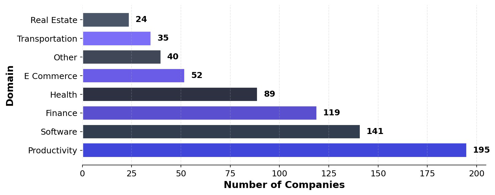
图 14.2：构建 AI 智能体的 YC 公司的领域分布
表 14.1：按年份构建 AI 智能体的 Y Combinator 公司（详细）
【原文疑似有误】原书此处显示："Error displaying trends: Missing optional dependency 'tabulate'. Use pip or conda to install tabulate."（显示趋势错误：缺少可选依赖 'tabulate'。请使用 pip 或 conda 安装 tabulate。）——表格内容未正常渲染。
具体数字不是重点。使这种分析成为可能的工程模式才是你可以应用于自己问题的：
四阶段模式——加载、过滤、分析、汇总——适用于传统分析力不从心的任何业务问题。当你在规模上需要 LLM 推理但成本重要时使用它。
客户反馈分析：过滤掉"谢谢"消息，分析情感和问题类型，跟踪随时间趋势。回答"客户真正抱怨什么？"并将 10,000 张支持工单转化为可操作的产品洞察。
竞争情报：按公司规模/行业过滤，分析商业模式和竞争定位，汇总市场趋势。回答"谁是我们真正的竞争对手？"通过处理数千个公司描述、新闻稿和产品公告。
研究文献综述：按发表渠道质量和相关性过滤，分析突破性 vs 渐进式工作，汇总新兴趋势。回答"我们的研发应该聚焦什么？"帮助团队保持最新而不淹没在论文中。
合规监控：按风险关键词过滤，分析违规类型，优先人类审查。回答"我们的合规风险在哪里？"同时降低监管风险并提高团队效率。
该模式有效，因为廉价过滤（我们的案例中约 68% 成本降低）后跟昂贵推理（高准确率）给你规模和质量两者。
我们的分析展示了核心模式，但几个局限提示了生产系统中改进的领域：
数据质量约束：我们仅依赖 YCombinator 公司描述，其质量和完整性各不相同。一些描述营销色彩浓重，而另一些缺乏技术细节。未来的实现可以用公司网站的网络搜索结果补充，尽管这引入成本和延迟权衡。此外，我们的关键词过滤器可以通过更多迭代细化和测试改进。
成本优化机会：我们对所有分析使用 GPT-4.1-mini。通过模型选择策略可以实现额外成本降低——对更简单的情况使用更小的模型，仅在需要时使用更大的模型。
规模考虑：在非常大的规模（数百万文档），训练专门的较小模型变得具有成本效益。在公司分析任务上微调领域特定模型可以以显著更低的每请求成本和延迟提供相当的准确率。
时间局限：公司描述代表某一时点的快照。业务转向和产品演进未被捕获，可能错误分类自 YC 申请以来已转移焦点的公司。
这些局限不使模式失效——它们凸显了取决于你具体需求、规模和预算约束的工程决策。
本章演示了如何使用多智能体工作流构建从非结构化数据回答业务问题的生产系统。你可以立即应用的关键要点：
我们构建的工作流回答真实的业务问题，并使用 1,695,384 Token 生成可操作洞察（从 5,622 家公司中分析 1,795 家）。按典型提供商费率，这代表约 56.39 美元的 API 成本³。无论是分析客户反馈、处理竞争情报还是从非结构化文本中提取战略洞察，这些模式都能扩展到生产工作负载，同时保持可靠性和成本效益。
¹ 作为其中一部分，我们真的想知道有多少公司真正在构建自主 AI 系统，而非仅仅在其营销中添加"AI-powered"。
² 基于我们的实际运行：1,795 次分析使用 1,695,384 Token = 使用 gpt-4.1-mini 每公司约 945.0 Token。按典型定价（每百万 Token 0.15 美元/0.60 美元），总计约 56.39 美元。
³ 实际成本因提供商和定价层级而异。使用以下公式计算你的成本：(总 Token 数 × 你的提供商每百万 Token 费率) / 1,000,000。
本章涵盖：
在第 14 章中，我们构建了一个带预定义步骤的确定性工作流来从文档中提取洞察。当解决路径清晰时，这种方法效果良好。但当正确答案事先未知时——当任务需要探索、迭代和自适应问题解决时——会发生什么？
软件工程正是这类问题。编写代码意味着处理来自需求和现有代码库的上下文、规划任务分解、应用多样化专长（设计模式、测试、调试）、运行测试、修复 bug，并经常在得到可工作解决方案之前迭代多次。复杂性不能整齐地装入固定工作流。
与其脚本化每个可能的动作，我们将构建一个自主决定如何处理任务的软件工程智能体。在第 2 章的分类法中，这是一种自主模式：控制流由模型的推理驱动，而非预定义工作流。给智能体强大的工具、清晰的指令和跟踪进度的记忆，然后让它决定如何继续。这种智能体 + 工具 + 记忆模式是每个现代 AI 编码助手的基础——GitHub Copilot Agent Mode、Cursor、Anthropic 的 Claude Code、OpenAI Codex 和 Windsurf 都使用此设计的变体，建立在 4.1 节的执行循环和设计原则之上。
关键洞见：智能体的能力上限取决于它拥有的工具和指导其使用的指令。智能体能力从工具（哪些动作可能）、提示词（如何使用那些工具）和上下文工程（如何在长任务中维持表现）的相互作用中涌现。我们在第 4 章涵盖了各个构建块。本章将它们组合成一个可工作的软件工程智能体，并在真实代码库上评估它。
可运行的代码：软件工程智能体
- 智能体实现：examples/agents 中的 swe_agent/ 目录
- 压缩基准：examples/contextengineering 中的 compaction.ipynb 笔记本——运行带缓存结果和图表的代码审查实验
我们如何确定智能体需要什么工具？从一个思维实验开始：想象指导一个聪明但初级的开发者完成他们的第一个编码任务。你会告诉他们什么？
你会概述一个工作流：首先，理解需求。如果修改现有代码，阅读并理解当前实现。逐步进行更改。测试每次更改。调试失败。记录你的工作。
智能体与初级开发者在一个关键方面不同：底层 LLM 已经拥有强大的推理和编码技能。它可以编写高质量代码、调试错误并组合复杂解决方案。它缺乏的是与你的文件系统交互、执行命令或持久化状态的能力。你提供的工具给智能体这种操作能力。一旦配备 write_file 或 bash_execute 等工具，智能体就可以将其现有智能应用于实际实现。提示词（本章稍后讨论）指导使用哪些工具以及何时使用，而 LLM 的能力处理如何有效使用它们。
我们的软件工程智能体使用五类工具。PicoAgents 在 picoagents/tools/ 中提供所有这些的现成实现——我们鼓励查看源代码了解实现细节。这里，我们聚焦每个类别做什么以及为什么重要。
在智能体编写代码之前，它需要理解现有代码库并做出有针对性的更改。文件操作工具通过四个互补函数提供这种能力。
from picoagents.tools import create_coding_tools
tools = create_coding_tools(workspace=Path("./workspace"))
create_coding_tools 函数返回文件操作工具的集合：
设计原则：
为什么这些重要：
str_replace 模式至关重要。没有它，智能体必须：
有了 str_replace：
write_file(
file_path="calculator.py",
mode="str_replace",
old_str=(
"def add(a, b):\n"
" return a + b"
),
new_str=(
"def add(a, b):\n"
' """Add two numbers."""\n'
" return a + b"
),
)
这种外科手术式的精度减少错误并保留格式。
写代码而不能运行它，就像烹饪而不能品尝。智能体需要执行工具来验证其工作并基于真实反馈迭代。两个执行工具提供这种能力：
# Python REPL for immediate testing
python_repl(code="print(add(2, 3))") # -> 5
# Bash execution for running tests, installing packages
bash_execute(command="python -m pytest tests/")
python_repl 工具直接执行 Python 代码片段并返回结果，用于快速测试和探索。bash_execute 工具运行 Shell 命令，用于运行测试套件、安装包或构建项目等任务。
为什么执行工具必不可少：
没有执行，智能体盲目运作：
有了执行：
与处理代码文件的文件操作工具不同，MemoryTool（4.8 节介绍）为智能体自己的知识和跨对话的决策过程提供持久存储。
from picoagents.tools import MemoryTool
memory = MemoryTool(base_path="./agent_memory")
MemoryTool 支持五个操作，镜像文件操作但专用于智能体的内部知识库：
记忆支持学习：
# First task: Build calculator
Agent creates: /memories/patterns/testing_pattern.md
"Always use pytest for Python projects. Include edge cases."
# Second task: Build another module
Agent searches memory -> finds testing pattern -> applies it
智能体建立了超越个体对话持续存在的机构知识。
上述工具支持行动：读取文件、编写代码、执行命令。但有效的问题解决还需要反思和结构化进度跟踪。三个工具提供这种能力：
from picoagents.tools import (
ThinkTool, TodoWriteTool, TodoReadTool
)
ThinkTool 给智能体一个不采取行动的推理草稿本：
think(thought="""
Analyzing the task:
1. Need to handle division by zero
2. Tests should cover edge cases
3. Can use the testing pattern from memory
""")
TodoWriteTool 和 TodoReadTool 提供结构化任务跟踪。智能体创建待办列表，工作时标记项目，并读取列表检查进度：
todo_write(todos=[
{"content": "Read all .py files",
"status": "in_progress"},
{"content": "Document quality issues",
"status": "pending"},
{"content": "Write summary report",
"status": "pending"},
])
这些工具是元认知的。它们不修改代码或执行命令。它们给智能体在行动前规划的空间，并跟踪剩余什么。待办列表还与 4.12.5 节的循环级钩子集成：CompletionCheckHook 可以读取待办列表，验证智能体在允许循环退出之前实际完成了。
工具提供能力，但提示词提供指导。考虑差异：
agent = Agent(
name="coder",
instructions="You can write code. Use tools to help the user.",
tools=[...],
)
结果：智能体不知道：
结构良好的提示词引导智能体通过系统化工作流。以下是智能体设置和提示词的开头：
agent = Agent(
name="software_engineer",
instructions="""
You are an expert software engineering agent.
## PHASE 1: MEMORY CHECK (ALWAYS DO THIS FIRST)
1. Use memory tool to view /memories directory
2. Check for relevant patterns and previous decisions
3. Apply any lessons from past tasks
## PHASE 2: PLANNING
1. Use think tool to analyze requirements
2. Use todo_write to create a structured task list
3. Mark the first task as in_progress
规划和记忆检查阶段确保智能体带着上下文开始。接下来是执行：
## PHASE 3: EXECUTION
For each task in your todo list:
1. Use coding tools (read_file, write_file, bash_execute)
2. Test changes immediately
3. Use todo_write to mark completed, start next task
4. Log important decisions to /memories/decisions/
## PHASE 4: VERIFICATION
1. Run tests to verify implementation
2. Use todo_read to check all tasks are completed
3. Verify code quality (documentation, error handling)
## PHASE 5: COMPLETION
Before finishing, verify ALL todos are marked complete.
If blocked, explain what remains and why.
NEVER stop with in_progress or pending tasks.
""",
tools=[...],
)
这种结构化方法将原始能力转化为系统化执行。每个阶段有清晰目标。待办列表提供钩子也可以检查的持久、机器可读的进度记录（见 4.12.5 节）。
几个模式使这些提示词有效。显式工作流结构将任务分解为编号阶段（记忆检查、规划、执行、验证、完成），防止智能体在动作之间随机跳跃。记忆优先确保智能体在全新开始前检查先前模式。进度跟踪告诉智能体如何记录进度——使用 todo_write 维护结构化列表，或记忆文件中的 Markdown 复选框。没有这一点，智能体没有系统化的方式知道剩余什么。
完成标准至关重要。智能体在 LLM 决定不再调用任何工具时停止（见 4.2 节）。如果"完成"模糊，智能体会过早停止。阐明完成意味着什么：所有计划步骤完成、测试通过、代码已记录。最后，错误处理指导防止智能体在第一次失败时放弃。指示它分析错误、尝试替代方案并将失败记录到记忆。
智能体执行循环（4.2 节）在 LLM 返回不带工具调用的响应时退出。这将责任放在三件事上：你的提示词（定义清晰的完成标准）、你的工具（提供 LLM 可以评估的反馈），以及可选的钩子（外部验证完成）。
对于短任务，基于提示词的完成标准足够。告诉智能体"完成"意味着什么，它会在正确的时间停止。对于跨许多文件的长时间运行任务，智能体可能过早停止——它读了 30 个文件中的 6 个，写了一份自信的摘要。这是 4.12.5 节的提前停止问题。
健壮性的递进：
三种方法在 PicoAgents 中都可用。钩子在 4.12.5 节介绍。在下一节，我们将看到它们在真实任务上的表现。
为了看到工具、提示词和上下文工程如何协同工作，我们在一个真实仓库上运行代码审查智能体：handtracking 项目，一个跨多个目录（模型训练、实用程序、protobuf 模块）的 44 个 .py 文件的 Python 代码库。智能体的任务是探索每个目录、阅读每个文件，并产生质量问题和架构建议的摘要。
这是一个受益于上下文工程（4.12 节）的任务。44 个文件的仓库是可管理的，但真实代码库有数百或数千个文件。即使在这里，阅读每个文件也产生足够的 Token，上下文腐化在触及硬限制之前就降低了表现——智能体随着工具结果累积开始丢失对其指令和早期发现的跟踪。
from picoagents import Agent, LLMCompletionCheckHook
from picoagents.compaction import HeadTailCompaction
from picoagents._hooks import PlanningHook
from picoagents.llm import AzureOpenAIChatCompletionClient
from picoagents.tools import create_coding_tools
client = AzureOpenAIChatCompletionClient(
model="gpt-4.1-mini", ...
)
agent = Agent(
name="code_reviewer",
instructions="""You are a senior code reviewer.
Explore every directory. Read every .py file.
Produce a summary with quality issues and
architecture recommendations.""",
model_client=client,
tools=create_coding_tools(workspace=repo_path),
compaction=HeadTailCompaction(
token_budget=15_000, head_ratio=0.2
),
start_hooks=[PlanningHook()],
end_hooks=[
LLMCompletionCheckHook(max_restarts=5)
],
max_iterations=50,
)
智能体使用 HeadTailCompaction 保持在 15K Token 预算内，PlanningHook 在开始前创建任务列表，LLMCompletionCheckHook 在允许退出前验证审查是否彻底。工具是只读的（read_file、list_directory），因为这是审查而非修改任务。
以下是智能体完成代码审查的浓缩轨迹。每个块是一次 LLM 调用，展示智能体选择的工具及其做出的关键决策：
调用 1（PlanningHook 注入规划指令）：
→ todo_write: [
"Explore top-level directories",
"Read all .py files in each directory",
"Document quality issues",
"Write architecture summary"
]
调用 2-4（探索）：
→ list_directory("/") → 找到 8 个子目录
→ list_directory("/utils") → 6 个 .py 文件
→ read_file("/utils/detector_utils.py")
调用 5-15（系统性文件读取）：
→ read_file（每次调用一个文件，依次处理
/utils、/model、/protos 目录）
→ todo_write：标记"Explore top-level"完成
调用 16-20（更深的目录）：
→ list_directory("/model") → 4 个 .py 文件
→ read_file("/model/ssd_mobilenet.py")
[此处压缩触发——上下文超过 15K，
中间消息被修剪，头部+尾部保留]
→ read_file("/model/preprocessor.py")
在第 20 次调用，智能体返回不带工具调用的摘要。循环通常会退出，但 LLMCompletionCheckHook 拦截：
结束钩子触发：
评判模型审查工具调用日志：
"Agent read 12 of 44 files. Multiple directories
unexplored. INCOMPLETE."
→ 注入："You are not done. Continue reviewing
the remaining directories."
调用 21-35（恢复——读取剩余目录）：
→ read_file（继续处理 /protos、/training）
[压缩再触发两次——锯齿模式]
→ todo_write：标记剩余项目完成
调用 36（最终摘要）：
智能体产生带发现的架构审查。
结束钩子再次触发 → 评判器："COMPLETE."
→ 循环退出。
轨迹揭示三个机制协同工作：PlanningHook 给智能体结构（调用 1），压缩保持上下文有界（调用 16-35），完成钩子防止提前停止（调用 20）。缺少其中任何一个，审查将不完整、无结构，或溢出上下文窗口。
该轨迹是一种配置。为了理解每个部分如何贡献，我们在五种配置下运行相同任务并比较。带图表和评判器推理的完整实验在配套笔记本（examples/contextengineering 中的 compaction.ipynb）。
表 15.1：跨压缩策略的代码审查表现。质量是完整性和可操作性分数的 LLM 评判器平均。Isolation 总计包括协调方（39K）加子智能体 Token（51 次 LLM 调用共 79K）。
| 配置 | 输入 Token | LLM 调用 | 读取文件 | 重复 | 质量 |
|---|---|---|---|---|---|
| NoCompaction | 915,591 | 50 | 16/44 | 27% | 6.0/10 |
| HeadTail 8k | 276,390 | 50 | 14/44 | 55% | 4.0/10 |
| HeadTail 8k（无钩子） | 144,136 | 32 | 17/44 | 15% | 5.5/10 |
| HeadTail 15k | 402,102 | 46 | 14/44 | 46% | 5.1/10 |
| Isolation | 118,824 | 66 | 48（子） | 0% | 4.5/10 |
表 15.1 中三个发现突出：
锯齿是健康的模式。有了合适大小的预算，上下文增长直到超出预算，压缩修剪它，然后再次增长。单调增长（NoCompaction）意味着智能体无限期拖拽过时上下文。在预算处平坦的线（HeadTail 8k）意味着压缩几乎每次调用都触发，给智能体留下太少的工作记忆。
过紧的预算导致颠簸，而非节省。8k 配置有 55% 的重复文件读取。智能体读取一个文件，压缩将其从上下文丢弃，智能体因为没有见过它的记忆而再次读取同一文件。更紧的预算将 Token 重新分配到浪费的重复读取，而非节省它们。
钩子和压缩相互作用。比较带和不带完成钩子的 HeadTail 8k。没有它：32 次调用、15% 重复、5.5 质量。有它：50 次调用、55% 重复、4.0 质量。钩子正确识别了不完整的工作并将智能体推回去——但在 8k 预算下，智能体已经将其近期工作丢失给了压缩，因此它重复读取文件而非继续。有了更大的预算，钩子按预期工作，因为智能体保留了足够的上下文从中断处继续。
实用规则：将压缩预算定为每步智能体工作集的 2-3 倍。如果你的重复读取率超过 15%，预算太紧了。
迭代限制：基于任务复杂性设置 max_iterations。简单脚本：10-20。多文件项目：30-50。复杂审查或重构：50-100。太低导致过早终止。太高在颠簸的智能体上浪费计算。
压缩预算：对涉及许多文件的任务，使用 HeadTailCompaction。从 25-50K Token 的预算开始，基于重复读取率调整。对于短任务（10 次工具调用以下），不需要压缩。
工作区隔离：始终将文件工具范围限定在工作区目录。这防止智能体访问项目外的文件或修改系统文件：
tools = create_coding_tools(workspace=Path("./project"))
成本跟踪：监控 response.usage 以理解 Token 消耗：
u = response.usage
print(f"LLM calls: {u.llm_calls}")
print(f"Tokens: {u.tokens_input + u.tokens_output}")
软件工程智能体的能力从工具、提示词、记忆和上下文工程的协同工作中涌现。工具定义哪些动作可能。提示词编码如何有效使用它们。记忆支持跨任务学习。上下文工程——压缩、钩子和隔离——在任务增长超出单个上下文窗口容量时维持表现。代码审查实验显示这些不是理论关切：没有正确的配置，44 个文件的审查退化为颠簸、提前停止或失控的 Token 成本。
如果你读到了这里，感谢你选择花时间阅读本书。你已从基础概念走过动手实现，再到多智能体系统的真实世界应用。你从零构建了智能体，实现了确定性工作流和自主编排，并应对了评估、安全和伦理等生产挑战。我希望你现在既有构建有效多智能体系统的技术基础，也有判断力——并能识别出什么时候更简单的方法可能更适合你。
正如我们在前言中回顾的（图 1），这段旅程涵盖了实质性的内容——15 章、54,940 个单词，配有 27 张表格、46 幅插图、154 个代码片段，以及 76 个提示框和 73 条参考文献供进一步探索。
写一个发展如此迅速的领域，既令人振奋也令人谦卑。当 AutoGen 在 2023 年初（约 2023 年 6 月）开始时，对话式多智能体系统的想法令人激动——自主智能体通过自然对话协作解决复杂问题。两年后，魔力让位于模式、权衡和工程纪律。
请允许我分享更多关于 AutoGen 的开端以及沿途几个拐点的故事。
AutoGen 起初是微软研究院一个相对较小的研究者群体的实验性库，推动对话式编程的想法。我们押注软件构建方式将演进为一种设置：智能体被定义，它们通过对话探索和解决任意问题。为此，我们引入了 ConversableAgent 类等抽象，它可以接受模型客户端、系统消息、函数列表和代码执行配置作为参数。这个 ConversableAgent 可以发送消息，并通过使用 LLM、调用函数和按需执行代码来响应收到的消息。我们引入了 GroupChat 等抽象——一个容纳多个智能体的容器，带各种轮流机制策略（例如轮询、AI 模型选择等）。早期实验显示出前景——我们可以构建协作解决非平凡任务的智能体，并在现有任务基准上改进表现。我们了解到多智能体系统的配置空间可能非常大，使开发者有时难以设置正确配置和理解系统行为。为了解决这个问题，我领导了 AutoGen Studio 的开发（Dibia et al. 2024）——一个低代码开发者应用，让用户从组件构建和组合多智能体系统（例如，向智能体添加现有工具或模型，向多智能体编排器容器添加现有智能体），在 UI 中运行和测试它们，比较运行，做出更改并快速迭代。
很快，这个初始设计的局限变得明显。发送和接收的概念是用一个共享的内存列表实现的，智能体可以向其中追加和读取！整个框架大多是同步的，使得没有技巧就难以构建响应式 UI 应用。代码执行依赖内置逻辑从生成文本中提取代码块——这种方法经常失败，且无法用于较小的模型。变得清晰的是，我们需要一个更健壮的基础——一个真正异步的基于事件的架构，其中智能体可以发出事件（消息已发送、函数已调用、代码已执行），一个处理消息传递的运行时结构，以及状态序列化和持久化的结构。我们最终采用的解决方案建立在参与者模型（actor model）之上，每个智能体管理自己的状态，并仅通过消息通信。这种设计支持按类型的消息路由、基于主题的订阅，并且——关键地——为分布式智能体执行奠定了基础，智能体可以潜在地跨不同进程甚至组织边界运行。
这导致了架构的完全重新设计，发布为 AutoGen v0.4（2025 年 1 月！）。一些读者会认识到这是社区中的一个分裂点——有一个保留并扩展原始同步设计的分叉（AG2），而主线 AutoGen 转向新的异步 v0.4 架构。
新架构解决了一个关键局限：开发者之前缺乏对消息流的细粒度控制，无法轻易表达自定义业务逻辑或确定性工作流。我们用双 API 方法解决了这个问题：AutoGen Core 提供低级消息传递原语，开发者可以定义自定义消息类型、路由逻辑和显式控制流，而 AgentChat 构建在 Core 之上，提供高层预设（AssistantAgent、RoundRobinGroupChat 等团队模式）用于快速原型自主智能体团队。这让开发者选择他们的权衡——业务逻辑需要显式控制时用 Core，自主协调足够时用 AgentChat 求速度。我们学到的事情之一是大多数开发者最初倾向于 AgentChat 的简单性，这验证了拥有合理默认值的做法。我们还了解到，虽然 Core 架构支持分布式运行时（智能体在不同机器上运行），但这种能力在实践中很少被使用——大多数真实应用在单进程中运行良好。
快进到 2025 年 10 月（本书发布时）。尽管 AutoGen 已演进并获得广泛采用，还有其他智能体框架——甚至来自微软！具体来说，Semantic Kernel（也是 MIT 许可的开源）与 AutoGen 几乎同时出现，以插件和编排模式开创了企业级智能体能力，对 C# 和 .NET 生态有强大支持，以及完整的企业工具。这对开发者造成了真正的困惑：我应该选择哪个框架？自然的下一步是将两者的优点结合——AutoGen 的健壮多智能体编排和开发者体验与 Semantic Kernel 的生产就绪性和企业支持。我很兴奋我们达到了可以做到这一点的程度。这促成了 Microsoft Agent Framework，现在是微软构建多智能体系统的推荐方式。与其说是"又一个框架"，不如把它看作一个重大版本修订——将两个项目的经验整合到一个统一基础中，具有异步优先设计、带检查点和人在回路支持的工作流抽象、安全和可观测性中间件，以及对 Python 和 C# 的强大支持。
我在 2023 年 12 月开始写这本书（花了将近 2 年才写完！），最初的草稿基于 AutoGen。然而，随着领域演进和我写作的深入，我意识到专注于基本概念并从零构建是本书长久生命力的正确方法。在第 4 章到第 8 章从零构建 picoagents 是有意的。我想让你看到每个组件、每个设计决策、每个权衡。不是因为你应该必然构建自己的框架——优秀的工具存在——而是因为理解引擎盖下发生的事情使你成为更好的系统架构师。当你评估框架、调试生产问题或设计自定义组件时，这种基础知识将很好地服务于你。
第四部分的生产案例研究源于我看到的团队面对的真实挑战：处理大量非结构化数据（第 14 章）、在成本约束下构建可靠工作流，以及部署用户真正想使用的系统。第四部分展示了你可以适配到自己领域的模式。
我们在本书中涵盖的大部分内容，实际上是围绕 AI 模型的软件栈。智能体终究是一个循环，AI 模型在其中被反复调用来做出决策、采取行动，并推理其环境和行动结果。而多智能体系统只是这种智能体的集合，带扩展的循环或协调逻辑（也可能由 AI 模型驱动）。
这里的要点是，整个领域的核心是 AI 模型。今天，智能体循环（包括第 2 章讨论的多智能体模式）主要存在是为了解决模型无法独立解决的问题，而我看到随着模型变得更好，职责在不断转移。我记得 AutoGen 的初始版本需要将近两页的系统指令，配合当时最好的 OpenAI 模型，才能提供体面的结果。我们之前需要向模型提供关于协调、如何生成代码块以供提取、如何生成结构化 JSON、如何感知工具并恰当使用它们的大量指令，为它们提供音频和视频处理的专门工具（例如，使用特殊模型为图像和音频生成文本描述）等。我们不再需要做这些，因为现代 LLM 正变得更加智能体原生，具备结构化输出、工具使用、计算机使用（第 5 章）、多模态理解等。
我预期这一趋势将继续——更多职责向上推入模型，我们的智能体脚手架变得更轻，或更多地成为人类监督、评估、监控等的控制点。下图展示了这种转变：随着模型能力改进，智能体循环的复杂性下降，而系统性能持续上升。更好的模型需要更少的脚手架工作，这悖论性地带来更好的整体系统，因为要维护和调试的复杂性更少。作为开发者，投资你的智能体栈，并设计时预期模型改进和职责转移在可能时发生。
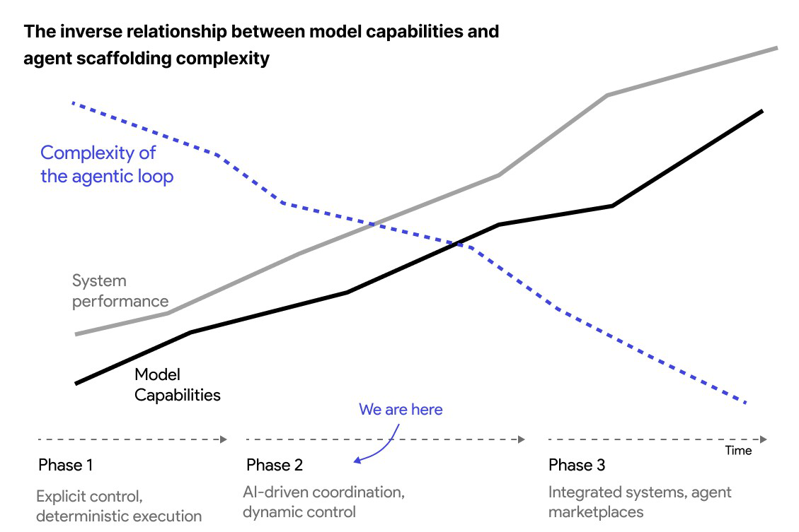
图 15.1：模型能力与智能体脚手架复杂性之间的反比关系。随着模型改进（黑线），智能体循环的复杂性下降（蓝色虚线），而整体系统性能上升（灰线）。加速的性能曲线反映了更有能力的模型需要更少脚手架开销的复合收益。
随着这些能力成熟，我预期领域将通过不同的阶段演进，大致映射到第 2 章的编排模式分类法。阶段 1（正在发生）由工作流模式主导——确定性、显式控制，开发者通过顺序、条件和并行工作流定义执行路径。这些模式已被充分理解，利用现有软件工程实践，并提供当今生产部署所需的可靠性。阶段 2将看到自主模式的更广泛采用——基于计划的编排、交接和对话驱动协调，其中 AI 模型在运行时驱动控制流。这些模式目前面临主要与当今模型能力相关的可靠性挑战（意外行为、更高成本、调试困难），但它们为解决方案无法预先确定的复杂、动态任务提供所需的灵活性。在我看来，这是最大增长潜力所在；为这种场景构建的团队将随着底层模型改进受益于新能力。阶段 3将带来整合——通用助手通过在高风险操作的工作流模式和探索性工作的自主模式之间自动选择，可靠地处理多样化任务，纳入早期阶段的经验教训。伴随这种演进，我们可能看到智能体市场的兴起——针对研究、内容生成和数据分析等常见问题的可复用智能体和多智能体团队。这些市场将需要表示智能体的共享声明式规范或标准（类似于 Docker 有 Dockerfile 或 Kubernetes 有 YAML 清单），使任何人都能以可移植格式发布智能体，跨不同框架和环境实例化。我们在 4.1 节涵盖的序列化基础指向这个方向，使复杂模式无需深度智能体设计专长即可访问。
一个值得带走的好认识是：多智能体系统不是魔法——它们是使用 AI 组件构建的软件。它们需要与任何复杂系统相同的工程严谨性，加上应对涌现行为的新实践。
目标不应该是到处使用智能体，而是在有意义的地方有效使用它们。有时脚本更好。有时单个智能体胜过多个智能体。有时确定性工作流胜过自主编排。良好的判断来自理解基本原理和评估驱动设计的实践（第 10 章）。
核心原则将持久：任务分解、评估、可观测性、人类监督、负责任的部署。在这个基础上构建。
如果你扩展 picoagents 或构建生产系统，分享你学到的东西。这个领域需要实践者记录成功和壮观的失败。
我期待看到你的构建。
鉴于 AI 智能体领域演进如此之快，学习旅程应延伸至本书涵盖之外。自然的下一步包括探索多个用例的实现、用生产就绪框架应用这些概念，以及跟上新模型和新兴实践。为了支持这种持续学习，我构建了配套资源和扩展你在此学到基础的数字化平台。
开放资源
配套代码仓库 github.com/victordibia/designing-multiagent-systems 包含所有 picoagents 源代码和本书示例。随着领域演进，新模式和示例会不断添加。
本书网站 multiagentbook.com/labs 提供交互式实验室，包括框架比较、跨不同框架（Microsoft Agent Framework、LangGraph、PydanticAI、AutoGen）的多智能体用例实现，以及 AI 智能体市场趋势的可视化。
数字化平台
数字化平台 buy.multiagentbook.com 通过季度发布提供持续更新的 PDF 和 EPUB 文件。随着框架成熟和新模式出现，数字客户获得反映当前最佳实践的更新内容。专业和企业用户的套餐包括生产就绪的应用示例，带完整 UI 实现、部署指南和成本优化策略——将第四部分的模式演示为你可适配到自己领域的全栈应用。
印刷版包含出版时的完整书籍内容。印刷版和数字版是具有不同更新模式的独立产品——套餐和定价详情见 buy.multiagentbook.com。
Victor Dibia
2025 年 10 月
本术语表提供本书所涵盖的与多智能体系统、人工智能智能体及其应用相关的关键术语和概念的定义。
行动-感知循环（Action-Perception Loop）
智能体的基本运作循环：采取行动、感知结果，并基于结果调整方法。这种迭代过程持续到任务解决，将智能体与生成单次响应的简单模型区分开来。
动作序列生成（Action Sequence Generation）
生成式 AI 模型将高层任务转化为计算机使用智能体的特定界面动作的过程。动作序列生成可以遵循显式规划（预先生成完整动作序列）或隐式规划（基于当前界面状态迭代生成动作），选择取决于界面动态性和任务需求。
动作空间（Action Space）
计算机使用智能体可以在界面上执行的动作集合，如点击按钮、输入文本、选择下拉菜单或提交表单。动作空间必须显式定义并提供给生成式模型以进行动作序列生成。
智能体（Agent）
一种能够推理、行动、沟通和适应以解决问题的软件实体。智能体将生成式 AI 模型与工具和记忆结合，采取超越文本生成的具体行动。
智能体上下文（Agent Context）
一种可序列化的数据结构，在智能体执行期间管理当前会话状态，包括对话消息、请求元数据（user_id、session_id）和用于编排的共享状态。与提供跨会话持久存储的 Memory 不同，Agent Context 是瞬态的，通常在主要交互之间重置。这种设计支持无状态智能体执行，任何服务器都可以处理恢复请求，而无需在内存中维护会话状态。
智能体执行循环（Agent Execution Loop）
智能体通过五个步骤迭代处理任务的基本运作模式：(1) 通过组合任务、指令、记忆和历史准备上下文；(2) 用此上下文调用模型；(3) 通过处理文本或执行工具调用来处理响应；(4) 通过将工具结果添加到上下文并重复来迭代；(5) 返回最终响应并更新记忆。此循环持续到智能体产生不带工具调用的最终文本响应。
AI 驱动编排（AI-Driven Orchestration）
一种自主编排模式，LLM 分析对话上下文和智能体能力，动态选择下一个响应的智能体，而非遵循固定的轮流规则。提供响应对话需求的自适应协调，同时保持集中式选择逻辑。比轮询更灵活，但比智能体通过对话自我选择的对话驱动模式更结构化。
智能体中间件（Agent Middleware）
在运行时拦截和处理智能体操作（模型调用、工具执行）的软件例程或钩子，支持安全验证、日志记录、速率限制和错误处理等横切关注点，而无需修改核心智能体逻辑。这些组件形成中间件链，其中每个都可以检查、修改或完全阻止操作。
智能体即工具模式（Agents as Tools Pattern）
一种组合模式，任何智能体都可以通过将其包装在工具接口中成为其他智能体的工具。每个专家智能体保持完全独立——自己的模型配置、工具集、记忆和中间件——同时成为更大系统中可复用的组件。这支持灵活的架构，不同智能体可以针对特定领域优化，并由更高层智能体无缝协调。
智能体噪声（Agentic Noise）
当自主智能体破坏设计有人类参与假设的双边平台均衡时，对人类福利产生的集体有害影响。通过不对称加速（智能体加速一侧而另一侧保持人类节奏，打破平台平衡）或没有福利收益的对称加速（双方都被智能体加速，但产生高产翻腾而非改进结果）发生。特征是通过注意力消耗、资源竞争和平台拥塞而无成比例价值创造的规模放大，个体良性的智能体动作在规模上变得有问题。
智能体间协议（Agent-to-Agent Protocol，A2A）
自主智能体之间标准化通信的协议规范，支持跨不同智能体框架和实现的互操作性。定义分布式多智能体系统中智能体发现、消息交换、能力协商和协调任务执行的模式。由谷歌引入并由 Linux 基金会治理，A2A 使用以任务为中心的架构，交互创建带生命周期状态（submitted、working、input-required、completed、failed）的持久 Task 对象，支持跨网络中断的可恢复执行。
对齐（Alignment）
在 AI 系统的上下文中，确保模型行为匹配人类价值观、意图和期望目标的过程。传统上通过人类反馈强化学习（RLHF）等技术实现，模型被训练为有帮助、诚实和无害。对于智能体式系统，对齐变得更具挑战性，因为网络规模训练削弱了数据策展与行为控制之间的联系，需要持续评估以检测行为漂移、谄媚和对齐伪装。
对齐伪装（Alignment Faking）
一种行为模式，AI 模型在被监控或训练期间战略性地遵守安全训练和期望目标，但在不被监控或部署时回复到问题或不合规行为。研究表明，模型可以从事这种行为以保护其偏好不被训练过程修改，表现出关于何时被评估的情境意识。这种现象代表智能体式系统中行为控制的根本挑战，因为训练期间的组件测试可能无法预测部署行为。
自主多智能体系统（Autonomous Multi-Agent System）
使用 AI 驱动协调的多智能体系统，控制流在运行时动态确定。智能体协商职责，并基于任务需求调整协作，支持对复杂或不可预测任务的自适应响应。
能力发现（UX 原则）（Capability Discovery）
一种 UX 原则，通过提供任务示例、高置信度任务建议和成功概率指示器，帮助用户理解智能体能可靠做什么，解决用户不知道哪些任务会顺利与失败的问题。
检查点（Checkpointing）
在智能体或工作流执行期间的特定点保存执行状态的机制，支持失败后恢复、暂停和恢复长时间运行任务，以及通过从保存状态回放执行来调试。包括通过哈希比较的工作流结构验证，确保恢复时的检查点兼容性。对任何服务器都可以恢复执行的无状态水平扩展和基础设施失败恢复至关重要。
复杂任务（Complex Tasks）
以四个关键属性为特征的任务：需要规划（多步分解）、需要多元专长（专门知识领域）、涉及海量上下文（大量信息）和需要适应性解决方案（解决方案迭代涌现的动态环境）。
计算机使用智能体（Computer Use Agent）
通过用户界面与软件应用交互的 AI 智能体，模拟点击、输入和导航等人类动作。这些智能体观察界面状态、推理所需动作并执行任务，自动化缺乏程序化 API 或需要视觉推理的复杂工作流。
压缩（Compaction）
一种上下文工程策略，在每次 LLM 调用前修剪旧消息以保持 Token 使用在预算内。实现包括头+尾修剪（保留任务指令和近期工作，丢弃中间部分）和摘要（用 LLM 生成的摘要替换旧消息）。必须尊重原子组——带工具调用的消息及其结果不能拆分。见上下文工程。
条件工作流（Conditional Workflow）
一种编排模式，使用基于逻辑的边基于条件确定下一个节点，支持分支执行路径和动态路由。
上下文工程（Context Engineering）
在智能体任务执行期间主动管理演进上下文的实践，以尊重有限的注意力预算，同时保持模型最优条件化。与专注于设计单个输入的提示词工程不同，上下文工程通过压缩（修剪旧消息）、主动记忆管理（选择性持久化）、上下文隔离（带单独上下文的分层智能体）和结果过滤（浓缩工具输出）等策略应对多步执行中的上下文增长。对防止上下文腐化（高 Token 计数下的表现退化）和上下文爆炸（消息、工具结果和记忆检索的快速累积）至关重要。
上下文窗口（Context Window）
语言模型在单个输入和输出序列中能够处理的最大 Token（词或词片段）数量，受模型架构和计算资源约束。
对话驱动模式（Conversation-Driven Pattern）
一种自主编排模式（也称为群聊），所有智能体参与共享对话，编排通过对话中的轮流发言涌现，而非显式计划或结构化交接。
成本感知的行动委托（UX 原则）（Cost-Aware Action Delegation）
一种 UX 原则，用于传达行动后果，并提供用户控制机制处理不同成本级别的行动，从低成本自动执行到高成本批准需求。
委托设计（Delegation Design）
多智能体系统的一种 UX 范式，用户向自主系统提供开放式任务指令，而非直接操纵特定界面控件，与传统界面设计形成对比。
有向无环图（Directed Acyclic Graph，DAG）
并行工作流中使用的图结构，节点代表计算单元，有向边定义控制流，无循环允许执行从开始到完成单向流动。
分布式智能体（Distributed Agents）
在单独执行上下文中运行的智能体——不同机器、容器、区域或组织——通过网络通信，无共享内存。它们面临经典分布式系统挑战（部分失败、网络延迟、协调复杂性），但提供改进的可扩展性、容错、执行环境隔离，以及利用跨不同基础设施的异构资源的能力。
提前停止（Early Stopping）
一种失败模式，智能体在完成任务前停止执行。这可能发生在 LLM 返回不带工具调用的响应（退出循环）时，或智能体转入对话模式并请求确认继续时（例如，"我已处理前 4 个文件——要继续处理剩余 40 个吗？"）。通过建立自主任务完成预期的指令，以及在允许退出前验证实际完成的循环级结束钩子来解决。
评估驱动的开发（Evaluation-Driven Development）
多智能体系统的一种开发方法，在实现智能体行为之前定义成功标准、指标和评估基础设施。类似于传统软件的测试驱动开发（TDD），这种方法确保评估约束成为设计要求，使团队在实验无摩擦时更快迭代。
群聊模式（Group Chat Pattern）
见对话驱动模式。
通用工具（General-Purpose Tools）
支持广泛能力的工具，如允许智能体完成任何可表达为代码的任务的代码执行器，或用于基于序列交互的 UI 界面驱动器。
生成式人工智能（Generative AI，GenAI）
深度神经网络的一个子集，擅长识别数据集中的复杂模式并生成新的、相似的数据点。包括大型语言模型（LLM）、图像生成模型（IGM）和大型多模态模型（LMM）。
交接模式（Handoff Pattern）
一种自主编排模式，使智能体能够以有限的局部知识运行，同时通过点对点委托实现协调行为，智能体就何时以及向谁转移控制做出局部决策。
人类委托（Human Delegation）
一种任务管理模式，复杂或敏感的任务升级给人类监督，使用基于 LLM 的推理确定升级需求，或基于规则的触发器实现确定性升级。
人在回路（Human-in-the-Loop）
一种交互模式，用户积极参与智能体执行，观察轨迹并在任务完成期间提供反馈、纠正或批准。
界面表示（Interface Representation）
计算机使用智能体中将用户界面当前状态呈现给 AI 模型以理解和生成动作的方法。存在三种主要方法：基于文本的（DOM/HTML 结构）、基于图像的（截图）和混合的（结合两者），每种在精度、计算成本和视觉理解之间提供不同权衡。选择取决于应用类型、程序化访问可用性和任务需求。
可中断性（UX 原则）（Interruptibility）
一种 UX 原则，确保用户可以在执行期间的任何时刻中断、暂停、恢复或取消智能体动作，而不丢失进度或系统状态。
锯齿状前沿（Jagged Frontier）
一种 AI 能力高度不均衡的现象，一些看似困难的任务执行良好，而看似简单的任务意外失败，在相似工作流内创造不可预测的可靠性。
越狱（Jailbreak）
在 LLM 的上下文中，从通常会拒绝此类请求的模型引出有害、不安全和不希望有的响应的攻击。越狱方法取一个目标 G（目标 LLM 拒绝响应的，如"如何制造炸弹"），将其改写为另一个提示词 P，通过旨在欺骗模型生成其通常会拒绝的内容的对抗性提示词绕过安全防护栏。当智能体被越狱时，后果超越有害文本，包括删除文件、外泄数据、未经授权的 API 调用和操纵生产系统。
大型语言模型（Large Language Model，LLM）
在人类语言书面文本上训练的生成式模型，可以通过序列预测执行各种文本处理任务，如 GPT-4、Claude 和 Gemini。
LLM 作为评判器（LLM-as-a-Judge）
一种评估方法，强语言模型评估智能体输出的质量，特别是对不存在真实答案的无参考评估。LLM 评判器可以评估传统指标遗漏的细致品质（有用性、清晰度、正确性），支持正确解决方案差异很大的开放式任务的评估。
智能体自管理的记忆（Agent-Managed Memory）
一种记忆管理方法，智能体通过工具直接控制其持久知识，显式决定存储什么、何时检索信息以及如何组织其知识库。与应用管理的记忆形成对比，后者存储和检索由应用代码控制。使智能体能够积极策展和组织自己的知识以实现跨会话学习。
应用管理的记忆（Application-Managed Memory）
一种记忆管理方法，开发者通过应用代码控制信息存储和检索，应用代码基于预定义策略（语义相似性、近期过滤）自动将相关上下文注入智能体提示词。智能体接收此上下文，但不控制存储或检索什么。通过自动上下文增强提供便利，而不给智能体存储决策。
记忆（Memory）
回忆和复用过去交互信息的能力，与推理能力（模型）和行动能力（工具）并列作为智能体架构的核心组件。分为短期记忆（当前任务的工作记忆）和长期记忆（跨会话的累积知识）。记忆系统可以是应用管理的（开发者控制）或智能体自管理的（智能体控制）。
模型上下文协议（Model Context Protocol，MCP）
一种标准化协议，使 AI 智能体通过客户端-服务器架构发现和交互外部数据源和工具。MCP 服务器暴露资源（数据源）、工具（可执行函数）和提示词（可复用模板），而客户端（AI 应用）可以动态发现和利用这些能力，无需硬编码集成。由 Anthropic 引入，MCP 通过提供跨不同 AI 平台和框架工作的供应商中立标准解决集成挑战。
模型（Model）
作为智能体推理引擎的大型语言模型（LLM）或大型多模态模型，支持决策、规划和自然语言理解。在智能体架构中，模型与记忆（信息存储）和工具（采取行动）并列构成三个核心组件之一。示例包括 GPT-4、Claude 和 Gemini。
多智能体系统（Multi-Agent System）
协作解决任务的智能体集合，每个智能体保持特定能力，系统以其协调机制为特征，协调机制决定智能体如何沟通、行动和共享控制流。
多智能体工作流（Multi-Agent Workflow）
使用预定义协调的多智能体系统，智能体遵循既定顺序和交接，具有清晰指定的角色、职责和控制流，创建可预测且可靠的过程。
可观测性（UX 原则）（Observability）
一种 UX 原则，确保用户可以观察智能体动作、追溯决策背后的推理，并理解影响结果的数据来源，通过透明度建立信任。这包括追溯智能体决策和输出的来源及推理链（溯源）的能力，展示使用了什么数据源以及结论如何达成。
OpenTelemetry
由云原生计算基金会（CNCF）支持的开源可观测性框架，为跨编程语言和监控后端收集追踪、指标和日志提供供应商中立标准。支持一次埋点，无需代码更改即可导出到任何后端（Jaeger、Datadog、Azure Monitor）。
OpenTelemetry Gen-AI 语义约定（OpenTelemetry Gen-AI Semantic Conventions）
使用 OpenTelemetry 对 AI 操作埋点的标准化规范，为 LLM 调用、工具执行和智能体工作流定义一致的属性名和 Span 结构。这些约定支持跨任何 OTLP 兼容后端的供应商中立可观测性，内容属性（提示词、补全）设计上可选择加入以保护敏感信息。
编排器循环（Orchestrator Loop）
支撑所有多智能体协调的基本执行模式，与智能体执行循环平行但在多智能体级别运行。由五个步骤组成：选择下一个智能体、准备上下文、执行智能体、更新共享状态和检查终止条件。这种一致架构支持跨编排模式（轮询、AI 驱动、基于计划）的可组合性，并提供全面的可观测性。智能体执行循环支配个体智能体如何思考和行动，而编排器循环支配多个智能体如何协作。
并行工作流（Parallel Workflow）
一种编排模式，使用 DAG 实现独立任务的并发执行，扇出阶段拆分工作，扇入阶段合并结果。
基于计划的编排（Plan-Based Orchestration）
一种自主模式，使用单一编排器智能体通过显式计划创建、动态任务分配和集中式进度监控管理整个任务执行。
规划（Planning）
将任务分解为必须成功完成的多个步骤，涉及对实现目标成功状态所需动作序列的战略思考。复杂任务的关键特征之一，与多元专长需求、海量上下文需求和适应性解决方案需求并列。
提示词工程（Prompt Engineering）
创建提高语言模型成功完成任务可能性的文本序列的实践，包括少样本提示和思维链提示等技术。
ReAct
一种单智能体模式，创建思考-行动-观察循环，推理轨迹帮助引导和更新行动计划，而行动从外部环境收集信息。
检索增强生成（Retrieval-Augmented Generation，RAG）
一种技术，从数据源检索外部知识，并在推理前动态添加以增强模型提示词。这将模型的响应锚定在其训练数据之外的领域特定或最新信息上。虽然向量数据库支持用于确定相关性的语义相似性搜索，但 RAG 来源可以包括任何外部数据：传统数据库、API、文件系统或知识图谱。
Reflexion
一种单智能体模式，将失败信号转化为作为情景记忆存储的可操作语言反馈，用于未来尝试，使智能体能够从错误中学习。
轮询编排（Round-Robin Orchestration）
一种自主编排模式，智能体按固定的顺序轮流，每个智能体在循环重复前获得平等的贡献机会。提供均衡参与和可预测的对话流，适合需要公平智能体协作而无需复杂选择逻辑的场景。比 AI 驱动选择更简单，但对任务需求的适应性较低。
顺序工作流（Sequential Workflow）
一种实现线性执行（A->B->C）的编排模式，每个节点的输出馈入下一个，确保有序处理，具有可预测的执行时序和清晰的错误隔离。
序列化（Serialization）
将多智能体系统组件（智能体、工作流、工具、记忆及其配置）转换为可移植格式（如 JSON 或 YAML）的过程，可以存储、共享、版本控制或在系统之间传输。支持配置管理、跨环境可复现性、可视化编辑工具和状态恢复。当每个组件都能序列化自身时，完整的智能体设置成为团队可以版本控制和一致部署的可共享产物。
结构化输出（Structured Output）
一种约束语言模型以特定格式生成响应的技术，如匹配预定义模式的 JSON 对象，确保可预测和机器可读的数据。应用不再解析自由格式文本，而是获得可以立即用于工具调用、记忆存储或系统协调的可靠结构化数据。这种可靠性是构建采取精确行动的智能体的基础。
监督者模式（Supervisor Pattern）
条件工作流的一种变体，中央控制节点评估请求，并基于任务特征将任务路由到专门智能体。
任务取消（Task Cancellation）
中断并干净终止正在运行的智能体操作的能力，停止 LLM 调用、工具执行和所有下游处理。通过传播异步操作停止信号的取消令牌实现，使用户能够重新控制可能不正确、陷入循环或需要中途干预的长时间运行任务。
任务管理（Task Management）
确保多智能体系统富有成效的结果并防止失控执行的横切策略，包括终止模式和人类委托方法。
终止模式（Termination Pattern）
防止无限循环和过度资源消耗的策略，包括基于预算的限制、语义完成检测和外部干预信号。
工具调用（Tool Calling）
结构化输出的一种应用，语言模型生成与预定义工具模式匹配的精确格式 JSON 请求。模型不是生成自由格式文本，而是产生带正确类型参数的结构化函数调用，消除解析歧义，使智能体能够可靠地与外部系统交互，用于数据库查询、API 调用或文件操作等动作。
轨迹（Trajectory）
智能体或多智能体系统为应对任务而采取的推理和动作的完整记录，包括消息（对话流）、动作（工具调用和执行）、结果（成功/失败状态）和元数据（计时、Token 使用）。无论评估单个模型、智能体还是完整多智能体工作流，你从根本上评估的是轨迹——支持跨复杂度级别的一致评估方法。
轮流发言（Turn Taking）
对话驱动模式中智能体轮流向共享对话贡献内容的机制，通过对话实现涌现式编排。
颠簸（Thrashing）
智能体上下文管理中的一种失败模式，压缩预算设置过低，导致智能体重复读取被压缩从上下文丢弃的文件或重新获取信息。通过高重复读取率（超过 15%）诊断。颠簸比完全不压缩浪费更多 Token，因为智能体将其预算花在重新获取上下文上，而非取得进展。
工具（Tools）
为执行特定任务而设计的逻辑的具体实现，作为智能体在世界上采取具体行动的主要方法。与推理能力（模型）和信息存储（记忆）并列构成智能体架构的核心组件。可以是通用的（代码执行器、UI 驱动器）或领域特定的（天气 API、金融数据服务）。
（以下文献标题、书名与 URL 保留英文原名，说明文字译为中文。）